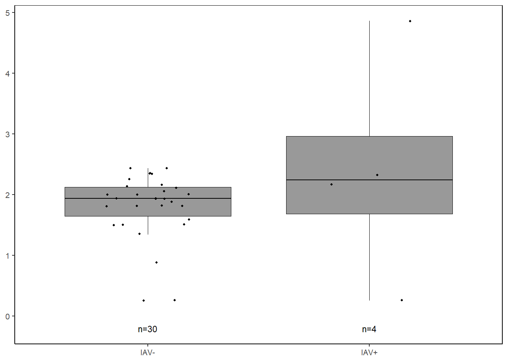
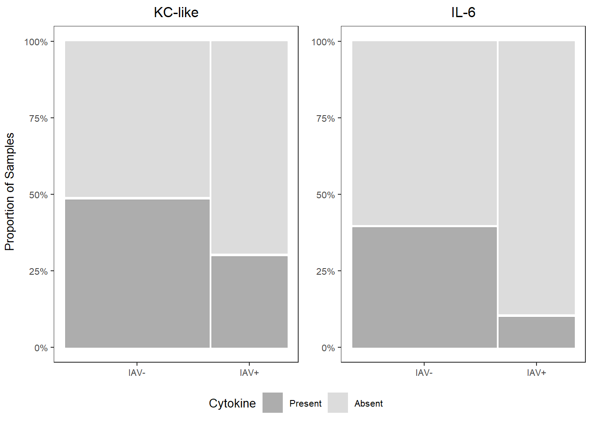
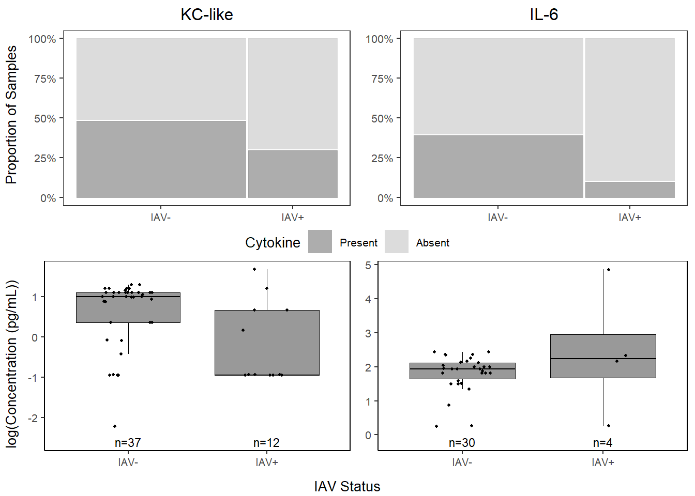
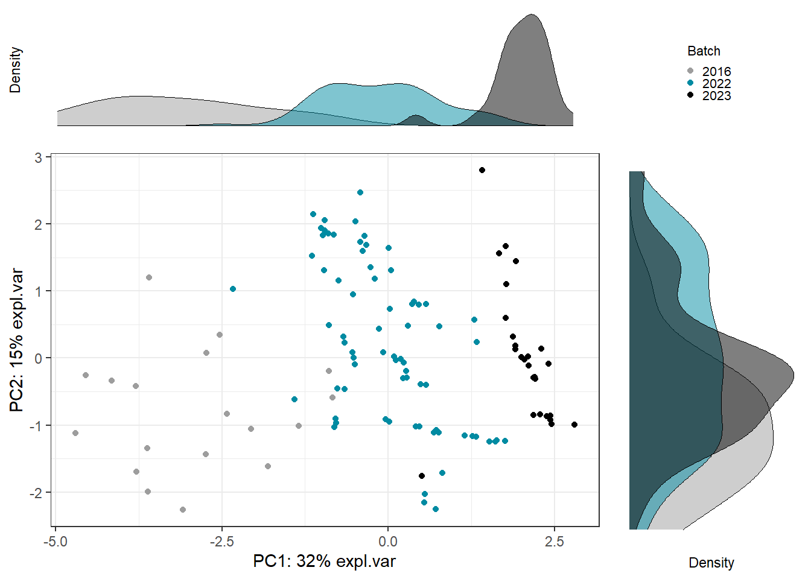

6 IAV ~ cytokines
6.2 Data
cyto <-
read.csv("Output Files/cleaned_cytokine.csv")
cytobin <-
read.csv("Output Files/cleaned_cytokine_bin.csv")
meta <- read.csv("Output Files/metadata_cyto.csv") %>%
mutate(iav=gsub("neg", "IAV-", iav),
iav=gsub("pos", "IAV+", iav))
# Merge cytokine & metadata
data <- merge(cyto, meta, by="Sample") %>%
filter(!is.na(iav)) %>%
mutate(analysis.year=factor(analysis.year))
databin <-
merge(cytobin, meta, by="Sample") %>%
filter(!is.na(iav)) %>%
mutate(analysis.year=factor(analysis.year))6.3 PERMANOVA
6.3.1 Cytokine Presence/Absence
6.3.1.1 Create similarity matrix (Sorensen)
Dissimilarity = 1-Sorensen

# Dissimilarity summary stats
mean(1-databin_dist); min(1-databin_dist); max(1-databin_dist); median(1-databin_dist)## [1] 0.4016769## [1] 0## [1] 0.8## [1] 0.46.3.1.2 Run PERMANOVA
Use restricted permutation test - data are not exchangeable between analysis years so permute within groups defined by strata.
** Not sig
# define permutations & strata
permute_databin <-
how(plots=Plots(strata=databin$analysis.year, type="none"), nperm=4999)
# run permanova
adonis2((1-databin_dist) ~ iav,
data=databin,
permutations=permute_databin)## Permutation test for adonis under reduced model
## Plots: databin$analysis.year, plot permutation: none
## Permutation: free
## Number of permutations: 4999
##
## adonis2(formula = (1 - databin_dist) ~ iav, data = databin, permutations = permute_databin)
## Df SumOfSqs R2 F Pr(>F)
## Model 1 0.3814 0.03362 3.9657 0.191
## Residual 114 10.9638 0.96638
## Total 115 11.3452 1.000006.3.1.3 Homogeneity of group dispersions
** Not sig
## Analysis of Variance Table
##
## Response: Distances
## Df Sum Sq Mean Sq F value Pr(>F)
## Groups 1 0.00374 0.0037435 0.4087 0.5239
## Residuals 114 1.04431 0.0091606
6.3.1.4 Visualization
Principal Coordinates Analysis
# Use 1 - Sorensen's for dissimilarity
databin_pco <- cmdscale(1-databin_dist, eig=TRUE)
plot(databin_pco$points, type="n",
cex.lab=1.5, cex.axis=1.1, cex.sub=1.1)
ordiellipse(ord = databin_pco,
groups = factor(data$iav),
display = "sites",
col = c("grey", "darkseagreen"),
lwd = 2,
label = TRUE)
plot(databin_pco$points, type="n",
cex.lab=1.5, cex.axis=1.1, cex.sub=1.1)
ordispider(ord = databin_pco,
groups = factor(data$iav),
display = "sites",
col = c("grey", "darkseagreen"),
lwd=2,
label=TRUE)
6.3.2 Cytokine Concentration
6.3.2.2 Run PERMANOVA
** Not sig
# define permutations & strata
permute_data <-
how(plots=Plots(strata=data$analysis.year, type="none"),
nperm=4999)
# run permanova
adonis2(data_dist ~ iav,
data=data,
permutations=permute_data)## Permutation test for adonis under reduced model
## Plots: data$analysis.year, plot permutation: none
## Permutation: free
## Number of permutations: 4999
##
## adonis2(formula = data_dist ~ iav, data = data, permutations = permute_data)
## Df SumOfSqs R2 F Pr(>F)
## Model 1 0.2609 0.01366 1.5784 0.475
## Residual 114 18.8403 0.98634
## Total 115 19.1011 1.000006.3.2.3 Homogeneity of group dispersions
** Not sig
## Analysis of Variance Table
##
## Response: Distances
## Df Sum Sq Mean Sq F value Pr(>F)
## Groups 1 0.09537 0.095372 3.6232 0.0595 .
## Residuals 114 3.00074 0.026322
## ---
## Signif. codes: 0 '***' 0.001 '**' 0.01 '*' 0.05 '.' 0.1 ' ' 1
6.3.2.4 Visualization
# Use Bray-Curtis dissimilarity matrix
data_pco <- cmdscale(data_dist, eig=TRUE)
plot(data_pco$points, type="n",
cex.lab=1.5, cex.axis=1.1, cex.sub=1.1)
ordiellipse(ord = data_pco,
groups = factor(data$iav),
display = "sites",
col = c("grey", "darkseagreen"),
lwd = 2,
label = TRUE)
plot(data_pco$points, type="n",
cex.lab=1.5, cex.axis=1.1, cex.sub=1.1)
ordispider(ord = data_pco,
groups = factor(data$iav),
display = "sites",
col = c("grey", "darkseagreen"),
lwd=2,
label=TRUE)
6.4 Cytokine Importance
6.4.2 Cross Validation
# Creating task and learner
task <- as_task_classif(iav ~ .,
data = data_cart)
task <- task$set_col_roles(cols="iav",
add_to="stratum")
learner <- lrn("classif.rpart",
predict_type = "prob",
maxdepth = to_tune(2, 5),
minbucket = to_tune(1, 40),
minsplit = to_tune(1, 30)
)
# Define tuning instance - info ~ tuning process
instance <- ti(task = task,
learner = learner,
resampling = rsmp("cv", folds = 10),
measures = msr("classif.ce"),
terminator = trm("none")
)
# Define how to tune the model
tuner <- tnr("grid_search",
batch_size = 10
)
# Trigger the tuning process
tuner$optimize(instance)## INFO [11:08:07.503] [bbotk] Starting to optimize 3 parameter(s) with '<OptimizerBatchGridSearch>' and '<TerminatorNone>'
## INFO [11:08:07.532] [bbotk] Evaluating 10 configuration(s)
## INFO [11:08:07.548] [mlr3] Running benchmark with 100 resampling iterations
## INFO [11:08:07.580] [mlr3] Applying learner 'classif.rpart' on task 'data_cart' (iter 1/10)
## INFO [11:08:07.594] [mlr3] Applying learner 'classif.rpart' on task 'data_cart' (iter 2/10)
## INFO [11:08:07.606] [mlr3] Applying learner 'classif.rpart' on task 'data_cart' (iter 3/10)
## INFO [11:08:07.632] [mlr3] Applying learner 'classif.rpart' on task 'data_cart' (iter 4/10)
## INFO [11:08:07.646] [mlr3] Applying learner 'classif.rpart' on task 'data_cart' (iter 5/10)
## INFO [11:08:07.657] [mlr3] Applying learner 'classif.rpart' on task 'data_cart' (iter 6/10)
## INFO [11:08:07.669] [mlr3] Applying learner 'classif.rpart' on task 'data_cart' (iter 7/10)
## INFO [11:08:07.681] [mlr3] Applying learner 'classif.rpart' on task 'data_cart' (iter 8/10)
## INFO [11:08:07.691] [mlr3] Applying learner 'classif.rpart' on task 'data_cart' (iter 9/10)
## INFO [11:08:07.704] [mlr3] Applying learner 'classif.rpart' on task 'data_cart' (iter 10/10)
## INFO [11:08:07.717] [mlr3] Applying learner 'classif.rpart' on task 'data_cart' (iter 1/10)
## INFO [11:08:07.727] [mlr3] Applying learner 'classif.rpart' on task 'data_cart' (iter 2/10)
## INFO [11:08:07.737] [mlr3] Applying learner 'classif.rpart' on task 'data_cart' (iter 3/10)
## INFO [11:08:07.749] [mlr3] Applying learner 'classif.rpart' on task 'data_cart' (iter 4/10)
## INFO [11:08:07.761] [mlr3] Applying learner 'classif.rpart' on task 'data_cart' (iter 5/10)
## INFO [11:08:07.771] [mlr3] Applying learner 'classif.rpart' on task 'data_cart' (iter 6/10)
## INFO [11:08:07.782] [mlr3] Applying learner 'classif.rpart' on task 'data_cart' (iter 7/10)
## INFO [11:08:07.792] [mlr3] Applying learner 'classif.rpart' on task 'data_cart' (iter 8/10)
## INFO [11:08:07.803] [mlr3] Applying learner 'classif.rpart' on task 'data_cart' (iter 9/10)
## INFO [11:08:07.814] [mlr3] Applying learner 'classif.rpart' on task 'data_cart' (iter 10/10)
## INFO [11:08:07.824] [mlr3] Applying learner 'classif.rpart' on task 'data_cart' (iter 1/10)
## INFO [11:08:07.835] [mlr3] Applying learner 'classif.rpart' on task 'data_cart' (iter 2/10)
## INFO [11:08:07.849] [mlr3] Applying learner 'classif.rpart' on task 'data_cart' (iter 3/10)
## INFO [11:08:07.860] [mlr3] Applying learner 'classif.rpart' on task 'data_cart' (iter 4/10)
## INFO [11:08:07.872] [mlr3] Applying learner 'classif.rpart' on task 'data_cart' (iter 5/10)
## INFO [11:08:07.886] [mlr3] Applying learner 'classif.rpart' on task 'data_cart' (iter 6/10)
## INFO [11:08:07.899] [mlr3] Applying learner 'classif.rpart' on task 'data_cart' (iter 7/10)
## INFO [11:08:07.909] [mlr3] Applying learner 'classif.rpart' on task 'data_cart' (iter 8/10)
## INFO [11:08:07.919] [mlr3] Applying learner 'classif.rpart' on task 'data_cart' (iter 9/10)
## INFO [11:08:07.931] [mlr3] Applying learner 'classif.rpart' on task 'data_cart' (iter 10/10)
## INFO [11:08:07.941] [mlr3] Applying learner 'classif.rpart' on task 'data_cart' (iter 1/10)
## INFO [11:08:07.956] [mlr3] Applying learner 'classif.rpart' on task 'data_cart' (iter 2/10)
## INFO [11:08:07.967] [mlr3] Applying learner 'classif.rpart' on task 'data_cart' (iter 3/10)
## INFO [11:08:07.978] [mlr3] Applying learner 'classif.rpart' on task 'data_cart' (iter 4/10)
## INFO [11:08:07.988] [mlr3] Applying learner 'classif.rpart' on task 'data_cart' (iter 5/10)
## INFO [11:08:08.001] [mlr3] Applying learner 'classif.rpart' on task 'data_cart' (iter 6/10)
## INFO [11:08:08.016] [mlr3] Applying learner 'classif.rpart' on task 'data_cart' (iter 7/10)
## INFO [11:08:08.027] [mlr3] Applying learner 'classif.rpart' on task 'data_cart' (iter 8/10)
## INFO [11:08:08.039] [mlr3] Applying learner 'classif.rpart' on task 'data_cart' (iter 9/10)
## INFO [11:08:08.050] [mlr3] Applying learner 'classif.rpart' on task 'data_cart' (iter 10/10)
## INFO [11:08:08.061] [mlr3] Applying learner 'classif.rpart' on task 'data_cart' (iter 1/10)
## INFO [11:08:08.071] [mlr3] Applying learner 'classif.rpart' on task 'data_cart' (iter 2/10)
## INFO [11:08:08.081] [mlr3] Applying learner 'classif.rpart' on task 'data_cart' (iter 3/10)
## INFO [11:08:08.095] [mlr3] Applying learner 'classif.rpart' on task 'data_cart' (iter 4/10)
## INFO [11:08:08.105] [mlr3] Applying learner 'classif.rpart' on task 'data_cart' (iter 5/10)
## INFO [11:08:08.124] [mlr3] Applying learner 'classif.rpart' on task 'data_cart' (iter 6/10)
## INFO [11:08:08.135] [mlr3] Applying learner 'classif.rpart' on task 'data_cart' (iter 7/10)
## INFO [11:08:08.146] [mlr3] Applying learner 'classif.rpart' on task 'data_cart' (iter 8/10)
## INFO [11:08:08.161] [mlr3] Applying learner 'classif.rpart' on task 'data_cart' (iter 9/10)
## INFO [11:08:08.175] [mlr3] Applying learner 'classif.rpart' on task 'data_cart' (iter 10/10)
## INFO [11:08:08.187] [mlr3] Applying learner 'classif.rpart' on task 'data_cart' (iter 1/10)
## INFO [11:08:08.200] [mlr3] Applying learner 'classif.rpart' on task 'data_cart' (iter 2/10)
## INFO [11:08:08.210] [mlr3] Applying learner 'classif.rpart' on task 'data_cart' (iter 3/10)
## INFO [11:08:08.221] [mlr3] Applying learner 'classif.rpart' on task 'data_cart' (iter 4/10)
## INFO [11:08:08.234] [mlr3] Applying learner 'classif.rpart' on task 'data_cart' (iter 5/10)
## INFO [11:08:08.244] [mlr3] Applying learner 'classif.rpart' on task 'data_cart' (iter 6/10)
## INFO [11:08:08.255] [mlr3] Applying learner 'classif.rpart' on task 'data_cart' (iter 7/10)
## INFO [11:08:08.265] [mlr3] Applying learner 'classif.rpart' on task 'data_cart' (iter 8/10)
## INFO [11:08:08.275] [mlr3] Applying learner 'classif.rpart' on task 'data_cart' (iter 9/10)
## INFO [11:08:08.286] [mlr3] Applying learner 'classif.rpart' on task 'data_cart' (iter 10/10)
## INFO [11:08:08.297] [mlr3] Applying learner 'classif.rpart' on task 'data_cart' (iter 1/10)
## INFO [11:08:08.307] [mlr3] Applying learner 'classif.rpart' on task 'data_cart' (iter 2/10)
## INFO [11:08:08.318] [mlr3] Applying learner 'classif.rpart' on task 'data_cart' (iter 3/10)
## INFO [11:08:08.329] [mlr3] Applying learner 'classif.rpart' on task 'data_cart' (iter 4/10)
## INFO [11:08:08.339] [mlr3] Applying learner 'classif.rpart' on task 'data_cart' (iter 5/10)
## INFO [11:08:08.350] [mlr3] Applying learner 'classif.rpart' on task 'data_cart' (iter 6/10)
## INFO [11:08:08.360] [mlr3] Applying learner 'classif.rpart' on task 'data_cart' (iter 7/10)
## INFO [11:08:08.371] [mlr3] Applying learner 'classif.rpart' on task 'data_cart' (iter 8/10)
## INFO [11:08:08.382] [mlr3] Applying learner 'classif.rpart' on task 'data_cart' (iter 9/10)
## INFO [11:08:08.393] [mlr3] Applying learner 'classif.rpart' on task 'data_cart' (iter 10/10)
## INFO [11:08:08.406] [mlr3] Applying learner 'classif.rpart' on task 'data_cart' (iter 1/10)
## INFO [11:08:08.417] [mlr3] Applying learner 'classif.rpart' on task 'data_cart' (iter 2/10)
## INFO [11:08:08.430] [mlr3] Applying learner 'classif.rpart' on task 'data_cart' (iter 3/10)
## INFO [11:08:08.440] [mlr3] Applying learner 'classif.rpart' on task 'data_cart' (iter 4/10)
## INFO [11:08:08.450] [mlr3] Applying learner 'classif.rpart' on task 'data_cart' (iter 5/10)
## INFO [11:08:08.461] [mlr3] Applying learner 'classif.rpart' on task 'data_cart' (iter 6/10)
## INFO [11:08:08.472] [mlr3] Applying learner 'classif.rpart' on task 'data_cart' (iter 7/10)
## INFO [11:08:08.483] [mlr3] Applying learner 'classif.rpart' on task 'data_cart' (iter 8/10)
## INFO [11:08:08.493] [mlr3] Applying learner 'classif.rpart' on task 'data_cart' (iter 9/10)
## INFO [11:08:08.506] [mlr3] Applying learner 'classif.rpart' on task 'data_cart' (iter 10/10)
## INFO [11:08:08.518] [mlr3] Applying learner 'classif.rpart' on task 'data_cart' (iter 1/10)
## INFO [11:08:08.529] [mlr3] Applying learner 'classif.rpart' on task 'data_cart' (iter 2/10)
## INFO [11:08:08.540] [mlr3] Applying learner 'classif.rpart' on task 'data_cart' (iter 3/10)
## INFO [11:08:08.552] [mlr3] Applying learner 'classif.rpart' on task 'data_cart' (iter 4/10)
## INFO [11:08:08.562] [mlr3] Applying learner 'classif.rpart' on task 'data_cart' (iter 5/10)
## INFO [11:08:08.580] [mlr3] Applying learner 'classif.rpart' on task 'data_cart' (iter 6/10)
## INFO [11:08:08.590] [mlr3] Applying learner 'classif.rpart' on task 'data_cart' (iter 7/10)
## INFO [11:08:08.601] [mlr3] Applying learner 'classif.rpart' on task 'data_cart' (iter 8/10)
## INFO [11:08:08.615] [mlr3] Applying learner 'classif.rpart' on task 'data_cart' (iter 9/10)
## INFO [11:08:08.627] [mlr3] Applying learner 'classif.rpart' on task 'data_cart' (iter 10/10)
## INFO [11:08:08.637] [mlr3] Applying learner 'classif.rpart' on task 'data_cart' (iter 1/10)
## INFO [11:08:08.647] [mlr3] Applying learner 'classif.rpart' on task 'data_cart' (iter 2/10)
## INFO [11:08:08.657] [mlr3] Applying learner 'classif.rpart' on task 'data_cart' (iter 3/10)
## INFO [11:08:08.668] [mlr3] Applying learner 'classif.rpart' on task 'data_cart' (iter 4/10)
## INFO [11:08:08.678] [mlr3] Applying learner 'classif.rpart' on task 'data_cart' (iter 5/10)
## INFO [11:08:08.688] [mlr3] Applying learner 'classif.rpart' on task 'data_cart' (iter 6/10)
## INFO [11:08:08.698] [mlr3] Applying learner 'classif.rpart' on task 'data_cart' (iter 7/10)
## INFO [11:08:08.712] [mlr3] Applying learner 'classif.rpart' on task 'data_cart' (iter 8/10)
## INFO [11:08:08.722] [mlr3] Applying learner 'classif.rpart' on task 'data_cart' (iter 9/10)
## INFO [11:08:08.732] [mlr3] Applying learner 'classif.rpart' on task 'data_cart' (iter 10/10)
## INFO [11:08:08.756] [mlr3] Finished benchmark
## INFO [11:08:08.894] [bbotk] Result of batch 1:
## INFO [11:08:08.897] [bbotk] maxdepth minbucket minsplit classif.ce warnings errors runtime_learners
## INFO [11:08:08.897] [bbotk] 2 23 24 0.3962121 0 0 0.06
## INFO [11:08:08.897] [bbotk] 2 40 1 0.3454545 0 0 0.04
## INFO [11:08:08.897] [bbotk] 3 14 7 0.3871212 0 0 0.00
## INFO [11:08:08.897] [bbotk] 4 5 24 0.3371212 0 0 0.02
## INFO [11:08:08.897] [bbotk] 4 5 27 0.3454545 0 0 0.07
## INFO [11:08:08.897] [bbotk] 4 18 24 0.3613636 0 0 0.04
## INFO [11:08:08.897] [bbotk] 5 14 10 0.3371212 0 0 0.04
## INFO [11:08:08.897] [bbotk] 5 27 20 0.3704545 0 0 0.04
## INFO [11:08:08.897] [bbotk] 5 40 7 0.3454545 0 0 0.05
## INFO [11:08:08.897] [bbotk] 5 40 20 0.3454545 0 0 0.05
## INFO [11:08:08.897] [bbotk] uhash
## INFO [11:08:08.897] [bbotk] 6b70b64c-e1ab-4081-95a5-95b9ab7d90cc
## INFO [11:08:08.897] [bbotk] 8d542e99-1055-4a38-af8b-5d68197dba60
## INFO [11:08:08.897] [bbotk] afbe2a58-f6af-44c0-8ef9-e4ed060abeca
## INFO [11:08:08.897] [bbotk] 6794febb-0b3d-428b-a596-2c491bba4033
## INFO [11:08:08.897] [bbotk] 07f8f15a-8347-4ad0-b023-dc2f90427f5d
## INFO [11:08:08.897] [bbotk] 44b32779-d3bb-4ab0-b19b-a1a785b1b67a
## INFO [11:08:08.897] [bbotk] 37df189f-9b0d-4389-8ca6-4c00e5566359
## INFO [11:08:08.897] [bbotk] 7f023121-1fba-4576-a78b-fdb5df472ab7
## INFO [11:08:08.897] [bbotk] 85da4875-dcf8-4627-b0a2-9d1bc176c633
## INFO [11:08:08.897] [bbotk] 00028cf4-80b4-49c6-934d-53c820519b5d
## INFO [11:08:08.899] [bbotk] Evaluating 10 configuration(s)
## INFO [11:08:08.906] [mlr3] Running benchmark with 100 resampling iterations
## INFO [11:08:08.910] [mlr3] Applying learner 'classif.rpart' on task 'data_cart' (iter 1/10)
## INFO [11:08:08.921] [mlr3] Applying learner 'classif.rpart' on task 'data_cart' (iter 2/10)
## INFO [11:08:08.931] [mlr3] Applying learner 'classif.rpart' on task 'data_cart' (iter 3/10)
## INFO [11:08:08.941] [mlr3] Applying learner 'classif.rpart' on task 'data_cart' (iter 4/10)
## INFO [11:08:08.952] [mlr3] Applying learner 'classif.rpart' on task 'data_cart' (iter 5/10)
## INFO [11:08:08.965] [mlr3] Applying learner 'classif.rpart' on task 'data_cart' (iter 6/10)
## INFO [11:08:08.975] [mlr3] Applying learner 'classif.rpart' on task 'data_cart' (iter 7/10)
## INFO [11:08:08.986] [mlr3] Applying learner 'classif.rpart' on task 'data_cart' (iter 8/10)
## INFO [11:08:08.997] [mlr3] Applying learner 'classif.rpart' on task 'data_cart' (iter 9/10)
## INFO [11:08:09.007] [mlr3] Applying learner 'classif.rpart' on task 'data_cart' (iter 10/10)
## INFO [11:08:09.031] [mlr3] Applying learner 'classif.rpart' on task 'data_cart' (iter 1/10)
## INFO [11:08:09.042] [mlr3] Applying learner 'classif.rpart' on task 'data_cart' (iter 2/10)
## INFO [11:08:09.054] [mlr3] Applying learner 'classif.rpart' on task 'data_cart' (iter 3/10)
## INFO [11:08:09.064] [mlr3] Applying learner 'classif.rpart' on task 'data_cart' (iter 4/10)
## INFO [11:08:09.075] [mlr3] Applying learner 'classif.rpart' on task 'data_cart' (iter 5/10)
## INFO [11:08:09.085] [mlr3] Applying learner 'classif.rpart' on task 'data_cart' (iter 6/10)
## INFO [11:08:09.095] [mlr3] Applying learner 'classif.rpart' on task 'data_cart' (iter 7/10)
## INFO [11:08:09.106] [mlr3] Applying learner 'classif.rpart' on task 'data_cart' (iter 8/10)
## INFO [11:08:09.116] [mlr3] Applying learner 'classif.rpart' on task 'data_cart' (iter 9/10)
## INFO [11:08:09.127] [mlr3] Applying learner 'classif.rpart' on task 'data_cart' (iter 10/10)
## INFO [11:08:09.138] [mlr3] Applying learner 'classif.rpart' on task 'data_cart' (iter 1/10)
## INFO [11:08:09.149] [mlr3] Applying learner 'classif.rpart' on task 'data_cart' (iter 2/10)
## INFO [11:08:09.161] [mlr3] Applying learner 'classif.rpart' on task 'data_cart' (iter 3/10)
## INFO [11:08:09.174] [mlr3] Applying learner 'classif.rpart' on task 'data_cart' (iter 4/10)
## INFO [11:08:09.187] [mlr3] Applying learner 'classif.rpart' on task 'data_cart' (iter 5/10)
## INFO [11:08:09.198] [mlr3] Applying learner 'classif.rpart' on task 'data_cart' (iter 6/10)
## INFO [11:08:09.209] [mlr3] Applying learner 'classif.rpart' on task 'data_cart' (iter 7/10)
## INFO [11:08:09.220] [mlr3] Applying learner 'classif.rpart' on task 'data_cart' (iter 8/10)
## INFO [11:08:09.231] [mlr3] Applying learner 'classif.rpart' on task 'data_cart' (iter 9/10)
## INFO [11:08:09.241] [mlr3] Applying learner 'classif.rpart' on task 'data_cart' (iter 10/10)
## INFO [11:08:09.254] [mlr3] Applying learner 'classif.rpart' on task 'data_cart' (iter 1/10)
## INFO [11:08:09.266] [mlr3] Applying learner 'classif.rpart' on task 'data_cart' (iter 2/10)
## INFO [11:08:09.276] [mlr3] Applying learner 'classif.rpart' on task 'data_cart' (iter 3/10)
## INFO [11:08:09.287] [mlr3] Applying learner 'classif.rpart' on task 'data_cart' (iter 4/10)
## INFO [11:08:09.299] [mlr3] Applying learner 'classif.rpart' on task 'data_cart' (iter 5/10)
## INFO [11:08:09.311] [mlr3] Applying learner 'classif.rpart' on task 'data_cart' (iter 6/10)
## INFO [11:08:09.322] [mlr3] Applying learner 'classif.rpart' on task 'data_cart' (iter 7/10)
## INFO [11:08:09.335] [mlr3] Applying learner 'classif.rpart' on task 'data_cart' (iter 8/10)
## INFO [11:08:09.347] [mlr3] Applying learner 'classif.rpart' on task 'data_cart' (iter 9/10)
## INFO [11:08:09.357] [mlr3] Applying learner 'classif.rpart' on task 'data_cart' (iter 10/10)
## INFO [11:08:09.368] [mlr3] Applying learner 'classif.rpart' on task 'data_cart' (iter 1/10)
## INFO [11:08:09.381] [mlr3] Applying learner 'classif.rpart' on task 'data_cart' (iter 2/10)
## INFO [11:08:09.392] [mlr3] Applying learner 'classif.rpart' on task 'data_cart' (iter 3/10)
## INFO [11:08:09.405] [mlr3] Applying learner 'classif.rpart' on task 'data_cart' (iter 4/10)
## INFO [11:08:09.416] [mlr3] Applying learner 'classif.rpart' on task 'data_cart' (iter 5/10)
## INFO [11:08:09.426] [mlr3] Applying learner 'classif.rpart' on task 'data_cart' (iter 6/10)
## INFO [11:08:09.437] [mlr3] Applying learner 'classif.rpart' on task 'data_cart' (iter 7/10)
## INFO [11:08:09.449] [mlr3] Applying learner 'classif.rpart' on task 'data_cart' (iter 8/10)
## INFO [11:08:09.460] [mlr3] Applying learner 'classif.rpart' on task 'data_cart' (iter 9/10)
## INFO [11:08:09.471] [mlr3] Applying learner 'classif.rpart' on task 'data_cart' (iter 10/10)
## INFO [11:08:09.491] [mlr3] Applying learner 'classif.rpart' on task 'data_cart' (iter 1/10)
## INFO [11:08:09.502] [mlr3] Applying learner 'classif.rpart' on task 'data_cart' (iter 2/10)
## INFO [11:08:09.514] [mlr3] Applying learner 'classif.rpart' on task 'data_cart' (iter 3/10)
## INFO [11:08:09.525] [mlr3] Applying learner 'classif.rpart' on task 'data_cart' (iter 4/10)
## INFO [11:08:09.536] [mlr3] Applying learner 'classif.rpart' on task 'data_cart' (iter 5/10)
## INFO [11:08:09.547] [mlr3] Applying learner 'classif.rpart' on task 'data_cart' (iter 6/10)
## INFO [11:08:09.558] [mlr3] Applying learner 'classif.rpart' on task 'data_cart' (iter 7/10)
## INFO [11:08:09.569] [mlr3] Applying learner 'classif.rpart' on task 'data_cart' (iter 8/10)
## INFO [11:08:09.579] [mlr3] Applying learner 'classif.rpart' on task 'data_cart' (iter 9/10)
## INFO [11:08:09.590] [mlr3] Applying learner 'classif.rpart' on task 'data_cart' (iter 10/10)
## INFO [11:08:09.600] [mlr3] Applying learner 'classif.rpart' on task 'data_cart' (iter 1/10)
## INFO [11:08:09.610] [mlr3] Applying learner 'classif.rpart' on task 'data_cart' (iter 2/10)
## INFO [11:08:09.620] [mlr3] Applying learner 'classif.rpart' on task 'data_cart' (iter 3/10)
## INFO [11:08:09.631] [mlr3] Applying learner 'classif.rpart' on task 'data_cart' (iter 4/10)
## INFO [11:08:09.642] [mlr3] Applying learner 'classif.rpart' on task 'data_cart' (iter 5/10)
## INFO [11:08:09.652] [mlr3] Applying learner 'classif.rpart' on task 'data_cart' (iter 6/10)
## INFO [11:08:09.663] [mlr3] Applying learner 'classif.rpart' on task 'data_cart' (iter 7/10)
## INFO [11:08:09.673] [mlr3] Applying learner 'classif.rpart' on task 'data_cart' (iter 8/10)
## INFO [11:08:09.684] [mlr3] Applying learner 'classif.rpart' on task 'data_cart' (iter 9/10)
## INFO [11:08:09.695] [mlr3] Applying learner 'classif.rpart' on task 'data_cart' (iter 10/10)
## INFO [11:08:09.705] [mlr3] Applying learner 'classif.rpart' on task 'data_cart' (iter 1/10)
## INFO [11:08:09.716] [mlr3] Applying learner 'classif.rpart' on task 'data_cart' (iter 2/10)
## INFO [11:08:09.726] [mlr3] Applying learner 'classif.rpart' on task 'data_cart' (iter 3/10)
## INFO [11:08:09.737] [mlr3] Applying learner 'classif.rpart' on task 'data_cart' (iter 4/10)
## INFO [11:08:09.749] [mlr3] Applying learner 'classif.rpart' on task 'data_cart' (iter 5/10)
## INFO [11:08:09.765] [mlr3] Applying learner 'classif.rpart' on task 'data_cart' (iter 6/10)
## INFO [11:08:09.775] [mlr3] Applying learner 'classif.rpart' on task 'data_cart' (iter 7/10)
## INFO [11:08:09.786] [mlr3] Applying learner 'classif.rpart' on task 'data_cart' (iter 8/10)
## INFO [11:08:09.796] [mlr3] Applying learner 'classif.rpart' on task 'data_cart' (iter 9/10)
## INFO [11:08:09.807] [mlr3] Applying learner 'classif.rpart' on task 'data_cart' (iter 10/10)
## INFO [11:08:09.819] [mlr3] Applying learner 'classif.rpart' on task 'data_cart' (iter 1/10)
## INFO [11:08:09.830] [mlr3] Applying learner 'classif.rpart' on task 'data_cart' (iter 2/10)
## INFO [11:08:09.843] [mlr3] Applying learner 'classif.rpart' on task 'data_cart' (iter 3/10)
## INFO [11:08:09.854] [mlr3] Applying learner 'classif.rpart' on task 'data_cart' (iter 4/10)
## INFO [11:08:09.866] [mlr3] Applying learner 'classif.rpart' on task 'data_cart' (iter 5/10)
## INFO [11:08:09.877] [mlr3] Applying learner 'classif.rpart' on task 'data_cart' (iter 6/10)
## INFO [11:08:09.888] [mlr3] Applying learner 'classif.rpart' on task 'data_cart' (iter 7/10)
## INFO [11:08:09.899] [mlr3] Applying learner 'classif.rpart' on task 'data_cart' (iter 8/10)
## INFO [11:08:09.910] [mlr3] Applying learner 'classif.rpart' on task 'data_cart' (iter 9/10)
## INFO [11:08:09.923] [mlr3] Applying learner 'classif.rpart' on task 'data_cart' (iter 10/10)
## INFO [11:08:09.951] [mlr3] Applying learner 'classif.rpart' on task 'data_cart' (iter 1/10)
## INFO [11:08:09.964] [mlr3] Applying learner 'classif.rpart' on task 'data_cart' (iter 2/10)
## INFO [11:08:09.975] [mlr3] Applying learner 'classif.rpart' on task 'data_cart' (iter 3/10)
## INFO [11:08:09.985] [mlr3] Applying learner 'classif.rpart' on task 'data_cart' (iter 4/10)
## INFO [11:08:09.995] [mlr3] Applying learner 'classif.rpart' on task 'data_cart' (iter 5/10)
## INFO [11:08:10.005] [mlr3] Applying learner 'classif.rpart' on task 'data_cart' (iter 6/10)
## INFO [11:08:10.016] [mlr3] Applying learner 'classif.rpart' on task 'data_cart' (iter 7/10)
## INFO [11:08:10.029] [mlr3] Applying learner 'classif.rpart' on task 'data_cart' (iter 8/10)
## INFO [11:08:10.039] [mlr3] Applying learner 'classif.rpart' on task 'data_cart' (iter 9/10)
## INFO [11:08:10.050] [mlr3] Applying learner 'classif.rpart' on task 'data_cart' (iter 10/10)
## INFO [11:08:10.078] [mlr3] Finished benchmark
## INFO [11:08:10.245] [bbotk] Result of batch 2:
## INFO [11:08:10.247] [bbotk] maxdepth minbucket minsplit classif.ce warnings errors runtime_learners
## INFO [11:08:10.247] [bbotk] 2 1 24 0.4500000 0 0 0.02
## INFO [11:08:10.247] [bbotk] 2 32 1 0.3621212 0 0 0.02
## INFO [11:08:10.247] [bbotk] 3 18 27 0.3606061 0 0 0.01
## INFO [11:08:10.247] [bbotk] 3 32 30 0.3621212 0 0 0.04
## INFO [11:08:10.247] [bbotk] 4 1 14 0.3787879 0 0 0.08
## INFO [11:08:10.247] [bbotk] 5 5 10 0.3787879 0 0 0.05
## INFO [11:08:10.247] [bbotk] 5 5 20 0.3454545 0 0 0.05
## INFO [11:08:10.247] [bbotk] 5 27 7 0.3704545 0 0 0.03
## INFO [11:08:10.247] [bbotk] 5 27 14 0.3704545 0 0 0.03
## INFO [11:08:10.247] [bbotk] 5 40 17 0.3454545 0 0 0.11
## INFO [11:08:10.247] [bbotk] uhash
## INFO [11:08:10.247] [bbotk] 17877352-eca5-4993-a072-b62023f34874
## INFO [11:08:10.247] [bbotk] be0b489e-6c98-4242-8fb2-e0dbb5b51dd0
## INFO [11:08:10.247] [bbotk] b14f524f-b22d-46a5-bdb3-39899d95e6a8
## INFO [11:08:10.247] [bbotk] 74a6b784-5a0c-486f-bcbe-633faecc1e68
## INFO [11:08:10.247] [bbotk] 6780c981-5ccc-44ad-b0e6-5bf50e044a89
## INFO [11:08:10.247] [bbotk] d7b00266-5dc5-4e1c-8dd7-3fe3af6a00b2
## INFO [11:08:10.247] [bbotk] 28c0dbb5-a567-4f36-a292-e818cf59cb90
## INFO [11:08:10.247] [bbotk] 8209d374-5aa7-4745-af0b-8331ebd9fbcd
## INFO [11:08:10.247] [bbotk] 600058e8-bdd8-43df-9783-ed02f5a9e68b
## INFO [11:08:10.247] [bbotk] 61e514c5-7294-430e-afa9-bdc2b3cfa885
## INFO [11:08:10.249] [bbotk] Evaluating 10 configuration(s)
## INFO [11:08:10.256] [mlr3] Running benchmark with 100 resampling iterations
## INFO [11:08:10.260] [mlr3] Applying learner 'classif.rpart' on task 'data_cart' (iter 1/10)
## INFO [11:08:10.271] [mlr3] Applying learner 'classif.rpart' on task 'data_cart' (iter 2/10)
## INFO [11:08:10.283] [mlr3] Applying learner 'classif.rpart' on task 'data_cart' (iter 3/10)
## INFO [11:08:10.294] [mlr3] Applying learner 'classif.rpart' on task 'data_cart' (iter 4/10)
## INFO [11:08:10.304] [mlr3] Applying learner 'classif.rpart' on task 'data_cart' (iter 5/10)
## INFO [11:08:10.317] [mlr3] Applying learner 'classif.rpart' on task 'data_cart' (iter 6/10)
## INFO [11:08:10.328] [mlr3] Applying learner 'classif.rpart' on task 'data_cart' (iter 7/10)
## INFO [11:08:10.338] [mlr3] Applying learner 'classif.rpart' on task 'data_cart' (iter 8/10)
## INFO [11:08:10.349] [mlr3] Applying learner 'classif.rpart' on task 'data_cart' (iter 9/10)
## INFO [11:08:10.359] [mlr3] Applying learner 'classif.rpart' on task 'data_cart' (iter 10/10)
## INFO [11:08:10.371] [mlr3] Applying learner 'classif.rpart' on task 'data_cart' (iter 1/10)
## INFO [11:08:10.382] [mlr3] Applying learner 'classif.rpart' on task 'data_cart' (iter 2/10)
## INFO [11:08:10.392] [mlr3] Applying learner 'classif.rpart' on task 'data_cart' (iter 3/10)
## INFO [11:08:10.412] [mlr3] Applying learner 'classif.rpart' on task 'data_cart' (iter 4/10)
## INFO [11:08:10.423] [mlr3] Applying learner 'classif.rpart' on task 'data_cart' (iter 5/10)
## INFO [11:08:10.434] [mlr3] Applying learner 'classif.rpart' on task 'data_cart' (iter 6/10)
## INFO [11:08:10.445] [mlr3] Applying learner 'classif.rpart' on task 'data_cart' (iter 7/10)
## INFO [11:08:10.455] [mlr3] Applying learner 'classif.rpart' on task 'data_cart' (iter 8/10)
## INFO [11:08:10.466] [mlr3] Applying learner 'classif.rpart' on task 'data_cart' (iter 9/10)
## INFO [11:08:10.477] [mlr3] Applying learner 'classif.rpart' on task 'data_cart' (iter 10/10)
## INFO [11:08:10.487] [mlr3] Applying learner 'classif.rpart' on task 'data_cart' (iter 1/10)
## INFO [11:08:10.500] [mlr3] Applying learner 'classif.rpart' on task 'data_cart' (iter 2/10)
## INFO [11:08:10.511] [mlr3] Applying learner 'classif.rpart' on task 'data_cart' (iter 3/10)
## INFO [11:08:10.524] [mlr3] Applying learner 'classif.rpart' on task 'data_cart' (iter 4/10)
## INFO [11:08:10.535] [mlr3] Applying learner 'classif.rpart' on task 'data_cart' (iter 5/10)
## INFO [11:08:10.546] [mlr3] Applying learner 'classif.rpart' on task 'data_cart' (iter 6/10)
## INFO [11:08:10.556] [mlr3] Applying learner 'classif.rpart' on task 'data_cart' (iter 7/10)
## INFO [11:08:10.567] [mlr3] Applying learner 'classif.rpart' on task 'data_cart' (iter 8/10)
## INFO [11:08:10.578] [mlr3] Applying learner 'classif.rpart' on task 'data_cart' (iter 9/10)
## INFO [11:08:10.588] [mlr3] Applying learner 'classif.rpart' on task 'data_cart' (iter 10/10)
## INFO [11:08:10.600] [mlr3] Applying learner 'classif.rpart' on task 'data_cart' (iter 1/10)
## INFO [11:08:10.611] [mlr3] Applying learner 'classif.rpart' on task 'data_cart' (iter 2/10)
## INFO [11:08:10.621] [mlr3] Applying learner 'classif.rpart' on task 'data_cart' (iter 3/10)
## INFO [11:08:10.631] [mlr3] Applying learner 'classif.rpart' on task 'data_cart' (iter 4/10)
## INFO [11:08:10.642] [mlr3] Applying learner 'classif.rpart' on task 'data_cart' (iter 5/10)
## INFO [11:08:10.652] [mlr3] Applying learner 'classif.rpart' on task 'data_cart' (iter 6/10)
## INFO [11:08:10.665] [mlr3] Applying learner 'classif.rpart' on task 'data_cart' (iter 7/10)
## INFO [11:08:10.676] [mlr3] Applying learner 'classif.rpart' on task 'data_cart' (iter 8/10)
## INFO [11:08:10.688] [mlr3] Applying learner 'classif.rpart' on task 'data_cart' (iter 9/10)
## INFO [11:08:10.700] [mlr3] Applying learner 'classif.rpart' on task 'data_cart' (iter 10/10)
## INFO [11:08:10.711] [mlr3] Applying learner 'classif.rpart' on task 'data_cart' (iter 1/10)
## INFO [11:08:10.721] [mlr3] Applying learner 'classif.rpart' on task 'data_cart' (iter 2/10)
## INFO [11:08:10.731] [mlr3] Applying learner 'classif.rpart' on task 'data_cart' (iter 3/10)
## INFO [11:08:10.742] [mlr3] Applying learner 'classif.rpart' on task 'data_cart' (iter 4/10)
## INFO [11:08:10.753] [mlr3] Applying learner 'classif.rpart' on task 'data_cart' (iter 5/10)
## INFO [11:08:10.763] [mlr3] Applying learner 'classif.rpart' on task 'data_cart' (iter 6/10)
## INFO [11:08:10.775] [mlr3] Applying learner 'classif.rpart' on task 'data_cart' (iter 7/10)
## INFO [11:08:10.786] [mlr3] Applying learner 'classif.rpart' on task 'data_cart' (iter 8/10)
## INFO [11:08:10.798] [mlr3] Applying learner 'classif.rpart' on task 'data_cart' (iter 9/10)
## INFO [11:08:10.808] [mlr3] Applying learner 'classif.rpart' on task 'data_cart' (iter 10/10)
## INFO [11:08:10.820] [mlr3] Applying learner 'classif.rpart' on task 'data_cart' (iter 1/10)
## INFO [11:08:10.832] [mlr3] Applying learner 'classif.rpart' on task 'data_cart' (iter 2/10)
## INFO [11:08:10.844] [mlr3] Applying learner 'classif.rpart' on task 'data_cart' (iter 3/10)
## INFO [11:08:10.866] [mlr3] Applying learner 'classif.rpart' on task 'data_cart' (iter 4/10)
## INFO [11:08:10.878] [mlr3] Applying learner 'classif.rpart' on task 'data_cart' (iter 5/10)
## INFO [11:08:10.889] [mlr3] Applying learner 'classif.rpart' on task 'data_cart' (iter 6/10)
## INFO [11:08:10.900] [mlr3] Applying learner 'classif.rpart' on task 'data_cart' (iter 7/10)
## INFO [11:08:10.911] [mlr3] Applying learner 'classif.rpart' on task 'data_cart' (iter 8/10)
## INFO [11:08:10.921] [mlr3] Applying learner 'classif.rpart' on task 'data_cart' (iter 9/10)
## INFO [11:08:10.931] [mlr3] Applying learner 'classif.rpart' on task 'data_cart' (iter 10/10)
## INFO [11:08:10.942] [mlr3] Applying learner 'classif.rpart' on task 'data_cart' (iter 1/10)
## INFO [11:08:10.952] [mlr3] Applying learner 'classif.rpart' on task 'data_cart' (iter 2/10)
## INFO [11:08:10.963] [mlr3] Applying learner 'classif.rpart' on task 'data_cart' (iter 3/10)
## INFO [11:08:10.973] [mlr3] Applying learner 'classif.rpart' on task 'data_cart' (iter 4/10)
## INFO [11:08:10.983] [mlr3] Applying learner 'classif.rpart' on task 'data_cart' (iter 5/10)
## INFO [11:08:10.993] [mlr3] Applying learner 'classif.rpart' on task 'data_cart' (iter 6/10)
## INFO [11:08:11.003] [mlr3] Applying learner 'classif.rpart' on task 'data_cart' (iter 7/10)
## INFO [11:08:11.015] [mlr3] Applying learner 'classif.rpart' on task 'data_cart' (iter 8/10)
## INFO [11:08:11.025] [mlr3] Applying learner 'classif.rpart' on task 'data_cart' (iter 9/10)
## INFO [11:08:11.039] [mlr3] Applying learner 'classif.rpart' on task 'data_cart' (iter 10/10)
## INFO [11:08:11.050] [mlr3] Applying learner 'classif.rpart' on task 'data_cart' (iter 1/10)
## INFO [11:08:11.061] [mlr3] Applying learner 'classif.rpart' on task 'data_cart' (iter 2/10)
## INFO [11:08:11.073] [mlr3] Applying learner 'classif.rpart' on task 'data_cart' (iter 3/10)
## INFO [11:08:11.084] [mlr3] Applying learner 'classif.rpart' on task 'data_cart' (iter 4/10)
## INFO [11:08:11.095] [mlr3] Applying learner 'classif.rpart' on task 'data_cart' (iter 5/10)
## INFO [11:08:11.106] [mlr3] Applying learner 'classif.rpart' on task 'data_cart' (iter 6/10)
## INFO [11:08:11.118] [mlr3] Applying learner 'classif.rpart' on task 'data_cart' (iter 7/10)
## INFO [11:08:11.129] [mlr3] Applying learner 'classif.rpart' on task 'data_cart' (iter 8/10)
## INFO [11:08:11.141] [mlr3] Applying learner 'classif.rpart' on task 'data_cart' (iter 9/10)
## INFO [11:08:11.152] [mlr3] Applying learner 'classif.rpart' on task 'data_cart' (iter 10/10)
## INFO [11:08:11.162] [mlr3] Applying learner 'classif.rpart' on task 'data_cart' (iter 1/10)
## INFO [11:08:11.172] [mlr3] Applying learner 'classif.rpart' on task 'data_cart' (iter 2/10)
## INFO [11:08:11.183] [mlr3] Applying learner 'classif.rpart' on task 'data_cart' (iter 3/10)
## INFO [11:08:11.193] [mlr3] Applying learner 'classif.rpart' on task 'data_cart' (iter 4/10)
## INFO [11:08:11.204] [mlr3] Applying learner 'classif.rpart' on task 'data_cart' (iter 5/10)
## INFO [11:08:11.214] [mlr3] Applying learner 'classif.rpart' on task 'data_cart' (iter 6/10)
## INFO [11:08:11.224] [mlr3] Applying learner 'classif.rpart' on task 'data_cart' (iter 7/10)
## INFO [11:08:11.235] [mlr3] Applying learner 'classif.rpart' on task 'data_cart' (iter 8/10)
## INFO [11:08:11.246] [mlr3] Applying learner 'classif.rpart' on task 'data_cart' (iter 9/10)
## INFO [11:08:11.256] [mlr3] Applying learner 'classif.rpart' on task 'data_cart' (iter 10/10)
## INFO [11:08:11.266] [mlr3] Applying learner 'classif.rpart' on task 'data_cart' (iter 1/10)
## INFO [11:08:11.276] [mlr3] Applying learner 'classif.rpart' on task 'data_cart' (iter 2/10)
## INFO [11:08:11.295] [mlr3] Applying learner 'classif.rpart' on task 'data_cart' (iter 3/10)
## INFO [11:08:11.305] [mlr3] Applying learner 'classif.rpart' on task 'data_cart' (iter 4/10)
## INFO [11:08:11.315] [mlr3] Applying learner 'classif.rpart' on task 'data_cart' (iter 5/10)
## INFO [11:08:11.325] [mlr3] Applying learner 'classif.rpart' on task 'data_cart' (iter 6/10)
## INFO [11:08:11.335] [mlr3] Applying learner 'classif.rpart' on task 'data_cart' (iter 7/10)
## INFO [11:08:11.345] [mlr3] Applying learner 'classif.rpart' on task 'data_cart' (iter 8/10)
## INFO [11:08:11.355] [mlr3] Applying learner 'classif.rpart' on task 'data_cart' (iter 9/10)
## INFO [11:08:11.366] [mlr3] Applying learner 'classif.rpart' on task 'data_cart' (iter 10/10)
## INFO [11:08:11.388] [mlr3] Finished benchmark
## INFO [11:08:11.515] [bbotk] Result of batch 3:
## INFO [11:08:11.517] [bbotk] maxdepth minbucket minsplit classif.ce warnings errors runtime_learners
## INFO [11:08:11.517] [bbotk] 2 5 10 0.4416667 0 0 0.06
## INFO [11:08:11.517] [bbotk] 2 27 17 0.3704545 0 0 0.06
## INFO [11:08:11.517] [bbotk] 2 32 20 0.3621212 0 0 0.04
## INFO [11:08:11.517] [bbotk] 3 32 27 0.3621212 0 0 0.03
## INFO [11:08:11.517] [bbotk] 3 36 14 0.3719697 0 0 0.06
## INFO [11:08:11.517] [bbotk] 5 5 14 0.3704545 0 0 0.04
## INFO [11:08:11.517] [bbotk] 5 23 10 0.3636364 0 0 0.06
## INFO [11:08:11.517] [bbotk] 5 32 10 0.3621212 0 0 0.05
## INFO [11:08:11.517] [bbotk] 5 40 1 0.3454545 0 0 0.06
## INFO [11:08:11.517] [bbotk] 5 40 30 0.3454545 0 0 0.01
## INFO [11:08:11.517] [bbotk] uhash
## INFO [11:08:11.517] [bbotk] 4c1b45ec-3dc7-41c7-bee2-56b160731864
## INFO [11:08:11.517] [bbotk] fa79ff7f-ac9e-47e0-bb40-a95297006351
## INFO [11:08:11.517] [bbotk] 7f826e66-77c5-4d3d-9d27-924ec6a30045
## INFO [11:08:11.517] [bbotk] 3150ca17-bd0e-4f93-bd21-224f1a5aa22b
## INFO [11:08:11.517] [bbotk] 0699f918-17c0-4a7d-b8fd-3bace0a7e520
## INFO [11:08:11.517] [bbotk] 6852543f-65f8-49c4-9ad8-f2c6b0c05f7c
## INFO [11:08:11.517] [bbotk] 7195e0f7-81fe-4812-8bac-f9cb6c40c312
## INFO [11:08:11.517] [bbotk] b6f50a05-d305-4275-af78-0004d57eac15
## INFO [11:08:11.517] [bbotk] a4d15d94-99bd-4744-b2a1-47da612068d4
## INFO [11:08:11.517] [bbotk] 58c6681f-32bf-4dc7-b62a-c60f603b204e
## INFO [11:08:11.519] [bbotk] Evaluating 10 configuration(s)
## INFO [11:08:11.526] [mlr3] Running benchmark with 100 resampling iterations
## INFO [11:08:11.530] [mlr3] Applying learner 'classif.rpart' on task 'data_cart' (iter 1/10)
## INFO [11:08:11.541] [mlr3] Applying learner 'classif.rpart' on task 'data_cart' (iter 2/10)
## INFO [11:08:11.555] [mlr3] Applying learner 'classif.rpart' on task 'data_cart' (iter 3/10)
## INFO [11:08:11.567] [mlr3] Applying learner 'classif.rpart' on task 'data_cart' (iter 4/10)
## INFO [11:08:11.579] [mlr3] Applying learner 'classif.rpart' on task 'data_cart' (iter 5/10)
## INFO [11:08:11.592] [mlr3] Applying learner 'classif.rpart' on task 'data_cart' (iter 6/10)
## INFO [11:08:11.605] [mlr3] Applying learner 'classif.rpart' on task 'data_cart' (iter 7/10)
## INFO [11:08:11.620] [mlr3] Applying learner 'classif.rpart' on task 'data_cart' (iter 8/10)
## INFO [11:08:11.633] [mlr3] Applying learner 'classif.rpart' on task 'data_cart' (iter 9/10)
## INFO [11:08:11.644] [mlr3] Applying learner 'classif.rpart' on task 'data_cart' (iter 10/10)
## INFO [11:08:11.655] [mlr3] Applying learner 'classif.rpart' on task 'data_cart' (iter 1/10)
## INFO [11:08:11.666] [mlr3] Applying learner 'classif.rpart' on task 'data_cart' (iter 2/10)
## INFO [11:08:11.677] [mlr3] Applying learner 'classif.rpart' on task 'data_cart' (iter 3/10)
## INFO [11:08:11.687] [mlr3] Applying learner 'classif.rpart' on task 'data_cart' (iter 4/10)
## INFO [11:08:11.697] [mlr3] Applying learner 'classif.rpart' on task 'data_cart' (iter 5/10)
## INFO [11:08:11.716] [mlr3] Applying learner 'classif.rpart' on task 'data_cart' (iter 6/10)
## INFO [11:08:11.727] [mlr3] Applying learner 'classif.rpart' on task 'data_cart' (iter 7/10)
## INFO [11:08:11.738] [mlr3] Applying learner 'classif.rpart' on task 'data_cart' (iter 8/10)
## INFO [11:08:11.748] [mlr3] Applying learner 'classif.rpart' on task 'data_cart' (iter 9/10)
## INFO [11:08:11.758] [mlr3] Applying learner 'classif.rpart' on task 'data_cart' (iter 10/10)
## INFO [11:08:11.768] [mlr3] Applying learner 'classif.rpart' on task 'data_cart' (iter 1/10)
## INFO [11:08:11.779] [mlr3] Applying learner 'classif.rpart' on task 'data_cart' (iter 2/10)
## INFO [11:08:11.791] [mlr3] Applying learner 'classif.rpart' on task 'data_cart' (iter 3/10)
## INFO [11:08:11.803] [mlr3] Applying learner 'classif.rpart' on task 'data_cart' (iter 4/10)
## INFO [11:08:11.814] [mlr3] Applying learner 'classif.rpart' on task 'data_cart' (iter 5/10)
## INFO [11:08:11.825] [mlr3] Applying learner 'classif.rpart' on task 'data_cart' (iter 6/10)
## INFO [11:08:11.835] [mlr3] Applying learner 'classif.rpart' on task 'data_cart' (iter 7/10)
## INFO [11:08:11.847] [mlr3] Applying learner 'classif.rpart' on task 'data_cart' (iter 8/10)
## INFO [11:08:11.861] [mlr3] Applying learner 'classif.rpart' on task 'data_cart' (iter 9/10)
## INFO [11:08:11.876] [mlr3] Applying learner 'classif.rpart' on task 'data_cart' (iter 10/10)
## INFO [11:08:11.889] [mlr3] Applying learner 'classif.rpart' on task 'data_cart' (iter 1/10)
## INFO [11:08:11.901] [mlr3] Applying learner 'classif.rpart' on task 'data_cart' (iter 2/10)
## INFO [11:08:11.913] [mlr3] Applying learner 'classif.rpart' on task 'data_cart' (iter 3/10)
## INFO [11:08:11.923] [mlr3] Applying learner 'classif.rpart' on task 'data_cart' (iter 4/10)
## INFO [11:08:11.933] [mlr3] Applying learner 'classif.rpart' on task 'data_cart' (iter 5/10)
## INFO [11:08:11.943] [mlr3] Applying learner 'classif.rpart' on task 'data_cart' (iter 6/10)
## INFO [11:08:11.954] [mlr3] Applying learner 'classif.rpart' on task 'data_cart' (iter 7/10)
## INFO [11:08:11.963] [mlr3] Applying learner 'classif.rpart' on task 'data_cart' (iter 8/10)
## INFO [11:08:11.973] [mlr3] Applying learner 'classif.rpart' on task 'data_cart' (iter 9/10)
## INFO [11:08:11.983] [mlr3] Applying learner 'classif.rpart' on task 'data_cart' (iter 10/10)
## INFO [11:08:11.993] [mlr3] Applying learner 'classif.rpart' on task 'data_cart' (iter 1/10)
## INFO [11:08:12.002] [mlr3] Applying learner 'classif.rpart' on task 'data_cart' (iter 2/10)
## INFO [11:08:12.012] [mlr3] Applying learner 'classif.rpart' on task 'data_cart' (iter 3/10)
## INFO [11:08:12.022] [mlr3] Applying learner 'classif.rpart' on task 'data_cart' (iter 4/10)
## INFO [11:08:12.032] [mlr3] Applying learner 'classif.rpart' on task 'data_cart' (iter 5/10)
## INFO [11:08:12.041] [mlr3] Applying learner 'classif.rpart' on task 'data_cart' (iter 6/10)
## INFO [11:08:12.051] [mlr3] Applying learner 'classif.rpart' on task 'data_cart' (iter 7/10)
## INFO [11:08:12.063] [mlr3] Applying learner 'classif.rpart' on task 'data_cart' (iter 8/10)
## INFO [11:08:12.074] [mlr3] Applying learner 'classif.rpart' on task 'data_cart' (iter 9/10)
## INFO [11:08:12.086] [mlr3] Applying learner 'classif.rpart' on task 'data_cart' (iter 10/10)
## INFO [11:08:12.097] [mlr3] Applying learner 'classif.rpart' on task 'data_cart' (iter 1/10)
## INFO [11:08:12.108] [mlr3] Applying learner 'classif.rpart' on task 'data_cart' (iter 2/10)
## INFO [11:08:12.122] [mlr3] Applying learner 'classif.rpart' on task 'data_cart' (iter 3/10)
## INFO [11:08:12.141] [mlr3] Applying learner 'classif.rpart' on task 'data_cart' (iter 4/10)
## INFO [11:08:12.161] [mlr3] Applying learner 'classif.rpart' on task 'data_cart' (iter 5/10)
## INFO [11:08:12.172] [mlr3] Applying learner 'classif.rpart' on task 'data_cart' (iter 6/10)
## INFO [11:08:12.184] [mlr3] Applying learner 'classif.rpart' on task 'data_cart' (iter 7/10)
## INFO [11:08:12.194] [mlr3] Applying learner 'classif.rpart' on task 'data_cart' (iter 8/10)
## INFO [11:08:12.206] [mlr3] Applying learner 'classif.rpart' on task 'data_cart' (iter 9/10)
## INFO [11:08:12.216] [mlr3] Applying learner 'classif.rpart' on task 'data_cart' (iter 10/10)
## INFO [11:08:12.227] [mlr3] Applying learner 'classif.rpart' on task 'data_cart' (iter 1/10)
## INFO [11:08:12.238] [mlr3] Applying learner 'classif.rpart' on task 'data_cart' (iter 2/10)
## INFO [11:08:12.248] [mlr3] Applying learner 'classif.rpart' on task 'data_cart' (iter 3/10)
## INFO [11:08:12.258] [mlr3] Applying learner 'classif.rpart' on task 'data_cart' (iter 4/10)
## INFO [11:08:12.269] [mlr3] Applying learner 'classif.rpart' on task 'data_cart' (iter 5/10)
## INFO [11:08:12.279] [mlr3] Applying learner 'classif.rpart' on task 'data_cart' (iter 6/10)
## INFO [11:08:12.289] [mlr3] Applying learner 'classif.rpart' on task 'data_cart' (iter 7/10)
## INFO [11:08:12.299] [mlr3] Applying learner 'classif.rpart' on task 'data_cart' (iter 8/10)
## INFO [11:08:12.309] [mlr3] Applying learner 'classif.rpart' on task 'data_cart' (iter 9/10)
## INFO [11:08:12.319] [mlr3] Applying learner 'classif.rpart' on task 'data_cart' (iter 10/10)
## INFO [11:08:12.330] [mlr3] Applying learner 'classif.rpart' on task 'data_cart' (iter 1/10)
## INFO [11:08:12.341] [mlr3] Applying learner 'classif.rpart' on task 'data_cart' (iter 2/10)
## INFO [11:08:12.351] [mlr3] Applying learner 'classif.rpart' on task 'data_cart' (iter 3/10)
## INFO [11:08:12.362] [mlr3] Applying learner 'classif.rpart' on task 'data_cart' (iter 4/10)
## INFO [11:08:12.373] [mlr3] Applying learner 'classif.rpart' on task 'data_cart' (iter 5/10)
## INFO [11:08:12.383] [mlr3] Applying learner 'classif.rpart' on task 'data_cart' (iter 6/10)
## INFO [11:08:12.394] [mlr3] Applying learner 'classif.rpart' on task 'data_cart' (iter 7/10)
## INFO [11:08:12.404] [mlr3] Applying learner 'classif.rpart' on task 'data_cart' (iter 8/10)
## INFO [11:08:12.415] [mlr3] Applying learner 'classif.rpart' on task 'data_cart' (iter 9/10)
## INFO [11:08:12.425] [mlr3] Applying learner 'classif.rpart' on task 'data_cart' (iter 10/10)
## INFO [11:08:12.436] [mlr3] Applying learner 'classif.rpart' on task 'data_cart' (iter 1/10)
## INFO [11:08:12.447] [mlr3] Applying learner 'classif.rpart' on task 'data_cart' (iter 2/10)
## INFO [11:08:12.457] [mlr3] Applying learner 'classif.rpart' on task 'data_cart' (iter 3/10)
## INFO [11:08:12.470] [mlr3] Applying learner 'classif.rpart' on task 'data_cart' (iter 4/10)
## INFO [11:08:12.482] [mlr3] Applying learner 'classif.rpart' on task 'data_cart' (iter 5/10)
## INFO [11:08:12.492] [mlr3] Applying learner 'classif.rpart' on task 'data_cart' (iter 6/10)
## INFO [11:08:12.503] [mlr3] Applying learner 'classif.rpart' on task 'data_cart' (iter 7/10)
## INFO [11:08:12.513] [mlr3] Applying learner 'classif.rpart' on task 'data_cart' (iter 8/10)
## INFO [11:08:12.524] [mlr3] Applying learner 'classif.rpart' on task 'data_cart' (iter 9/10)
## INFO [11:08:12.534] [mlr3] Applying learner 'classif.rpart' on task 'data_cart' (iter 10/10)
## INFO [11:08:12.546] [mlr3] Applying learner 'classif.rpart' on task 'data_cart' (iter 1/10)
## INFO [11:08:12.559] [mlr3] Applying learner 'classif.rpart' on task 'data_cart' (iter 2/10)
## INFO [11:08:12.570] [mlr3] Applying learner 'classif.rpart' on task 'data_cart' (iter 3/10)
## INFO [11:08:12.592] [mlr3] Applying learner 'classif.rpart' on task 'data_cart' (iter 4/10)
## INFO [11:08:12.602] [mlr3] Applying learner 'classif.rpart' on task 'data_cart' (iter 5/10)
## INFO [11:08:12.613] [mlr3] Applying learner 'classif.rpart' on task 'data_cart' (iter 6/10)
## INFO [11:08:12.624] [mlr3] Applying learner 'classif.rpart' on task 'data_cart' (iter 7/10)
## INFO [11:08:12.634] [mlr3] Applying learner 'classif.rpart' on task 'data_cart' (iter 8/10)
## INFO [11:08:12.646] [mlr3] Applying learner 'classif.rpart' on task 'data_cart' (iter 9/10)
## INFO [11:08:12.658] [mlr3] Applying learner 'classif.rpart' on task 'data_cart' (iter 10/10)
## INFO [11:08:12.681] [mlr3] Finished benchmark
## INFO [11:08:12.814] [bbotk] Result of batch 4:
## INFO [11:08:12.816] [bbotk] maxdepth minbucket minsplit classif.ce warnings errors runtime_learners
## INFO [11:08:12.816] [bbotk] 2 1 4 0.4500000 0 0 0.04
## INFO [11:08:12.816] [bbotk] 2 5 14 0.4416667 0 0 0.02
## INFO [11:08:12.816] [bbotk] 2 9 20 0.4500000 0 0 0.06
## INFO [11:08:12.816] [bbotk] 2 14 27 0.4318182 0 0 0.04
## INFO [11:08:12.816] [bbotk] 2 36 20 0.3719697 0 0 0.02
## INFO [11:08:12.816] [bbotk] 3 23 7 0.3636364 0 0 0.07
## INFO [11:08:12.816] [bbotk] 3 36 10 0.3719697 0 0 0.04
## INFO [11:08:12.816] [bbotk] 4 27 24 0.3704545 0 0 0.03
## INFO [11:08:12.816] [bbotk] 5 32 24 0.3621212 0 0 0.06
## INFO [11:08:12.816] [bbotk] 5 36 24 0.3719697 0 0 0.04
## INFO [11:08:12.816] [bbotk] uhash
## INFO [11:08:12.816] [bbotk] 0a2d1cc5-2031-4fb0-824c-0defbbf8cbe7
## INFO [11:08:12.816] [bbotk] ea976075-000c-4f6f-8945-f58e956866eb
## INFO [11:08:12.816] [bbotk] a62b1150-7213-43e0-8829-1ffc43fe8610
## INFO [11:08:12.816] [bbotk] 3c678823-fc3e-41a4-9d38-8293d0d43ca4
## INFO [11:08:12.816] [bbotk] f2596ffa-87cb-470d-92f5-6e4bd5e9bee5
## INFO [11:08:12.816] [bbotk] fc4958a2-ea81-4df3-9885-3fd02be9cd30
## INFO [11:08:12.816] [bbotk] 9383182e-91bc-40f4-9ff0-492ec4b8351e
## INFO [11:08:12.816] [bbotk] 7eb03e83-0861-455f-aa2c-37298ce927b8
## INFO [11:08:12.816] [bbotk] a975b8c0-aea0-4a90-b4b3-c1375102cb14
## INFO [11:08:12.816] [bbotk] 005f46aa-2910-49b2-aeca-a047708ec774
## INFO [11:08:12.818] [bbotk] Evaluating 10 configuration(s)
## INFO [11:08:12.824] [mlr3] Running benchmark with 100 resampling iterations
## INFO [11:08:12.829] [mlr3] Applying learner 'classif.rpart' on task 'data_cart' (iter 1/10)
## INFO [11:08:12.839] [mlr3] Applying learner 'classif.rpart' on task 'data_cart' (iter 2/10)
## INFO [11:08:12.851] [mlr3] Applying learner 'classif.rpart' on task 'data_cart' (iter 3/10)
## INFO [11:08:12.861] [mlr3] Applying learner 'classif.rpart' on task 'data_cart' (iter 4/10)
## INFO [11:08:12.872] [mlr3] Applying learner 'classif.rpart' on task 'data_cart' (iter 5/10)
## INFO [11:08:12.886] [mlr3] Applying learner 'classif.rpart' on task 'data_cart' (iter 6/10)
## INFO [11:08:12.897] [mlr3] Applying learner 'classif.rpart' on task 'data_cart' (iter 7/10)
## INFO [11:08:12.907] [mlr3] Applying learner 'classif.rpart' on task 'data_cart' (iter 8/10)
## INFO [11:08:12.919] [mlr3] Applying learner 'classif.rpart' on task 'data_cart' (iter 9/10)
## INFO [11:08:12.930] [mlr3] Applying learner 'classif.rpart' on task 'data_cart' (iter 10/10)
## INFO [11:08:12.940] [mlr3] Applying learner 'classif.rpart' on task 'data_cart' (iter 1/10)
## INFO [11:08:12.952] [mlr3] Applying learner 'classif.rpart' on task 'data_cart' (iter 2/10)
## INFO [11:08:12.963] [mlr3] Applying learner 'classif.rpart' on task 'data_cart' (iter 3/10)
## INFO [11:08:12.973] [mlr3] Applying learner 'classif.rpart' on task 'data_cart' (iter 4/10)
## INFO [11:08:12.984] [mlr3] Applying learner 'classif.rpart' on task 'data_cart' (iter 5/10)
## INFO [11:08:13.003] [mlr3] Applying learner 'classif.rpart' on task 'data_cart' (iter 6/10)
## INFO [11:08:13.016] [mlr3] Applying learner 'classif.rpart' on task 'data_cart' (iter 7/10)
## INFO [11:08:13.028] [mlr3] Applying learner 'classif.rpart' on task 'data_cart' (iter 8/10)
## INFO [11:08:13.039] [mlr3] Applying learner 'classif.rpart' on task 'data_cart' (iter 9/10)
## INFO [11:08:13.050] [mlr3] Applying learner 'classif.rpart' on task 'data_cart' (iter 10/10)
## INFO [11:08:13.061] [mlr3] Applying learner 'classif.rpart' on task 'data_cart' (iter 1/10)
## INFO [11:08:13.072] [mlr3] Applying learner 'classif.rpart' on task 'data_cart' (iter 2/10)
## INFO [11:08:13.084] [mlr3] Applying learner 'classif.rpart' on task 'data_cart' (iter 3/10)
## INFO [11:08:13.094] [mlr3] Applying learner 'classif.rpart' on task 'data_cart' (iter 4/10)
## INFO [11:08:13.105] [mlr3] Applying learner 'classif.rpart' on task 'data_cart' (iter 5/10)
## INFO [11:08:13.116] [mlr3] Applying learner 'classif.rpart' on task 'data_cart' (iter 6/10)
## INFO [11:08:13.128] [mlr3] Applying learner 'classif.rpart' on task 'data_cart' (iter 7/10)
## INFO [11:08:13.140] [mlr3] Applying learner 'classif.rpart' on task 'data_cart' (iter 8/10)
## INFO [11:08:13.152] [mlr3] Applying learner 'classif.rpart' on task 'data_cart' (iter 9/10)
## INFO [11:08:13.166] [mlr3] Applying learner 'classif.rpart' on task 'data_cart' (iter 10/10)
## INFO [11:08:13.177] [mlr3] Applying learner 'classif.rpart' on task 'data_cart' (iter 1/10)
## INFO [11:08:13.192] [mlr3] Applying learner 'classif.rpart' on task 'data_cart' (iter 2/10)
## INFO [11:08:13.205] [mlr3] Applying learner 'classif.rpart' on task 'data_cart' (iter 3/10)
## INFO [11:08:13.219] [mlr3] Applying learner 'classif.rpart' on task 'data_cart' (iter 4/10)
## INFO [11:08:13.230] [mlr3] Applying learner 'classif.rpart' on task 'data_cart' (iter 5/10)
## INFO [11:08:13.240] [mlr3] Applying learner 'classif.rpart' on task 'data_cart' (iter 6/10)
## INFO [11:08:13.251] [mlr3] Applying learner 'classif.rpart' on task 'data_cart' (iter 7/10)
## INFO [11:08:13.262] [mlr3] Applying learner 'classif.rpart' on task 'data_cart' (iter 8/10)
## INFO [11:08:13.273] [mlr3] Applying learner 'classif.rpart' on task 'data_cart' (iter 9/10)
## INFO [11:08:13.284] [mlr3] Applying learner 'classif.rpart' on task 'data_cart' (iter 10/10)
## INFO [11:08:13.298] [mlr3] Applying learner 'classif.rpart' on task 'data_cart' (iter 1/10)
## INFO [11:08:13.316] [mlr3] Applying learner 'classif.rpart' on task 'data_cart' (iter 2/10)
## INFO [11:08:13.329] [mlr3] Applying learner 'classif.rpart' on task 'data_cart' (iter 3/10)
## INFO [11:08:13.339] [mlr3] Applying learner 'classif.rpart' on task 'data_cart' (iter 4/10)
## INFO [11:08:13.352] [mlr3] Applying learner 'classif.rpart' on task 'data_cart' (iter 5/10)
## INFO [11:08:13.364] [mlr3] Applying learner 'classif.rpart' on task 'data_cart' (iter 6/10)
## INFO [11:08:13.375] [mlr3] Applying learner 'classif.rpart' on task 'data_cart' (iter 7/10)
## INFO [11:08:13.390] [mlr3] Applying learner 'classif.rpart' on task 'data_cart' (iter 8/10)
## INFO [11:08:13.405] [mlr3] Applying learner 'classif.rpart' on task 'data_cart' (iter 9/10)
## INFO [11:08:13.419] [mlr3] Applying learner 'classif.rpart' on task 'data_cart' (iter 10/10)
## INFO [11:08:13.432] [mlr3] Applying learner 'classif.rpart' on task 'data_cart' (iter 1/10)
## INFO [11:08:13.444] [mlr3] Applying learner 'classif.rpart' on task 'data_cart' (iter 2/10)
## INFO [11:08:13.457] [mlr3] Applying learner 'classif.rpart' on task 'data_cart' (iter 3/10)
## INFO [11:08:13.478] [mlr3] Applying learner 'classif.rpart' on task 'data_cart' (iter 4/10)
## INFO [11:08:13.489] [mlr3] Applying learner 'classif.rpart' on task 'data_cart' (iter 5/10)
## INFO [11:08:13.502] [mlr3] Applying learner 'classif.rpart' on task 'data_cart' (iter 6/10)
## INFO [11:08:13.516] [mlr3] Applying learner 'classif.rpart' on task 'data_cart' (iter 7/10)
## INFO [11:08:13.529] [mlr3] Applying learner 'classif.rpart' on task 'data_cart' (iter 8/10)
## INFO [11:08:13.539] [mlr3] Applying learner 'classif.rpart' on task 'data_cart' (iter 9/10)
## INFO [11:08:13.550] [mlr3] Applying learner 'classif.rpart' on task 'data_cart' (iter 10/10)
## INFO [11:08:13.560] [mlr3] Applying learner 'classif.rpart' on task 'data_cart' (iter 1/10)
## INFO [11:08:13.571] [mlr3] Applying learner 'classif.rpart' on task 'data_cart' (iter 2/10)
## INFO [11:08:13.583] [mlr3] Applying learner 'classif.rpart' on task 'data_cart' (iter 3/10)
## INFO [11:08:13.595] [mlr3] Applying learner 'classif.rpart' on task 'data_cart' (iter 4/10)
## INFO [11:08:13.607] [mlr3] Applying learner 'classif.rpart' on task 'data_cart' (iter 5/10)
## INFO [11:08:13.618] [mlr3] Applying learner 'classif.rpart' on task 'data_cart' (iter 6/10)
## INFO [11:08:13.628] [mlr3] Applying learner 'classif.rpart' on task 'data_cart' (iter 7/10)
## INFO [11:08:13.639] [mlr3] Applying learner 'classif.rpart' on task 'data_cart' (iter 8/10)
## INFO [11:08:13.650] [mlr3] Applying learner 'classif.rpart' on task 'data_cart' (iter 9/10)
## INFO [11:08:13.660] [mlr3] Applying learner 'classif.rpart' on task 'data_cart' (iter 10/10)
## INFO [11:08:13.671] [mlr3] Applying learner 'classif.rpart' on task 'data_cart' (iter 1/10)
## INFO [11:08:13.684] [mlr3] Applying learner 'classif.rpart' on task 'data_cart' (iter 2/10)
## INFO [11:08:13.694] [mlr3] Applying learner 'classif.rpart' on task 'data_cart' (iter 3/10)
## INFO [11:08:13.705] [mlr3] Applying learner 'classif.rpart' on task 'data_cart' (iter 4/10)
## INFO [11:08:13.715] [mlr3] Applying learner 'classif.rpart' on task 'data_cart' (iter 5/10)
## INFO [11:08:13.726] [mlr3] Applying learner 'classif.rpart' on task 'data_cart' (iter 6/10)
## INFO [11:08:13.736] [mlr3] Applying learner 'classif.rpart' on task 'data_cart' (iter 7/10)
## INFO [11:08:13.747] [mlr3] Applying learner 'classif.rpart' on task 'data_cart' (iter 8/10)
## INFO [11:08:13.758] [mlr3] Applying learner 'classif.rpart' on task 'data_cart' (iter 9/10)
## INFO [11:08:13.777] [mlr3] Applying learner 'classif.rpart' on task 'data_cart' (iter 10/10)
## INFO [11:08:13.787] [mlr3] Applying learner 'classif.rpart' on task 'data_cart' (iter 1/10)
## INFO [11:08:13.798] [mlr3] Applying learner 'classif.rpart' on task 'data_cart' (iter 2/10)
## INFO [11:08:13.809] [mlr3] Applying learner 'classif.rpart' on task 'data_cart' (iter 3/10)
## INFO [11:08:13.819] [mlr3] Applying learner 'classif.rpart' on task 'data_cart' (iter 4/10)
## INFO [11:08:13.830] [mlr3] Applying learner 'classif.rpart' on task 'data_cart' (iter 5/10)
## INFO [11:08:13.841] [mlr3] Applying learner 'classif.rpart' on task 'data_cart' (iter 6/10)
## INFO [11:08:13.852] [mlr3] Applying learner 'classif.rpart' on task 'data_cart' (iter 7/10)
## INFO [11:08:13.864] [mlr3] Applying learner 'classif.rpart' on task 'data_cart' (iter 8/10)
## INFO [11:08:13.875] [mlr3] Applying learner 'classif.rpart' on task 'data_cart' (iter 9/10)
## INFO [11:08:13.887] [mlr3] Applying learner 'classif.rpart' on task 'data_cart' (iter 10/10)
## INFO [11:08:13.899] [mlr3] Applying learner 'classif.rpart' on task 'data_cart' (iter 1/10)
## INFO [11:08:13.924] [mlr3] Applying learner 'classif.rpart' on task 'data_cart' (iter 2/10)
## INFO [11:08:13.935] [mlr3] Applying learner 'classif.rpart' on task 'data_cart' (iter 3/10)
## INFO [11:08:13.945] [mlr3] Applying learner 'classif.rpart' on task 'data_cart' (iter 4/10)
## INFO [11:08:13.955] [mlr3] Applying learner 'classif.rpart' on task 'data_cart' (iter 5/10)
## INFO [11:08:13.965] [mlr3] Applying learner 'classif.rpart' on task 'data_cart' (iter 6/10)
## INFO [11:08:13.975] [mlr3] Applying learner 'classif.rpart' on task 'data_cart' (iter 7/10)
## INFO [11:08:13.985] [mlr3] Applying learner 'classif.rpart' on task 'data_cart' (iter 8/10)
## INFO [11:08:13.996] [mlr3] Applying learner 'classif.rpart' on task 'data_cart' (iter 9/10)
## INFO [11:08:14.006] [mlr3] Applying learner 'classif.rpart' on task 'data_cart' (iter 10/10)
## INFO [11:08:14.029] [mlr3] Finished benchmark
## INFO [11:08:14.161] [bbotk] Result of batch 5:
## INFO [11:08:14.163] [bbotk] maxdepth minbucket minsplit classif.ce warnings errors runtime_learners
## INFO [11:08:14.163] [bbotk] 2 1 10 0.4500000 0 0 0.04
## INFO [11:08:14.163] [bbotk] 2 23 30 0.3962121 0 0 0.08
## INFO [11:08:14.163] [bbotk] 2 27 4 0.3704545 0 0 0.04
## INFO [11:08:14.163] [bbotk] 2 32 24 0.3621212 0 0 0.06
## INFO [11:08:14.163] [bbotk] 3 5 30 0.4045455 0 0 0.08
## INFO [11:08:14.163] [bbotk] 4 40 24 0.3454545 0 0 0.08
## INFO [11:08:14.163] [bbotk] 5 9 1 0.3393939 0 0 0.05
## INFO [11:08:14.163] [bbotk] 5 14 14 0.3371212 0 0 0.02
## INFO [11:08:14.163] [bbotk] 5 18 20 0.3613636 0 0 0.04
## INFO [11:08:14.163] [bbotk] 5 40 4 0.3454545 0 0 0.03
## INFO [11:08:14.163] [bbotk] uhash
## INFO [11:08:14.163] [bbotk] 8efaaf5c-49ec-4ffa-b3b5-12376e566262
## INFO [11:08:14.163] [bbotk] dba565a3-7dad-4860-899b-c60d7cd5283e
## INFO [11:08:14.163] [bbotk] 1b2cee1b-660c-48bd-b6ea-6c4b56c1a71a
## INFO [11:08:14.163] [bbotk] c09b676e-540a-4d97-b6ff-7c5cbab1c300
## INFO [11:08:14.163] [bbotk] c3e03a36-ad4a-416b-b5a0-3b6849413252
## INFO [11:08:14.163] [bbotk] e0703783-c088-4f37-ba78-919331e889bf
## INFO [11:08:14.163] [bbotk] 4cebff57-a756-42f3-b3ea-0433ac7756dc
## INFO [11:08:14.163] [bbotk] 2f2cac6f-a109-49d7-8cda-f51ef666c3a3
## INFO [11:08:14.163] [bbotk] a66389a8-526f-4770-96eb-6d74ba98bb26
## INFO [11:08:14.163] [bbotk] e0923267-3ae2-4978-979e-c12d5b41f077
## INFO [11:08:14.165] [bbotk] Evaluating 10 configuration(s)
## INFO [11:08:14.171] [mlr3] Running benchmark with 100 resampling iterations
## INFO [11:08:14.176] [mlr3] Applying learner 'classif.rpart' on task 'data_cart' (iter 1/10)
## INFO [11:08:14.190] [mlr3] Applying learner 'classif.rpart' on task 'data_cart' (iter 2/10)
## INFO [11:08:14.205] [mlr3] Applying learner 'classif.rpart' on task 'data_cart' (iter 3/10)
## INFO [11:08:14.217] [mlr3] Applying learner 'classif.rpart' on task 'data_cart' (iter 4/10)
## INFO [11:08:14.227] [mlr3] Applying learner 'classif.rpart' on task 'data_cart' (iter 5/10)
## INFO [11:08:14.238] [mlr3] Applying learner 'classif.rpart' on task 'data_cart' (iter 6/10)
## INFO [11:08:14.251] [mlr3] Applying learner 'classif.rpart' on task 'data_cart' (iter 7/10)
## INFO [11:08:14.262] [mlr3] Applying learner 'classif.rpart' on task 'data_cart' (iter 8/10)
## INFO [11:08:14.272] [mlr3] Applying learner 'classif.rpart' on task 'data_cart' (iter 9/10)
## INFO [11:08:14.283] [mlr3] Applying learner 'classif.rpart' on task 'data_cart' (iter 10/10)
## INFO [11:08:14.294] [mlr3] Applying learner 'classif.rpart' on task 'data_cart' (iter 1/10)
## INFO [11:08:14.305] [mlr3] Applying learner 'classif.rpart' on task 'data_cart' (iter 2/10)
## INFO [11:08:14.316] [mlr3] Applying learner 'classif.rpart' on task 'data_cart' (iter 3/10)
## INFO [11:08:14.338] [mlr3] Applying learner 'classif.rpart' on task 'data_cart' (iter 4/10)
## INFO [11:08:14.349] [mlr3] Applying learner 'classif.rpart' on task 'data_cart' (iter 5/10)
## INFO [11:08:14.360] [mlr3] Applying learner 'classif.rpart' on task 'data_cart' (iter 6/10)
## INFO [11:08:14.371] [mlr3] Applying learner 'classif.rpart' on task 'data_cart' (iter 7/10)
## INFO [11:08:14.382] [mlr3] Applying learner 'classif.rpart' on task 'data_cart' (iter 8/10)
## INFO [11:08:14.393] [mlr3] Applying learner 'classif.rpart' on task 'data_cart' (iter 9/10)
## INFO [11:08:14.403] [mlr3] Applying learner 'classif.rpart' on task 'data_cart' (iter 10/10)
## INFO [11:08:14.414] [mlr3] Applying learner 'classif.rpart' on task 'data_cart' (iter 1/10)
## INFO [11:08:14.424] [mlr3] Applying learner 'classif.rpart' on task 'data_cart' (iter 2/10)
## INFO [11:08:14.434] [mlr3] Applying learner 'classif.rpart' on task 'data_cart' (iter 3/10)
## INFO [11:08:14.446] [mlr3] Applying learner 'classif.rpart' on task 'data_cart' (iter 4/10)
## INFO [11:08:14.456] [mlr3] Applying learner 'classif.rpart' on task 'data_cart' (iter 5/10)
## INFO [11:08:14.468] [mlr3] Applying learner 'classif.rpart' on task 'data_cart' (iter 6/10)
## INFO [11:08:14.478] [mlr3] Applying learner 'classif.rpart' on task 'data_cart' (iter 7/10)
## INFO [11:08:14.489] [mlr3] Applying learner 'classif.rpart' on task 'data_cart' (iter 8/10)
## INFO [11:08:14.500] [mlr3] Applying learner 'classif.rpart' on task 'data_cart' (iter 9/10)
## INFO [11:08:14.511] [mlr3] Applying learner 'classif.rpart' on task 'data_cart' (iter 10/10)
## INFO [11:08:14.522] [mlr3] Applying learner 'classif.rpart' on task 'data_cart' (iter 1/10)
## INFO [11:08:14.533] [mlr3] Applying learner 'classif.rpart' on task 'data_cart' (iter 2/10)
## INFO [11:08:14.543] [mlr3] Applying learner 'classif.rpart' on task 'data_cart' (iter 3/10)
## INFO [11:08:14.553] [mlr3] Applying learner 'classif.rpart' on task 'data_cart' (iter 4/10)
## INFO [11:08:14.564] [mlr3] Applying learner 'classif.rpart' on task 'data_cart' (iter 5/10)
## INFO [11:08:14.574] [mlr3] Applying learner 'classif.rpart' on task 'data_cart' (iter 6/10)
## INFO [11:08:14.585] [mlr3] Applying learner 'classif.rpart' on task 'data_cart' (iter 7/10)
## INFO [11:08:14.596] [mlr3] Applying learner 'classif.rpart' on task 'data_cart' (iter 8/10)
## INFO [11:08:14.607] [mlr3] Applying learner 'classif.rpart' on task 'data_cart' (iter 9/10)
## INFO [11:08:14.619] [mlr3] Applying learner 'classif.rpart' on task 'data_cart' (iter 10/10)
## INFO [11:08:14.631] [mlr3] Applying learner 'classif.rpart' on task 'data_cart' (iter 1/10)
## INFO [11:08:14.642] [mlr3] Applying learner 'classif.rpart' on task 'data_cart' (iter 2/10)
## INFO [11:08:14.653] [mlr3] Applying learner 'classif.rpart' on task 'data_cart' (iter 3/10)
## INFO [11:08:14.665] [mlr3] Applying learner 'classif.rpart' on task 'data_cart' (iter 4/10)
## INFO [11:08:14.677] [mlr3] Applying learner 'classif.rpart' on task 'data_cart' (iter 5/10)
## INFO [11:08:14.688] [mlr3] Applying learner 'classif.rpart' on task 'data_cart' (iter 6/10)
## INFO [11:08:14.699] [mlr3] Applying learner 'classif.rpart' on task 'data_cart' (iter 7/10)
## INFO [11:08:14.710] [mlr3] Applying learner 'classif.rpart' on task 'data_cart' (iter 8/10)
## INFO [11:08:14.721] [mlr3] Applying learner 'classif.rpart' on task 'data_cart' (iter 9/10)
## INFO [11:08:14.732] [mlr3] Applying learner 'classif.rpart' on task 'data_cart' (iter 10/10)
## INFO [11:08:14.751] [mlr3] Applying learner 'classif.rpart' on task 'data_cart' (iter 1/10)
## INFO [11:08:14.763] [mlr3] Applying learner 'classif.rpart' on task 'data_cart' (iter 2/10)
## INFO [11:08:14.774] [mlr3] Applying learner 'classif.rpart' on task 'data_cart' (iter 3/10)
## INFO [11:08:14.785] [mlr3] Applying learner 'classif.rpart' on task 'data_cart' (iter 4/10)
## INFO [11:08:14.798] [mlr3] Applying learner 'classif.rpart' on task 'data_cart' (iter 5/10)
## INFO [11:08:14.810] [mlr3] Applying learner 'classif.rpart' on task 'data_cart' (iter 6/10)
## INFO [11:08:14.821] [mlr3] Applying learner 'classif.rpart' on task 'data_cart' (iter 7/10)
## INFO [11:08:14.832] [mlr3] Applying learner 'classif.rpart' on task 'data_cart' (iter 8/10)
## INFO [11:08:14.843] [mlr3] Applying learner 'classif.rpart' on task 'data_cart' (iter 9/10)
## INFO [11:08:14.854] [mlr3] Applying learner 'classif.rpart' on task 'data_cart' (iter 10/10)
## INFO [11:08:14.866] [mlr3] Applying learner 'classif.rpart' on task 'data_cart' (iter 1/10)
## INFO [11:08:14.877] [mlr3] Applying learner 'classif.rpart' on task 'data_cart' (iter 2/10)
## INFO [11:08:14.888] [mlr3] Applying learner 'classif.rpart' on task 'data_cart' (iter 3/10)
## INFO [11:08:14.899] [mlr3] Applying learner 'classif.rpart' on task 'data_cart' (iter 4/10)
## INFO [11:08:14.910] [mlr3] Applying learner 'classif.rpart' on task 'data_cart' (iter 5/10)
## INFO [11:08:14.921] [mlr3] Applying learner 'classif.rpart' on task 'data_cart' (iter 6/10)
## INFO [11:08:14.933] [mlr3] Applying learner 'classif.rpart' on task 'data_cart' (iter 7/10)
## INFO [11:08:14.944] [mlr3] Applying learner 'classif.rpart' on task 'data_cart' (iter 8/10)
## INFO [11:08:14.955] [mlr3] Applying learner 'classif.rpart' on task 'data_cart' (iter 9/10)
## INFO [11:08:14.968] [mlr3] Applying learner 'classif.rpart' on task 'data_cart' (iter 10/10)
## INFO [11:08:14.979] [mlr3] Applying learner 'classif.rpart' on task 'data_cart' (iter 1/10)
## INFO [11:08:14.990] [mlr3] Applying learner 'classif.rpart' on task 'data_cart' (iter 2/10)
## INFO [11:08:15.000] [mlr3] Applying learner 'classif.rpart' on task 'data_cart' (iter 3/10)
## INFO [11:08:15.011] [mlr3] Applying learner 'classif.rpart' on task 'data_cart' (iter 4/10)
## INFO [11:08:15.025] [mlr3] Applying learner 'classif.rpart' on task 'data_cart' (iter 5/10)
## INFO [11:08:15.038] [mlr3] Applying learner 'classif.rpart' on task 'data_cart' (iter 6/10)
## INFO [11:08:15.052] [mlr3] Applying learner 'classif.rpart' on task 'data_cart' (iter 7/10)
## INFO [11:08:15.062] [mlr3] Applying learner 'classif.rpart' on task 'data_cart' (iter 8/10)
## INFO [11:08:15.073] [mlr3] Applying learner 'classif.rpart' on task 'data_cart' (iter 9/10)
## INFO [11:08:15.084] [mlr3] Applying learner 'classif.rpart' on task 'data_cart' (iter 10/10)
## INFO [11:08:15.097] [mlr3] Applying learner 'classif.rpart' on task 'data_cart' (iter 1/10)
## INFO [11:08:15.107] [mlr3] Applying learner 'classif.rpart' on task 'data_cart' (iter 2/10)
## INFO [11:08:15.117] [mlr3] Applying learner 'classif.rpart' on task 'data_cart' (iter 3/10)
## INFO [11:08:15.129] [mlr3] Applying learner 'classif.rpart' on task 'data_cart' (iter 4/10)
## INFO [11:08:15.140] [mlr3] Applying learner 'classif.rpart' on task 'data_cart' (iter 5/10)
## INFO [11:08:15.154] [mlr3] Applying learner 'classif.rpart' on task 'data_cart' (iter 6/10)
## INFO [11:08:15.168] [mlr3] Applying learner 'classif.rpart' on task 'data_cart' (iter 7/10)
## INFO [11:08:15.182] [mlr3] Applying learner 'classif.rpart' on task 'data_cart' (iter 8/10)
## INFO [11:08:15.213] [mlr3] Applying learner 'classif.rpart' on task 'data_cart' (iter 9/10)
## INFO [11:08:15.224] [mlr3] Applying learner 'classif.rpart' on task 'data_cart' (iter 10/10)
## INFO [11:08:15.235] [mlr3] Applying learner 'classif.rpart' on task 'data_cart' (iter 1/10)
## INFO [11:08:15.246] [mlr3] Applying learner 'classif.rpart' on task 'data_cart' (iter 2/10)
## INFO [11:08:15.257] [mlr3] Applying learner 'classif.rpart' on task 'data_cart' (iter 3/10)
## INFO [11:08:15.267] [mlr3] Applying learner 'classif.rpart' on task 'data_cart' (iter 4/10)
## INFO [11:08:15.282] [mlr3] Applying learner 'classif.rpart' on task 'data_cart' (iter 5/10)
## INFO [11:08:15.293] [mlr3] Applying learner 'classif.rpart' on task 'data_cart' (iter 6/10)
## INFO [11:08:15.303] [mlr3] Applying learner 'classif.rpart' on task 'data_cart' (iter 7/10)
## INFO [11:08:15.313] [mlr3] Applying learner 'classif.rpart' on task 'data_cart' (iter 8/10)
## INFO [11:08:15.323] [mlr3] Applying learner 'classif.rpart' on task 'data_cart' (iter 9/10)
## INFO [11:08:15.334] [mlr3] Applying learner 'classif.rpart' on task 'data_cart' (iter 10/10)
## INFO [11:08:15.356] [mlr3] Finished benchmark
## INFO [11:08:15.498] [bbotk] Result of batch 6:
## INFO [11:08:15.500] [bbotk] maxdepth minbucket minsplit classif.ce warnings errors runtime_learners
## INFO [11:08:15.500] [bbotk] 2 1 7 0.4500000 0 0 0.05
## INFO [11:08:15.500] [bbotk] 3 9 30 0.3878788 0 0 0.05
## INFO [11:08:15.500] [bbotk] 3 14 14 0.3871212 0 0 0.02
## INFO [11:08:15.500] [bbotk] 3 23 1 0.3636364 0 0 0.06
## INFO [11:08:15.500] [bbotk] 4 5 17 0.3621212 0 0 0.04
## INFO [11:08:15.500] [bbotk] 4 5 20 0.3454545 0 0 0.07
## INFO [11:08:15.500] [bbotk] 4 9 30 0.3287879 0 0 0.03
## INFO [11:08:15.500] [bbotk] 5 36 7 0.3719697 0 0 0.04
## INFO [11:08:15.500] [bbotk] 5 36 10 0.3719697 0 0 0.06
## INFO [11:08:15.500] [bbotk] 5 40 27 0.3454545 0 0 0.03
## INFO [11:08:15.500] [bbotk] uhash
## INFO [11:08:15.500] [bbotk] 0a7af72d-c44b-43ff-8a4a-541b2704c390
## INFO [11:08:15.500] [bbotk] c941ea89-2f29-4944-9d9d-90444af6850e
## INFO [11:08:15.500] [bbotk] 22ef1e99-f55e-4a9f-b2f2-5625b92f8a0d
## INFO [11:08:15.500] [bbotk] c5d59256-4ca1-42ee-9624-d1f87aa33946
## INFO [11:08:15.500] [bbotk] 33116af3-a51e-454a-bf75-590c0af50e9d
## INFO [11:08:15.500] [bbotk] 6c9cfdfa-c441-48c6-ab22-187a8c39cab3
## INFO [11:08:15.500] [bbotk] 8b68243e-cf93-4736-aea5-987989dfe5f7
## INFO [11:08:15.500] [bbotk] 945ceb4b-d2b7-4448-b04c-507fc689487c
## INFO [11:08:15.500] [bbotk] e0ebe4fa-e516-46ba-8c8b-65f9d41b86ee
## INFO [11:08:15.500] [bbotk] 9d3e144a-ccdf-4880-98bf-57631a2cdcae
## INFO [11:08:15.502] [bbotk] Evaluating 10 configuration(s)
## INFO [11:08:15.508] [mlr3] Running benchmark with 100 resampling iterations
## INFO [11:08:15.513] [mlr3] Applying learner 'classif.rpart' on task 'data_cart' (iter 1/10)
## INFO [11:08:15.523] [mlr3] Applying learner 'classif.rpart' on task 'data_cart' (iter 2/10)
## INFO [11:08:15.534] [mlr3] Applying learner 'classif.rpart' on task 'data_cart' (iter 3/10)
## INFO [11:08:15.545] [mlr3] Applying learner 'classif.rpart' on task 'data_cart' (iter 4/10)
## INFO [11:08:15.555] [mlr3] Applying learner 'classif.rpart' on task 'data_cart' (iter 5/10)
## INFO [11:08:15.567] [mlr3] Applying learner 'classif.rpart' on task 'data_cart' (iter 6/10)
## INFO [11:08:15.578] [mlr3] Applying learner 'classif.rpart' on task 'data_cart' (iter 7/10)
## INFO [11:08:15.588] [mlr3] Applying learner 'classif.rpart' on task 'data_cart' (iter 8/10)
## INFO [11:08:15.599] [mlr3] Applying learner 'classif.rpart' on task 'data_cart' (iter 9/10)
## INFO [11:08:15.655] [mlr3] Applying learner 'classif.rpart' on task 'data_cart' (iter 10/10)
## INFO [11:08:15.669] [mlr3] Applying learner 'classif.rpart' on task 'data_cart' (iter 1/10)
## INFO [11:08:15.684] [mlr3] Applying learner 'classif.rpart' on task 'data_cart' (iter 2/10)
## INFO [11:08:15.697] [mlr3] Applying learner 'classif.rpart' on task 'data_cart' (iter 3/10)
## INFO [11:08:15.707] [mlr3] Applying learner 'classif.rpart' on task 'data_cart' (iter 4/10)
## INFO [11:08:15.718] [mlr3] Applying learner 'classif.rpart' on task 'data_cart' (iter 5/10)
## INFO [11:08:15.729] [mlr3] Applying learner 'classif.rpart' on task 'data_cart' (iter 6/10)
## INFO [11:08:15.739] [mlr3] Applying learner 'classif.rpart' on task 'data_cart' (iter 7/10)
## INFO [11:08:15.750] [mlr3] Applying learner 'classif.rpart' on task 'data_cart' (iter 8/10)
## INFO [11:08:15.763] [mlr3] Applying learner 'classif.rpart' on task 'data_cart' (iter 9/10)
## INFO [11:08:15.774] [mlr3] Applying learner 'classif.rpart' on task 'data_cart' (iter 10/10)
## INFO [11:08:15.785] [mlr3] Applying learner 'classif.rpart' on task 'data_cart' (iter 1/10)
## INFO [11:08:15.796] [mlr3] Applying learner 'classif.rpart' on task 'data_cart' (iter 2/10)
## INFO [11:08:15.806] [mlr3] Applying learner 'classif.rpart' on task 'data_cart' (iter 3/10)
## INFO [11:08:15.816] [mlr3] Applying learner 'classif.rpart' on task 'data_cart' (iter 4/10)
## INFO [11:08:15.827] [mlr3] Applying learner 'classif.rpart' on task 'data_cart' (iter 5/10)
## INFO [11:08:15.837] [mlr3] Applying learner 'classif.rpart' on task 'data_cart' (iter 6/10)
## INFO [11:08:15.848] [mlr3] Applying learner 'classif.rpart' on task 'data_cart' (iter 7/10)
## INFO [11:08:15.859] [mlr3] Applying learner 'classif.rpart' on task 'data_cart' (iter 8/10)
## INFO [11:08:15.874] [mlr3] Applying learner 'classif.rpart' on task 'data_cart' (iter 9/10)
## INFO [11:08:15.885] [mlr3] Applying learner 'classif.rpart' on task 'data_cart' (iter 10/10)
## INFO [11:08:15.896] [mlr3] Applying learner 'classif.rpart' on task 'data_cart' (iter 1/10)
## INFO [11:08:15.906] [mlr3] Applying learner 'classif.rpart' on task 'data_cart' (iter 2/10)
## INFO [11:08:15.917] [mlr3] Applying learner 'classif.rpart' on task 'data_cart' (iter 3/10)
## INFO [11:08:15.928] [mlr3] Applying learner 'classif.rpart' on task 'data_cart' (iter 4/10)
## INFO [11:08:15.939] [mlr3] Applying learner 'classif.rpart' on task 'data_cart' (iter 5/10)
## INFO [11:08:15.950] [mlr3] Applying learner 'classif.rpart' on task 'data_cart' (iter 6/10)
## INFO [11:08:15.961] [mlr3] Applying learner 'classif.rpart' on task 'data_cart' (iter 7/10)
## INFO [11:08:15.971] [mlr3] Applying learner 'classif.rpart' on task 'data_cart' (iter 8/10)
## INFO [11:08:15.986] [mlr3] Applying learner 'classif.rpart' on task 'data_cart' (iter 9/10)
## INFO [11:08:15.998] [mlr3] Applying learner 'classif.rpart' on task 'data_cart' (iter 10/10)
## INFO [11:08:16.009] [mlr3] Applying learner 'classif.rpart' on task 'data_cart' (iter 1/10)
## INFO [11:08:16.019] [mlr3] Applying learner 'classif.rpart' on task 'data_cart' (iter 2/10)
## INFO [11:08:16.030] [mlr3] Applying learner 'classif.rpart' on task 'data_cart' (iter 3/10)
## INFO [11:08:16.043] [mlr3] Applying learner 'classif.rpart' on task 'data_cart' (iter 4/10)
## INFO [11:08:16.057] [mlr3] Applying learner 'classif.rpart' on task 'data_cart' (iter 5/10)
## INFO [11:08:16.071] [mlr3] Applying learner 'classif.rpart' on task 'data_cart' (iter 6/10)
## INFO [11:08:16.084] [mlr3] Applying learner 'classif.rpart' on task 'data_cart' (iter 7/10)
## INFO [11:08:16.095] [mlr3] Applying learner 'classif.rpart' on task 'data_cart' (iter 8/10)
## INFO [11:08:16.106] [mlr3] Applying learner 'classif.rpart' on task 'data_cart' (iter 9/10)
## INFO [11:08:16.123] [mlr3] Applying learner 'classif.rpart' on task 'data_cart' (iter 10/10)
## INFO [11:08:16.149] [mlr3] Applying learner 'classif.rpart' on task 'data_cart' (iter 1/10)
## INFO [11:08:16.164] [mlr3] Applying learner 'classif.rpart' on task 'data_cart' (iter 2/10)
## INFO [11:08:16.178] [mlr3] Applying learner 'classif.rpart' on task 'data_cart' (iter 3/10)
## INFO [11:08:16.194] [mlr3] Applying learner 'classif.rpart' on task 'data_cart' (iter 4/10)
## INFO [11:08:16.206] [mlr3] Applying learner 'classif.rpart' on task 'data_cart' (iter 5/10)
## INFO [11:08:16.216] [mlr3] Applying learner 'classif.rpart' on task 'data_cart' (iter 6/10)
## INFO [11:08:16.227] [mlr3] Applying learner 'classif.rpart' on task 'data_cart' (iter 7/10)
## INFO [11:08:16.238] [mlr3] Applying learner 'classif.rpart' on task 'data_cart' (iter 8/10)
## INFO [11:08:16.251] [mlr3] Applying learner 'classif.rpart' on task 'data_cart' (iter 9/10)
## INFO [11:08:16.262] [mlr3] Applying learner 'classif.rpart' on task 'data_cart' (iter 10/10)
## INFO [11:08:16.273] [mlr3] Applying learner 'classif.rpart' on task 'data_cart' (iter 1/10)
## INFO [11:08:16.284] [mlr3] Applying learner 'classif.rpart' on task 'data_cart' (iter 2/10)
## INFO [11:08:16.295] [mlr3] Applying learner 'classif.rpart' on task 'data_cart' (iter 3/10)
## INFO [11:08:16.306] [mlr3] Applying learner 'classif.rpart' on task 'data_cart' (iter 4/10)
## INFO [11:08:16.317] [mlr3] Applying learner 'classif.rpart' on task 'data_cart' (iter 5/10)
## INFO [11:08:16.330] [mlr3] Applying learner 'classif.rpart' on task 'data_cart' (iter 6/10)
## INFO [11:08:16.340] [mlr3] Applying learner 'classif.rpart' on task 'data_cart' (iter 7/10)
## INFO [11:08:16.351] [mlr3] Applying learner 'classif.rpart' on task 'data_cart' (iter 8/10)
## INFO [11:08:16.362] [mlr3] Applying learner 'classif.rpart' on task 'data_cart' (iter 9/10)
## INFO [11:08:16.375] [mlr3] Applying learner 'classif.rpart' on task 'data_cart' (iter 10/10)
## INFO [11:08:16.386] [mlr3] Applying learner 'classif.rpart' on task 'data_cart' (iter 1/10)
## INFO [11:08:16.397] [mlr3] Applying learner 'classif.rpart' on task 'data_cart' (iter 2/10)
## INFO [11:08:16.407] [mlr3] Applying learner 'classif.rpart' on task 'data_cart' (iter 3/10)
## INFO [11:08:16.421] [mlr3] Applying learner 'classif.rpart' on task 'data_cart' (iter 4/10)
## INFO [11:08:16.433] [mlr3] Applying learner 'classif.rpart' on task 'data_cart' (iter 5/10)
## INFO [11:08:16.444] [mlr3] Applying learner 'classif.rpart' on task 'data_cart' (iter 6/10)
## INFO [11:08:16.455] [mlr3] Applying learner 'classif.rpart' on task 'data_cart' (iter 7/10)
## INFO [11:08:16.468] [mlr3] Applying learner 'classif.rpart' on task 'data_cart' (iter 8/10)
## INFO [11:08:16.479] [mlr3] Applying learner 'classif.rpart' on task 'data_cart' (iter 9/10)
## INFO [11:08:16.490] [mlr3] Applying learner 'classif.rpart' on task 'data_cart' (iter 10/10)
## INFO [11:08:16.501] [mlr3] Applying learner 'classif.rpart' on task 'data_cart' (iter 1/10)
## INFO [11:08:16.514] [mlr3] Applying learner 'classif.rpart' on task 'data_cart' (iter 2/10)
## INFO [11:08:16.524] [mlr3] Applying learner 'classif.rpart' on task 'data_cart' (iter 3/10)
## INFO [11:08:16.536] [mlr3] Applying learner 'classif.rpart' on task 'data_cart' (iter 4/10)
## INFO [11:08:16.547] [mlr3] Applying learner 'classif.rpart' on task 'data_cart' (iter 5/10)
## INFO [11:08:16.558] [mlr3] Applying learner 'classif.rpart' on task 'data_cart' (iter 6/10)
## INFO [11:08:16.568] [mlr3] Applying learner 'classif.rpart' on task 'data_cart' (iter 7/10)
## INFO [11:08:16.580] [mlr3] Applying learner 'classif.rpart' on task 'data_cart' (iter 8/10)
## INFO [11:08:16.590] [mlr3] Applying learner 'classif.rpart' on task 'data_cart' (iter 9/10)
## INFO [11:08:16.609] [mlr3] Applying learner 'classif.rpart' on task 'data_cart' (iter 10/10)
## INFO [11:08:16.624] [mlr3] Applying learner 'classif.rpart' on task 'data_cart' (iter 1/10)
## INFO [11:08:16.639] [mlr3] Applying learner 'classif.rpart' on task 'data_cart' (iter 2/10)
## INFO [11:08:16.656] [mlr3] Applying learner 'classif.rpart' on task 'data_cart' (iter 3/10)
## INFO [11:08:16.668] [mlr3] Applying learner 'classif.rpart' on task 'data_cart' (iter 4/10)
## INFO [11:08:16.679] [mlr3] Applying learner 'classif.rpart' on task 'data_cart' (iter 5/10)
## INFO [11:08:16.689] [mlr3] Applying learner 'classif.rpart' on task 'data_cart' (iter 6/10)
## INFO [11:08:16.701] [mlr3] Applying learner 'classif.rpart' on task 'data_cart' (iter 7/10)
## INFO [11:08:16.711] [mlr3] Applying learner 'classif.rpart' on task 'data_cart' (iter 8/10)
## INFO [11:08:16.727] [mlr3] Applying learner 'classif.rpart' on task 'data_cart' (iter 9/10)
## INFO [11:08:16.738] [mlr3] Applying learner 'classif.rpart' on task 'data_cart' (iter 10/10)
## INFO [11:08:16.761] [mlr3] Finished benchmark
## INFO [11:08:16.899] [bbotk] Result of batch 7:
## INFO [11:08:16.901] [bbotk] maxdepth minbucket minsplit classif.ce warnings errors runtime_learners
## INFO [11:08:16.901] [bbotk] 2 5 7 0.4416667 0 0 0.07
## INFO [11:08:16.901] [bbotk] 2 14 30 0.4318182 0 0 0.05
## INFO [11:08:16.901] [bbotk] 3 5 14 0.4128788 0 0 0.05
## INFO [11:08:16.901] [bbotk] 3 18 10 0.3606061 0 0 0.05
## INFO [11:08:16.901] [bbotk] 3 23 30 0.3636364 0 0 0.06
## INFO [11:08:16.901] [bbotk] 4 1 7 0.3871212 0 0 0.04
## INFO [11:08:16.901] [bbotk] 4 18 14 0.3613636 0 0 0.05
## INFO [11:08:16.901] [bbotk] 4 18 27 0.3613636 0 0 0.05
## INFO [11:08:16.901] [bbotk] 5 5 4 0.3787879 0 0 0.02
## INFO [11:08:16.901] [bbotk] 5 18 24 0.3613636 0 0 0.07
## INFO [11:08:16.901] [bbotk] uhash
## INFO [11:08:16.901] [bbotk] 89f4aeb4-2d9e-461a-a53c-d7bda515f719
## INFO [11:08:16.901] [bbotk] 7c4d70ab-18fd-415d-8e8a-d364b5d7923b
## INFO [11:08:16.901] [bbotk] 5028f589-671b-49a2-b74b-06920d6b1ea7
## INFO [11:08:16.901] [bbotk] 1fc55473-160c-47a5-8c6c-0208e5963281
## INFO [11:08:16.901] [bbotk] 817fddd8-5759-48b6-88d8-9437fec001ae
## INFO [11:08:16.901] [bbotk] 9a89b759-3610-43a3-93d9-c5ee82013e96
## INFO [11:08:16.901] [bbotk] e02c5657-c7e9-47c9-9a7e-6b898995ec9d
## INFO [11:08:16.901] [bbotk] 45407288-2b2e-49fc-a701-5fce9eca4add
## INFO [11:08:16.901] [bbotk] d882c070-7bbf-47de-8bbf-90b979ff63e7
## INFO [11:08:16.901] [bbotk] 50420d3a-80b3-47cc-bfab-98a4451a64a2
## INFO [11:08:16.903] [bbotk] Evaluating 10 configuration(s)
## INFO [11:08:16.911] [mlr3] Running benchmark with 100 resampling iterations
## INFO [11:08:16.915] [mlr3] Applying learner 'classif.rpart' on task 'data_cart' (iter 1/10)
## INFO [11:08:16.926] [mlr3] Applying learner 'classif.rpart' on task 'data_cart' (iter 2/10)
## INFO [11:08:16.936] [mlr3] Applying learner 'classif.rpart' on task 'data_cart' (iter 3/10)
## INFO [11:08:16.947] [mlr3] Applying learner 'classif.rpart' on task 'data_cart' (iter 4/10)
## INFO [11:08:16.958] [mlr3] Applying learner 'classif.rpart' on task 'data_cart' (iter 5/10)
## INFO [11:08:16.969] [mlr3] Applying learner 'classif.rpart' on task 'data_cart' (iter 6/10)
## INFO [11:08:16.981] [mlr3] Applying learner 'classif.rpart' on task 'data_cart' (iter 7/10)
## INFO [11:08:16.992] [mlr3] Applying learner 'classif.rpart' on task 'data_cart' (iter 8/10)
## INFO [11:08:17.004] [mlr3] Applying learner 'classif.rpart' on task 'data_cart' (iter 9/10)
## INFO [11:08:17.015] [mlr3] Applying learner 'classif.rpart' on task 'data_cart' (iter 10/10)
## INFO [11:08:17.027] [mlr3] Applying learner 'classif.rpart' on task 'data_cart' (iter 1/10)
## INFO [11:08:17.043] [mlr3] Applying learner 'classif.rpart' on task 'data_cart' (iter 2/10)
## INFO [11:08:17.056] [mlr3] Applying learner 'classif.rpart' on task 'data_cart' (iter 3/10)
## INFO [11:08:17.078] [mlr3] Applying learner 'classif.rpart' on task 'data_cart' (iter 4/10)
## INFO [11:08:17.097] [mlr3] Applying learner 'classif.rpart' on task 'data_cart' (iter 5/10)
## INFO [11:08:17.115] [mlr3] Applying learner 'classif.rpart' on task 'data_cart' (iter 6/10)
## INFO [11:08:17.131] [mlr3] Applying learner 'classif.rpart' on task 'data_cart' (iter 7/10)
## INFO [11:08:17.142] [mlr3] Applying learner 'classif.rpart' on task 'data_cart' (iter 8/10)
## INFO [11:08:17.155] [mlr3] Applying learner 'classif.rpart' on task 'data_cart' (iter 9/10)
## INFO [11:08:17.167] [mlr3] Applying learner 'classif.rpart' on task 'data_cart' (iter 10/10)
## INFO [11:08:17.178] [mlr3] Applying learner 'classif.rpart' on task 'data_cart' (iter 1/10)
## INFO [11:08:17.189] [mlr3] Applying learner 'classif.rpart' on task 'data_cart' (iter 2/10)
## INFO [11:08:17.200] [mlr3] Applying learner 'classif.rpart' on task 'data_cart' (iter 3/10)
## INFO [11:08:17.214] [mlr3] Applying learner 'classif.rpart' on task 'data_cart' (iter 4/10)
## INFO [11:08:17.227] [mlr3] Applying learner 'classif.rpart' on task 'data_cart' (iter 5/10)
## INFO [11:08:17.238] [mlr3] Applying learner 'classif.rpart' on task 'data_cart' (iter 6/10)
## INFO [11:08:17.252] [mlr3] Applying learner 'classif.rpart' on task 'data_cart' (iter 7/10)
## INFO [11:08:17.264] [mlr3] Applying learner 'classif.rpart' on task 'data_cart' (iter 8/10)
## INFO [11:08:17.274] [mlr3] Applying learner 'classif.rpart' on task 'data_cart' (iter 9/10)
## INFO [11:08:17.285] [mlr3] Applying learner 'classif.rpart' on task 'data_cart' (iter 10/10)
## INFO [11:08:17.296] [mlr3] Applying learner 'classif.rpart' on task 'data_cart' (iter 1/10)
## INFO [11:08:17.306] [mlr3] Applying learner 'classif.rpart' on task 'data_cart' (iter 2/10)
## INFO [11:08:17.316] [mlr3] Applying learner 'classif.rpart' on task 'data_cart' (iter 3/10)
## INFO [11:08:17.327] [mlr3] Applying learner 'classif.rpart' on task 'data_cart' (iter 4/10)
## INFO [11:08:17.337] [mlr3] Applying learner 'classif.rpart' on task 'data_cart' (iter 5/10)
## INFO [11:08:17.349] [mlr3] Applying learner 'classif.rpart' on task 'data_cart' (iter 6/10)
## INFO [11:08:17.360] [mlr3] Applying learner 'classif.rpart' on task 'data_cart' (iter 7/10)
## INFO [11:08:17.370] [mlr3] Applying learner 'classif.rpart' on task 'data_cart' (iter 8/10)
## INFO [11:08:17.381] [mlr3] Applying learner 'classif.rpart' on task 'data_cart' (iter 9/10)
## INFO [11:08:17.392] [mlr3] Applying learner 'classif.rpart' on task 'data_cart' (iter 10/10)
## INFO [11:08:17.402] [mlr3] Applying learner 'classif.rpart' on task 'data_cart' (iter 1/10)
## INFO [11:08:17.414] [mlr3] Applying learner 'classif.rpart' on task 'data_cart' (iter 2/10)
## INFO [11:08:17.426] [mlr3] Applying learner 'classif.rpart' on task 'data_cart' (iter 3/10)
## INFO [11:08:17.437] [mlr3] Applying learner 'classif.rpart' on task 'data_cart' (iter 4/10)
## INFO [11:08:17.450] [mlr3] Applying learner 'classif.rpart' on task 'data_cart' (iter 5/10)
## INFO [11:08:17.464] [mlr3] Applying learner 'classif.rpart' on task 'data_cart' (iter 6/10)
## INFO [11:08:17.480] [mlr3] Applying learner 'classif.rpart' on task 'data_cart' (iter 7/10)
## INFO [11:08:17.491] [mlr3] Applying learner 'classif.rpart' on task 'data_cart' (iter 8/10)
## INFO [11:08:17.502] [mlr3] Applying learner 'classif.rpart' on task 'data_cart' (iter 9/10)
## INFO [11:08:17.513] [mlr3] Applying learner 'classif.rpart' on task 'data_cart' (iter 10/10)
## INFO [11:08:17.524] [mlr3] Applying learner 'classif.rpart' on task 'data_cart' (iter 1/10)
## INFO [11:08:17.535] [mlr3] Applying learner 'classif.rpart' on task 'data_cart' (iter 2/10)
## INFO [11:08:17.547] [mlr3] Applying learner 'classif.rpart' on task 'data_cart' (iter 3/10)
## INFO [11:08:17.575] [mlr3] Applying learner 'classif.rpart' on task 'data_cart' (iter 4/10)
## INFO [11:08:17.589] [mlr3] Applying learner 'classif.rpart' on task 'data_cart' (iter 5/10)
## INFO [11:08:17.604] [mlr3] Applying learner 'classif.rpart' on task 'data_cart' (iter 6/10)
## INFO [11:08:17.616] [mlr3] Applying learner 'classif.rpart' on task 'data_cart' (iter 7/10)
## INFO [11:08:17.628] [mlr3] Applying learner 'classif.rpart' on task 'data_cart' (iter 8/10)
## INFO [11:08:17.638] [mlr3] Applying learner 'classif.rpart' on task 'data_cart' (iter 9/10)
## INFO [11:08:17.649] [mlr3] Applying learner 'classif.rpart' on task 'data_cart' (iter 10/10)
## INFO [11:08:17.665] [mlr3] Applying learner 'classif.rpart' on task 'data_cart' (iter 1/10)
## INFO [11:08:17.676] [mlr3] Applying learner 'classif.rpart' on task 'data_cart' (iter 2/10)
## INFO [11:08:17.687] [mlr3] Applying learner 'classif.rpart' on task 'data_cart' (iter 3/10)
## INFO [11:08:17.698] [mlr3] Applying learner 'classif.rpart' on task 'data_cart' (iter 4/10)
## INFO [11:08:17.709] [mlr3] Applying learner 'classif.rpart' on task 'data_cart' (iter 5/10)
## INFO [11:08:17.720] [mlr3] Applying learner 'classif.rpart' on task 'data_cart' (iter 6/10)
## INFO [11:08:17.731] [mlr3] Applying learner 'classif.rpart' on task 'data_cart' (iter 7/10)
## INFO [11:08:17.742] [mlr3] Applying learner 'classif.rpart' on task 'data_cart' (iter 8/10)
## INFO [11:08:17.752] [mlr3] Applying learner 'classif.rpart' on task 'data_cart' (iter 9/10)
## INFO [11:08:17.763] [mlr3] Applying learner 'classif.rpart' on task 'data_cart' (iter 10/10)
## INFO [11:08:17.773] [mlr3] Applying learner 'classif.rpart' on task 'data_cart' (iter 1/10)
## INFO [11:08:17.784] [mlr3] Applying learner 'classif.rpart' on task 'data_cart' (iter 2/10)
## INFO [11:08:17.795] [mlr3] Applying learner 'classif.rpart' on task 'data_cart' (iter 3/10)
## INFO [11:08:17.806] [mlr3] Applying learner 'classif.rpart' on task 'data_cart' (iter 4/10)
## INFO [11:08:17.817] [mlr3] Applying learner 'classif.rpart' on task 'data_cart' (iter 5/10)
## INFO [11:08:17.828] [mlr3] Applying learner 'classif.rpart' on task 'data_cart' (iter 6/10)
## INFO [11:08:17.839] [mlr3] Applying learner 'classif.rpart' on task 'data_cart' (iter 7/10)
## INFO [11:08:17.851] [mlr3] Applying learner 'classif.rpart' on task 'data_cart' (iter 8/10)
## INFO [11:08:17.862] [mlr3] Applying learner 'classif.rpart' on task 'data_cart' (iter 9/10)
## INFO [11:08:17.875] [mlr3] Applying learner 'classif.rpart' on task 'data_cart' (iter 10/10)
## INFO [11:08:17.885] [mlr3] Applying learner 'classif.rpart' on task 'data_cart' (iter 1/10)
## INFO [11:08:17.896] [mlr3] Applying learner 'classif.rpart' on task 'data_cart' (iter 2/10)
## INFO [11:08:17.907] [mlr3] Applying learner 'classif.rpart' on task 'data_cart' (iter 3/10)
## INFO [11:08:17.918] [mlr3] Applying learner 'classif.rpart' on task 'data_cart' (iter 4/10)
## INFO [11:08:17.929] [mlr3] Applying learner 'classif.rpart' on task 'data_cart' (iter 5/10)
## INFO [11:08:17.942] [mlr3] Applying learner 'classif.rpart' on task 'data_cart' (iter 6/10)
## INFO [11:08:17.956] [mlr3] Applying learner 'classif.rpart' on task 'data_cart' (iter 7/10)
## INFO [11:08:17.968] [mlr3] Applying learner 'classif.rpart' on task 'data_cart' (iter 8/10)
## INFO [11:08:17.979] [mlr3] Applying learner 'classif.rpart' on task 'data_cart' (iter 9/10)
## INFO [11:08:17.990] [mlr3] Applying learner 'classif.rpart' on task 'data_cart' (iter 10/10)
## INFO [11:08:18.003] [mlr3] Applying learner 'classif.rpart' on task 'data_cart' (iter 1/10)
## INFO [11:08:18.014] [mlr3] Applying learner 'classif.rpart' on task 'data_cart' (iter 2/10)
## INFO [11:08:18.034] [mlr3] Applying learner 'classif.rpart' on task 'data_cart' (iter 3/10)
## INFO [11:08:18.051] [mlr3] Applying learner 'classif.rpart' on task 'data_cart' (iter 4/10)
## INFO [11:08:18.066] [mlr3] Applying learner 'classif.rpart' on task 'data_cart' (iter 5/10)
## INFO [11:08:18.080] [mlr3] Applying learner 'classif.rpart' on task 'data_cart' (iter 6/10)
## INFO [11:08:18.092] [mlr3] Applying learner 'classif.rpart' on task 'data_cart' (iter 7/10)
## INFO [11:08:18.103] [mlr3] Applying learner 'classif.rpart' on task 'data_cart' (iter 8/10)
## INFO [11:08:18.116] [mlr3] Applying learner 'classif.rpart' on task 'data_cart' (iter 9/10)
## INFO [11:08:18.130] [mlr3] Applying learner 'classif.rpart' on task 'data_cart' (iter 10/10)
## INFO [11:08:18.156] [mlr3] Finished benchmark
## INFO [11:08:18.294] [bbotk] Result of batch 8:
## INFO [11:08:18.296] [bbotk] maxdepth minbucket minsplit classif.ce warnings errors runtime_learners
## INFO [11:08:18.296] [bbotk] 2 23 14 0.3962121 0 0 0.02
## INFO [11:08:18.296] [bbotk] 3 9 14 0.3878788 0 0 0.04
## INFO [11:08:18.296] [bbotk] 3 18 20 0.3606061 0 0 0.04
## INFO [11:08:18.296] [bbotk] 3 40 27 0.3454545 0 0 0.01
## INFO [11:08:18.296] [bbotk] 4 1 24 0.3537879 0 0 0.06
## INFO [11:08:18.296] [bbotk] 4 14 14 0.3371212 0 0 0.02
## INFO [11:08:18.296] [bbotk] 4 27 10 0.3704545 0 0 0.03
## INFO [11:08:18.296] [bbotk] 4 27 27 0.3704545 0 0 0.01
## INFO [11:08:18.296] [bbotk] 5 1 17 0.3621212 0 0 0.03
## INFO [11:08:18.296] [bbotk] 5 27 1 0.3704545 0 0 0.08
## INFO [11:08:18.296] [bbotk] uhash
## INFO [11:08:18.296] [bbotk] 36bf5c20-a09c-4637-9702-ffaa508f9974
## INFO [11:08:18.296] [bbotk] 2a4b2bd2-966e-4118-878b-3a1e07214952
## INFO [11:08:18.296] [bbotk] 3c822565-ac47-4aa7-b415-969a1e3e84b2
## INFO [11:08:18.296] [bbotk] 9d5386b9-06a8-49ba-aa45-b9ffdd74ef2b
## INFO [11:08:18.296] [bbotk] 05c57138-ec8a-4581-a919-eed481edc6c4
## INFO [11:08:18.296] [bbotk] 93c26048-8707-498c-8bb3-19dfc28979f1
## INFO [11:08:18.296] [bbotk] 5066d4f7-25c9-451a-8873-2460bf66aa04
## INFO [11:08:18.296] [bbotk] 9f82c54f-ddd9-4a28-b166-31b05c26eeeb
## INFO [11:08:18.296] [bbotk] 57382c72-e84b-4037-8d9e-1890d804c2e7
## INFO [11:08:18.296] [bbotk] b0779012-c4f2-48df-b717-9ac32bdc0997
## INFO [11:08:18.298] [bbotk] Evaluating 10 configuration(s)
## INFO [11:08:18.305] [mlr3] Running benchmark with 100 resampling iterations
## INFO [11:08:18.311] [mlr3] Applying learner 'classif.rpart' on task 'data_cart' (iter 1/10)
## INFO [11:08:18.323] [mlr3] Applying learner 'classif.rpart' on task 'data_cart' (iter 2/10)
## INFO [11:08:18.335] [mlr3] Applying learner 'classif.rpart' on task 'data_cart' (iter 3/10)
## INFO [11:08:18.350] [mlr3] Applying learner 'classif.rpart' on task 'data_cart' (iter 4/10)
## INFO [11:08:18.364] [mlr3] Applying learner 'classif.rpart' on task 'data_cart' (iter 5/10)
## INFO [11:08:18.376] [mlr3] Applying learner 'classif.rpart' on task 'data_cart' (iter 6/10)
## INFO [11:08:18.386] [mlr3] Applying learner 'classif.rpart' on task 'data_cart' (iter 7/10)
## INFO [11:08:18.397] [mlr3] Applying learner 'classif.rpart' on task 'data_cart' (iter 8/10)
## INFO [11:08:18.408] [mlr3] Applying learner 'classif.rpart' on task 'data_cart' (iter 9/10)
## INFO [11:08:18.418] [mlr3] Applying learner 'classif.rpart' on task 'data_cart' (iter 10/10)
## INFO [11:08:18.431] [mlr3] Applying learner 'classif.rpart' on task 'data_cart' (iter 1/10)
## INFO [11:08:18.442] [mlr3] Applying learner 'classif.rpart' on task 'data_cart' (iter 2/10)
## INFO [11:08:18.453] [mlr3] Applying learner 'classif.rpart' on task 'data_cart' (iter 3/10)
## INFO [11:08:18.464] [mlr3] Applying learner 'classif.rpart' on task 'data_cart' (iter 4/10)
## INFO [11:08:18.479] [mlr3] Applying learner 'classif.rpart' on task 'data_cart' (iter 5/10)
## INFO [11:08:18.502] [mlr3] Applying learner 'classif.rpart' on task 'data_cart' (iter 6/10)
## INFO [11:08:18.516] [mlr3] Applying learner 'classif.rpart' on task 'data_cart' (iter 7/10)
## INFO [11:08:18.529] [mlr3] Applying learner 'classif.rpart' on task 'data_cart' (iter 8/10)
## INFO [11:08:18.542] [mlr3] Applying learner 'classif.rpart' on task 'data_cart' (iter 9/10)
## INFO [11:08:18.553] [mlr3] Applying learner 'classif.rpart' on task 'data_cart' (iter 10/10)
## INFO [11:08:18.563] [mlr3] Applying learner 'classif.rpart' on task 'data_cart' (iter 1/10)
## INFO [11:08:18.574] [mlr3] Applying learner 'classif.rpart' on task 'data_cart' (iter 2/10)
## INFO [11:08:18.584] [mlr3] Applying learner 'classif.rpart' on task 'data_cart' (iter 3/10)
## INFO [11:08:18.595] [mlr3] Applying learner 'classif.rpart' on task 'data_cart' (iter 4/10)
## INFO [11:08:18.605] [mlr3] Applying learner 'classif.rpart' on task 'data_cart' (iter 5/10)
## INFO [11:08:18.616] [mlr3] Applying learner 'classif.rpart' on task 'data_cart' (iter 6/10)
## INFO [11:08:18.626] [mlr3] Applying learner 'classif.rpart' on task 'data_cart' (iter 7/10)
## INFO [11:08:18.637] [mlr3] Applying learner 'classif.rpart' on task 'data_cart' (iter 8/10)
## INFO [11:08:18.648] [mlr3] Applying learner 'classif.rpart' on task 'data_cart' (iter 9/10)
## INFO [11:08:18.659] [mlr3] Applying learner 'classif.rpart' on task 'data_cart' (iter 10/10)
## INFO [11:08:18.671] [mlr3] Applying learner 'classif.rpart' on task 'data_cart' (iter 1/10)
## INFO [11:08:18.691] [mlr3] Applying learner 'classif.rpart' on task 'data_cart' (iter 2/10)
## INFO [11:08:18.702] [mlr3] Applying learner 'classif.rpart' on task 'data_cart' (iter 3/10)
## INFO [11:08:18.713] [mlr3] Applying learner 'classif.rpart' on task 'data_cart' (iter 4/10)
## INFO [11:08:18.723] [mlr3] Applying learner 'classif.rpart' on task 'data_cart' (iter 5/10)
## INFO [11:08:18.736] [mlr3] Applying learner 'classif.rpart' on task 'data_cart' (iter 6/10)
## INFO [11:08:18.749] [mlr3] Applying learner 'classif.rpart' on task 'data_cart' (iter 7/10)
## INFO [11:08:18.759] [mlr3] Applying learner 'classif.rpart' on task 'data_cart' (iter 8/10)
## INFO [11:08:18.770] [mlr3] Applying learner 'classif.rpart' on task 'data_cart' (iter 9/10)
## INFO [11:08:18.781] [mlr3] Applying learner 'classif.rpart' on task 'data_cart' (iter 10/10)
## INFO [11:08:18.792] [mlr3] Applying learner 'classif.rpart' on task 'data_cart' (iter 1/10)
## INFO [11:08:18.803] [mlr3] Applying learner 'classif.rpart' on task 'data_cart' (iter 2/10)
## INFO [11:08:18.816] [mlr3] Applying learner 'classif.rpart' on task 'data_cart' (iter 3/10)
## INFO [11:08:18.827] [mlr3] Applying learner 'classif.rpart' on task 'data_cart' (iter 4/10)
## INFO [11:08:18.838] [mlr3] Applying learner 'classif.rpart' on task 'data_cart' (iter 5/10)
## INFO [11:08:18.849] [mlr3] Applying learner 'classif.rpart' on task 'data_cart' (iter 6/10)
## INFO [11:08:18.861] [mlr3] Applying learner 'classif.rpart' on task 'data_cart' (iter 7/10)
## INFO [11:08:18.872] [mlr3] Applying learner 'classif.rpart' on task 'data_cart' (iter 8/10)
## INFO [11:08:18.884] [mlr3] Applying learner 'classif.rpart' on task 'data_cart' (iter 9/10)
## INFO [11:08:18.897] [mlr3] Applying learner 'classif.rpart' on task 'data_cart' (iter 10/10)
## INFO [11:08:18.909] [mlr3] Applying learner 'classif.rpart' on task 'data_cart' (iter 1/10)
## INFO [11:08:18.920] [mlr3] Applying learner 'classif.rpart' on task 'data_cart' (iter 2/10)
## INFO [11:08:18.931] [mlr3] Applying learner 'classif.rpart' on task 'data_cart' (iter 3/10)
## INFO [11:08:18.943] [mlr3] Applying learner 'classif.rpart' on task 'data_cart' (iter 4/10)
## INFO [11:08:18.965] [mlr3] Applying learner 'classif.rpart' on task 'data_cart' (iter 5/10)
## INFO [11:08:18.979] [mlr3] Applying learner 'classif.rpart' on task 'data_cart' (iter 6/10)
## INFO [11:08:18.993] [mlr3] Applying learner 'classif.rpart' on task 'data_cart' (iter 7/10)
## INFO [11:08:19.006] [mlr3] Applying learner 'classif.rpart' on task 'data_cart' (iter 8/10)
## INFO [11:08:19.017] [mlr3] Applying learner 'classif.rpart' on task 'data_cart' (iter 9/10)
## INFO [11:08:19.028] [mlr3] Applying learner 'classif.rpart' on task 'data_cart' (iter 10/10)
## INFO [11:08:19.038] [mlr3] Applying learner 'classif.rpart' on task 'data_cart' (iter 1/10)
## INFO [11:08:19.050] [mlr3] Applying learner 'classif.rpart' on task 'data_cart' (iter 2/10)
## INFO [11:08:19.061] [mlr3] Applying learner 'classif.rpart' on task 'data_cart' (iter 3/10)
## INFO [11:08:19.071] [mlr3] Applying learner 'classif.rpart' on task 'data_cart' (iter 4/10)
## INFO [11:08:19.084] [mlr3] Applying learner 'classif.rpart' on task 'data_cart' (iter 5/10)
## INFO [11:08:19.097] [mlr3] Applying learner 'classif.rpart' on task 'data_cart' (iter 6/10)
## INFO [11:08:19.107] [mlr3] Applying learner 'classif.rpart' on task 'data_cart' (iter 7/10)
## INFO [11:08:19.117] [mlr3] Applying learner 'classif.rpart' on task 'data_cart' (iter 8/10)
## INFO [11:08:19.128] [mlr3] Applying learner 'classif.rpart' on task 'data_cart' (iter 9/10)
## INFO [11:08:19.139] [mlr3] Applying learner 'classif.rpart' on task 'data_cart' (iter 10/10)
## INFO [11:08:19.149] [mlr3] Applying learner 'classif.rpart' on task 'data_cart' (iter 1/10)
## INFO [11:08:19.160] [mlr3] Applying learner 'classif.rpart' on task 'data_cart' (iter 2/10)
## INFO [11:08:19.170] [mlr3] Applying learner 'classif.rpart' on task 'data_cart' (iter 3/10)
## INFO [11:08:19.181] [mlr3] Applying learner 'classif.rpart' on task 'data_cart' (iter 4/10)
## INFO [11:08:19.193] [mlr3] Applying learner 'classif.rpart' on task 'data_cart' (iter 5/10)
## INFO [11:08:19.205] [mlr3] Applying learner 'classif.rpart' on task 'data_cart' (iter 6/10)
## INFO [11:08:19.216] [mlr3] Applying learner 'classif.rpart' on task 'data_cart' (iter 7/10)
## INFO [11:08:19.227] [mlr3] Applying learner 'classif.rpart' on task 'data_cart' (iter 8/10)
## INFO [11:08:19.237] [mlr3] Applying learner 'classif.rpart' on task 'data_cart' (iter 9/10)
## INFO [11:08:19.253] [mlr3] Applying learner 'classif.rpart' on task 'data_cart' (iter 10/10)
## INFO [11:08:19.266] [mlr3] Applying learner 'classif.rpart' on task 'data_cart' (iter 1/10)
## INFO [11:08:19.277] [mlr3] Applying learner 'classif.rpart' on task 'data_cart' (iter 2/10)
## INFO [11:08:19.288] [mlr3] Applying learner 'classif.rpart' on task 'data_cart' (iter 3/10)
## INFO [11:08:19.299] [mlr3] Applying learner 'classif.rpart' on task 'data_cart' (iter 4/10)
## INFO [11:08:19.312] [mlr3] Applying learner 'classif.rpart' on task 'data_cart' (iter 5/10)
## INFO [11:08:19.322] [mlr3] Applying learner 'classif.rpart' on task 'data_cart' (iter 6/10)
## INFO [11:08:19.333] [mlr3] Applying learner 'classif.rpart' on task 'data_cart' (iter 7/10)
## INFO [11:08:19.347] [mlr3] Applying learner 'classif.rpart' on task 'data_cart' (iter 8/10)
## INFO [11:08:19.358] [mlr3] Applying learner 'classif.rpart' on task 'data_cart' (iter 9/10)
## INFO [11:08:19.369] [mlr3] Applying learner 'classif.rpart' on task 'data_cart' (iter 10/10)
## INFO [11:08:19.381] [mlr3] Applying learner 'classif.rpart' on task 'data_cart' (iter 1/10)
## INFO [11:08:19.393] [mlr3] Applying learner 'classif.rpart' on task 'data_cart' (iter 2/10)
## INFO [11:08:19.404] [mlr3] Applying learner 'classif.rpart' on task 'data_cart' (iter 3/10)
## INFO [11:08:19.427] [mlr3] Applying learner 'classif.rpart' on task 'data_cart' (iter 4/10)
## INFO [11:08:19.440] [mlr3] Applying learner 'classif.rpart' on task 'data_cart' (iter 5/10)
## INFO [11:08:19.453] [mlr3] Applying learner 'classif.rpart' on task 'data_cart' (iter 6/10)
## INFO [11:08:19.466] [mlr3] Applying learner 'classif.rpart' on task 'data_cart' (iter 7/10)
## INFO [11:08:19.478] [mlr3] Applying learner 'classif.rpart' on task 'data_cart' (iter 8/10)
## INFO [11:08:19.489] [mlr3] Applying learner 'classif.rpart' on task 'data_cart' (iter 9/10)
## INFO [11:08:19.500] [mlr3] Applying learner 'classif.rpart' on task 'data_cart' (iter 10/10)
## INFO [11:08:19.522] [mlr3] Finished benchmark
## INFO [11:08:19.654] [bbotk] Result of batch 9:
## INFO [11:08:19.656] [bbotk] maxdepth minbucket minsplit classif.ce warnings errors runtime_learners
## INFO [11:08:19.656] [bbotk] 3 5 7 0.4128788 0 0 0.01
## INFO [11:08:19.656] [bbotk] 3 9 10 0.3878788 0 0 0.03
## INFO [11:08:19.656] [bbotk] 3 23 17 0.3636364 0 0 0.05
## INFO [11:08:19.656] [bbotk] 4 9 17 0.3204545 0 0 0.05
## INFO [11:08:19.656] [bbotk] 4 14 20 0.3371212 0 0 0.03
## INFO [11:08:19.656] [bbotk] 4 23 10 0.3636364 0 0 0.04
## INFO [11:08:19.656] [bbotk] 4 27 17 0.3704545 0 0 0.03
## INFO [11:08:19.656] [bbotk] 4 27 30 0.3704545 0 0 0.04
## INFO [11:08:19.656] [bbotk] 5 1 10 0.3878788 0 0 0.01
## INFO [11:08:19.656] [bbotk] 5 14 4 0.3371212 0 0 0.04
## INFO [11:08:19.656] [bbotk] uhash
## INFO [11:08:19.656] [bbotk] c1ce57bf-43fb-4260-9835-94dce2615c4e
## INFO [11:08:19.656] [bbotk] 5a92e1ce-ebf4-4257-b577-e8cd6a8f893b
## INFO [11:08:19.656] [bbotk] 4c417122-967a-44c4-868d-3bf049201f6b
## INFO [11:08:19.656] [bbotk] 1a2a8282-9446-44ce-b070-5fcd6445a55e
## INFO [11:08:19.656] [bbotk] a9ecf8b7-a283-435e-a834-5517fdbea254
## INFO [11:08:19.656] [bbotk] 2f6884f7-85af-443a-8519-4e5a0c6f7338
## INFO [11:08:19.656] [bbotk] 1456cc75-d078-4e41-b8e9-8723460b523a
## INFO [11:08:19.656] [bbotk] 9fb3274b-528c-4a40-a5a4-1ed8a08b07da
## INFO [11:08:19.656] [bbotk] a3475402-e049-4c5e-8680-bcfcca5df897
## INFO [11:08:19.656] [bbotk] 6033196e-145a-4733-a14e-b2679de01beb
## INFO [11:08:19.658] [bbotk] Evaluating 10 configuration(s)
## INFO [11:08:19.664] [mlr3] Running benchmark with 100 resampling iterations
## INFO [11:08:19.668] [mlr3] Applying learner 'classif.rpart' on task 'data_cart' (iter 1/10)
## INFO [11:08:19.679] [mlr3] Applying learner 'classif.rpart' on task 'data_cart' (iter 2/10)
## INFO [11:08:19.692] [mlr3] Applying learner 'classif.rpart' on task 'data_cart' (iter 3/10)
## INFO [11:08:19.704] [mlr3] Applying learner 'classif.rpart' on task 'data_cart' (iter 4/10)
## INFO [11:08:19.714] [mlr3] Applying learner 'classif.rpart' on task 'data_cart' (iter 5/10)
## INFO [11:08:19.725] [mlr3] Applying learner 'classif.rpart' on task 'data_cart' (iter 6/10)
## INFO [11:08:19.735] [mlr3] Applying learner 'classif.rpart' on task 'data_cart' (iter 7/10)
## INFO [11:08:19.746] [mlr3] Applying learner 'classif.rpart' on task 'data_cart' (iter 8/10)
## INFO [11:08:19.757] [mlr3] Applying learner 'classif.rpart' on task 'data_cart' (iter 9/10)
## INFO [11:08:19.768] [mlr3] Applying learner 'classif.rpart' on task 'data_cart' (iter 10/10)
## INFO [11:08:19.779] [mlr3] Applying learner 'classif.rpart' on task 'data_cart' (iter 1/10)
## INFO [11:08:19.790] [mlr3] Applying learner 'classif.rpart' on task 'data_cart' (iter 2/10)
## INFO [11:08:19.801] [mlr3] Applying learner 'classif.rpart' on task 'data_cart' (iter 3/10)
## INFO [11:08:19.812] [mlr3] Applying learner 'classif.rpart' on task 'data_cart' (iter 4/10)
## INFO [11:08:19.822] [mlr3] Applying learner 'classif.rpart' on task 'data_cart' (iter 5/10)
## INFO [11:08:19.845] [mlr3] Applying learner 'classif.rpart' on task 'data_cart' (iter 6/10)
## INFO [11:08:19.859] [mlr3] Applying learner 'classif.rpart' on task 'data_cart' (iter 7/10)
## INFO [11:08:19.874] [mlr3] Applying learner 'classif.rpart' on task 'data_cart' (iter 8/10)
## INFO [11:08:19.888] [mlr3] Applying learner 'classif.rpart' on task 'data_cart' (iter 9/10)
## INFO [11:08:19.900] [mlr3] Applying learner 'classif.rpart' on task 'data_cart' (iter 10/10)
## INFO [11:08:19.914] [mlr3] Applying learner 'classif.rpart' on task 'data_cart' (iter 1/10)
## INFO [11:08:19.927] [mlr3] Applying learner 'classif.rpart' on task 'data_cart' (iter 2/10)
## INFO [11:08:19.937] [mlr3] Applying learner 'classif.rpart' on task 'data_cart' (iter 3/10)
## INFO [11:08:19.948] [mlr3] Applying learner 'classif.rpart' on task 'data_cart' (iter 4/10)
## INFO [11:08:19.963] [mlr3] Applying learner 'classif.rpart' on task 'data_cart' (iter 5/10)
## INFO [11:08:19.973] [mlr3] Applying learner 'classif.rpart' on task 'data_cart' (iter 6/10)
## INFO [11:08:19.984] [mlr3] Applying learner 'classif.rpart' on task 'data_cart' (iter 7/10)
## INFO [11:08:19.995] [mlr3] Applying learner 'classif.rpart' on task 'data_cart' (iter 8/10)
## INFO [11:08:20.005] [mlr3] Applying learner 'classif.rpart' on task 'data_cart' (iter 9/10)
## INFO [11:08:20.016] [mlr3] Applying learner 'classif.rpart' on task 'data_cart' (iter 10/10)
## INFO [11:08:20.026] [mlr3] Applying learner 'classif.rpart' on task 'data_cart' (iter 1/10)
## INFO [11:08:20.036] [mlr3] Applying learner 'classif.rpart' on task 'data_cart' (iter 2/10)
## INFO [11:08:20.049] [mlr3] Applying learner 'classif.rpart' on task 'data_cart' (iter 3/10)
## INFO [11:08:20.059] [mlr3] Applying learner 'classif.rpart' on task 'data_cart' (iter 4/10)
## INFO [11:08:20.070] [mlr3] Applying learner 'classif.rpart' on task 'data_cart' (iter 5/10)
## INFO [11:08:20.080] [mlr3] Applying learner 'classif.rpart' on task 'data_cart' (iter 6/10)
## INFO [11:08:20.091] [mlr3] Applying learner 'classif.rpart' on task 'data_cart' (iter 7/10)
## INFO [11:08:20.102] [mlr3] Applying learner 'classif.rpart' on task 'data_cart' (iter 8/10)
## INFO [11:08:20.112] [mlr3] Applying learner 'classif.rpart' on task 'data_cart' (iter 9/10)
## INFO [11:08:20.123] [mlr3] Applying learner 'classif.rpart' on task 'data_cart' (iter 10/10)
## INFO [11:08:20.136] [mlr3] Applying learner 'classif.rpart' on task 'data_cart' (iter 1/10)
## INFO [11:08:20.146] [mlr3] Applying learner 'classif.rpart' on task 'data_cart' (iter 2/10)
## INFO [11:08:20.157] [mlr3] Applying learner 'classif.rpart' on task 'data_cart' (iter 3/10)
## INFO [11:08:20.169] [mlr3] Applying learner 'classif.rpart' on task 'data_cart' (iter 4/10)
## INFO [11:08:20.181] [mlr3] Applying learner 'classif.rpart' on task 'data_cart' (iter 5/10)
## INFO [11:08:20.194] [mlr3] Applying learner 'classif.rpart' on task 'data_cart' (iter 6/10)
## INFO [11:08:20.206] [mlr3] Applying learner 'classif.rpart' on task 'data_cart' (iter 7/10)
## INFO [11:08:20.221] [mlr3] Applying learner 'classif.rpart' on task 'data_cart' (iter 8/10)
## INFO [11:08:20.232] [mlr3] Applying learner 'classif.rpart' on task 'data_cart' (iter 9/10)
## INFO [11:08:20.244] [mlr3] Applying learner 'classif.rpart' on task 'data_cart' (iter 10/10)
## INFO [11:08:20.257] [mlr3] Applying learner 'classif.rpart' on task 'data_cart' (iter 1/10)
## INFO [11:08:20.269] [mlr3] Applying learner 'classif.rpart' on task 'data_cart' (iter 2/10)
## INFO [11:08:20.280] [mlr3] Applying learner 'classif.rpart' on task 'data_cart' (iter 3/10)
## INFO [11:08:20.291] [mlr3] Applying learner 'classif.rpart' on task 'data_cart' (iter 4/10)
## INFO [11:08:20.329] [mlr3] Applying learner 'classif.rpart' on task 'data_cart' (iter 5/10)
## INFO [11:08:20.342] [mlr3] Applying learner 'classif.rpart' on task 'data_cart' (iter 6/10)
## INFO [11:08:20.355] [mlr3] Applying learner 'classif.rpart' on task 'data_cart' (iter 7/10)
## INFO [11:08:20.367] [mlr3] Applying learner 'classif.rpart' on task 'data_cart' (iter 8/10)
## INFO [11:08:20.378] [mlr3] Applying learner 'classif.rpart' on task 'data_cart' (iter 9/10)
## INFO [11:08:20.388] [mlr3] Applying learner 'classif.rpart' on task 'data_cart' (iter 10/10)
## INFO [11:08:20.399] [mlr3] Applying learner 'classif.rpart' on task 'data_cart' (iter 1/10)
## INFO [11:08:20.409] [mlr3] Applying learner 'classif.rpart' on task 'data_cart' (iter 2/10)
## INFO [11:08:20.420] [mlr3] Applying learner 'classif.rpart' on task 'data_cart' (iter 3/10)
## INFO [11:08:20.431] [mlr3] Applying learner 'classif.rpart' on task 'data_cart' (iter 4/10)
## INFO [11:08:20.442] [mlr3] Applying learner 'classif.rpart' on task 'data_cart' (iter 5/10)
## INFO [11:08:20.452] [mlr3] Applying learner 'classif.rpart' on task 'data_cart' (iter 6/10)
## INFO [11:08:20.464] [mlr3] Applying learner 'classif.rpart' on task 'data_cart' (iter 7/10)
## INFO [11:08:20.475] [mlr3] Applying learner 'classif.rpart' on task 'data_cart' (iter 8/10)
## INFO [11:08:20.486] [mlr3] Applying learner 'classif.rpart' on task 'data_cart' (iter 9/10)
## INFO [11:08:20.496] [mlr3] Applying learner 'classif.rpart' on task 'data_cart' (iter 10/10)
## INFO [11:08:20.507] [mlr3] Applying learner 'classif.rpart' on task 'data_cart' (iter 1/10)
## INFO [11:08:20.519] [mlr3] Applying learner 'classif.rpart' on task 'data_cart' (iter 2/10)
## INFO [11:08:20.529] [mlr3] Applying learner 'classif.rpart' on task 'data_cart' (iter 3/10)
## INFO [11:08:20.540] [mlr3] Applying learner 'classif.rpart' on task 'data_cart' (iter 4/10)
## INFO [11:08:20.550] [mlr3] Applying learner 'classif.rpart' on task 'data_cart' (iter 5/10)
## INFO [11:08:20.563] [mlr3] Applying learner 'classif.rpart' on task 'data_cart' (iter 6/10)
## INFO [11:08:20.574] [mlr3] Applying learner 'classif.rpart' on task 'data_cart' (iter 7/10)
## INFO [11:08:20.584] [mlr3] Applying learner 'classif.rpart' on task 'data_cart' (iter 8/10)
## INFO [11:08:20.595] [mlr3] Applying learner 'classif.rpart' on task 'data_cart' (iter 9/10)
## INFO [11:08:20.605] [mlr3] Applying learner 'classif.rpart' on task 'data_cart' (iter 10/10)
## INFO [11:08:20.616] [mlr3] Applying learner 'classif.rpart' on task 'data_cart' (iter 1/10)
## INFO [11:08:20.627] [mlr3] Applying learner 'classif.rpart' on task 'data_cart' (iter 2/10)
## INFO [11:08:20.638] [mlr3] Applying learner 'classif.rpart' on task 'data_cart' (iter 3/10)
## INFO [11:08:20.649] [mlr3] Applying learner 'classif.rpart' on task 'data_cart' (iter 4/10)
## INFO [11:08:20.662] [mlr3] Applying learner 'classif.rpart' on task 'data_cart' (iter 5/10)
## INFO [11:08:20.673] [mlr3] Applying learner 'classif.rpart' on task 'data_cart' (iter 6/10)
## INFO [11:08:20.691] [mlr3] Applying learner 'classif.rpart' on task 'data_cart' (iter 7/10)
## INFO [11:08:20.702] [mlr3] Applying learner 'classif.rpart' on task 'data_cart' (iter 8/10)
## INFO [11:08:20.714] [mlr3] Applying learner 'classif.rpart' on task 'data_cart' (iter 9/10)
## INFO [11:08:20.724] [mlr3] Applying learner 'classif.rpart' on task 'data_cart' (iter 10/10)
## INFO [11:08:20.735] [mlr3] Applying learner 'classif.rpart' on task 'data_cart' (iter 1/10)
## INFO [11:08:20.746] [mlr3] Applying learner 'classif.rpart' on task 'data_cart' (iter 2/10)
## INFO [11:08:20.767] [mlr3] Applying learner 'classif.rpart' on task 'data_cart' (iter 3/10)
## INFO [11:08:20.781] [mlr3] Applying learner 'classif.rpart' on task 'data_cart' (iter 4/10)
## INFO [11:08:20.793] [mlr3] Applying learner 'classif.rpart' on task 'data_cart' (iter 5/10)
## INFO [11:08:20.805] [mlr3] Applying learner 'classif.rpart' on task 'data_cart' (iter 6/10)
## INFO [11:08:20.816] [mlr3] Applying learner 'classif.rpart' on task 'data_cart' (iter 7/10)
## INFO [11:08:20.831] [mlr3] Applying learner 'classif.rpart' on task 'data_cart' (iter 8/10)
## INFO [11:08:20.844] [mlr3] Applying learner 'classif.rpart' on task 'data_cart' (iter 9/10)
## INFO [11:08:20.855] [mlr3] Applying learner 'classif.rpart' on task 'data_cart' (iter 10/10)
## INFO [11:08:20.877] [mlr3] Finished benchmark
## INFO [11:08:21.021] [bbotk] Result of batch 10:
## INFO [11:08:21.023] [bbotk] maxdepth minbucket minsplit classif.ce warnings errors runtime_learners
## INFO [11:08:21.023] [bbotk] 2 9 24 0.4500000 0 0 0.06
## INFO [11:08:21.023] [bbotk] 2 18 30 0.4060606 0 0 0.02
## INFO [11:08:21.023] [bbotk] 2 32 14 0.3621212 0 0 0.09
## INFO [11:08:21.023] [bbotk] 3 9 4 0.3878788 0 0 0.05
## INFO [11:08:21.023] [bbotk] 4 9 4 0.3204545 0 0 0.02
## INFO [11:08:21.023] [bbotk] 4 36 7 0.3719697 0 0 0.02
## INFO [11:08:21.023] [bbotk] 4 40 1 0.3454545 0 0 0.04
## INFO [11:08:21.023] [bbotk] 5 5 7 0.3787879 0 0 0.02
## INFO [11:08:21.023] [bbotk] 5 5 30 0.3454545 0 0 0.04
## INFO [11:08:21.023] [bbotk] 5 36 27 0.3719697 0 0 0.06
## INFO [11:08:21.023] [bbotk] uhash
## INFO [11:08:21.023] [bbotk] c94e7924-e14e-4d8b-a55a-1d638c615280
## INFO [11:08:21.023] [bbotk] 4703c69c-e948-4660-b006-c792ff8f9bb2
## INFO [11:08:21.023] [bbotk] d0f01d37-d97f-4d08-9698-e5f31b529a36
## INFO [11:08:21.023] [bbotk] f23f9ac6-639c-4338-815b-c4089825eadf
## INFO [11:08:21.023] [bbotk] f523a9fb-47fc-42da-9a84-f110af91d531
## INFO [11:08:21.023] [bbotk] bda97846-7c04-4c39-b7a4-4174a0388ad3
## INFO [11:08:21.023] [bbotk] 05bab9cb-1b5e-4e3c-aa64-c8d9e95550c6
## INFO [11:08:21.023] [bbotk] 87a39719-0e20-45b9-ae5d-0a7a20fd3c20
## INFO [11:08:21.023] [bbotk] 23e95d1c-4100-4474-9091-26b225f74c27
## INFO [11:08:21.023] [bbotk] 19be5d87-a715-4021-8602-f4645428f104
## INFO [11:08:21.025] [bbotk] Evaluating 10 configuration(s)
## INFO [11:08:21.031] [mlr3] Running benchmark with 100 resampling iterations
## INFO [11:08:21.035] [mlr3] Applying learner 'classif.rpart' on task 'data_cart' (iter 1/10)
## INFO [11:08:21.047] [mlr3] Applying learner 'classif.rpart' on task 'data_cart' (iter 2/10)
## INFO [11:08:21.058] [mlr3] Applying learner 'classif.rpart' on task 'data_cart' (iter 3/10)
## INFO [11:08:21.069] [mlr3] Applying learner 'classif.rpart' on task 'data_cart' (iter 4/10)
## INFO [11:08:21.085] [mlr3] Applying learner 'classif.rpart' on task 'data_cart' (iter 5/10)
## INFO [11:08:21.098] [mlr3] Applying learner 'classif.rpart' on task 'data_cart' (iter 6/10)
## INFO [11:08:21.112] [mlr3] Applying learner 'classif.rpart' on task 'data_cart' (iter 7/10)
## INFO [11:08:21.123] [mlr3] Applying learner 'classif.rpart' on task 'data_cart' (iter 8/10)
## INFO [11:08:21.134] [mlr3] Applying learner 'classif.rpart' on task 'data_cart' (iter 9/10)
## INFO [11:08:21.145] [mlr3] Applying learner 'classif.rpart' on task 'data_cart' (iter 10/10)
## INFO [11:08:21.158] [mlr3] Applying learner 'classif.rpart' on task 'data_cart' (iter 1/10)
## INFO [11:08:21.169] [mlr3] Applying learner 'classif.rpart' on task 'data_cart' (iter 2/10)
## INFO [11:08:21.179] [mlr3] Applying learner 'classif.rpart' on task 'data_cart' (iter 3/10)
## INFO [11:08:21.190] [mlr3] Applying learner 'classif.rpart' on task 'data_cart' (iter 4/10)
## INFO [11:08:21.213] [mlr3] Applying learner 'classif.rpart' on task 'data_cart' (iter 5/10)
## INFO [11:08:21.234] [mlr3] Applying learner 'classif.rpart' on task 'data_cart' (iter 6/10)
## INFO [11:08:21.248] [mlr3] Applying learner 'classif.rpart' on task 'data_cart' (iter 7/10)
## INFO [11:08:21.261] [mlr3] Applying learner 'classif.rpart' on task 'data_cart' (iter 8/10)
## INFO [11:08:21.272] [mlr3] Applying learner 'classif.rpart' on task 'data_cart' (iter 9/10)
## INFO [11:08:21.287] [mlr3] Applying learner 'classif.rpart' on task 'data_cart' (iter 10/10)
## INFO [11:08:21.299] [mlr3] Applying learner 'classif.rpart' on task 'data_cart' (iter 1/10)
## INFO [11:08:21.310] [mlr3] Applying learner 'classif.rpart' on task 'data_cart' (iter 2/10)
## INFO [11:08:21.321] [mlr3] Applying learner 'classif.rpart' on task 'data_cart' (iter 3/10)
## INFO [11:08:21.332] [mlr3] Applying learner 'classif.rpart' on task 'data_cart' (iter 4/10)
## INFO [11:08:21.343] [mlr3] Applying learner 'classif.rpart' on task 'data_cart' (iter 5/10)
## INFO [11:08:21.353] [mlr3] Applying learner 'classif.rpart' on task 'data_cart' (iter 6/10)
## INFO [11:08:21.365] [mlr3] Applying learner 'classif.rpart' on task 'data_cart' (iter 7/10)
## INFO [11:08:21.377] [mlr3] Applying learner 'classif.rpart' on task 'data_cart' (iter 8/10)
## INFO [11:08:21.389] [mlr3] Applying learner 'classif.rpart' on task 'data_cart' (iter 9/10)
## INFO [11:08:21.400] [mlr3] Applying learner 'classif.rpart' on task 'data_cart' (iter 10/10)
## INFO [11:08:21.411] [mlr3] Applying learner 'classif.rpart' on task 'data_cart' (iter 1/10)
## INFO [11:08:21.421] [mlr3] Applying learner 'classif.rpart' on task 'data_cart' (iter 2/10)
## INFO [11:08:21.432] [mlr3] Applying learner 'classif.rpart' on task 'data_cart' (iter 3/10)
## INFO [11:08:21.442] [mlr3] Applying learner 'classif.rpart' on task 'data_cart' (iter 4/10)
## INFO [11:08:21.453] [mlr3] Applying learner 'classif.rpart' on task 'data_cart' (iter 5/10)
## INFO [11:08:21.465] [mlr3] Applying learner 'classif.rpart' on task 'data_cart' (iter 6/10)
## INFO [11:08:21.476] [mlr3] Applying learner 'classif.rpart' on task 'data_cart' (iter 7/10)
## INFO [11:08:21.487] [mlr3] Applying learner 'classif.rpart' on task 'data_cart' (iter 8/10)
## INFO [11:08:21.501] [mlr3] Applying learner 'classif.rpart' on task 'data_cart' (iter 9/10)
## INFO [11:08:21.512] [mlr3] Applying learner 'classif.rpart' on task 'data_cart' (iter 10/10)
## INFO [11:08:21.525] [mlr3] Applying learner 'classif.rpart' on task 'data_cart' (iter 1/10)
## INFO [11:08:21.538] [mlr3] Applying learner 'classif.rpart' on task 'data_cart' (iter 2/10)
## INFO [11:08:21.551] [mlr3] Applying learner 'classif.rpart' on task 'data_cart' (iter 3/10)
## INFO [11:08:21.565] [mlr3] Applying learner 'classif.rpart' on task 'data_cart' (iter 4/10)
## INFO [11:08:21.578] [mlr3] Applying learner 'classif.rpart' on task 'data_cart' (iter 5/10)
## INFO [11:08:21.591] [mlr3] Applying learner 'classif.rpart' on task 'data_cart' (iter 6/10)
## INFO [11:08:21.601] [mlr3] Applying learner 'classif.rpart' on task 'data_cart' (iter 7/10)
## INFO [11:08:21.613] [mlr3] Applying learner 'classif.rpart' on task 'data_cart' (iter 8/10)
## INFO [11:08:21.624] [mlr3] Applying learner 'classif.rpart' on task 'data_cart' (iter 9/10)
## INFO [11:08:21.634] [mlr3] Applying learner 'classif.rpart' on task 'data_cart' (iter 10/10)
## INFO [11:08:21.647] [mlr3] Applying learner 'classif.rpart' on task 'data_cart' (iter 1/10)
## INFO [11:08:21.658] [mlr3] Applying learner 'classif.rpart' on task 'data_cart' (iter 2/10)
## INFO [11:08:21.681] [mlr3] Applying learner 'classif.rpart' on task 'data_cart' (iter 3/10)
## INFO [11:08:21.695] [mlr3] Applying learner 'classif.rpart' on task 'data_cart' (iter 4/10)
## INFO [11:08:21.713] [mlr3] Applying learner 'classif.rpart' on task 'data_cart' (iter 5/10)
## INFO [11:08:21.726] [mlr3] Applying learner 'classif.rpart' on task 'data_cart' (iter 6/10)
## INFO [11:08:21.737] [mlr3] Applying learner 'classif.rpart' on task 'data_cart' (iter 7/10)
## INFO [11:08:21.748] [mlr3] Applying learner 'classif.rpart' on task 'data_cart' (iter 8/10)
## INFO [11:08:21.759] [mlr3] Applying learner 'classif.rpart' on task 'data_cart' (iter 9/10)
## INFO [11:08:21.770] [mlr3] Applying learner 'classif.rpart' on task 'data_cart' (iter 10/10)
## INFO [11:08:21.781] [mlr3] Applying learner 'classif.rpart' on task 'data_cart' (iter 1/10)
## INFO [11:08:21.792] [mlr3] Applying learner 'classif.rpart' on task 'data_cart' (iter 2/10)
## INFO [11:08:21.803] [mlr3] Applying learner 'classif.rpart' on task 'data_cart' (iter 3/10)
## INFO [11:08:21.814] [mlr3] Applying learner 'classif.rpart' on task 'data_cart' (iter 4/10)
## INFO [11:08:21.826] [mlr3] Applying learner 'classif.rpart' on task 'data_cart' (iter 5/10)
## INFO [11:08:21.839] [mlr3] Applying learner 'classif.rpart' on task 'data_cart' (iter 6/10)
## INFO [11:08:21.853] [mlr3] Applying learner 'classif.rpart' on task 'data_cart' (iter 7/10)
## INFO [11:08:21.868] [mlr3] Applying learner 'classif.rpart' on task 'data_cart' (iter 8/10)
## INFO [11:08:21.881] [mlr3] Applying learner 'classif.rpart' on task 'data_cart' (iter 9/10)
## INFO [11:08:21.891] [mlr3] Applying learner 'classif.rpart' on task 'data_cart' (iter 10/10)
## INFO [11:08:21.902] [mlr3] Applying learner 'classif.rpart' on task 'data_cart' (iter 1/10)
## INFO [11:08:21.912] [mlr3] Applying learner 'classif.rpart' on task 'data_cart' (iter 2/10)
## INFO [11:08:21.923] [mlr3] Applying learner 'classif.rpart' on task 'data_cart' (iter 3/10)
## INFO [11:08:21.934] [mlr3] Applying learner 'classif.rpart' on task 'data_cart' (iter 4/10)
## INFO [11:08:21.945] [mlr3] Applying learner 'classif.rpart' on task 'data_cart' (iter 5/10)
## INFO [11:08:21.965] [mlr3] Applying learner 'classif.rpart' on task 'data_cart' (iter 6/10)
## INFO [11:08:21.976] [mlr3] Applying learner 'classif.rpart' on task 'data_cart' (iter 7/10)
## INFO [11:08:21.986] [mlr3] Applying learner 'classif.rpart' on task 'data_cart' (iter 8/10)
## INFO [11:08:21.997] [mlr3] Applying learner 'classif.rpart' on task 'data_cart' (iter 9/10)
## INFO [11:08:22.008] [mlr3] Applying learner 'classif.rpart' on task 'data_cart' (iter 10/10)
## INFO [11:08:22.018] [mlr3] Applying learner 'classif.rpart' on task 'data_cart' (iter 1/10)
## INFO [11:08:22.031] [mlr3] Applying learner 'classif.rpart' on task 'data_cart' (iter 2/10)
## INFO [11:08:22.043] [mlr3] Applying learner 'classif.rpart' on task 'data_cart' (iter 3/10)
## INFO [11:08:22.054] [mlr3] Applying learner 'classif.rpart' on task 'data_cart' (iter 4/10)
## INFO [11:08:22.065] [mlr3] Applying learner 'classif.rpart' on task 'data_cart' (iter 5/10)
## INFO [11:08:22.076] [mlr3] Applying learner 'classif.rpart' on task 'data_cart' (iter 6/10)
## INFO [11:08:22.087] [mlr3] Applying learner 'classif.rpart' on task 'data_cart' (iter 7/10)
## INFO [11:08:22.097] [mlr3] Applying learner 'classif.rpart' on task 'data_cart' (iter 8/10)
## INFO [11:08:22.109] [mlr3] Applying learner 'classif.rpart' on task 'data_cart' (iter 9/10)
## INFO [11:08:22.120] [mlr3] Applying learner 'classif.rpart' on task 'data_cart' (iter 10/10)
## INFO [11:08:22.143] [mlr3] Applying learner 'classif.rpart' on task 'data_cart' (iter 1/10)
## INFO [11:08:22.159] [mlr3] Applying learner 'classif.rpart' on task 'data_cart' (iter 2/10)
## INFO [11:08:22.172] [mlr3] Applying learner 'classif.rpart' on task 'data_cart' (iter 3/10)
## INFO [11:08:22.183] [mlr3] Applying learner 'classif.rpart' on task 'data_cart' (iter 4/10)
## INFO [11:08:22.196] [mlr3] Applying learner 'classif.rpart' on task 'data_cart' (iter 5/10)
## INFO [11:08:22.207] [mlr3] Applying learner 'classif.rpart' on task 'data_cart' (iter 6/10)
## INFO [11:08:22.218] [mlr3] Applying learner 'classif.rpart' on task 'data_cart' (iter 7/10)
## INFO [11:08:22.233] [mlr3] Applying learner 'classif.rpart' on task 'data_cart' (iter 8/10)
## INFO [11:08:22.246] [mlr3] Applying learner 'classif.rpart' on task 'data_cart' (iter 9/10)
## INFO [11:08:22.257] [mlr3] Applying learner 'classif.rpart' on task 'data_cart' (iter 10/10)
## INFO [11:08:22.284] [mlr3] Finished benchmark
## INFO [11:08:22.421] [bbotk] Result of batch 11:
## INFO [11:08:22.423] [bbotk] maxdepth minbucket minsplit classif.ce warnings errors runtime_learners
## INFO [11:08:22.423] [bbotk] 2 23 1 0.3962121 0 0 0.04
## INFO [11:08:22.423] [bbotk] 2 40 10 0.3454545 0 0 0.05
## INFO [11:08:22.423] [bbotk] 3 14 4 0.3871212 0 0 0.04
## INFO [11:08:22.423] [bbotk] 3 14 24 0.3871212 0 0 0.02
## INFO [11:08:22.423] [bbotk] 3 18 14 0.3606061 0 0 0.05
## INFO [11:08:22.423] [bbotk] 3 23 27 0.3636364 0 0 0.03
## INFO [11:08:22.423] [bbotk] 4 1 30 0.3537879 0 0 0.04
## INFO [11:08:22.423] [bbotk] 4 40 7 0.3454545 0 0 0.03
## INFO [11:08:22.423] [bbotk] 5 18 17 0.3613636 0 0 0.06
## INFO [11:08:22.423] [bbotk] 5 23 27 0.3636364 0 0 0.05
## INFO [11:08:22.423] [bbotk] uhash
## INFO [11:08:22.423] [bbotk] 58816874-babb-4657-b97d-7bf32aad373b
## INFO [11:08:22.423] [bbotk] b09b29fb-2cc7-4316-9c5b-42a9fdaa70ab
## INFO [11:08:22.423] [bbotk] 77864ca0-7290-4d0b-887f-63278ae72170
## INFO [11:08:22.423] [bbotk] 1ba74831-f8b7-4e71-9322-4cef0f353753
## INFO [11:08:22.423] [bbotk] 445f65d3-c3d5-473c-97b0-0b193c782455
## INFO [11:08:22.423] [bbotk] 366bf269-d29d-4efe-8e02-eec013c34e2e
## INFO [11:08:22.423] [bbotk] 53a07f1f-e6d6-47ba-921a-69799830e48e
## INFO [11:08:22.423] [bbotk] cdcd9e90-a81c-447a-afca-01ef20a2effc
## INFO [11:08:22.423] [bbotk] 3a633205-fecf-45b7-af77-d76469ed582d
## INFO [11:08:22.423] [bbotk] d7226b42-9f83-4571-a7da-1a09ec57a059
## INFO [11:08:22.426] [bbotk] Evaluating 10 configuration(s)
## INFO [11:08:22.432] [mlr3] Running benchmark with 100 resampling iterations
## INFO [11:08:22.436] [mlr3] Applying learner 'classif.rpart' on task 'data_cart' (iter 1/10)
## INFO [11:08:22.447] [mlr3] Applying learner 'classif.rpart' on task 'data_cart' (iter 2/10)
## INFO [11:08:22.458] [mlr3] Applying learner 'classif.rpart' on task 'data_cart' (iter 3/10)
## INFO [11:08:22.470] [mlr3] Applying learner 'classif.rpart' on task 'data_cart' (iter 4/10)
## INFO [11:08:22.482] [mlr3] Applying learner 'classif.rpart' on task 'data_cart' (iter 5/10)
## INFO [11:08:22.495] [mlr3] Applying learner 'classif.rpart' on task 'data_cart' (iter 6/10)
## INFO [11:08:22.505] [mlr3] Applying learner 'classif.rpart' on task 'data_cart' (iter 7/10)
## INFO [11:08:22.516] [mlr3] Applying learner 'classif.rpart' on task 'data_cart' (iter 8/10)
## INFO [11:08:22.527] [mlr3] Applying learner 'classif.rpart' on task 'data_cart' (iter 9/10)
## INFO [11:08:22.538] [mlr3] Applying learner 'classif.rpart' on task 'data_cart' (iter 10/10)
## INFO [11:08:22.549] [mlr3] Applying learner 'classif.rpart' on task 'data_cart' (iter 1/10)
## INFO [11:08:22.572] [mlr3] Applying learner 'classif.rpart' on task 'data_cart' (iter 2/10)
## INFO [11:08:22.587] [mlr3] Applying learner 'classif.rpart' on task 'data_cart' (iter 3/10)
## INFO [11:08:22.604] [mlr3] Applying learner 'classif.rpart' on task 'data_cart' (iter 4/10)
## INFO [11:08:22.616] [mlr3] Applying learner 'classif.rpart' on task 'data_cart' (iter 5/10)
## INFO [11:08:22.626] [mlr3] Applying learner 'classif.rpart' on task 'data_cart' (iter 6/10)
## INFO [11:08:22.637] [mlr3] Applying learner 'classif.rpart' on task 'data_cart' (iter 7/10)
## INFO [11:08:22.648] [mlr3] Applying learner 'classif.rpart' on task 'data_cart' (iter 8/10)
## INFO [11:08:22.658] [mlr3] Applying learner 'classif.rpart' on task 'data_cart' (iter 9/10)
## INFO [11:08:22.669] [mlr3] Applying learner 'classif.rpart' on task 'data_cart' (iter 10/10)
## INFO [11:08:22.679] [mlr3] Applying learner 'classif.rpart' on task 'data_cart' (iter 1/10)
## INFO [11:08:22.693] [mlr3] Applying learner 'classif.rpart' on task 'data_cart' (iter 2/10)
## INFO [11:08:22.704] [mlr3] Applying learner 'classif.rpart' on task 'data_cart' (iter 3/10)
## INFO [11:08:22.716] [mlr3] Applying learner 'classif.rpart' on task 'data_cart' (iter 4/10)
## INFO [11:08:22.726] [mlr3] Applying learner 'classif.rpart' on task 'data_cart' (iter 5/10)
## INFO [11:08:22.736] [mlr3] Applying learner 'classif.rpart' on task 'data_cart' (iter 6/10)
## INFO [11:08:22.747] [mlr3] Applying learner 'classif.rpart' on task 'data_cart' (iter 7/10)
## INFO [11:08:22.758] [mlr3] Applying learner 'classif.rpart' on task 'data_cart' (iter 8/10)
## INFO [11:08:22.774] [mlr3] Applying learner 'classif.rpart' on task 'data_cart' (iter 9/10)
## INFO [11:08:22.785] [mlr3] Applying learner 'classif.rpart' on task 'data_cart' (iter 10/10)
## INFO [11:08:22.796] [mlr3] Applying learner 'classif.rpart' on task 'data_cart' (iter 1/10)
## INFO [11:08:22.806] [mlr3] Applying learner 'classif.rpart' on task 'data_cart' (iter 2/10)
## INFO [11:08:22.816] [mlr3] Applying learner 'classif.rpart' on task 'data_cart' (iter 3/10)
## INFO [11:08:22.831] [mlr3] Applying learner 'classif.rpart' on task 'data_cart' (iter 4/10)
## INFO [11:08:22.844] [mlr3] Applying learner 'classif.rpart' on task 'data_cart' (iter 5/10)
## INFO [11:08:22.854] [mlr3] Applying learner 'classif.rpart' on task 'data_cart' (iter 6/10)
## INFO [11:08:22.866] [mlr3] Applying learner 'classif.rpart' on task 'data_cart' (iter 7/10)
## INFO [11:08:22.878] [mlr3] Applying learner 'classif.rpart' on task 'data_cart' (iter 8/10)
## INFO [11:08:22.889] [mlr3] Applying learner 'classif.rpart' on task 'data_cart' (iter 9/10)
## INFO [11:08:22.901] [mlr3] Applying learner 'classif.rpart' on task 'data_cart' (iter 10/10)
## INFO [11:08:22.912] [mlr3] Applying learner 'classif.rpart' on task 'data_cart' (iter 1/10)
## INFO [11:08:22.922] [mlr3] Applying learner 'classif.rpart' on task 'data_cart' (iter 2/10)
## INFO [11:08:22.932] [mlr3] Applying learner 'classif.rpart' on task 'data_cart' (iter 3/10)
## INFO [11:08:22.942] [mlr3] Applying learner 'classif.rpart' on task 'data_cart' (iter 4/10)
## INFO [11:08:22.952] [mlr3] Applying learner 'classif.rpart' on task 'data_cart' (iter 5/10)
## INFO [11:08:22.963] [mlr3] Applying learner 'classif.rpart' on task 'data_cart' (iter 6/10)
## INFO [11:08:22.974] [mlr3] Applying learner 'classif.rpart' on task 'data_cart' (iter 7/10)
## INFO [11:08:22.984] [mlr3] Applying learner 'classif.rpart' on task 'data_cart' (iter 8/10)
## INFO [11:08:23.039] [mlr3] Applying learner 'classif.rpart' on task 'data_cart' (iter 9/10)
## INFO [11:08:23.052] [mlr3] Applying learner 'classif.rpart' on task 'data_cart' (iter 10/10)
## INFO [11:08:23.066] [mlr3] Applying learner 'classif.rpart' on task 'data_cart' (iter 1/10)
## INFO [11:08:23.081] [mlr3] Applying learner 'classif.rpart' on task 'data_cart' (iter 2/10)
## INFO [11:08:23.096] [mlr3] Applying learner 'classif.rpart' on task 'data_cart' (iter 3/10)
## INFO [11:08:23.111] [mlr3] Applying learner 'classif.rpart' on task 'data_cart' (iter 4/10)
## INFO [11:08:23.125] [mlr3] Applying learner 'classif.rpart' on task 'data_cart' (iter 5/10)
## INFO [11:08:23.136] [mlr3] Applying learner 'classif.rpart' on task 'data_cart' (iter 6/10)
## INFO [11:08:23.148] [mlr3] Applying learner 'classif.rpart' on task 'data_cart' (iter 7/10)
## INFO [11:08:23.160] [mlr3] Applying learner 'classif.rpart' on task 'data_cart' (iter 8/10)
## INFO [11:08:23.171] [mlr3] Applying learner 'classif.rpart' on task 'data_cart' (iter 9/10)
## INFO [11:08:23.182] [mlr3] Applying learner 'classif.rpart' on task 'data_cart' (iter 10/10)
## INFO [11:08:23.193] [mlr3] Applying learner 'classif.rpart' on task 'data_cart' (iter 1/10)
## INFO [11:08:23.204] [mlr3] Applying learner 'classif.rpart' on task 'data_cart' (iter 2/10)
## INFO [11:08:23.215] [mlr3] Applying learner 'classif.rpart' on task 'data_cart' (iter 3/10)
## INFO [11:08:23.226] [mlr3] Applying learner 'classif.rpart' on task 'data_cart' (iter 4/10)
## INFO [11:08:23.239] [mlr3] Applying learner 'classif.rpart' on task 'data_cart' (iter 5/10)
## INFO [11:08:23.250] [mlr3] Applying learner 'classif.rpart' on task 'data_cart' (iter 6/10)
## INFO [11:08:23.262] [mlr3] Applying learner 'classif.rpart' on task 'data_cart' (iter 7/10)
## INFO [11:08:23.273] [mlr3] Applying learner 'classif.rpart' on task 'data_cart' (iter 8/10)
## INFO [11:08:23.286] [mlr3] Applying learner 'classif.rpart' on task 'data_cart' (iter 9/10)
## INFO [11:08:23.297] [mlr3] Applying learner 'classif.rpart' on task 'data_cart' (iter 10/10)
## INFO [11:08:23.311] [mlr3] Applying learner 'classif.rpart' on task 'data_cart' (iter 1/10)
## INFO [11:08:23.325] [mlr3] Applying learner 'classif.rpart' on task 'data_cart' (iter 2/10)
## INFO [11:08:23.336] [mlr3] Applying learner 'classif.rpart' on task 'data_cart' (iter 3/10)
## INFO [11:08:23.349] [mlr3] Applying learner 'classif.rpart' on task 'data_cart' (iter 4/10)
## INFO [11:08:23.361] [mlr3] Applying learner 'classif.rpart' on task 'data_cart' (iter 5/10)
## INFO [11:08:23.372] [mlr3] Applying learner 'classif.rpart' on task 'data_cart' (iter 6/10)
## INFO [11:08:23.383] [mlr3] Applying learner 'classif.rpart' on task 'data_cart' (iter 7/10)
## INFO [11:08:23.394] [mlr3] Applying learner 'classif.rpart' on task 'data_cart' (iter 8/10)
## INFO [11:08:23.405] [mlr3] Applying learner 'classif.rpart' on task 'data_cart' (iter 9/10)
## INFO [11:08:23.416] [mlr3] Applying learner 'classif.rpart' on task 'data_cart' (iter 10/10)
## INFO [11:08:23.429] [mlr3] Applying learner 'classif.rpart' on task 'data_cart' (iter 1/10)
## INFO [11:08:23.440] [mlr3] Applying learner 'classif.rpart' on task 'data_cart' (iter 2/10)
## INFO [11:08:23.450] [mlr3] Applying learner 'classif.rpart' on task 'data_cart' (iter 3/10)
## INFO [11:08:23.463] [mlr3] Applying learner 'classif.rpart' on task 'data_cart' (iter 4/10)
## INFO [11:08:23.475] [mlr3] Applying learner 'classif.rpart' on task 'data_cart' (iter 5/10)
## INFO [11:08:23.486] [mlr3] Applying learner 'classif.rpart' on task 'data_cart' (iter 6/10)
## INFO [11:08:23.499] [mlr3] Applying learner 'classif.rpart' on task 'data_cart' (iter 7/10)
## INFO [11:08:23.513] [mlr3] Applying learner 'classif.rpart' on task 'data_cart' (iter 8/10)
## INFO [11:08:23.536] [mlr3] Applying learner 'classif.rpart' on task 'data_cart' (iter 9/10)
## INFO [11:08:23.551] [mlr3] Applying learner 'classif.rpart' on task 'data_cart' (iter 10/10)
## INFO [11:08:23.566] [mlr3] Applying learner 'classif.rpart' on task 'data_cart' (iter 1/10)
## INFO [11:08:23.580] [mlr3] Applying learner 'classif.rpart' on task 'data_cart' (iter 2/10)
## INFO [11:08:23.603] [mlr3] Applying learner 'classif.rpart' on task 'data_cart' (iter 3/10)
## INFO [11:08:23.616] [mlr3] Applying learner 'classif.rpart' on task 'data_cart' (iter 4/10)
## INFO [11:08:23.628] [mlr3] Applying learner 'classif.rpart' on task 'data_cart' (iter 5/10)
## INFO [11:08:23.639] [mlr3] Applying learner 'classif.rpart' on task 'data_cart' (iter 6/10)
## INFO [11:08:23.650] [mlr3] Applying learner 'classif.rpart' on task 'data_cart' (iter 7/10)
## INFO [11:08:23.662] [mlr3] Applying learner 'classif.rpart' on task 'data_cart' (iter 8/10)
## INFO [11:08:23.672] [mlr3] Applying learner 'classif.rpart' on task 'data_cart' (iter 9/10)
## INFO [11:08:23.683] [mlr3] Applying learner 'classif.rpart' on task 'data_cart' (iter 10/10)
## INFO [11:08:23.709] [mlr3] Finished benchmark
## INFO [11:08:23.840] [bbotk] Result of batch 12:
## INFO [11:08:23.842] [bbotk] maxdepth minbucket minsplit classif.ce warnings errors runtime_learners
## INFO [11:08:23.842] [bbotk] 2 5 27 0.4416667 0 0 0.06
## INFO [11:08:23.842] [bbotk] 2 14 7 0.4318182 0 0 0.05
## INFO [11:08:23.842] [bbotk] 3 23 10 0.3636364 0 0 0.01
## INFO [11:08:23.842] [bbotk] 3 36 27 0.3719697 0 0 0.04
## INFO [11:08:23.842] [bbotk] 3 40 14 0.3454545 0 0 0.04
## INFO [11:08:23.842] [bbotk] 4 1 17 0.3787879 0 0 0.06
## INFO [11:08:23.842] [bbotk] 4 32 1 0.3621212 0 0 0.03
## INFO [11:08:23.842] [bbotk] 4 32 17 0.3621212 0 0 0.01
## INFO [11:08:23.842] [bbotk] 5 9 14 0.3393939 0 0 0.06
## INFO [11:08:23.842] [bbotk] 5 9 20 0.3393939 0 0 0.02
## INFO [11:08:23.842] [bbotk] uhash
## INFO [11:08:23.842] [bbotk] 314b5063-ae04-4da4-ba61-00843281aa21
## INFO [11:08:23.842] [bbotk] d15632fa-b3f0-4593-8dfe-746fc50722df
## INFO [11:08:23.842] [bbotk] ed06d6f9-feb9-43e9-9f37-14fe53efb877
## INFO [11:08:23.842] [bbotk] 52fb8f7f-cf31-4d7a-8223-971df15fc554
## INFO [11:08:23.842] [bbotk] 0f0b5934-c01f-42eb-b65c-1cd8d2f8a4a8
## INFO [11:08:23.842] [bbotk] acc0da86-886d-467f-9cde-9250bb98cd43
## INFO [11:08:23.842] [bbotk] 845b3240-69a4-4098-9a66-09eca8855c38
## INFO [11:08:23.842] [bbotk] a7676497-8f15-483d-9be7-4dec8695715e
## INFO [11:08:23.842] [bbotk] e0a72eb7-2007-45bb-a812-de1f135c7a3b
## INFO [11:08:23.842] [bbotk] ce4d5d6a-2f31-4079-9828-335bb547b3cd
## INFO [11:08:23.844] [bbotk] Evaluating 10 configuration(s)
## INFO [11:08:23.850] [mlr3] Running benchmark with 100 resampling iterations
## INFO [11:08:23.855] [mlr3] Applying learner 'classif.rpart' on task 'data_cart' (iter 1/10)
## INFO [11:08:23.867] [mlr3] Applying learner 'classif.rpart' on task 'data_cart' (iter 2/10)
## INFO [11:08:23.878] [mlr3] Applying learner 'classif.rpart' on task 'data_cart' (iter 3/10)
## INFO [11:08:23.889] [mlr3] Applying learner 'classif.rpart' on task 'data_cart' (iter 4/10)
## INFO [11:08:23.900] [mlr3] Applying learner 'classif.rpart' on task 'data_cart' (iter 5/10)
## INFO [11:08:23.912] [mlr3] Applying learner 'classif.rpart' on task 'data_cart' (iter 6/10)
## INFO [11:08:23.923] [mlr3] Applying learner 'classif.rpart' on task 'data_cart' (iter 7/10)
## INFO [11:08:23.934] [mlr3] Applying learner 'classif.rpart' on task 'data_cart' (iter 8/10)
## INFO [11:08:23.944] [mlr3] Applying learner 'classif.rpart' on task 'data_cart' (iter 9/10)
## INFO [11:08:23.955] [mlr3] Applying learner 'classif.rpart' on task 'data_cart' (iter 10/10)
## INFO [11:08:23.965] [mlr3] Applying learner 'classif.rpart' on task 'data_cart' (iter 1/10)
## INFO [11:08:23.986] [mlr3] Applying learner 'classif.rpart' on task 'data_cart' (iter 2/10)
## INFO [11:08:24.001] [mlr3] Applying learner 'classif.rpart' on task 'data_cart' (iter 3/10)
## INFO [11:08:24.015] [mlr3] Applying learner 'classif.rpart' on task 'data_cart' (iter 4/10)
## INFO [11:08:24.030] [mlr3] Applying learner 'classif.rpart' on task 'data_cart' (iter 5/10)
## INFO [11:08:24.046] [mlr3] Applying learner 'classif.rpart' on task 'data_cart' (iter 6/10)
## INFO [11:08:24.060] [mlr3] Applying learner 'classif.rpart' on task 'data_cart' (iter 7/10)
## INFO [11:08:24.071] [mlr3] Applying learner 'classif.rpart' on task 'data_cart' (iter 8/10)
## INFO [11:08:24.084] [mlr3] Applying learner 'classif.rpart' on task 'data_cart' (iter 9/10)
## INFO [11:08:24.096] [mlr3] Applying learner 'classif.rpart' on task 'data_cart' (iter 10/10)
## INFO [11:08:24.106] [mlr3] Applying learner 'classif.rpart' on task 'data_cart' (iter 1/10)
## INFO [11:08:24.118] [mlr3] Applying learner 'classif.rpart' on task 'data_cart' (iter 2/10)
## INFO [11:08:24.132] [mlr3] Applying learner 'classif.rpart' on task 'data_cart' (iter 3/10)
## INFO [11:08:24.144] [mlr3] Applying learner 'classif.rpart' on task 'data_cart' (iter 4/10)
## INFO [11:08:24.156] [mlr3] Applying learner 'classif.rpart' on task 'data_cart' (iter 5/10)
## INFO [11:08:24.167] [mlr3] Applying learner 'classif.rpart' on task 'data_cart' (iter 6/10)
## INFO [11:08:24.179] [mlr3] Applying learner 'classif.rpart' on task 'data_cart' (iter 7/10)
## INFO [11:08:24.189] [mlr3] Applying learner 'classif.rpart' on task 'data_cart' (iter 8/10)
## INFO [11:08:24.200] [mlr3] Applying learner 'classif.rpart' on task 'data_cart' (iter 9/10)
## INFO [11:08:24.211] [mlr3] Applying learner 'classif.rpart' on task 'data_cart' (iter 10/10)
## INFO [11:08:24.225] [mlr3] Applying learner 'classif.rpart' on task 'data_cart' (iter 1/10)
## INFO [11:08:24.236] [mlr3] Applying learner 'classif.rpart' on task 'data_cart' (iter 2/10)
## INFO [11:08:24.247] [mlr3] Applying learner 'classif.rpart' on task 'data_cart' (iter 3/10)
## INFO [11:08:24.258] [mlr3] Applying learner 'classif.rpart' on task 'data_cart' (iter 4/10)
## INFO [11:08:24.268] [mlr3] Applying learner 'classif.rpart' on task 'data_cart' (iter 5/10)
## INFO [11:08:24.280] [mlr3] Applying learner 'classif.rpart' on task 'data_cart' (iter 6/10)
## INFO [11:08:24.291] [mlr3] Applying learner 'classif.rpart' on task 'data_cart' (iter 7/10)
## INFO [11:08:24.302] [mlr3] Applying learner 'classif.rpart' on task 'data_cart' (iter 8/10)
## INFO [11:08:24.312] [mlr3] Applying learner 'classif.rpart' on task 'data_cart' (iter 9/10)
## INFO [11:08:24.323] [mlr3] Applying learner 'classif.rpart' on task 'data_cart' (iter 10/10)
## INFO [11:08:24.334] [mlr3] Applying learner 'classif.rpart' on task 'data_cart' (iter 1/10)
## INFO [11:08:24.349] [mlr3] Applying learner 'classif.rpart' on task 'data_cart' (iter 2/10)
## INFO [11:08:24.361] [mlr3] Applying learner 'classif.rpart' on task 'data_cart' (iter 3/10)
## INFO [11:08:24.371] [mlr3] Applying learner 'classif.rpart' on task 'data_cart' (iter 4/10)
## INFO [11:08:24.381] [mlr3] Applying learner 'classif.rpart' on task 'data_cart' (iter 5/10)
## INFO [11:08:24.392] [mlr3] Applying learner 'classif.rpart' on task 'data_cart' (iter 6/10)
## INFO [11:08:24.402] [mlr3] Applying learner 'classif.rpart' on task 'data_cart' (iter 7/10)
## INFO [11:08:24.413] [mlr3] Applying learner 'classif.rpart' on task 'data_cart' (iter 8/10)
## INFO [11:08:24.423] [mlr3] Applying learner 'classif.rpart' on task 'data_cart' (iter 9/10)
## INFO [11:08:24.441] [mlr3] Applying learner 'classif.rpart' on task 'data_cart' (iter 10/10)
## INFO [11:08:24.451] [mlr3] Applying learner 'classif.rpart' on task 'data_cart' (iter 1/10)
## INFO [11:08:24.480] [mlr3] Applying learner 'classif.rpart' on task 'data_cart' (iter 2/10)
## INFO [11:08:24.495] [mlr3] Applying learner 'classif.rpart' on task 'data_cart' (iter 3/10)
## INFO [11:08:24.508] [mlr3] Applying learner 'classif.rpart' on task 'data_cart' (iter 4/10)
## INFO [11:08:24.524] [mlr3] Applying learner 'classif.rpart' on task 'data_cart' (iter 5/10)
## INFO [11:08:24.542] [mlr3] Applying learner 'classif.rpart' on task 'data_cart' (iter 6/10)
## INFO [11:08:24.559] [mlr3] Applying learner 'classif.rpart' on task 'data_cart' (iter 7/10)
## INFO [11:08:24.572] [mlr3] Applying learner 'classif.rpart' on task 'data_cart' (iter 8/10)
## INFO [11:08:24.585] [mlr3] Applying learner 'classif.rpart' on task 'data_cart' (iter 9/10)
## INFO [11:08:24.598] [mlr3] Applying learner 'classif.rpart' on task 'data_cart' (iter 10/10)
## INFO [11:08:24.608] [mlr3] Applying learner 'classif.rpart' on task 'data_cart' (iter 1/10)
## INFO [11:08:24.618] [mlr3] Applying learner 'classif.rpart' on task 'data_cart' (iter 2/10)
## INFO [11:08:24.629] [mlr3] Applying learner 'classif.rpart' on task 'data_cart' (iter 3/10)
## INFO [11:08:24.640] [mlr3] Applying learner 'classif.rpart' on task 'data_cart' (iter 4/10)
## INFO [11:08:24.651] [mlr3] Applying learner 'classif.rpart' on task 'data_cart' (iter 5/10)
## INFO [11:08:24.661] [mlr3] Applying learner 'classif.rpart' on task 'data_cart' (iter 6/10)
## INFO [11:08:24.677] [mlr3] Applying learner 'classif.rpart' on task 'data_cart' (iter 7/10)
## INFO [11:08:24.688] [mlr3] Applying learner 'classif.rpart' on task 'data_cart' (iter 8/10)
## INFO [11:08:24.698] [mlr3] Applying learner 'classif.rpart' on task 'data_cart' (iter 9/10)
## INFO [11:08:24.709] [mlr3] Applying learner 'classif.rpart' on task 'data_cart' (iter 10/10)
## INFO [11:08:24.719] [mlr3] Applying learner 'classif.rpart' on task 'data_cart' (iter 1/10)
## INFO [11:08:24.730] [mlr3] Applying learner 'classif.rpart' on task 'data_cart' (iter 2/10)
## INFO [11:08:24.741] [mlr3] Applying learner 'classif.rpart' on task 'data_cart' (iter 3/10)
## INFO [11:08:24.751] [mlr3] Applying learner 'classif.rpart' on task 'data_cart' (iter 4/10)
## INFO [11:08:24.762] [mlr3] Applying learner 'classif.rpart' on task 'data_cart' (iter 5/10)
## INFO [11:08:24.773] [mlr3] Applying learner 'classif.rpart' on task 'data_cart' (iter 6/10)
## INFO [11:08:24.785] [mlr3] Applying learner 'classif.rpart' on task 'data_cart' (iter 7/10)
## INFO [11:08:24.799] [mlr3] Applying learner 'classif.rpart' on task 'data_cart' (iter 8/10)
## INFO [11:08:24.810] [mlr3] Applying learner 'classif.rpart' on task 'data_cart' (iter 9/10)
## INFO [11:08:24.821] [mlr3] Applying learner 'classif.rpart' on task 'data_cart' (iter 10/10)
## INFO [11:08:24.832] [mlr3] Applying learner 'classif.rpart' on task 'data_cart' (iter 1/10)
## INFO [11:08:24.843] [mlr3] Applying learner 'classif.rpart' on task 'data_cart' (iter 2/10)
## INFO [11:08:24.853] [mlr3] Applying learner 'classif.rpart' on task 'data_cart' (iter 3/10)
## INFO [11:08:24.865] [mlr3] Applying learner 'classif.rpart' on task 'data_cart' (iter 4/10)
## INFO [11:08:24.876] [mlr3] Applying learner 'classif.rpart' on task 'data_cart' (iter 5/10)
## INFO [11:08:24.887] [mlr3] Applying learner 'classif.rpart' on task 'data_cart' (iter 6/10)
## INFO [11:08:24.898] [mlr3] Applying learner 'classif.rpart' on task 'data_cart' (iter 7/10)
## INFO [11:08:24.910] [mlr3] Applying learner 'classif.rpart' on task 'data_cart' (iter 8/10)
## INFO [11:08:24.921] [mlr3] Applying learner 'classif.rpart' on task 'data_cart' (iter 9/10)
## INFO [11:08:24.932] [mlr3] Applying learner 'classif.rpart' on task 'data_cart' (iter 10/10)
## INFO [11:08:24.957] [mlr3] Applying learner 'classif.rpart' on task 'data_cart' (iter 1/10)
## INFO [11:08:24.971] [mlr3] Applying learner 'classif.rpart' on task 'data_cart' (iter 2/10)
## INFO [11:08:24.984] [mlr3] Applying learner 'classif.rpart' on task 'data_cart' (iter 3/10)
## INFO [11:08:24.998] [mlr3] Applying learner 'classif.rpart' on task 'data_cart' (iter 4/10)
## INFO [11:08:25.011] [mlr3] Applying learner 'classif.rpart' on task 'data_cart' (iter 5/10)
## INFO [11:08:25.025] [mlr3] Applying learner 'classif.rpart' on task 'data_cart' (iter 6/10)
## INFO [11:08:25.036] [mlr3] Applying learner 'classif.rpart' on task 'data_cart' (iter 7/10)
## INFO [11:08:25.047] [mlr3] Applying learner 'classif.rpart' on task 'data_cart' (iter 8/10)
## INFO [11:08:25.058] [mlr3] Applying learner 'classif.rpart' on task 'data_cart' (iter 9/10)
## INFO [11:08:25.069] [mlr3] Applying learner 'classif.rpart' on task 'data_cart' (iter 10/10)
## INFO [11:08:25.093] [mlr3] Finished benchmark
## INFO [11:08:25.236] [bbotk] Result of batch 13:
## INFO [11:08:25.238] [bbotk] maxdepth minbucket minsplit classif.ce warnings errors runtime_learners
## INFO [11:08:25.238] [bbotk] 2 1 20 0.4500000 0 0 0.04
## INFO [11:08:25.238] [bbotk] 2 23 7 0.3962121 0 0 0.04
## INFO [11:08:25.238] [bbotk] 2 27 20 0.3704545 0 0 0.08
## INFO [11:08:25.238] [bbotk] 2 27 24 0.3704545 0 0 0.02
## INFO [11:08:25.238] [bbotk] 2 40 4 0.3454545 0 0 0.05
## INFO [11:08:25.238] [bbotk] 3 1 24 0.4212121 0 0 0.09
## INFO [11:08:25.238] [bbotk] 4 5 30 0.3454545 0 0 0.04
## INFO [11:08:25.238] [bbotk] 4 9 14 0.3204545 0 0 0.04
## INFO [11:08:25.238] [bbotk] 4 14 10 0.3371212 0 0 0.04
## INFO [11:08:25.238] [bbotk] 5 23 30 0.3636364 0 0 0.04
## INFO [11:08:25.238] [bbotk] uhash
## INFO [11:08:25.238] [bbotk] 37b5fa21-0fc0-4c56-af67-8e67e8bf38c9
## INFO [11:08:25.238] [bbotk] 714121d5-4527-4845-bf13-ac746e731683
## INFO [11:08:25.238] [bbotk] b12ff92c-059e-4c70-8ad2-f1c226200758
## INFO [11:08:25.238] [bbotk] 0a132750-2f9b-4c71-ac7c-37805e607d9c
## INFO [11:08:25.238] [bbotk] 280a6644-268f-4554-bea1-fa2305ebe9cb
## INFO [11:08:25.238] [bbotk] 585cb695-9d17-4391-aa5d-0e96f30eee2f
## INFO [11:08:25.238] [bbotk] 30ec64bf-67a8-4721-b8ad-82f51dbcaf5a
## INFO [11:08:25.238] [bbotk] 5f1de6ca-8ea4-4522-b68a-16d4e41669ff
## INFO [11:08:25.238] [bbotk] f6461581-867b-4003-9f10-5721dc56a5ef
## INFO [11:08:25.238] [bbotk] 70fc770d-4380-4e07-b7de-d9c5a99a503f
## INFO [11:08:25.241] [bbotk] Evaluating 10 configuration(s)
## INFO [11:08:25.247] [mlr3] Running benchmark with 100 resampling iterations
## INFO [11:08:25.251] [mlr3] Applying learner 'classif.rpart' on task 'data_cart' (iter 1/10)
## INFO [11:08:25.264] [mlr3] Applying learner 'classif.rpart' on task 'data_cart' (iter 2/10)
## INFO [11:08:25.276] [mlr3] Applying learner 'classif.rpart' on task 'data_cart' (iter 3/10)
## INFO [11:08:25.287] [mlr3] Applying learner 'classif.rpart' on task 'data_cart' (iter 4/10)
## INFO [11:08:25.303] [mlr3] Applying learner 'classif.rpart' on task 'data_cart' (iter 5/10)
## INFO [11:08:25.315] [mlr3] Applying learner 'classif.rpart' on task 'data_cart' (iter 6/10)
## INFO [11:08:25.326] [mlr3] Applying learner 'classif.rpart' on task 'data_cart' (iter 7/10)
## INFO [11:08:25.340] [mlr3] Applying learner 'classif.rpart' on task 'data_cart' (iter 8/10)
## INFO [11:08:25.352] [mlr3] Applying learner 'classif.rpart' on task 'data_cart' (iter 9/10)
## INFO [11:08:25.365] [mlr3] Applying learner 'classif.rpart' on task 'data_cart' (iter 10/10)
## INFO [11:08:25.376] [mlr3] Applying learner 'classif.rpart' on task 'data_cart' (iter 1/10)
## INFO [11:08:25.387] [mlr3] Applying learner 'classif.rpart' on task 'data_cart' (iter 2/10)
## INFO [11:08:25.400] [mlr3] Applying learner 'classif.rpart' on task 'data_cart' (iter 3/10)
## INFO [11:08:25.424] [mlr3] Applying learner 'classif.rpart' on task 'data_cart' (iter 4/10)
## INFO [11:08:25.438] [mlr3] Applying learner 'classif.rpart' on task 'data_cart' (iter 5/10)
## INFO [11:08:25.452] [mlr3] Applying learner 'classif.rpart' on task 'data_cart' (iter 6/10)
## INFO [11:08:25.468] [mlr3] Applying learner 'classif.rpart' on task 'data_cart' (iter 7/10)
## INFO [11:08:25.482] [mlr3] Applying learner 'classif.rpart' on task 'data_cart' (iter 8/10)
## INFO [11:08:25.494] [mlr3] Applying learner 'classif.rpart' on task 'data_cart' (iter 9/10)
## INFO [11:08:25.508] [mlr3] Applying learner 'classif.rpart' on task 'data_cart' (iter 10/10)
## INFO [11:08:25.518] [mlr3] Applying learner 'classif.rpart' on task 'data_cart' (iter 1/10)
## INFO [11:08:25.528] [mlr3] Applying learner 'classif.rpart' on task 'data_cart' (iter 2/10)
## INFO [11:08:25.539] [mlr3] Applying learner 'classif.rpart' on task 'data_cart' (iter 3/10)
## INFO [11:08:25.549] [mlr3] Applying learner 'classif.rpart' on task 'data_cart' (iter 4/10)
## INFO [11:08:25.560] [mlr3] Applying learner 'classif.rpart' on task 'data_cart' (iter 5/10)
## INFO [11:08:25.571] [mlr3] Applying learner 'classif.rpart' on task 'data_cart' (iter 6/10)
## INFO [11:08:25.582] [mlr3] Applying learner 'classif.rpart' on task 'data_cart' (iter 7/10)
## INFO [11:08:25.593] [mlr3] Applying learner 'classif.rpart' on task 'data_cart' (iter 8/10)
## INFO [11:08:25.604] [mlr3] Applying learner 'classif.rpart' on task 'data_cart' (iter 9/10)
## INFO [11:08:25.614] [mlr3] Applying learner 'classif.rpart' on task 'data_cart' (iter 10/10)
## INFO [11:08:25.625] [mlr3] Applying learner 'classif.rpart' on task 'data_cart' (iter 1/10)
## INFO [11:08:25.636] [mlr3] Applying learner 'classif.rpart' on task 'data_cart' (iter 2/10)
## INFO [11:08:25.647] [mlr3] Applying learner 'classif.rpart' on task 'data_cart' (iter 3/10)
## INFO [11:08:25.659] [mlr3] Applying learner 'classif.rpart' on task 'data_cart' (iter 4/10)
## INFO [11:08:25.669] [mlr3] Applying learner 'classif.rpart' on task 'data_cart' (iter 5/10)
## INFO [11:08:25.680] [mlr3] Applying learner 'classif.rpart' on task 'data_cart' (iter 6/10)
## INFO [11:08:25.690] [mlr3] Applying learner 'classif.rpart' on task 'data_cart' (iter 7/10)
## INFO [11:08:25.701] [mlr3] Applying learner 'classif.rpart' on task 'data_cart' (iter 8/10)
## INFO [11:08:25.711] [mlr3] Applying learner 'classif.rpart' on task 'data_cart' (iter 9/10)
## INFO [11:08:25.722] [mlr3] Applying learner 'classif.rpart' on task 'data_cart' (iter 10/10)
## INFO [11:08:25.732] [mlr3] Applying learner 'classif.rpart' on task 'data_cart' (iter 1/10)
## INFO [11:08:25.745] [mlr3] Applying learner 'classif.rpart' on task 'data_cart' (iter 2/10)
## INFO [11:08:25.756] [mlr3] Applying learner 'classif.rpart' on task 'data_cart' (iter 3/10)
## INFO [11:08:25.767] [mlr3] Applying learner 'classif.rpart' on task 'data_cart' (iter 4/10)
## INFO [11:08:25.777] [mlr3] Applying learner 'classif.rpart' on task 'data_cart' (iter 5/10)
## INFO [11:08:25.788] [mlr3] Applying learner 'classif.rpart' on task 'data_cart' (iter 6/10)
## INFO [11:08:25.798] [mlr3] Applying learner 'classif.rpart' on task 'data_cart' (iter 7/10)
## INFO [11:08:25.809] [mlr3] Applying learner 'classif.rpart' on task 'data_cart' (iter 8/10)
## INFO [11:08:25.821] [mlr3] Applying learner 'classif.rpart' on task 'data_cart' (iter 9/10)
## INFO [11:08:25.831] [mlr3] Applying learner 'classif.rpart' on task 'data_cart' (iter 10/10)
## INFO [11:08:25.842] [mlr3] Applying learner 'classif.rpart' on task 'data_cart' (iter 1/10)
## INFO [11:08:25.852] [mlr3] Applying learner 'classif.rpart' on task 'data_cart' (iter 2/10)
## INFO [11:08:25.886] [mlr3] Applying learner 'classif.rpart' on task 'data_cart' (iter 3/10)
## INFO [11:08:25.900] [mlr3] Applying learner 'classif.rpart' on task 'data_cart' (iter 4/10)
## INFO [11:08:25.914] [mlr3] Applying learner 'classif.rpart' on task 'data_cart' (iter 5/10)
## INFO [11:08:25.928] [mlr3] Applying learner 'classif.rpart' on task 'data_cart' (iter 6/10)
## INFO [11:08:25.942] [mlr3] Applying learner 'classif.rpart' on task 'data_cart' (iter 7/10)
## INFO [11:08:25.955] [mlr3] Applying learner 'classif.rpart' on task 'data_cart' (iter 8/10)
## INFO [11:08:25.966] [mlr3] Applying learner 'classif.rpart' on task 'data_cart' (iter 9/10)
## INFO [11:08:25.976] [mlr3] Applying learner 'classif.rpart' on task 'data_cart' (iter 10/10)
## INFO [11:08:25.987] [mlr3] Applying learner 'classif.rpart' on task 'data_cart' (iter 1/10)
## INFO [11:08:25.998] [mlr3] Applying learner 'classif.rpart' on task 'data_cart' (iter 2/10)
## INFO [11:08:26.009] [mlr3] Applying learner 'classif.rpart' on task 'data_cart' (iter 3/10)
## INFO [11:08:26.019] [mlr3] Applying learner 'classif.rpart' on task 'data_cart' (iter 4/10)
## INFO [11:08:26.030] [mlr3] Applying learner 'classif.rpart' on task 'data_cart' (iter 5/10)
## INFO [11:08:26.041] [mlr3] Applying learner 'classif.rpart' on task 'data_cart' (iter 6/10)
## INFO [11:08:26.051] [mlr3] Applying learner 'classif.rpart' on task 'data_cart' (iter 7/10)
## INFO [11:08:26.062] [mlr3] Applying learner 'classif.rpart' on task 'data_cart' (iter 8/10)
## INFO [11:08:26.074] [mlr3] Applying learner 'classif.rpart' on task 'data_cart' (iter 9/10)
## INFO [11:08:26.084] [mlr3] Applying learner 'classif.rpart' on task 'data_cart' (iter 10/10)
## INFO [11:08:26.097] [mlr3] Applying learner 'classif.rpart' on task 'data_cart' (iter 1/10)
## INFO [11:08:26.108] [mlr3] Applying learner 'classif.rpart' on task 'data_cart' (iter 2/10)
## INFO [11:08:26.119] [mlr3] Applying learner 'classif.rpart' on task 'data_cart' (iter 3/10)
## INFO [11:08:26.130] [mlr3] Applying learner 'classif.rpart' on task 'data_cart' (iter 4/10)
## INFO [11:08:26.140] [mlr3] Applying learner 'classif.rpart' on task 'data_cart' (iter 5/10)
## INFO [11:08:26.151] [mlr3] Applying learner 'classif.rpart' on task 'data_cart' (iter 6/10)
## INFO [11:08:26.162] [mlr3] Applying learner 'classif.rpart' on task 'data_cart' (iter 7/10)
## INFO [11:08:26.173] [mlr3] Applying learner 'classif.rpart' on task 'data_cart' (iter 8/10)
## INFO [11:08:26.185] [mlr3] Applying learner 'classif.rpart' on task 'data_cart' (iter 9/10)
## INFO [11:08:26.196] [mlr3] Applying learner 'classif.rpart' on task 'data_cart' (iter 10/10)
## INFO [11:08:26.208] [mlr3] Applying learner 'classif.rpart' on task 'data_cart' (iter 1/10)
## INFO [11:08:26.219] [mlr3] Applying learner 'classif.rpart' on task 'data_cart' (iter 2/10)
## INFO [11:08:26.231] [mlr3] Applying learner 'classif.rpart' on task 'data_cart' (iter 3/10)
## INFO [11:08:26.242] [mlr3] Applying learner 'classif.rpart' on task 'data_cart' (iter 4/10)
## INFO [11:08:26.253] [mlr3] Applying learner 'classif.rpart' on task 'data_cart' (iter 5/10)
## INFO [11:08:26.266] [mlr3] Applying learner 'classif.rpart' on task 'data_cart' (iter 6/10)
## INFO [11:08:26.278] [mlr3] Applying learner 'classif.rpart' on task 'data_cart' (iter 7/10)
## INFO [11:08:26.289] [mlr3] Applying learner 'classif.rpart' on task 'data_cart' (iter 8/10)
## INFO [11:08:26.299] [mlr3] Applying learner 'classif.rpart' on task 'data_cart' (iter 9/10)
## INFO [11:08:26.312] [mlr3] Applying learner 'classif.rpart' on task 'data_cart' (iter 10/10)
## INFO [11:08:26.325] [mlr3] Applying learner 'classif.rpart' on task 'data_cart' (iter 1/10)
## INFO [11:08:26.347] [mlr3] Applying learner 'classif.rpart' on task 'data_cart' (iter 2/10)
## INFO [11:08:26.364] [mlr3] Applying learner 'classif.rpart' on task 'data_cart' (iter 3/10)
## INFO [11:08:26.380] [mlr3] Applying learner 'classif.rpart' on task 'data_cart' (iter 4/10)
## INFO [11:08:26.395] [mlr3] Applying learner 'classif.rpart' on task 'data_cart' (iter 5/10)
## INFO [11:08:26.409] [mlr3] Applying learner 'classif.rpart' on task 'data_cart' (iter 6/10)
## INFO [11:08:26.422] [mlr3] Applying learner 'classif.rpart' on task 'data_cart' (iter 7/10)
## INFO [11:08:26.434] [mlr3] Applying learner 'classif.rpart' on task 'data_cart' (iter 8/10)
## INFO [11:08:26.445] [mlr3] Applying learner 'classif.rpart' on task 'data_cart' (iter 9/10)
## INFO [11:08:26.456] [mlr3] Applying learner 'classif.rpart' on task 'data_cart' (iter 10/10)
## INFO [11:08:26.479] [mlr3] Finished benchmark
## INFO [11:08:26.603] [bbotk] Result of batch 14:
## INFO [11:08:26.605] [bbotk] maxdepth minbucket minsplit classif.ce warnings errors runtime_learners
## INFO [11:08:26.605] [bbotk] 3 5 4 0.4128788 0 0 0.04
## INFO [11:08:26.605] [bbotk] 3 27 10 0.3704545 0 0 0.05
## INFO [11:08:26.605] [bbotk] 4 14 27 0.3371212 0 0 0.06
## INFO [11:08:26.605] [bbotk] 4 23 27 0.3636364 0 0 0.04
## INFO [11:08:26.605] [bbotk] 4 40 4 0.3454545 0 0 0.05
## INFO [11:08:26.605] [bbotk] 4 40 30 0.3454545 0 0 0.02
## INFO [11:08:26.605] [bbotk] 5 18 14 0.3613636 0 0 0.06
## INFO [11:08:26.605] [bbotk] 5 23 4 0.3636364 0 0 0.03
## INFO [11:08:26.605] [bbotk] 5 23 17 0.3636364 0 0 0.06
## INFO [11:08:26.605] [bbotk] 5 27 24 0.3704545 0 0 0.06
## INFO [11:08:26.605] [bbotk] uhash
## INFO [11:08:26.605] [bbotk] 9de4ce25-0fa9-4da7-929d-c3016e221096
## INFO [11:08:26.605] [bbotk] f2a59b56-26e2-4bc3-81e7-587bdef17cff
## INFO [11:08:26.605] [bbotk] 99306607-db4d-4ccf-81ed-58104a7e1323
## INFO [11:08:26.605] [bbotk] 57edc4fd-9b86-4650-bcdb-a750372a6919
## INFO [11:08:26.605] [bbotk] 831fb0a7-8fe4-42ed-b23b-2e0a7952dd16
## INFO [11:08:26.605] [bbotk] ab8833d5-de85-4df1-9ad7-9fa83e611498
## INFO [11:08:26.605] [bbotk] 964b4ddf-98bc-4afd-9f97-e11909226237
## INFO [11:08:26.605] [bbotk] 6b34dcc1-dea6-420a-840d-3f76534b121c
## INFO [11:08:26.605] [bbotk] 68513a3d-3ecc-40ad-a672-c8160728162d
## INFO [11:08:26.605] [bbotk] 1330c4e5-00bb-41dd-b324-6d545046dcac
## INFO [11:08:26.608] [bbotk] Evaluating 10 configuration(s)
## INFO [11:08:26.614] [mlr3] Running benchmark with 100 resampling iterations
## INFO [11:08:26.618] [mlr3] Applying learner 'classif.rpart' on task 'data_cart' (iter 1/10)
## INFO [11:08:26.631] [mlr3] Applying learner 'classif.rpart' on task 'data_cart' (iter 2/10)
## INFO [11:08:26.644] [mlr3] Applying learner 'classif.rpart' on task 'data_cart' (iter 3/10)
## INFO [11:08:26.655] [mlr3] Applying learner 'classif.rpart' on task 'data_cart' (iter 4/10)
## INFO [11:08:26.665] [mlr3] Applying learner 'classif.rpart' on task 'data_cart' (iter 5/10)
## INFO [11:08:26.676] [mlr3] Applying learner 'classif.rpart' on task 'data_cart' (iter 6/10)
## INFO [11:08:26.687] [mlr3] Applying learner 'classif.rpart' on task 'data_cart' (iter 7/10)
## INFO [11:08:26.697] [mlr3] Applying learner 'classif.rpart' on task 'data_cart' (iter 8/10)
## INFO [11:08:26.708] [mlr3] Applying learner 'classif.rpart' on task 'data_cart' (iter 9/10)
## INFO [11:08:26.719] [mlr3] Applying learner 'classif.rpart' on task 'data_cart' (iter 10/10)
## INFO [11:08:26.731] [mlr3] Applying learner 'classif.rpart' on task 'data_cart' (iter 1/10)
## INFO [11:08:26.742] [mlr3] Applying learner 'classif.rpart' on task 'data_cart' (iter 2/10)
## INFO [11:08:26.753] [mlr3] Applying learner 'classif.rpart' on task 'data_cart' (iter 3/10)
## INFO [11:08:26.766] [mlr3] Applying learner 'classif.rpart' on task 'data_cart' (iter 4/10)
## INFO [11:08:26.796] [mlr3] Applying learner 'classif.rpart' on task 'data_cart' (iter 5/10)
## INFO [11:08:26.810] [mlr3] Applying learner 'classif.rpart' on task 'data_cart' (iter 6/10)
## INFO [11:08:26.826] [mlr3] Applying learner 'classif.rpart' on task 'data_cart' (iter 7/10)
## INFO [11:08:26.844] [mlr3] Applying learner 'classif.rpart' on task 'data_cart' (iter 8/10)
## INFO [11:08:26.868] [mlr3] Applying learner 'classif.rpart' on task 'data_cart' (iter 9/10)
## INFO [11:08:26.880] [mlr3] Applying learner 'classif.rpart' on task 'data_cart' (iter 10/10)
## INFO [11:08:26.891] [mlr3] Applying learner 'classif.rpart' on task 'data_cart' (iter 1/10)
## INFO [11:08:26.902] [mlr3] Applying learner 'classif.rpart' on task 'data_cart' (iter 2/10)
## INFO [11:08:26.913] [mlr3] Applying learner 'classif.rpart' on task 'data_cart' (iter 3/10)
## INFO [11:08:26.924] [mlr3] Applying learner 'classif.rpart' on task 'data_cart' (iter 4/10)
## INFO [11:08:26.935] [mlr3] Applying learner 'classif.rpart' on task 'data_cart' (iter 5/10)
## INFO [11:08:26.945] [mlr3] Applying learner 'classif.rpart' on task 'data_cart' (iter 6/10)
## INFO [11:08:26.956] [mlr3] Applying learner 'classif.rpart' on task 'data_cart' (iter 7/10)
## INFO [11:08:26.966] [mlr3] Applying learner 'classif.rpart' on task 'data_cart' (iter 8/10)
## INFO [11:08:26.979] [mlr3] Applying learner 'classif.rpart' on task 'data_cart' (iter 9/10)
## INFO [11:08:26.989] [mlr3] Applying learner 'classif.rpart' on task 'data_cart' (iter 10/10)
## INFO [11:08:27.000] [mlr3] Applying learner 'classif.rpart' on task 'data_cart' (iter 1/10)
## INFO [11:08:27.011] [mlr3] Applying learner 'classif.rpart' on task 'data_cart' (iter 2/10)
## INFO [11:08:27.023] [mlr3] Applying learner 'classif.rpart' on task 'data_cart' (iter 3/10)
## INFO [11:08:27.033] [mlr3] Applying learner 'classif.rpart' on task 'data_cart' (iter 4/10)
## INFO [11:08:27.044] [mlr3] Applying learner 'classif.rpart' on task 'data_cart' (iter 5/10)
## INFO [11:08:27.055] [mlr3] Applying learner 'classif.rpart' on task 'data_cart' (iter 6/10)
## INFO [11:08:27.066] [mlr3] Applying learner 'classif.rpart' on task 'data_cart' (iter 7/10)
## INFO [11:08:27.077] [mlr3] Applying learner 'classif.rpart' on task 'data_cart' (iter 8/10)
## INFO [11:08:27.090] [mlr3] Applying learner 'classif.rpart' on task 'data_cart' (iter 9/10)
## INFO [11:08:27.101] [mlr3] Applying learner 'classif.rpart' on task 'data_cart' (iter 10/10)
## INFO [11:08:27.112] [mlr3] Applying learner 'classif.rpart' on task 'data_cart' (iter 1/10)
## INFO [11:08:27.123] [mlr3] Applying learner 'classif.rpart' on task 'data_cart' (iter 2/10)
## INFO [11:08:27.134] [mlr3] Applying learner 'classif.rpart' on task 'data_cart' (iter 3/10)
## INFO [11:08:27.145] [mlr3] Applying learner 'classif.rpart' on task 'data_cart' (iter 4/10)
## INFO [11:08:27.156] [mlr3] Applying learner 'classif.rpart' on task 'data_cart' (iter 5/10)
## INFO [11:08:27.166] [mlr3] Applying learner 'classif.rpart' on task 'data_cart' (iter 6/10)
## INFO [11:08:27.177] [mlr3] Applying learner 'classif.rpart' on task 'data_cart' (iter 7/10)
## INFO [11:08:27.187] [mlr3] Applying learner 'classif.rpart' on task 'data_cart' (iter 8/10)
## INFO [11:08:27.198] [mlr3] Applying learner 'classif.rpart' on task 'data_cart' (iter 9/10)
## INFO [11:08:27.209] [mlr3] Applying learner 'classif.rpart' on task 'data_cart' (iter 10/10)
## INFO [11:08:27.222] [mlr3] Applying learner 'classif.rpart' on task 'data_cart' (iter 1/10)
## INFO [11:08:27.232] [mlr3] Applying learner 'classif.rpart' on task 'data_cart' (iter 2/10)
## INFO [11:08:27.744] [mlr3] Applying learner 'classif.rpart' on task 'data_cart' (iter 3/10)
## INFO [11:08:27.761] [mlr3] Applying learner 'classif.rpart' on task 'data_cart' (iter 4/10)
## INFO [11:08:27.771] [mlr3] Applying learner 'classif.rpart' on task 'data_cart' (iter 5/10)
## INFO [11:08:27.782] [mlr3] Applying learner 'classif.rpart' on task 'data_cart' (iter 6/10)
## INFO [11:08:27.793] [mlr3] Applying learner 'classif.rpart' on task 'data_cart' (iter 7/10)
## INFO [11:08:27.804] [mlr3] Applying learner 'classif.rpart' on task 'data_cart' (iter 8/10)
## INFO [11:08:27.814] [mlr3] Applying learner 'classif.rpart' on task 'data_cart' (iter 9/10)
## INFO [11:08:27.825] [mlr3] Applying learner 'classif.rpart' on task 'data_cart' (iter 10/10)
## INFO [11:08:27.836] [mlr3] Applying learner 'classif.rpart' on task 'data_cart' (iter 1/10)
## INFO [11:08:27.848] [mlr3] Applying learner 'classif.rpart' on task 'data_cart' (iter 2/10)
## INFO [11:08:27.861] [mlr3] Applying learner 'classif.rpart' on task 'data_cart' (iter 3/10)
## INFO [11:08:27.875] [mlr3] Applying learner 'classif.rpart' on task 'data_cart' (iter 4/10)
## INFO [11:08:27.886] [mlr3] Applying learner 'classif.rpart' on task 'data_cart' (iter 5/10)
## INFO [11:08:27.898] [mlr3] Applying learner 'classif.rpart' on task 'data_cart' (iter 6/10)
## INFO [11:08:27.909] [mlr3] Applying learner 'classif.rpart' on task 'data_cart' (iter 7/10)
## INFO [11:08:27.919] [mlr3] Applying learner 'classif.rpart' on task 'data_cart' (iter 8/10)
## INFO [11:08:27.930] [mlr3] Applying learner 'classif.rpart' on task 'data_cart' (iter 9/10)
## INFO [11:08:27.941] [mlr3] Applying learner 'classif.rpart' on task 'data_cart' (iter 10/10)
## INFO [11:08:27.951] [mlr3] Applying learner 'classif.rpart' on task 'data_cart' (iter 1/10)
## INFO [11:08:27.963] [mlr3] Applying learner 'classif.rpart' on task 'data_cart' (iter 2/10)
## INFO [11:08:27.973] [mlr3] Applying learner 'classif.rpart' on task 'data_cart' (iter 3/10)
## INFO [11:08:27.983] [mlr3] Applying learner 'classif.rpart' on task 'data_cart' (iter 4/10)
## INFO [11:08:27.994] [mlr3] Applying learner 'classif.rpart' on task 'data_cart' (iter 5/10)
## INFO [11:08:28.008] [mlr3] Applying learner 'classif.rpart' on task 'data_cart' (iter 6/10)
## INFO [11:08:28.018] [mlr3] Applying learner 'classif.rpart' on task 'data_cart' (iter 7/10)
## INFO [11:08:28.028] [mlr3] Applying learner 'classif.rpart' on task 'data_cart' (iter 8/10)
## INFO [11:08:28.039] [mlr3] Applying learner 'classif.rpart' on task 'data_cart' (iter 9/10)
## INFO [11:08:28.049] [mlr3] Applying learner 'classif.rpart' on task 'data_cart' (iter 10/10)
## INFO [11:08:28.059] [mlr3] Applying learner 'classif.rpart' on task 'data_cart' (iter 1/10)
## INFO [11:08:28.074] [mlr3] Applying learner 'classif.rpart' on task 'data_cart' (iter 2/10)
## INFO [11:08:28.084] [mlr3] Applying learner 'classif.rpart' on task 'data_cart' (iter 3/10)
## INFO [11:08:28.098] [mlr3] Applying learner 'classif.rpart' on task 'data_cart' (iter 4/10)
## INFO [11:08:28.110] [mlr3] Applying learner 'classif.rpart' on task 'data_cart' (iter 5/10)
## INFO [11:08:28.121] [mlr3] Applying learner 'classif.rpart' on task 'data_cart' (iter 6/10)
## INFO [11:08:28.132] [mlr3] Applying learner 'classif.rpart' on task 'data_cart' (iter 7/10)
## INFO [11:08:28.142] [mlr3] Applying learner 'classif.rpart' on task 'data_cart' (iter 8/10)
## INFO [11:08:28.153] [mlr3] Applying learner 'classif.rpart' on task 'data_cart' (iter 9/10)
## INFO [11:08:28.164] [mlr3] Applying learner 'classif.rpart' on task 'data_cart' (iter 10/10)
## INFO [11:08:28.176] [mlr3] Applying learner 'classif.rpart' on task 'data_cart' (iter 1/10)
## INFO [11:08:28.187] [mlr3] Applying learner 'classif.rpart' on task 'data_cart' (iter 2/10)
## INFO [11:08:28.199] [mlr3] Applying learner 'classif.rpart' on task 'data_cart' (iter 3/10)
## INFO [11:08:28.213] [mlr3] Applying learner 'classif.rpart' on task 'data_cart' (iter 4/10)
## INFO [11:08:28.225] [mlr3] Applying learner 'classif.rpart' on task 'data_cart' (iter 5/10)
## INFO [11:08:28.237] [mlr3] Applying learner 'classif.rpart' on task 'data_cart' (iter 6/10)
## INFO [11:08:28.248] [mlr3] Applying learner 'classif.rpart' on task 'data_cart' (iter 7/10)
## INFO [11:08:28.262] [mlr3] Applying learner 'classif.rpart' on task 'data_cart' (iter 8/10)
## INFO [11:08:28.275] [mlr3] Applying learner 'classif.rpart' on task 'data_cart' (iter 9/10)
## INFO [11:08:28.287] [mlr3] Applying learner 'classif.rpart' on task 'data_cart' (iter 10/10)
## INFO [11:08:28.311] [mlr3] Finished benchmark
## INFO [11:08:28.463] [bbotk] Result of batch 15:
## INFO [11:08:28.465] [bbotk] maxdepth minbucket minsplit classif.ce warnings errors runtime_learners
## INFO [11:08:28.465] [bbotk] 2 9 1 0.4500000 0 0 0.02
## INFO [11:08:28.465] [bbotk] 2 14 14 0.4318182 0 0 0.04
## INFO [11:08:28.465] [bbotk] 2 18 20 0.4060606 0 0 0.05
## INFO [11:08:28.465] [bbotk] 2 27 7 0.3704545 0 0 0.04
## INFO [11:08:28.465] [bbotk] 2 27 10 0.3704545 0 0 0.06
## INFO [11:08:28.465] [bbotk] 3 36 20 0.3719697 0 0 0.06
## INFO [11:08:28.465] [bbotk] 4 14 1 0.3371212 0 0 0.06
## INFO [11:08:28.465] [bbotk] 4 40 20 0.3454545 0 0 0.02
## INFO [11:08:28.465] [bbotk] 5 27 27 0.3704545 0 0 0.02
## INFO [11:08:28.465] [bbotk] 5 27 30 0.3704545 0 0 0.08
## INFO [11:08:28.465] [bbotk] uhash
## INFO [11:08:28.465] [bbotk] 27b3f19e-5b6e-4a6f-9ca7-503447d6cf2a
## INFO [11:08:28.465] [bbotk] 07ff373b-3eb8-4f65-ad75-3ce24cfa1604
## INFO [11:08:28.465] [bbotk] 920b545f-86da-435e-bd13-79b6c06a62fb
## INFO [11:08:28.465] [bbotk] 06637e1c-43cf-4c86-aa2f-51311dcfbc07
## INFO [11:08:28.465] [bbotk] 281e2212-b8b4-431c-9c6d-b79cabd8c74b
## INFO [11:08:28.465] [bbotk] aa5a5870-5166-4160-ae65-6fa81281f619
## INFO [11:08:28.465] [bbotk] c528d722-1a0c-4d31-802b-059915ec4b50
## INFO [11:08:28.465] [bbotk] a3e1f5c2-8467-45cf-9e30-f4ec7460e6b5
## INFO [11:08:28.465] [bbotk] f2c549cb-d7bc-4763-a2dd-f0ba7f18f666
## INFO [11:08:28.465] [bbotk] 125e03ff-4fc5-47f5-a388-8c728f3b0562
## INFO [11:08:28.468] [bbotk] Evaluating 10 configuration(s)
## INFO [11:08:28.475] [mlr3] Running benchmark with 100 resampling iterations
## INFO [11:08:28.480] [mlr3] Applying learner 'classif.rpart' on task 'data_cart' (iter 1/10)
## INFO [11:08:28.499] [mlr3] Applying learner 'classif.rpart' on task 'data_cart' (iter 2/10)
## INFO [11:08:28.515] [mlr3] Applying learner 'classif.rpart' on task 'data_cart' (iter 3/10)
## INFO [11:08:28.527] [mlr3] Applying learner 'classif.rpart' on task 'data_cart' (iter 4/10)
## INFO [11:08:28.540] [mlr3] Applying learner 'classif.rpart' on task 'data_cart' (iter 5/10)
## INFO [11:08:28.552] [mlr3] Applying learner 'classif.rpart' on task 'data_cart' (iter 6/10)
## INFO [11:08:28.564] [mlr3] Applying learner 'classif.rpart' on task 'data_cart' (iter 7/10)
## INFO [11:08:28.577] [mlr3] Applying learner 'classif.rpart' on task 'data_cart' (iter 8/10)
## INFO [11:08:28.590] [mlr3] Applying learner 'classif.rpart' on task 'data_cart' (iter 9/10)
## INFO [11:08:28.602] [mlr3] Applying learner 'classif.rpart' on task 'data_cart' (iter 10/10)
## INFO [11:08:28.613] [mlr3] Applying learner 'classif.rpart' on task 'data_cart' (iter 1/10)
## INFO [11:08:28.627] [mlr3] Applying learner 'classif.rpart' on task 'data_cart' (iter 2/10)
## INFO [11:08:28.641] [mlr3] Applying learner 'classif.rpart' on task 'data_cart' (iter 3/10)
## INFO [11:08:28.653] [mlr3] Applying learner 'classif.rpart' on task 'data_cart' (iter 4/10)
## INFO [11:08:28.665] [mlr3] Applying learner 'classif.rpart' on task 'data_cart' (iter 5/10)
## INFO [11:08:28.677] [mlr3] Applying learner 'classif.rpart' on task 'data_cart' (iter 6/10)
## INFO [11:08:28.688] [mlr3] Applying learner 'classif.rpart' on task 'data_cart' (iter 7/10)
## INFO [11:08:28.701] [mlr3] Applying learner 'classif.rpart' on task 'data_cart' (iter 8/10)
## INFO [11:08:28.713] [mlr3] Applying learner 'classif.rpart' on task 'data_cart' (iter 9/10)
## INFO [11:08:28.725] [mlr3] Applying learner 'classif.rpart' on task 'data_cart' (iter 10/10)
## INFO [11:08:28.750] [mlr3] Applying learner 'classif.rpart' on task 'data_cart' (iter 1/10)
## INFO [11:08:28.764] [mlr3] Applying learner 'classif.rpart' on task 'data_cart' (iter 2/10)
## INFO [11:08:28.775] [mlr3] Applying learner 'classif.rpart' on task 'data_cart' (iter 3/10)
## INFO [11:08:28.786] [mlr3] Applying learner 'classif.rpart' on task 'data_cart' (iter 4/10)
## INFO [11:08:28.797] [mlr3] Applying learner 'classif.rpart' on task 'data_cart' (iter 5/10)
## INFO [11:08:28.808] [mlr3] Applying learner 'classif.rpart' on task 'data_cart' (iter 6/10)
## INFO [11:08:28.819] [mlr3] Applying learner 'classif.rpart' on task 'data_cart' (iter 7/10)
## INFO [11:08:28.832] [mlr3] Applying learner 'classif.rpart' on task 'data_cart' (iter 8/10)
## INFO [11:08:28.845] [mlr3] Applying learner 'classif.rpart' on task 'data_cart' (iter 9/10)
## INFO [11:08:28.857] [mlr3] Applying learner 'classif.rpart' on task 'data_cart' (iter 10/10)
## INFO [11:08:28.869] [mlr3] Applying learner 'classif.rpart' on task 'data_cart' (iter 1/10)
## INFO [11:08:28.881] [mlr3] Applying learner 'classif.rpart' on task 'data_cart' (iter 2/10)
## INFO [11:08:28.892] [mlr3] Applying learner 'classif.rpart' on task 'data_cart' (iter 3/10)
## INFO [11:08:28.903] [mlr3] Applying learner 'classif.rpart' on task 'data_cart' (iter 4/10)
## INFO [11:08:28.914] [mlr3] Applying learner 'classif.rpart' on task 'data_cart' (iter 5/10)
## INFO [11:08:28.927] [mlr3] Applying learner 'classif.rpart' on task 'data_cart' (iter 6/10)
## INFO [11:08:28.937] [mlr3] Applying learner 'classif.rpart' on task 'data_cart' (iter 7/10)
## INFO [11:08:28.948] [mlr3] Applying learner 'classif.rpart' on task 'data_cart' (iter 8/10)
## INFO [11:08:28.959] [mlr3] Applying learner 'classif.rpart' on task 'data_cart' (iter 9/10)
## INFO [11:08:28.970] [mlr3] Applying learner 'classif.rpart' on task 'data_cart' (iter 10/10)
## INFO [11:08:28.980] [mlr3] Applying learner 'classif.rpart' on task 'data_cart' (iter 1/10)
## INFO [11:08:28.991] [mlr3] Applying learner 'classif.rpart' on task 'data_cart' (iter 2/10)
## INFO [11:08:29.001] [mlr3] Applying learner 'classif.rpart' on task 'data_cart' (iter 3/10)
## INFO [11:08:29.013] [mlr3] Applying learner 'classif.rpart' on task 'data_cart' (iter 4/10)
## INFO [11:08:29.024] [mlr3] Applying learner 'classif.rpart' on task 'data_cart' (iter 5/10)
## INFO [11:08:29.035] [mlr3] Applying learner 'classif.rpart' on task 'data_cart' (iter 6/10)
## INFO [11:08:29.046] [mlr3] Applying learner 'classif.rpart' on task 'data_cart' (iter 7/10)
## INFO [11:08:29.057] [mlr3] Applying learner 'classif.rpart' on task 'data_cart' (iter 8/10)
## INFO [11:08:29.068] [mlr3] Applying learner 'classif.rpart' on task 'data_cart' (iter 9/10)
## INFO [11:08:29.078] [mlr3] Applying learner 'classif.rpart' on task 'data_cart' (iter 10/10)
## INFO [11:08:29.089] [mlr3] Applying learner 'classif.rpart' on task 'data_cart' (iter 1/10)
## INFO [11:08:29.099] [mlr3] Applying learner 'classif.rpart' on task 'data_cart' (iter 2/10)
## INFO [11:08:29.110] [mlr3] Applying learner 'classif.rpart' on task 'data_cart' (iter 3/10)
## INFO [11:08:29.120] [mlr3] Applying learner 'classif.rpart' on task 'data_cart' (iter 4/10)
## INFO [11:08:29.130] [mlr3] Applying learner 'classif.rpart' on task 'data_cart' (iter 5/10)
## INFO [11:08:29.143] [mlr3] Applying learner 'classif.rpart' on task 'data_cart' (iter 6/10)
## INFO [11:08:29.153] [mlr3] Applying learner 'classif.rpart' on task 'data_cart' (iter 7/10)
## INFO [11:08:29.164] [mlr3] Applying learner 'classif.rpart' on task 'data_cart' (iter 8/10)
## INFO [11:08:29.174] [mlr3] Applying learner 'classif.rpart' on task 'data_cart' (iter 9/10)
## INFO [11:08:29.184] [mlr3] Applying learner 'classif.rpart' on task 'data_cart' (iter 10/10)
## INFO [11:08:29.194] [mlr3] Applying learner 'classif.rpart' on task 'data_cart' (iter 1/10)
## INFO [11:08:29.206] [mlr3] Applying learner 'classif.rpart' on task 'data_cart' (iter 2/10)
## INFO [11:08:29.216] [mlr3] Applying learner 'classif.rpart' on task 'data_cart' (iter 3/10)
## INFO [11:08:29.227] [mlr3] Applying learner 'classif.rpart' on task 'data_cart' (iter 4/10)
## INFO [11:08:29.238] [mlr3] Applying learner 'classif.rpart' on task 'data_cart' (iter 5/10)
## INFO [11:08:29.248] [mlr3] Applying learner 'classif.rpart' on task 'data_cart' (iter 6/10)
## INFO [11:08:29.259] [mlr3] Applying learner 'classif.rpart' on task 'data_cart' (iter 7/10)
## INFO [11:08:29.269] [mlr3] Applying learner 'classif.rpart' on task 'data_cart' (iter 8/10)
## INFO [11:08:29.280] [mlr3] Applying learner 'classif.rpart' on task 'data_cart' (iter 9/10)
## INFO [11:08:29.292] [mlr3] Applying learner 'classif.rpart' on task 'data_cart' (iter 10/10)
## INFO [11:08:29.302] [mlr3] Applying learner 'classif.rpart' on task 'data_cart' (iter 1/10)
## INFO [11:08:29.313] [mlr3] Applying learner 'classif.rpart' on task 'data_cart' (iter 2/10)
## INFO [11:08:29.324] [mlr3] Applying learner 'classif.rpart' on task 'data_cart' (iter 3/10)
## INFO [11:08:29.335] [mlr3] Applying learner 'classif.rpart' on task 'data_cart' (iter 4/10)
## INFO [11:08:29.346] [mlr3] Applying learner 'classif.rpart' on task 'data_cart' (iter 5/10)
## INFO [11:08:29.357] [mlr3] Applying learner 'classif.rpart' on task 'data_cart' (iter 6/10)
## INFO [11:08:29.368] [mlr3] Applying learner 'classif.rpart' on task 'data_cart' (iter 7/10)
## INFO [11:08:29.381] [mlr3] Applying learner 'classif.rpart' on task 'data_cart' (iter 8/10)
## INFO [11:08:29.392] [mlr3] Applying learner 'classif.rpart' on task 'data_cart' (iter 9/10)
## INFO [11:08:29.405] [mlr3] Applying learner 'classif.rpart' on task 'data_cart' (iter 10/10)
## INFO [11:08:29.416] [mlr3] Applying learner 'classif.rpart' on task 'data_cart' (iter 1/10)
## INFO [11:08:29.427] [mlr3] Applying learner 'classif.rpart' on task 'data_cart' (iter 2/10)
## INFO [11:08:29.438] [mlr3] Applying learner 'classif.rpart' on task 'data_cart' (iter 3/10)
## INFO [11:08:29.448] [mlr3] Applying learner 'classif.rpart' on task 'data_cart' (iter 4/10)
## INFO [11:08:29.460] [mlr3] Applying learner 'classif.rpart' on task 'data_cart' (iter 5/10)
## INFO [11:08:29.471] [mlr3] Applying learner 'classif.rpart' on task 'data_cart' (iter 6/10)
## INFO [11:08:29.481] [mlr3] Applying learner 'classif.rpart' on task 'data_cart' (iter 7/10)
## INFO [11:08:29.492] [mlr3] Applying learner 'classif.rpart' on task 'data_cart' (iter 8/10)
## INFO [11:08:29.502] [mlr3] Applying learner 'classif.rpart' on task 'data_cart' (iter 9/10)
## INFO [11:08:29.513] [mlr3] Applying learner 'classif.rpart' on task 'data_cart' (iter 10/10)
## INFO [11:08:29.523] [mlr3] Applying learner 'classif.rpart' on task 'data_cart' (iter 1/10)
## INFO [11:08:29.533] [mlr3] Applying learner 'classif.rpart' on task 'data_cart' (iter 2/10)
## INFO [11:08:29.544] [mlr3] Applying learner 'classif.rpart' on task 'data_cart' (iter 3/10)
## INFO [11:08:29.555] [mlr3] Applying learner 'classif.rpart' on task 'data_cart' (iter 4/10)
## INFO [11:08:29.566] [mlr3] Applying learner 'classif.rpart' on task 'data_cart' (iter 5/10)
## INFO [11:08:29.576] [mlr3] Applying learner 'classif.rpart' on task 'data_cart' (iter 6/10)
## INFO [11:08:29.588] [mlr3] Applying learner 'classif.rpart' on task 'data_cart' (iter 7/10)
## INFO [11:08:29.598] [mlr3] Applying learner 'classif.rpart' on task 'data_cart' (iter 8/10)
## INFO [11:08:29.610] [mlr3] Applying learner 'classif.rpart' on task 'data_cart' (iter 9/10)
## INFO [11:08:29.622] [mlr3] Applying learner 'classif.rpart' on task 'data_cart' (iter 10/10)
## INFO [11:08:29.644] [mlr3] Finished benchmark
## INFO [11:08:29.795] [bbotk] Result of batch 16:
## INFO [11:08:29.797] [bbotk] maxdepth minbucket minsplit classif.ce warnings errors runtime_learners
## INFO [11:08:29.797] [bbotk] 2 18 4 0.4060606 0 0 0.07
## INFO [11:08:29.797] [bbotk] 2 40 14 0.3454545 0 0 0.05
## INFO [11:08:29.797] [bbotk] 3 9 1 0.3878788 0 0 0.06
## INFO [11:08:29.797] [bbotk] 3 18 4 0.3606061 0 0 0.05
## INFO [11:08:29.797] [bbotk] 3 32 14 0.3621212 0 0 0.04
## INFO [11:08:29.797] [bbotk] 3 40 24 0.3454545 0 0 0.03
## INFO [11:08:29.797] [bbotk] 4 9 10 0.3204545 0 0 0.04
## INFO [11:08:29.797] [bbotk] 4 23 1 0.3636364 0 0 0.06
## INFO [11:08:29.797] [bbotk] 4 40 14 0.3454545 0 0 0.06
## INFO [11:08:29.797] [bbotk] 5 14 7 0.3371212 0 0 0.02
## INFO [11:08:29.797] [bbotk] uhash
## INFO [11:08:29.797] [bbotk] 74db7654-d3cd-49d1-9a06-7793ba2f4bc8
## INFO [11:08:29.797] [bbotk] a631d666-222e-4a79-a75b-f38d793ab144
## INFO [11:08:29.797] [bbotk] b24f1fb2-edd8-4df9-b2c6-e4c75cbc86f6
## INFO [11:08:29.797] [bbotk] 4784bf65-e206-4e6a-b415-2ca663a2c934
## INFO [11:08:29.797] [bbotk] 7f4bedaf-813d-4240-9b8d-38637c0bec1a
## INFO [11:08:29.797] [bbotk] 288ae2cb-d93e-44d8-82c6-ff6cee41fed6
## INFO [11:08:29.797] [bbotk] a756273e-d468-4a6b-98d3-ce8944322e23
## INFO [11:08:29.797] [bbotk] d908a007-0971-4010-b1fd-618f9e4f9d85
## INFO [11:08:29.797] [bbotk] 09b39767-c306-4ced-acce-e27793b4dc0e
## INFO [11:08:29.797] [bbotk] 136286c0-e83a-4e17-93eb-7ecd64ead199
## INFO [11:08:29.799] [bbotk] Evaluating 10 configuration(s)
## INFO [11:08:29.805] [mlr3] Running benchmark with 100 resampling iterations
## INFO [11:08:29.809] [mlr3] Applying learner 'classif.rpart' on task 'data_cart' (iter 1/10)
## INFO [11:08:29.820] [mlr3] Applying learner 'classif.rpart' on task 'data_cart' (iter 2/10)
## INFO [11:08:29.830] [mlr3] Applying learner 'classif.rpart' on task 'data_cart' (iter 3/10)
## INFO [11:08:29.841] [mlr3] Applying learner 'classif.rpart' on task 'data_cart' (iter 4/10)
## INFO [11:08:29.853] [mlr3] Applying learner 'classif.rpart' on task 'data_cart' (iter 5/10)
## INFO [11:08:29.866] [mlr3] Applying learner 'classif.rpart' on task 'data_cart' (iter 6/10)
## INFO [11:08:29.879] [mlr3] Applying learner 'classif.rpart' on task 'data_cart' (iter 7/10)
## INFO [11:08:29.891] [mlr3] Applying learner 'classif.rpart' on task 'data_cart' (iter 8/10)
## INFO [11:08:29.902] [mlr3] Applying learner 'classif.rpart' on task 'data_cart' (iter 9/10)
## INFO [11:08:29.913] [mlr3] Applying learner 'classif.rpart' on task 'data_cart' (iter 10/10)
## INFO [11:08:29.924] [mlr3] Applying learner 'classif.rpart' on task 'data_cart' (iter 1/10)
## INFO [11:08:29.934] [mlr3] Applying learner 'classif.rpart' on task 'data_cart' (iter 2/10)
## INFO [11:08:29.945] [mlr3] Applying learner 'classif.rpart' on task 'data_cart' (iter 3/10)
## INFO [11:08:29.956] [mlr3] Applying learner 'classif.rpart' on task 'data_cart' (iter 4/10)
## INFO [11:08:29.966] [mlr3] Applying learner 'classif.rpart' on task 'data_cart' (iter 5/10)
## INFO [11:08:29.980] [mlr3] Applying learner 'classif.rpart' on task 'data_cart' (iter 6/10)
## INFO [11:08:29.989] [mlr3] Applying learner 'classif.rpart' on task 'data_cart' (iter 7/10)
## INFO [11:08:30.003] [mlr3] Applying learner 'classif.rpart' on task 'data_cart' (iter 8/10)
## INFO [11:08:30.019] [mlr3] Applying learner 'classif.rpart' on task 'data_cart' (iter 9/10)
## INFO [11:08:30.034] [mlr3] Applying learner 'classif.rpart' on task 'data_cart' (iter 10/10)
## INFO [11:08:30.048] [mlr3] Applying learner 'classif.rpart' on task 'data_cart' (iter 1/10)
## INFO [11:08:30.059] [mlr3] Applying learner 'classif.rpart' on task 'data_cart' (iter 2/10)
## INFO [11:08:30.071] [mlr3] Applying learner 'classif.rpart' on task 'data_cart' (iter 3/10)
## INFO [11:08:30.082] [mlr3] Applying learner 'classif.rpart' on task 'data_cart' (iter 4/10)
## INFO [11:08:30.093] [mlr3] Applying learner 'classif.rpart' on task 'data_cart' (iter 5/10)
## INFO [11:08:30.105] [mlr3] Applying learner 'classif.rpart' on task 'data_cart' (iter 6/10)
## INFO [11:08:30.115] [mlr3] Applying learner 'classif.rpart' on task 'data_cart' (iter 7/10)
## INFO [11:08:30.126] [mlr3] Applying learner 'classif.rpart' on task 'data_cart' (iter 8/10)
## INFO [11:08:30.139] [mlr3] Applying learner 'classif.rpart' on task 'data_cart' (iter 9/10)
## INFO [11:08:30.150] [mlr3] Applying learner 'classif.rpart' on task 'data_cart' (iter 10/10)
## INFO [11:08:30.161] [mlr3] Applying learner 'classif.rpart' on task 'data_cart' (iter 1/10)
## INFO [11:08:30.172] [mlr3] Applying learner 'classif.rpart' on task 'data_cart' (iter 2/10)
## INFO [11:08:30.183] [mlr3] Applying learner 'classif.rpart' on task 'data_cart' (iter 3/10)
## INFO [11:08:30.194] [mlr3] Applying learner 'classif.rpart' on task 'data_cart' (iter 4/10)
## INFO [11:08:30.205] [mlr3] Applying learner 'classif.rpart' on task 'data_cart' (iter 5/10)
## INFO [11:08:30.216] [mlr3] Applying learner 'classif.rpart' on task 'data_cart' (iter 6/10)
## INFO [11:08:30.226] [mlr3] Applying learner 'classif.rpart' on task 'data_cart' (iter 7/10)
## INFO [11:08:30.237] [mlr3] Applying learner 'classif.rpart' on task 'data_cart' (iter 8/10)
## INFO [11:08:30.249] [mlr3] Applying learner 'classif.rpart' on task 'data_cart' (iter 9/10)
## INFO [11:08:30.262] [mlr3] Applying learner 'classif.rpart' on task 'data_cart' (iter 10/10)
## INFO [11:08:30.276] [mlr3] Applying learner 'classif.rpart' on task 'data_cart' (iter 1/10)
## INFO [11:08:30.288] [mlr3] Applying learner 'classif.rpart' on task 'data_cart' (iter 2/10)
## INFO [11:08:30.299] [mlr3] Applying learner 'classif.rpart' on task 'data_cart' (iter 3/10)
## INFO [11:08:30.310] [mlr3] Applying learner 'classif.rpart' on task 'data_cart' (iter 4/10)
## INFO [11:08:30.321] [mlr3] Applying learner 'classif.rpart' on task 'data_cart' (iter 5/10)
## INFO [11:08:30.332] [mlr3] Applying learner 'classif.rpart' on task 'data_cart' (iter 6/10)
## INFO [11:08:30.342] [mlr3] Applying learner 'classif.rpart' on task 'data_cart' (iter 7/10)
## INFO [11:08:30.353] [mlr3] Applying learner 'classif.rpart' on task 'data_cart' (iter 8/10)
## INFO [11:08:30.363] [mlr3] Applying learner 'classif.rpart' on task 'data_cart' (iter 9/10)
## INFO [11:08:30.374] [mlr3] Applying learner 'classif.rpart' on task 'data_cart' (iter 10/10)
## INFO [11:08:30.386] [mlr3] Applying learner 'classif.rpart' on task 'data_cart' (iter 1/10)
## INFO [11:08:30.397] [mlr3] Applying learner 'classif.rpart' on task 'data_cart' (iter 2/10)
## INFO [11:08:30.408] [mlr3] Applying learner 'classif.rpart' on task 'data_cart' (iter 3/10)
## INFO [11:08:30.418] [mlr3] Applying learner 'classif.rpart' on task 'data_cart' (iter 4/10)
## INFO [11:08:30.429] [mlr3] Applying learner 'classif.rpart' on task 'data_cart' (iter 5/10)
## INFO [11:08:30.441] [mlr3] Applying learner 'classif.rpart' on task 'data_cart' (iter 6/10)
## INFO [11:08:30.453] [mlr3] Applying learner 'classif.rpart' on task 'data_cart' (iter 7/10)
## INFO [11:08:30.463] [mlr3] Applying learner 'classif.rpart' on task 'data_cart' (iter 8/10)
## INFO [11:08:30.475] [mlr3] Applying learner 'classif.rpart' on task 'data_cart' (iter 9/10)
## INFO [11:08:30.486] [mlr3] Applying learner 'classif.rpart' on task 'data_cart' (iter 10/10)
## INFO [11:08:30.496] [mlr3] Applying learner 'classif.rpart' on task 'data_cart' (iter 1/10)
## INFO [11:08:30.507] [mlr3] Applying learner 'classif.rpart' on task 'data_cart' (iter 2/10)
## INFO [11:08:30.517] [mlr3] Applying learner 'classif.rpart' on task 'data_cart' (iter 3/10)
## INFO [11:08:30.529] [mlr3] Applying learner 'classif.rpart' on task 'data_cart' (iter 4/10)
## INFO [11:08:30.540] [mlr3] Applying learner 'classif.rpart' on task 'data_cart' (iter 5/10)
## INFO [11:08:30.550] [mlr3] Applying learner 'classif.rpart' on task 'data_cart' (iter 6/10)
## INFO [11:08:30.561] [mlr3] Applying learner 'classif.rpart' on task 'data_cart' (iter 7/10)
## INFO [11:08:30.572] [mlr3] Applying learner 'classif.rpart' on task 'data_cart' (iter 8/10)
## INFO [11:08:30.583] [mlr3] Applying learner 'classif.rpart' on task 'data_cart' (iter 9/10)
## INFO [11:08:30.594] [mlr3] Applying learner 'classif.rpart' on task 'data_cart' (iter 10/10)
## INFO [11:08:30.605] [mlr3] Applying learner 'classif.rpart' on task 'data_cart' (iter 1/10)
## INFO [11:08:30.630] [mlr3] Applying learner 'classif.rpart' on task 'data_cart' (iter 2/10)
## INFO [11:08:30.641] [mlr3] Applying learner 'classif.rpart' on task 'data_cart' (iter 3/10)
## INFO [11:08:30.652] [mlr3] Applying learner 'classif.rpart' on task 'data_cart' (iter 4/10)
## INFO [11:08:30.664] [mlr3] Applying learner 'classif.rpart' on task 'data_cart' (iter 5/10)
## INFO [11:08:30.675] [mlr3] Applying learner 'classif.rpart' on task 'data_cart' (iter 6/10)
## INFO [11:08:30.686] [mlr3] Applying learner 'classif.rpart' on task 'data_cart' (iter 7/10)
## INFO [11:08:30.697] [mlr3] Applying learner 'classif.rpart' on task 'data_cart' (iter 8/10)
## INFO [11:08:30.709] [mlr3] Applying learner 'classif.rpart' on task 'data_cart' (iter 9/10)
## INFO [11:08:30.720] [mlr3] Applying learner 'classif.rpart' on task 'data_cart' (iter 10/10)
## INFO [11:08:30.732] [mlr3] Applying learner 'classif.rpart' on task 'data_cart' (iter 1/10)
## INFO [11:08:30.743] [mlr3] Applying learner 'classif.rpart' on task 'data_cart' (iter 2/10)
## INFO [11:08:30.755] [mlr3] Applying learner 'classif.rpart' on task 'data_cart' (iter 3/10)
## INFO [11:08:30.766] [mlr3] Applying learner 'classif.rpart' on task 'data_cart' (iter 4/10)
## INFO [11:08:30.776] [mlr3] Applying learner 'classif.rpart' on task 'data_cart' (iter 5/10)
## INFO [11:08:30.788] [mlr3] Applying learner 'classif.rpart' on task 'data_cart' (iter 6/10)
## INFO [11:08:30.799] [mlr3] Applying learner 'classif.rpart' on task 'data_cart' (iter 7/10)
## INFO [11:08:30.810] [mlr3] Applying learner 'classif.rpart' on task 'data_cart' (iter 8/10)
## INFO [11:08:30.820] [mlr3] Applying learner 'classif.rpart' on task 'data_cart' (iter 9/10)
## INFO [11:08:30.831] [mlr3] Applying learner 'classif.rpart' on task 'data_cart' (iter 10/10)
## INFO [11:08:30.842] [mlr3] Applying learner 'classif.rpart' on task 'data_cart' (iter 1/10)
## INFO [11:08:30.854] [mlr3] Applying learner 'classif.rpart' on task 'data_cart' (iter 2/10)
## INFO [11:08:30.865] [mlr3] Applying learner 'classif.rpart' on task 'data_cart' (iter 3/10)
## INFO [11:08:30.877] [mlr3] Applying learner 'classif.rpart' on task 'data_cart' (iter 4/10)
## INFO [11:08:30.890] [mlr3] Applying learner 'classif.rpart' on task 'data_cart' (iter 5/10)
## INFO [11:08:30.903] [mlr3] Applying learner 'classif.rpart' on task 'data_cart' (iter 6/10)
## INFO [11:08:30.914] [mlr3] Applying learner 'classif.rpart' on task 'data_cart' (iter 7/10)
## INFO [11:08:30.926] [mlr3] Applying learner 'classif.rpart' on task 'data_cart' (iter 8/10)
## INFO [11:08:30.937] [mlr3] Applying learner 'classif.rpart' on task 'data_cart' (iter 9/10)
## INFO [11:08:30.948] [mlr3] Applying learner 'classif.rpart' on task 'data_cart' (iter 10/10)
## INFO [11:08:30.970] [mlr3] Finished benchmark
## INFO [11:08:31.114] [bbotk] Result of batch 17:
## INFO [11:08:31.116] [bbotk] maxdepth minbucket minsplit classif.ce warnings errors runtime_learners
## INFO [11:08:31.116] [bbotk] 2 9 4 0.4500000 0 0 0.05
## INFO [11:08:31.116] [bbotk] 2 14 4 0.4318182 0 0 0.10
## INFO [11:08:31.116] [bbotk] 3 1 1 0.4295455 0 0 0.02
## INFO [11:08:31.116] [bbotk] 3 5 24 0.4045455 0 0 0.01
## INFO [11:08:31.116] [bbotk] 3 27 14 0.3704545 0 0 0.02
## INFO [11:08:31.116] [bbotk] 3 36 17 0.3719697 0 0 0.08
## INFO [11:08:31.116] [bbotk] 4 23 24 0.3636364 0 0 0.06
## INFO [11:08:31.116] [bbotk] 4 27 1 0.3704545 0 0 0.02
## INFO [11:08:31.116] [bbotk] 5 1 24 0.3371212 0 0 0.03
## INFO [11:08:31.116] [bbotk] 5 9 30 0.3287879 0 0 0.05
## INFO [11:08:31.116] [bbotk] uhash
## INFO [11:08:31.116] [bbotk] 74db71d4-6db8-4740-942f-a417791ce5a5
## INFO [11:08:31.116] [bbotk] 1564f995-be7b-426b-ac38-7f0bc0c8b1e1
## INFO [11:08:31.116] [bbotk] 3915e4be-f5c7-4417-9ae0-8f6b50d58121
## INFO [11:08:31.116] [bbotk] 0440c07d-a02f-4216-a107-2340a172742f
## INFO [11:08:31.116] [bbotk] 35ec50bf-d59d-43bb-91de-3e9c73d7f733
## INFO [11:08:31.116] [bbotk] b6980133-0e1b-4497-a78a-6d88df469675
## INFO [11:08:31.116] [bbotk] acae12a3-399c-48bd-858b-b67ffc34e08f
## INFO [11:08:31.116] [bbotk] 1dc27bc5-e09b-4ebc-a34c-3f2686b539f9
## INFO [11:08:31.116] [bbotk] a1108382-4ee0-4e7e-b16d-0b6f116ed7b9
## INFO [11:08:31.116] [bbotk] 64edb8a4-5143-45eb-87cb-759395108a73
## INFO [11:08:31.119] [bbotk] Evaluating 10 configuration(s)
## INFO [11:08:31.125] [mlr3] Running benchmark with 100 resampling iterations
## INFO [11:08:31.129] [mlr3] Applying learner 'classif.rpart' on task 'data_cart' (iter 1/10)
## INFO [11:08:31.141] [mlr3] Applying learner 'classif.rpart' on task 'data_cart' (iter 2/10)
## INFO [11:08:31.154] [mlr3] Applying learner 'classif.rpart' on task 'data_cart' (iter 3/10)
## INFO [11:08:31.166] [mlr3] Applying learner 'classif.rpart' on task 'data_cart' (iter 4/10)
## INFO [11:08:31.178] [mlr3] Applying learner 'classif.rpart' on task 'data_cart' (iter 5/10)
## INFO [11:08:31.191] [mlr3] Applying learner 'classif.rpart' on task 'data_cart' (iter 6/10)
## INFO [11:08:31.203] [mlr3] Applying learner 'classif.rpart' on task 'data_cart' (iter 7/10)
## INFO [11:08:31.213] [mlr3] Applying learner 'classif.rpart' on task 'data_cart' (iter 8/10)
## INFO [11:08:31.225] [mlr3] Applying learner 'classif.rpart' on task 'data_cart' (iter 9/10)
## INFO [11:08:31.237] [mlr3] Applying learner 'classif.rpart' on task 'data_cart' (iter 10/10)
## INFO [11:08:31.247] [mlr3] Applying learner 'classif.rpart' on task 'data_cart' (iter 1/10)
## INFO [11:08:31.260] [mlr3] Applying learner 'classif.rpart' on task 'data_cart' (iter 2/10)
## INFO [11:08:31.273] [mlr3] Applying learner 'classif.rpart' on task 'data_cart' (iter 3/10)
## INFO [11:08:31.284] [mlr3] Applying learner 'classif.rpart' on task 'data_cart' (iter 4/10)
## INFO [11:08:31.296] [mlr3] Applying learner 'classif.rpart' on task 'data_cart' (iter 5/10)
## INFO [11:08:31.307] [mlr3] Applying learner 'classif.rpart' on task 'data_cart' (iter 6/10)
## INFO [11:08:31.317] [mlr3] Applying learner 'classif.rpart' on task 'data_cart' (iter 7/10)
## INFO [11:08:31.328] [mlr3] Applying learner 'classif.rpart' on task 'data_cart' (iter 8/10)
## INFO [11:08:31.340] [mlr3] Applying learner 'classif.rpart' on task 'data_cart' (iter 9/10)
## INFO [11:08:31.350] [mlr3] Applying learner 'classif.rpart' on task 'data_cart' (iter 10/10)
## INFO [11:08:31.361] [mlr3] Applying learner 'classif.rpart' on task 'data_cart' (iter 1/10)
## INFO [11:08:31.372] [mlr3] Applying learner 'classif.rpart' on task 'data_cart' (iter 2/10)
## INFO [11:08:31.384] [mlr3] Applying learner 'classif.rpart' on task 'data_cart' (iter 3/10)
## INFO [11:08:31.396] [mlr3] Applying learner 'classif.rpart' on task 'data_cart' (iter 4/10)
## INFO [11:08:31.409] [mlr3] Applying learner 'classif.rpart' on task 'data_cart' (iter 5/10)
## INFO [11:08:31.425] [mlr3] Applying learner 'classif.rpart' on task 'data_cart' (iter 6/10)
## INFO [11:08:31.438] [mlr3] Applying learner 'classif.rpart' on task 'data_cart' (iter 7/10)
## INFO [11:08:31.452] [mlr3] Applying learner 'classif.rpart' on task 'data_cart' (iter 8/10)
## INFO [11:08:31.466] [mlr3] Applying learner 'classif.rpart' on task 'data_cart' (iter 9/10)
## INFO [11:08:31.478] [mlr3] Applying learner 'classif.rpart' on task 'data_cart' (iter 10/10)
## INFO [11:08:31.489] [mlr3] Applying learner 'classif.rpart' on task 'data_cart' (iter 1/10)
## INFO [11:08:31.499] [mlr3] Applying learner 'classif.rpart' on task 'data_cart' (iter 2/10)
## INFO [11:08:31.510] [mlr3] Applying learner 'classif.rpart' on task 'data_cart' (iter 3/10)
## INFO [11:08:31.520] [mlr3] Applying learner 'classif.rpart' on task 'data_cart' (iter 4/10)
## INFO [11:08:31.530] [mlr3] Applying learner 'classif.rpart' on task 'data_cart' (iter 5/10)
## INFO [11:08:31.540] [mlr3] Applying learner 'classif.rpart' on task 'data_cart' (iter 6/10)
## INFO [11:08:31.551] [mlr3] Applying learner 'classif.rpart' on task 'data_cart' (iter 7/10)
## INFO [11:08:31.577] [mlr3] Applying learner 'classif.rpart' on task 'data_cart' (iter 8/10)
## INFO [11:08:31.589] [mlr3] Applying learner 'classif.rpart' on task 'data_cart' (iter 9/10)
## INFO [11:08:31.599] [mlr3] Applying learner 'classif.rpart' on task 'data_cart' (iter 10/10)
## INFO [11:08:31.610] [mlr3] Applying learner 'classif.rpart' on task 'data_cart' (iter 1/10)
## INFO [11:08:31.622] [mlr3] Applying learner 'classif.rpart' on task 'data_cart' (iter 2/10)
## INFO [11:08:31.634] [mlr3] Applying learner 'classif.rpart' on task 'data_cart' (iter 3/10)
## INFO [11:08:31.646] [mlr3] Applying learner 'classif.rpart' on task 'data_cart' (iter 4/10)
## INFO [11:08:31.657] [mlr3] Applying learner 'classif.rpart' on task 'data_cart' (iter 5/10)
## INFO [11:08:31.667] [mlr3] Applying learner 'classif.rpart' on task 'data_cart' (iter 6/10)
## INFO [11:08:31.678] [mlr3] Applying learner 'classif.rpart' on task 'data_cart' (iter 7/10)
## INFO [11:08:31.691] [mlr3] Applying learner 'classif.rpart' on task 'data_cart' (iter 8/10)
## INFO [11:08:31.701] [mlr3] Applying learner 'classif.rpart' on task 'data_cart' (iter 9/10)
## INFO [11:08:31.712] [mlr3] Applying learner 'classif.rpart' on task 'data_cart' (iter 10/10)
## INFO [11:08:31.723] [mlr3] Applying learner 'classif.rpart' on task 'data_cart' (iter 1/10)
## INFO [11:08:31.733] [mlr3] Applying learner 'classif.rpart' on task 'data_cart' (iter 2/10)
## INFO [11:08:31.744] [mlr3] Applying learner 'classif.rpart' on task 'data_cart' (iter 3/10)
## INFO [11:08:31.756] [mlr3] Applying learner 'classif.rpart' on task 'data_cart' (iter 4/10)
## INFO [11:08:31.773] [mlr3] Applying learner 'classif.rpart' on task 'data_cart' (iter 5/10)
## INFO [11:08:31.785] [mlr3] Applying learner 'classif.rpart' on task 'data_cart' (iter 6/10)
## INFO [11:08:31.795] [mlr3] Applying learner 'classif.rpart' on task 'data_cart' (iter 7/10)
## INFO [11:08:31.807] [mlr3] Applying learner 'classif.rpart' on task 'data_cart' (iter 8/10)
## INFO [11:08:31.818] [mlr3] Applying learner 'classif.rpart' on task 'data_cart' (iter 9/10)
## INFO [11:08:31.829] [mlr3] Applying learner 'classif.rpart' on task 'data_cart' (iter 10/10)
## INFO [11:08:31.840] [mlr3] Applying learner 'classif.rpart' on task 'data_cart' (iter 1/10)
## INFO [11:08:31.850] [mlr3] Applying learner 'classif.rpart' on task 'data_cart' (iter 2/10)
## INFO [11:08:31.860] [mlr3] Applying learner 'classif.rpart' on task 'data_cart' (iter 3/10)
## INFO [11:08:31.871] [mlr3] Applying learner 'classif.rpart' on task 'data_cart' (iter 4/10)
## INFO [11:08:31.883] [mlr3] Applying learner 'classif.rpart' on task 'data_cart' (iter 5/10)
## INFO [11:08:31.894] [mlr3] Applying learner 'classif.rpart' on task 'data_cart' (iter 6/10)
## INFO [11:08:31.906] [mlr3] Applying learner 'classif.rpart' on task 'data_cart' (iter 7/10)
## INFO [11:08:31.917] [mlr3] Applying learner 'classif.rpart' on task 'data_cart' (iter 8/10)
## INFO [11:08:31.929] [mlr3] Applying learner 'classif.rpart' on task 'data_cart' (iter 9/10)
## INFO [11:08:31.941] [mlr3] Applying learner 'classif.rpart' on task 'data_cart' (iter 10/10)
## INFO [11:08:31.952] [mlr3] Applying learner 'classif.rpart' on task 'data_cart' (iter 1/10)
## INFO [11:08:31.963] [mlr3] Applying learner 'classif.rpart' on task 'data_cart' (iter 2/10)
## INFO [11:08:31.974] [mlr3] Applying learner 'classif.rpart' on task 'data_cart' (iter 3/10)
## INFO [11:08:31.985] [mlr3] Applying learner 'classif.rpart' on task 'data_cart' (iter 4/10)
## INFO [11:08:31.995] [mlr3] Applying learner 'classif.rpart' on task 'data_cart' (iter 5/10)
## INFO [11:08:32.008] [mlr3] Applying learner 'classif.rpart' on task 'data_cart' (iter 6/10)
## INFO [11:08:32.019] [mlr3] Applying learner 'classif.rpart' on task 'data_cart' (iter 7/10)
## INFO [11:08:32.029] [mlr3] Applying learner 'classif.rpart' on task 'data_cart' (iter 8/10)
## INFO [11:08:32.042] [mlr3] Applying learner 'classif.rpart' on task 'data_cart' (iter 9/10)
## INFO [11:08:32.053] [mlr3] Applying learner 'classif.rpart' on task 'data_cart' (iter 10/10)
## INFO [11:08:32.065] [mlr3] Applying learner 'classif.rpart' on task 'data_cart' (iter 1/10)
## INFO [11:08:32.075] [mlr3] Applying learner 'classif.rpart' on task 'data_cart' (iter 2/10)
## INFO [11:08:32.085] [mlr3] Applying learner 'classif.rpart' on task 'data_cart' (iter 3/10)
## INFO [11:08:32.096] [mlr3] Applying learner 'classif.rpart' on task 'data_cart' (iter 4/10)
## INFO [11:08:32.106] [mlr3] Applying learner 'classif.rpart' on task 'data_cart' (iter 5/10)
## INFO [11:08:32.116] [mlr3] Applying learner 'classif.rpart' on task 'data_cart' (iter 6/10)
## INFO [11:08:32.127] [mlr3] Applying learner 'classif.rpart' on task 'data_cart' (iter 7/10)
## INFO [11:08:32.137] [mlr3] Applying learner 'classif.rpart' on task 'data_cart' (iter 8/10)
## INFO [11:08:32.148] [mlr3] Applying learner 'classif.rpart' on task 'data_cart' (iter 9/10)
## INFO [11:08:32.161] [mlr3] Applying learner 'classif.rpart' on task 'data_cart' (iter 10/10)
## INFO [11:08:32.176] [mlr3] Applying learner 'classif.rpart' on task 'data_cart' (iter 1/10)
## INFO [11:08:32.188] [mlr3] Applying learner 'classif.rpart' on task 'data_cart' (iter 2/10)
## INFO [11:08:32.199] [mlr3] Applying learner 'classif.rpart' on task 'data_cart' (iter 3/10)
## INFO [11:08:32.210] [mlr3] Applying learner 'classif.rpart' on task 'data_cart' (iter 4/10)
## INFO [11:08:32.221] [mlr3] Applying learner 'classif.rpart' on task 'data_cart' (iter 5/10)
## INFO [11:08:32.232] [mlr3] Applying learner 'classif.rpart' on task 'data_cart' (iter 6/10)
## INFO [11:08:32.243] [mlr3] Applying learner 'classif.rpart' on task 'data_cart' (iter 7/10)
## INFO [11:08:32.254] [mlr3] Applying learner 'classif.rpart' on task 'data_cart' (iter 8/10)
## INFO [11:08:32.265] [mlr3] Applying learner 'classif.rpart' on task 'data_cart' (iter 9/10)
## INFO [11:08:32.277] [mlr3] Applying learner 'classif.rpart' on task 'data_cart' (iter 10/10)
## INFO [11:08:32.301] [mlr3] Finished benchmark
## INFO [11:08:32.446] [bbotk] Result of batch 18:
## INFO [11:08:32.448] [bbotk] maxdepth minbucket minsplit classif.ce warnings errors runtime_learners
## INFO [11:08:32.448] [bbotk] 2 32 7 0.3621212 0 0 0.06
## INFO [11:08:32.448] [bbotk] 3 27 20 0.3704545 0 0 0.02
## INFO [11:08:32.448] [bbotk] 3 32 17 0.3621212 0 0 0.04
## INFO [11:08:32.448] [bbotk] 3 40 4 0.3454545 0 0 0.05
## INFO [11:08:32.448] [bbotk] 4 1 1 0.3871212 0 0 0.05
## INFO [11:08:32.448] [bbotk] 4 23 20 0.3636364 0 0 0.03
## INFO [11:08:32.448] [bbotk] 4 27 20 0.3704545 0 0 0.06
## INFO [11:08:32.448] [bbotk] 4 32 20 0.3621212 0 0 0.04
## INFO [11:08:32.448] [bbotk] 4 36 1 0.3719697 0 0 0.03
## INFO [11:08:32.448] [bbotk] 5 32 30 0.3621212 0 0 0.06
## INFO [11:08:32.448] [bbotk] uhash
## INFO [11:08:32.448] [bbotk] 1e759568-9b33-44df-a26a-5eb91df0f007
## INFO [11:08:32.448] [bbotk] 46633fbe-400b-4e4c-97d5-f348b44e36e8
## INFO [11:08:32.448] [bbotk] be7a4193-c748-4dd1-b0b8-eae8f8c0d329
## INFO [11:08:32.448] [bbotk] 7d0a93d1-3d94-4a90-b94c-c930e74d58e1
## INFO [11:08:32.448] [bbotk] e6329b28-28c3-4d7c-a0a1-dfba87d76d29
## INFO [11:08:32.448] [bbotk] 55faedfe-39c6-4e3a-801f-f674fe0ffd8a
## INFO [11:08:32.448] [bbotk] 05c2db91-dcf6-46ff-804c-5aace43fa88a
## INFO [11:08:32.448] [bbotk] 3f785f8d-ee2b-458d-b544-a77cb6a3f63d
## INFO [11:08:32.448] [bbotk] ae1beba9-a81d-4a08-a7c7-dec955684744
## INFO [11:08:32.448] [bbotk] 1b2c888c-f195-4599-9a59-bf8efb853e2b
## INFO [11:08:32.450] [bbotk] Evaluating 10 configuration(s)
## INFO [11:08:32.457] [mlr3] Running benchmark with 100 resampling iterations
## INFO [11:08:32.461] [mlr3] Applying learner 'classif.rpart' on task 'data_cart' (iter 1/10)
## INFO [11:08:32.475] [mlr3] Applying learner 'classif.rpart' on task 'data_cart' (iter 2/10)
## INFO [11:08:32.486] [mlr3] Applying learner 'classif.rpart' on task 'data_cart' (iter 3/10)
## INFO [11:08:32.512] [mlr3] Applying learner 'classif.rpart' on task 'data_cart' (iter 4/10)
## INFO [11:08:32.522] [mlr3] Applying learner 'classif.rpart' on task 'data_cart' (iter 5/10)
## INFO [11:08:32.533] [mlr3] Applying learner 'classif.rpart' on task 'data_cart' (iter 6/10)
## INFO [11:08:32.545] [mlr3] Applying learner 'classif.rpart' on task 'data_cart' (iter 7/10)
## INFO [11:08:32.555] [mlr3] Applying learner 'classif.rpart' on task 'data_cart' (iter 8/10)
## INFO [11:08:32.568] [mlr3] Applying learner 'classif.rpart' on task 'data_cart' (iter 9/10)
## INFO [11:08:32.578] [mlr3] Applying learner 'classif.rpart' on task 'data_cart' (iter 10/10)
## INFO [11:08:32.588] [mlr3] Applying learner 'classif.rpart' on task 'data_cart' (iter 1/10)
## INFO [11:08:32.599] [mlr3] Applying learner 'classif.rpart' on task 'data_cart' (iter 2/10)
## INFO [11:08:32.609] [mlr3] Applying learner 'classif.rpart' on task 'data_cart' (iter 3/10)
## INFO [11:08:32.620] [mlr3] Applying learner 'classif.rpart' on task 'data_cart' (iter 4/10)
## INFO [11:08:32.631] [mlr3] Applying learner 'classif.rpart' on task 'data_cart' (iter 5/10)
## INFO [11:08:32.642] [mlr3] Applying learner 'classif.rpart' on task 'data_cart' (iter 6/10)
## INFO [11:08:32.652] [mlr3] Applying learner 'classif.rpart' on task 'data_cart' (iter 7/10)
## INFO [11:08:32.663] [mlr3] Applying learner 'classif.rpart' on task 'data_cart' (iter 8/10)
## INFO [11:08:32.673] [mlr3] Applying learner 'classif.rpart' on task 'data_cart' (iter 9/10)
## INFO [11:08:32.683] [mlr3] Applying learner 'classif.rpart' on task 'data_cart' (iter 10/10)
## INFO [11:08:32.693] [mlr3] Applying learner 'classif.rpart' on task 'data_cart' (iter 1/10)
## INFO [11:08:32.704] [mlr3] Applying learner 'classif.rpart' on task 'data_cart' (iter 2/10)
## INFO [11:08:32.714] [mlr3] Applying learner 'classif.rpart' on task 'data_cart' (iter 3/10)
## INFO [11:08:32.724] [mlr3] Applying learner 'classif.rpart' on task 'data_cart' (iter 4/10)
## INFO [11:08:32.734] [mlr3] Applying learner 'classif.rpart' on task 'data_cart' (iter 5/10)
## INFO [11:08:32.747] [mlr3] Applying learner 'classif.rpart' on task 'data_cart' (iter 6/10)
## INFO [11:08:32.762] [mlr3] Applying learner 'classif.rpart' on task 'data_cart' (iter 7/10)
## INFO [11:08:32.776] [mlr3] Applying learner 'classif.rpart' on task 'data_cart' (iter 8/10)
## INFO [11:08:32.789] [mlr3] Applying learner 'classif.rpart' on task 'data_cart' (iter 9/10)
## INFO [11:08:32.802] [mlr3] Applying learner 'classif.rpart' on task 'data_cart' (iter 10/10)
## INFO [11:08:32.815] [mlr3] Applying learner 'classif.rpart' on task 'data_cart' (iter 1/10)
## INFO [11:08:32.826] [mlr3] Applying learner 'classif.rpart' on task 'data_cart' (iter 2/10)
## INFO [11:08:32.836] [mlr3] Applying learner 'classif.rpart' on task 'data_cart' (iter 3/10)
## INFO [11:08:32.848] [mlr3] Applying learner 'classif.rpart' on task 'data_cart' (iter 4/10)
## INFO [11:08:32.859] [mlr3] Applying learner 'classif.rpart' on task 'data_cart' (iter 5/10)
## INFO [11:08:32.871] [mlr3] Applying learner 'classif.rpart' on task 'data_cart' (iter 6/10)
## INFO [11:08:32.882] [mlr3] Applying learner 'classif.rpart' on task 'data_cart' (iter 7/10)
## INFO [11:08:32.894] [mlr3] Applying learner 'classif.rpart' on task 'data_cart' (iter 8/10)
## INFO [11:08:32.905] [mlr3] Applying learner 'classif.rpart' on task 'data_cart' (iter 9/10)
## INFO [11:08:32.916] [mlr3] Applying learner 'classif.rpart' on task 'data_cart' (iter 10/10)
## INFO [11:08:32.927] [mlr3] Applying learner 'classif.rpart' on task 'data_cart' (iter 1/10)
## INFO [11:08:32.938] [mlr3] Applying learner 'classif.rpart' on task 'data_cart' (iter 2/10)
## INFO [11:08:32.948] [mlr3] Applying learner 'classif.rpart' on task 'data_cart' (iter 3/10)
## INFO [11:08:32.961] [mlr3] Applying learner 'classif.rpart' on task 'data_cart' (iter 4/10)
## INFO [11:08:32.972] [mlr3] Applying learner 'classif.rpart' on task 'data_cart' (iter 5/10)
## INFO [11:08:32.982] [mlr3] Applying learner 'classif.rpart' on task 'data_cart' (iter 6/10)
## INFO [11:08:32.996] [mlr3] Applying learner 'classif.rpart' on task 'data_cart' (iter 7/10)
## INFO [11:08:33.006] [mlr3] Applying learner 'classif.rpart' on task 'data_cart' (iter 8/10)
## INFO [11:08:33.017] [mlr3] Applying learner 'classif.rpart' on task 'data_cart' (iter 9/10)
## INFO [11:08:33.027] [mlr3] Applying learner 'classif.rpart' on task 'data_cart' (iter 10/10)
## INFO [11:08:33.039] [mlr3] Applying learner 'classif.rpart' on task 'data_cart' (iter 1/10)
## INFO [11:08:33.050] [mlr3] Applying learner 'classif.rpart' on task 'data_cart' (iter 2/10)
## INFO [11:08:33.062] [mlr3] Applying learner 'classif.rpart' on task 'data_cart' (iter 3/10)
## INFO [11:08:33.073] [mlr3] Applying learner 'classif.rpart' on task 'data_cart' (iter 4/10)
## INFO [11:08:33.084] [mlr3] Applying learner 'classif.rpart' on task 'data_cart' (iter 5/10)
## INFO [11:08:33.098] [mlr3] Applying learner 'classif.rpart' on task 'data_cart' (iter 6/10)
## INFO [11:08:33.110] [mlr3] Applying learner 'classif.rpart' on task 'data_cart' (iter 7/10)
## INFO [11:08:33.120] [mlr3] Applying learner 'classif.rpart' on task 'data_cart' (iter 8/10)
## INFO [11:08:33.131] [mlr3] Applying learner 'classif.rpart' on task 'data_cart' (iter 9/10)
## INFO [11:08:33.144] [mlr3] Applying learner 'classif.rpart' on task 'data_cart' (iter 10/10)
## INFO [11:08:33.156] [mlr3] Applying learner 'classif.rpart' on task 'data_cart' (iter 1/10)
## INFO [11:08:33.167] [mlr3] Applying learner 'classif.rpart' on task 'data_cart' (iter 2/10)
## INFO [11:08:33.179] [mlr3] Applying learner 'classif.rpart' on task 'data_cart' (iter 3/10)
## INFO [11:08:33.190] [mlr3] Applying learner 'classif.rpart' on task 'data_cart' (iter 4/10)
## INFO [11:08:33.202] [mlr3] Applying learner 'classif.rpart' on task 'data_cart' (iter 5/10)
## INFO [11:08:33.213] [mlr3] Applying learner 'classif.rpart' on task 'data_cart' (iter 6/10)
## INFO [11:08:33.225] [mlr3] Applying learner 'classif.rpart' on task 'data_cart' (iter 7/10)
## INFO [11:08:33.236] [mlr3] Applying learner 'classif.rpart' on task 'data_cart' (iter 8/10)
## INFO [11:08:33.246] [mlr3] Applying learner 'classif.rpart' on task 'data_cart' (iter 9/10)
## INFO [11:08:33.256] [mlr3] Applying learner 'classif.rpart' on task 'data_cart' (iter 10/10)
## INFO [11:08:33.267] [mlr3] Applying learner 'classif.rpart' on task 'data_cart' (iter 1/10)
## INFO [11:08:33.287] [mlr3] Applying learner 'classif.rpart' on task 'data_cart' (iter 2/10)
## INFO [11:08:33.299] [mlr3] Applying learner 'classif.rpart' on task 'data_cart' (iter 3/10)
## INFO [11:08:33.309] [mlr3] Applying learner 'classif.rpart' on task 'data_cart' (iter 4/10)
## INFO [11:08:33.320] [mlr3] Applying learner 'classif.rpart' on task 'data_cart' (iter 5/10)
## INFO [11:08:33.330] [mlr3] Applying learner 'classif.rpart' on task 'data_cart' (iter 6/10)
## INFO [11:08:33.342] [mlr3] Applying learner 'classif.rpart' on task 'data_cart' (iter 7/10)
## INFO [11:08:33.357] [mlr3] Applying learner 'classif.rpart' on task 'data_cart' (iter 8/10)
## INFO [11:08:33.367] [mlr3] Applying learner 'classif.rpart' on task 'data_cart' (iter 9/10)
## INFO [11:08:33.378] [mlr3] Applying learner 'classif.rpart' on task 'data_cart' (iter 10/10)
## INFO [11:08:33.389] [mlr3] Applying learner 'classif.rpart' on task 'data_cart' (iter 1/10)
## INFO [11:08:33.399] [mlr3] Applying learner 'classif.rpart' on task 'data_cart' (iter 2/10)
## INFO [11:08:33.409] [mlr3] Applying learner 'classif.rpart' on task 'data_cart' (iter 3/10)
## INFO [11:08:33.420] [mlr3] Applying learner 'classif.rpart' on task 'data_cart' (iter 4/10)
## INFO [11:08:33.446] [mlr3] Applying learner 'classif.rpart' on task 'data_cart' (iter 5/10)
## INFO [11:08:33.458] [mlr3] Applying learner 'classif.rpart' on task 'data_cart' (iter 6/10)
## INFO [11:08:33.470] [mlr3] Applying learner 'classif.rpart' on task 'data_cart' (iter 7/10)
## INFO [11:08:33.481] [mlr3] Applying learner 'classif.rpart' on task 'data_cart' (iter 8/10)
## INFO [11:08:33.495] [mlr3] Applying learner 'classif.rpart' on task 'data_cart' (iter 9/10)
## INFO [11:08:33.505] [mlr3] Applying learner 'classif.rpart' on task 'data_cart' (iter 10/10)
## INFO [11:08:33.515] [mlr3] Applying learner 'classif.rpart' on task 'data_cart' (iter 1/10)
## INFO [11:08:33.526] [mlr3] Applying learner 'classif.rpart' on task 'data_cart' (iter 2/10)
## INFO [11:08:33.536] [mlr3] Applying learner 'classif.rpart' on task 'data_cart' (iter 3/10)
## INFO [11:08:33.546] [mlr3] Applying learner 'classif.rpart' on task 'data_cart' (iter 4/10)
## INFO [11:08:33.558] [mlr3] Applying learner 'classif.rpart' on task 'data_cart' (iter 5/10)
## INFO [11:08:33.571] [mlr3] Applying learner 'classif.rpart' on task 'data_cart' (iter 6/10)
## INFO [11:08:33.581] [mlr3] Applying learner 'classif.rpart' on task 'data_cart' (iter 7/10)
## INFO [11:08:33.592] [mlr3] Applying learner 'classif.rpart' on task 'data_cart' (iter 8/10)
## INFO [11:08:33.606] [mlr3] Applying learner 'classif.rpart' on task 'data_cart' (iter 9/10)
## INFO [11:08:33.617] [mlr3] Applying learner 'classif.rpart' on task 'data_cart' (iter 10/10)
## INFO [11:08:33.638] [mlr3] Finished benchmark
## INFO [11:08:33.768] [bbotk] Result of batch 19:
## INFO [11:08:33.770] [bbotk] maxdepth minbucket minsplit classif.ce warnings errors runtime_learners
## INFO [11:08:33.770] [bbotk] 2 1 1 0.4500000 0 0 0.06
## INFO [11:08:33.770] [bbotk] 2 14 24 0.4318182 0 0 0.06
## INFO [11:08:33.770] [bbotk] 2 40 27 0.3454545 0 0 0.05
## INFO [11:08:33.770] [bbotk] 3 1 20 0.4295455 0 0 0.05
## INFO [11:08:33.770] [bbotk] 3 14 1 0.3871212 0 0 0.05
## INFO [11:08:33.770] [bbotk] 3 14 27 0.3871212 0 0 0.07
## INFO [11:08:33.770] [bbotk] 4 14 4 0.3371212 0 0 0.03
## INFO [11:08:33.770] [bbotk] 4 18 10 0.3613636 0 0 0.02
## INFO [11:08:33.770] [bbotk] 4 40 10 0.3454545 0 0 0.08
## INFO [11:08:33.770] [bbotk] 5 36 1 0.3719697 0 0 0.05
## INFO [11:08:33.770] [bbotk] uhash
## INFO [11:08:33.770] [bbotk] 19895251-2dff-41d3-937d-df36e7dc04bd
## INFO [11:08:33.770] [bbotk] b6efa6e1-f9da-4e2a-b33e-bb8b193f252f
## INFO [11:08:33.770] [bbotk] f360bd19-1878-4c77-9725-cc87ad74e564
## INFO [11:08:33.770] [bbotk] 37703d41-b50e-4c02-a2a0-c76601f51033
## INFO [11:08:33.770] [bbotk] 95af9cef-5629-4652-a5b1-cfa8624b8733
## INFO [11:08:33.770] [bbotk] 95c08531-56eb-4be0-8e89-587e87de51e9
## INFO [11:08:33.770] [bbotk] c56dd2e9-5536-4ea6-b3c5-47a84251c3d0
## INFO [11:08:33.770] [bbotk] 1a985db3-2b59-46c0-95d1-8055dffd6fd7
## INFO [11:08:33.770] [bbotk] 60f5b579-0fe9-474e-9f88-0d3ed352b37a
## INFO [11:08:33.770] [bbotk] 99a25d79-76ee-4eb0-b32a-484c40ab4002
## INFO [11:08:33.772] [bbotk] Evaluating 10 configuration(s)
## INFO [11:08:33.779] [mlr3] Running benchmark with 100 resampling iterations
## INFO [11:08:33.783] [mlr3] Applying learner 'classif.rpart' on task 'data_cart' (iter 1/10)
## INFO [11:08:33.794] [mlr3] Applying learner 'classif.rpart' on task 'data_cart' (iter 2/10)
## INFO [11:08:33.805] [mlr3] Applying learner 'classif.rpart' on task 'data_cart' (iter 3/10)
## INFO [11:08:33.816] [mlr3] Applying learner 'classif.rpart' on task 'data_cart' (iter 4/10)
## INFO [11:08:33.827] [mlr3] Applying learner 'classif.rpart' on task 'data_cart' (iter 5/10)
## INFO [11:08:33.838] [mlr3] Applying learner 'classif.rpart' on task 'data_cart' (iter 6/10)
## INFO [11:08:33.849] [mlr3] Applying learner 'classif.rpart' on task 'data_cart' (iter 7/10)
## INFO [11:08:33.862] [mlr3] Applying learner 'classif.rpart' on task 'data_cart' (iter 8/10)
## INFO [11:08:33.874] [mlr3] Applying learner 'classif.rpart' on task 'data_cart' (iter 9/10)
## INFO [11:08:33.885] [mlr3] Applying learner 'classif.rpart' on task 'data_cart' (iter 10/10)
## INFO [11:08:33.895] [mlr3] Applying learner 'classif.rpart' on task 'data_cart' (iter 1/10)
## INFO [11:08:33.905] [mlr3] Applying learner 'classif.rpart' on task 'data_cart' (iter 2/10)
## INFO [11:08:33.916] [mlr3] Applying learner 'classif.rpart' on task 'data_cart' (iter 3/10)
## INFO [11:08:33.927] [mlr3] Applying learner 'classif.rpart' on task 'data_cart' (iter 4/10)
## INFO [11:08:33.938] [mlr3] Applying learner 'classif.rpart' on task 'data_cart' (iter 5/10)
## INFO [11:08:33.949] [mlr3] Applying learner 'classif.rpart' on task 'data_cart' (iter 6/10)
## INFO [11:08:33.960] [mlr3] Applying learner 'classif.rpart' on task 'data_cart' (iter 7/10)
## INFO [11:08:33.972] [mlr3] Applying learner 'classif.rpart' on task 'data_cart' (iter 8/10)
## INFO [11:08:33.982] [mlr3] Applying learner 'classif.rpart' on task 'data_cart' (iter 9/10)
## INFO [11:08:33.994] [mlr3] Applying learner 'classif.rpart' on task 'data_cart' (iter 10/10)
## INFO [11:08:34.006] [mlr3] Applying learner 'classif.rpart' on task 'data_cart' (iter 1/10)
## INFO [11:08:34.017] [mlr3] Applying learner 'classif.rpart' on task 'data_cart' (iter 2/10)
## INFO [11:08:34.027] [mlr3] Applying learner 'classif.rpart' on task 'data_cart' (iter 3/10)
## INFO [11:08:34.038] [mlr3] Applying learner 'classif.rpart' on task 'data_cart' (iter 4/10)
## INFO [11:08:34.050] [mlr3] Applying learner 'classif.rpart' on task 'data_cart' (iter 5/10)
## INFO [11:08:34.060] [mlr3] Applying learner 'classif.rpart' on task 'data_cart' (iter 6/10)
## INFO [11:08:34.072] [mlr3] Applying learner 'classif.rpart' on task 'data_cart' (iter 7/10)
## INFO [11:08:34.084] [mlr3] Applying learner 'classif.rpart' on task 'data_cart' (iter 8/10)
## INFO [11:08:34.095] [mlr3] Applying learner 'classif.rpart' on task 'data_cart' (iter 9/10)
## INFO [11:08:34.106] [mlr3] Applying learner 'classif.rpart' on task 'data_cart' (iter 10/10)
## INFO [11:08:34.117] [mlr3] Applying learner 'classif.rpart' on task 'data_cart' (iter 1/10)
## INFO [11:08:34.128] [mlr3] Applying learner 'classif.rpart' on task 'data_cart' (iter 2/10)
## INFO [11:08:34.139] [mlr3] Applying learner 'classif.rpart' on task 'data_cart' (iter 3/10)
## INFO [11:08:34.149] [mlr3] Applying learner 'classif.rpart' on task 'data_cart' (iter 4/10)
## INFO [11:08:34.160] [mlr3] Applying learner 'classif.rpart' on task 'data_cart' (iter 5/10)
## INFO [11:08:34.172] [mlr3] Applying learner 'classif.rpart' on task 'data_cart' (iter 6/10)
## INFO [11:08:34.182] [mlr3] Applying learner 'classif.rpart' on task 'data_cart' (iter 7/10)
## INFO [11:08:34.194] [mlr3] Applying learner 'classif.rpart' on task 'data_cart' (iter 8/10)
## INFO [11:08:34.207] [mlr3] Applying learner 'classif.rpart' on task 'data_cart' (iter 9/10)
## INFO [11:08:34.217] [mlr3] Applying learner 'classif.rpart' on task 'data_cart' (iter 10/10)
## INFO [11:08:34.229] [mlr3] Applying learner 'classif.rpart' on task 'data_cart' (iter 1/10)
## INFO [11:08:34.240] [mlr3] Applying learner 'classif.rpart' on task 'data_cart' (iter 2/10)
## INFO [11:08:34.250] [mlr3] Applying learner 'classif.rpart' on task 'data_cart' (iter 3/10)
## INFO [11:08:34.260] [mlr3] Applying learner 'classif.rpart' on task 'data_cart' (iter 4/10)
## INFO [11:08:34.271] [mlr3] Applying learner 'classif.rpart' on task 'data_cart' (iter 5/10)
## INFO [11:08:34.281] [mlr3] Applying learner 'classif.rpart' on task 'data_cart' (iter 6/10)
## INFO [11:08:34.292] [mlr3] Applying learner 'classif.rpart' on task 'data_cart' (iter 7/10)
## INFO [11:08:34.302] [mlr3] Applying learner 'classif.rpart' on task 'data_cart' (iter 8/10)
## INFO [11:08:34.312] [mlr3] Applying learner 'classif.rpart' on task 'data_cart' (iter 9/10)
## INFO [11:08:34.323] [mlr3] Applying learner 'classif.rpart' on task 'data_cart' (iter 10/10)
## INFO [11:08:34.350] [mlr3] Applying learner 'classif.rpart' on task 'data_cart' (iter 1/10)
## INFO [11:08:34.361] [mlr3] Applying learner 'classif.rpart' on task 'data_cart' (iter 2/10)
## INFO [11:08:34.371] [mlr3] Applying learner 'classif.rpart' on task 'data_cart' (iter 3/10)
## INFO [11:08:34.381] [mlr3] Applying learner 'classif.rpart' on task 'data_cart' (iter 4/10)
## INFO [11:08:34.394] [mlr3] Applying learner 'classif.rpart' on task 'data_cart' (iter 5/10)
## INFO [11:08:34.407] [mlr3] Applying learner 'classif.rpart' on task 'data_cart' (iter 6/10)
## INFO [11:08:34.421] [mlr3] Applying learner 'classif.rpart' on task 'data_cart' (iter 7/10)
## INFO [11:08:34.433] [mlr3] Applying learner 'classif.rpart' on task 'data_cart' (iter 8/10)
## INFO [11:08:34.445] [mlr3] Applying learner 'classif.rpart' on task 'data_cart' (iter 9/10)
## INFO [11:08:34.455] [mlr3] Applying learner 'classif.rpart' on task 'data_cart' (iter 10/10)
## INFO [11:08:34.467] [mlr3] Applying learner 'classif.rpart' on task 'data_cart' (iter 1/10)
## INFO [11:08:34.479] [mlr3] Applying learner 'classif.rpart' on task 'data_cart' (iter 2/10)
## INFO [11:08:34.489] [mlr3] Applying learner 'classif.rpart' on task 'data_cart' (iter 3/10)
## INFO [11:08:34.500] [mlr3] Applying learner 'classif.rpart' on task 'data_cart' (iter 4/10)
## INFO [11:08:34.513] [mlr3] Applying learner 'classif.rpart' on task 'data_cart' (iter 5/10)
## INFO [11:08:34.524] [mlr3] Applying learner 'classif.rpart' on task 'data_cart' (iter 6/10)
## INFO [11:08:34.534] [mlr3] Applying learner 'classif.rpart' on task 'data_cart' (iter 7/10)
## INFO [11:08:34.545] [mlr3] Applying learner 'classif.rpart' on task 'data_cart' (iter 8/10)
## INFO [11:08:34.556] [mlr3] Applying learner 'classif.rpart' on task 'data_cart' (iter 9/10)
## INFO [11:08:34.567] [mlr3] Applying learner 'classif.rpart' on task 'data_cart' (iter 10/10)
## INFO [11:08:34.578] [mlr3] Applying learner 'classif.rpart' on task 'data_cart' (iter 1/10)
## INFO [11:08:34.589] [mlr3] Applying learner 'classif.rpart' on task 'data_cart' (iter 2/10)
## INFO [11:08:34.599] [mlr3] Applying learner 'classif.rpart' on task 'data_cart' (iter 3/10)
## INFO [11:08:34.610] [mlr3] Applying learner 'classif.rpart' on task 'data_cart' (iter 4/10)
## INFO [11:08:34.622] [mlr3] Applying learner 'classif.rpart' on task 'data_cart' (iter 5/10)
## INFO [11:08:34.632] [mlr3] Applying learner 'classif.rpart' on task 'data_cart' (iter 6/10)
## INFO [11:08:34.644] [mlr3] Applying learner 'classif.rpart' on task 'data_cart' (iter 7/10)
## INFO [11:08:34.654] [mlr3] Applying learner 'classif.rpart' on task 'data_cart' (iter 8/10)
## INFO [11:08:34.665] [mlr3] Applying learner 'classif.rpart' on task 'data_cart' (iter 9/10)
## INFO [11:08:34.676] [mlr3] Applying learner 'classif.rpart' on task 'data_cart' (iter 10/10)
## INFO [11:08:34.686] [mlr3] Applying learner 'classif.rpart' on task 'data_cart' (iter 1/10)
## INFO [11:08:34.696] [mlr3] Applying learner 'classif.rpart' on task 'data_cart' (iter 2/10)
## INFO [11:08:34.708] [mlr3] Applying learner 'classif.rpart' on task 'data_cart' (iter 3/10)
## INFO [11:08:34.719] [mlr3] Applying learner 'classif.rpart' on task 'data_cart' (iter 4/10)
## INFO [11:08:34.729] [mlr3] Applying learner 'classif.rpart' on task 'data_cart' (iter 5/10)
## INFO [11:08:34.740] [mlr3] Applying learner 'classif.rpart' on task 'data_cart' (iter 6/10)
## INFO [11:08:34.750] [mlr3] Applying learner 'classif.rpart' on task 'data_cart' (iter 7/10)
## INFO [11:08:34.761] [mlr3] Applying learner 'classif.rpart' on task 'data_cart' (iter 8/10)
## INFO [11:08:34.773] [mlr3] Applying learner 'classif.rpart' on task 'data_cart' (iter 9/10)
## INFO [11:08:34.783] [mlr3] Applying learner 'classif.rpart' on task 'data_cart' (iter 10/10)
## INFO [11:08:34.795] [mlr3] Applying learner 'classif.rpart' on task 'data_cart' (iter 1/10)
## INFO [11:08:34.807] [mlr3] Applying learner 'classif.rpart' on task 'data_cart' (iter 2/10)
## INFO [11:08:34.817] [mlr3] Applying learner 'classif.rpart' on task 'data_cart' (iter 3/10)
## INFO [11:08:34.828] [mlr3] Applying learner 'classif.rpart' on task 'data_cart' (iter 4/10)
## INFO [11:08:34.839] [mlr3] Applying learner 'classif.rpart' on task 'data_cart' (iter 5/10)
## INFO [11:08:34.850] [mlr3] Applying learner 'classif.rpart' on task 'data_cart' (iter 6/10)
## INFO [11:08:34.861] [mlr3] Applying learner 'classif.rpart' on task 'data_cart' (iter 7/10)
## INFO [11:08:34.875] [mlr3] Applying learner 'classif.rpart' on task 'data_cart' (iter 8/10)
## INFO [11:08:34.887] [mlr3] Applying learner 'classif.rpart' on task 'data_cart' (iter 9/10)
## INFO [11:08:34.897] [mlr3] Applying learner 'classif.rpart' on task 'data_cart' (iter 10/10)
## INFO [11:08:34.930] [mlr3] Finished benchmark
## INFO [11:08:35.067] [bbotk] Result of batch 20:
## INFO [11:08:35.069] [bbotk] maxdepth minbucket minsplit classif.ce warnings errors runtime_learners
## INFO [11:08:35.069] [bbotk] 2 1 27 0.4416667 0 0 0.04
## INFO [11:08:35.069] [bbotk] 3 9 24 0.3878788 0 0 0.04
## INFO [11:08:35.069] [bbotk] 3 32 4 0.3621212 0 0 0.00
## INFO [11:08:35.069] [bbotk] 3 32 10 0.3621212 0 0 0.06
## INFO [11:08:35.069] [bbotk] 3 40 7 0.3454545 0 0 0.05
## INFO [11:08:35.069] [bbotk] 3 40 17 0.3454545 0 0 0.05
## INFO [11:08:35.069] [bbotk] 4 14 30 0.3371212 0 0 0.06
## INFO [11:08:35.069] [bbotk] 4 36 17 0.3719697 0 0 0.04
## INFO [11:08:35.069] [bbotk] 5 5 27 0.3454545 0 0 0.05
## INFO [11:08:35.069] [bbotk] 5 32 4 0.3621212 0 0 0.01
## INFO [11:08:35.069] [bbotk] uhash
## INFO [11:08:35.069] [bbotk] bdaa6d05-e4f2-4a98-bec4-0fd9041994a9
## INFO [11:08:35.069] [bbotk] bd4cbcae-6ad1-486b-bb3c-5d50df67ca5a
## INFO [11:08:35.069] [bbotk] 5ad0a55a-e7f1-415d-8bb2-3967544018b4
## INFO [11:08:35.069] [bbotk] 74f47038-5e93-487f-84dd-9df6d1b32c94
## INFO [11:08:35.069] [bbotk] abcc4776-2098-453b-b2e0-4bf8044a3e5f
## INFO [11:08:35.069] [bbotk] 00fc1d0c-623d-4776-b7ee-18c51300d714
## INFO [11:08:35.069] [bbotk] 44026687-c17f-4a30-ad3b-cbfffbf25459
## INFO [11:08:35.069] [bbotk] 873a2d96-050e-4584-b308-8ba1d9e8c7fb
## INFO [11:08:35.069] [bbotk] 6c40c322-2724-4990-95ab-4204bc68df08
## INFO [11:08:35.069] [bbotk] 5ba86142-18f1-4e44-bc76-eea3ee273517
## INFO [11:08:35.072] [bbotk] Evaluating 10 configuration(s)
## INFO [11:08:35.080] [mlr3] Running benchmark with 100 resampling iterations
## INFO [11:08:35.084] [mlr3] Applying learner 'classif.rpart' on task 'data_cart' (iter 1/10)
## INFO [11:08:35.095] [mlr3] Applying learner 'classif.rpart' on task 'data_cart' (iter 2/10)
## INFO [11:08:35.106] [mlr3] Applying learner 'classif.rpart' on task 'data_cart' (iter 3/10)
## INFO [11:08:35.117] [mlr3] Applying learner 'classif.rpart' on task 'data_cart' (iter 4/10)
## INFO [11:08:35.127] [mlr3] Applying learner 'classif.rpart' on task 'data_cart' (iter 5/10)
## INFO [11:08:35.137] [mlr3] Applying learner 'classif.rpart' on task 'data_cart' (iter 6/10)
## INFO [11:08:35.147] [mlr3] Applying learner 'classif.rpart' on task 'data_cart' (iter 7/10)
## INFO [11:08:35.158] [mlr3] Applying learner 'classif.rpart' on task 'data_cart' (iter 8/10)
## INFO [11:08:35.170] [mlr3] Applying learner 'classif.rpart' on task 'data_cart' (iter 9/10)
## INFO [11:08:35.181] [mlr3] Applying learner 'classif.rpart' on task 'data_cart' (iter 10/10)
## INFO [11:08:35.192] [mlr3] Applying learner 'classif.rpart' on task 'data_cart' (iter 1/10)
## INFO [11:08:35.217] [mlr3] Applying learner 'classif.rpart' on task 'data_cart' (iter 2/10)
## INFO [11:08:35.228] [mlr3] Applying learner 'classif.rpart' on task 'data_cart' (iter 3/10)
## INFO [11:08:35.238] [mlr3] Applying learner 'classif.rpart' on task 'data_cart' (iter 4/10)
## INFO [11:08:35.249] [mlr3] Applying learner 'classif.rpart' on task 'data_cart' (iter 5/10)
## INFO [11:08:35.259] [mlr3] Applying learner 'classif.rpart' on task 'data_cart' (iter 6/10)
## INFO [11:08:35.272] [mlr3] Applying learner 'classif.rpart' on task 'data_cart' (iter 7/10)
## INFO [11:08:35.282] [mlr3] Applying learner 'classif.rpart' on task 'data_cart' (iter 8/10)
## INFO [11:08:35.294] [mlr3] Applying learner 'classif.rpart' on task 'data_cart' (iter 9/10)
## INFO [11:08:35.306] [mlr3] Applying learner 'classif.rpart' on task 'data_cart' (iter 10/10)
## INFO [11:08:35.317] [mlr3] Applying learner 'classif.rpart' on task 'data_cart' (iter 1/10)
## INFO [11:08:35.328] [mlr3] Applying learner 'classif.rpart' on task 'data_cart' (iter 2/10)
## INFO [11:08:35.339] [mlr3] Applying learner 'classif.rpart' on task 'data_cart' (iter 3/10)
## INFO [11:08:35.350] [mlr3] Applying learner 'classif.rpart' on task 'data_cart' (iter 4/10)
## INFO [11:08:35.365] [mlr3] Applying learner 'classif.rpart' on task 'data_cart' (iter 5/10)
## INFO [11:08:35.377] [mlr3] Applying learner 'classif.rpart' on task 'data_cart' (iter 6/10)
## INFO [11:08:35.387] [mlr3] Applying learner 'classif.rpart' on task 'data_cart' (iter 7/10)
## INFO [11:08:35.397] [mlr3] Applying learner 'classif.rpart' on task 'data_cart' (iter 8/10)
## INFO [11:08:35.407] [mlr3] Applying learner 'classif.rpart' on task 'data_cart' (iter 9/10)
## INFO [11:08:35.417] [mlr3] Applying learner 'classif.rpart' on task 'data_cart' (iter 10/10)
## INFO [11:08:35.427] [mlr3] Applying learner 'classif.rpart' on task 'data_cart' (iter 1/10)
## INFO [11:08:35.437] [mlr3] Applying learner 'classif.rpart' on task 'data_cart' (iter 2/10)
## INFO [11:08:35.448] [mlr3] Applying learner 'classif.rpart' on task 'data_cart' (iter 3/10)
## INFO [11:08:35.459] [mlr3] Applying learner 'classif.rpart' on task 'data_cart' (iter 4/10)
## INFO [11:08:35.471] [mlr3] Applying learner 'classif.rpart' on task 'data_cart' (iter 5/10)
## INFO [11:08:35.483] [mlr3] Applying learner 'classif.rpart' on task 'data_cart' (iter 6/10)
## INFO [11:08:35.494] [mlr3] Applying learner 'classif.rpart' on task 'data_cart' (iter 7/10)
## INFO [11:08:35.505] [mlr3] Applying learner 'classif.rpart' on task 'data_cart' (iter 8/10)
## INFO [11:08:35.516] [mlr3] Applying learner 'classif.rpart' on task 'data_cart' (iter 9/10)
## INFO [11:08:35.530] [mlr3] Applying learner 'classif.rpart' on task 'data_cart' (iter 10/10)
## INFO [11:08:35.541] [mlr3] Applying learner 'classif.rpart' on task 'data_cart' (iter 1/10)
## INFO [11:08:35.552] [mlr3] Applying learner 'classif.rpart' on task 'data_cart' (iter 2/10)
## INFO [11:08:35.562] [mlr3] Applying learner 'classif.rpart' on task 'data_cart' (iter 3/10)
## INFO [11:08:35.574] [mlr3] Applying learner 'classif.rpart' on task 'data_cart' (iter 4/10)
## INFO [11:08:35.585] [mlr3] Applying learner 'classif.rpart' on task 'data_cart' (iter 5/10)
## INFO [11:08:35.596] [mlr3] Applying learner 'classif.rpart' on task 'data_cart' (iter 6/10)
## INFO [11:08:35.606] [mlr3] Applying learner 'classif.rpart' on task 'data_cart' (iter 7/10)
## INFO [11:08:35.617] [mlr3] Applying learner 'classif.rpart' on task 'data_cart' (iter 8/10)
## INFO [11:08:35.627] [mlr3] Applying learner 'classif.rpart' on task 'data_cart' (iter 9/10)
## INFO [11:08:35.638] [mlr3] Applying learner 'classif.rpart' on task 'data_cart' (iter 10/10)
## INFO [11:08:35.648] [mlr3] Applying learner 'classif.rpart' on task 'data_cart' (iter 1/10)
## INFO [11:08:35.658] [mlr3] Applying learner 'classif.rpart' on task 'data_cart' (iter 2/10)
## INFO [11:08:35.669] [mlr3] Applying learner 'classif.rpart' on task 'data_cart' (iter 3/10)
## INFO [11:08:35.679] [mlr3] Applying learner 'classif.rpart' on task 'data_cart' (iter 4/10)
## INFO [11:08:35.691] [mlr3] Applying learner 'classif.rpart' on task 'data_cart' (iter 5/10)
## INFO [11:08:35.703] [mlr3] Applying learner 'classif.rpart' on task 'data_cart' (iter 6/10)
## INFO [11:08:35.713] [mlr3] Applying learner 'classif.rpart' on task 'data_cart' (iter 7/10)
## INFO [11:08:35.724] [mlr3] Applying learner 'classif.rpart' on task 'data_cart' (iter 8/10)
## INFO [11:08:35.734] [mlr3] Applying learner 'classif.rpart' on task 'data_cart' (iter 9/10)
## INFO [11:08:35.750] [mlr3] Applying learner 'classif.rpart' on task 'data_cart' (iter 10/10)
## INFO [11:08:35.759] [mlr3] Applying learner 'classif.rpart' on task 'data_cart' (iter 1/10)
## INFO [11:08:35.771] [mlr3] Applying learner 'classif.rpart' on task 'data_cart' (iter 2/10)
## INFO [11:08:35.781] [mlr3] Applying learner 'classif.rpart' on task 'data_cart' (iter 3/10)
## INFO [11:08:35.792] [mlr3] Applying learner 'classif.rpart' on task 'data_cart' (iter 4/10)
## INFO [11:08:35.803] [mlr3] Applying learner 'classif.rpart' on task 'data_cart' (iter 5/10)
## INFO [11:08:35.814] [mlr3] Applying learner 'classif.rpart' on task 'data_cart' (iter 6/10)
## INFO [11:08:35.826] [mlr3] Applying learner 'classif.rpart' on task 'data_cart' (iter 7/10)
## INFO [11:08:35.837] [mlr3] Applying learner 'classif.rpart' on task 'data_cart' (iter 8/10)
## INFO [11:08:35.847] [mlr3] Applying learner 'classif.rpart' on task 'data_cart' (iter 9/10)
## INFO [11:08:35.859] [mlr3] Applying learner 'classif.rpart' on task 'data_cart' (iter 10/10)
## INFO [11:08:35.871] [mlr3] Applying learner 'classif.rpart' on task 'data_cart' (iter 1/10)
## INFO [11:08:35.884] [mlr3] Applying learner 'classif.rpart' on task 'data_cart' (iter 2/10)
## INFO [11:08:35.894] [mlr3] Applying learner 'classif.rpart' on task 'data_cart' (iter 3/10)
## INFO [11:08:35.906] [mlr3] Applying learner 'classif.rpart' on task 'data_cart' (iter 4/10)
## INFO [11:08:35.917] [mlr3] Applying learner 'classif.rpart' on task 'data_cart' (iter 5/10)
## INFO [11:08:35.927] [mlr3] Applying learner 'classif.rpart' on task 'data_cart' (iter 6/10)
## INFO [11:08:35.938] [mlr3] Applying learner 'classif.rpart' on task 'data_cart' (iter 7/10)
## INFO [11:08:35.949] [mlr3] Applying learner 'classif.rpart' on task 'data_cart' (iter 8/10)
## INFO [11:08:35.960] [mlr3] Applying learner 'classif.rpart' on task 'data_cart' (iter 9/10)
## INFO [11:08:35.971] [mlr3] Applying learner 'classif.rpart' on task 'data_cart' (iter 10/10)
## INFO [11:08:35.981] [mlr3] Applying learner 'classif.rpart' on task 'data_cart' (iter 1/10)
## INFO [11:08:35.994] [mlr3] Applying learner 'classif.rpart' on task 'data_cart' (iter 2/10)
## INFO [11:08:36.006] [mlr3] Applying learner 'classif.rpart' on task 'data_cart' (iter 3/10)
## INFO [11:08:36.017] [mlr3] Applying learner 'classif.rpart' on task 'data_cart' (iter 4/10)
## INFO [11:08:36.027] [mlr3] Applying learner 'classif.rpart' on task 'data_cart' (iter 5/10)
## INFO [11:08:36.041] [mlr3] Applying learner 'classif.rpart' on task 'data_cart' (iter 6/10)
## INFO [11:08:36.051] [mlr3] Applying learner 'classif.rpart' on task 'data_cart' (iter 7/10)
## INFO [11:08:36.062] [mlr3] Applying learner 'classif.rpart' on task 'data_cart' (iter 8/10)
## INFO [11:08:36.073] [mlr3] Applying learner 'classif.rpart' on task 'data_cart' (iter 9/10)
## INFO [11:08:36.085] [mlr3] Applying learner 'classif.rpart' on task 'data_cart' (iter 10/10)
## INFO [11:08:36.095] [mlr3] Applying learner 'classif.rpart' on task 'data_cart' (iter 1/10)
## INFO [11:08:36.126] [mlr3] Applying learner 'classif.rpart' on task 'data_cart' (iter 2/10)
## INFO [11:08:36.137] [mlr3] Applying learner 'classif.rpart' on task 'data_cart' (iter 3/10)
## INFO [11:08:36.147] [mlr3] Applying learner 'classif.rpart' on task 'data_cart' (iter 4/10)
## INFO [11:08:36.159] [mlr3] Applying learner 'classif.rpart' on task 'data_cart' (iter 5/10)
## INFO [11:08:36.169] [mlr3] Applying learner 'classif.rpart' on task 'data_cart' (iter 6/10)
## INFO [11:08:36.180] [mlr3] Applying learner 'classif.rpart' on task 'data_cart' (iter 7/10)
## INFO [11:08:36.191] [mlr3] Applying learner 'classif.rpart' on task 'data_cart' (iter 8/10)
## INFO [11:08:36.202] [mlr3] Applying learner 'classif.rpart' on task 'data_cart' (iter 9/10)
## INFO [11:08:36.212] [mlr3] Applying learner 'classif.rpart' on task 'data_cart' (iter 10/10)
## INFO [11:08:36.234] [mlr3] Finished benchmark
## INFO [11:08:36.368] [bbotk] Result of batch 21:
## INFO [11:08:36.370] [bbotk] maxdepth minbucket minsplit classif.ce warnings errors runtime_learners
## INFO [11:08:36.370] [bbotk] 2 9 7 0.4500000 0 0 0.02
## INFO [11:08:36.370] [bbotk] 3 23 4 0.3636364 0 0 0.06
## INFO [11:08:36.370] [bbotk] 3 32 20 0.3621212 0 0 0.05
## INFO [11:08:36.370] [bbotk] 4 1 10 0.3871212 0 0 0.01
## INFO [11:08:36.370] [bbotk] 4 1 27 0.3537879 0 0 0.03
## INFO [11:08:36.370] [bbotk] 4 36 30 0.3719697 0 0 0.05
## INFO [11:08:36.370] [bbotk] 5 1 14 0.3795455 0 0 0.05
## INFO [11:08:36.370] [bbotk] 5 9 10 0.3393939 0 0 0.04
## INFO [11:08:36.370] [bbotk] 5 14 17 0.3371212 0 0 0.02
## INFO [11:08:36.370] [bbotk] 5 18 30 0.3613636 0 0 0.06
## INFO [11:08:36.370] [bbotk] uhash
## INFO [11:08:36.370] [bbotk] 9366d6b3-9a3b-4458-b158-5f769d61efbe
## INFO [11:08:36.370] [bbotk] 8b490ea1-e4de-4c57-a9e1-3356dff75339
## INFO [11:08:36.370] [bbotk] c79069c5-e6c3-4e76-8346-b8ac194bc443
## INFO [11:08:36.370] [bbotk] 331d98df-2573-4d3a-9f68-95ec5276e6a5
## INFO [11:08:36.370] [bbotk] 3c1fc214-4bec-4db5-84d1-427f7259f0ec
## INFO [11:08:36.370] [bbotk] dac5c90b-3ffe-40e0-85fd-ec5e66fa724b
## INFO [11:08:36.370] [bbotk] d713cc41-3c5d-42c4-8c2b-44a78d8aead8
## INFO [11:08:36.370] [bbotk] 13f72974-bb9c-4f0a-9e75-2de49deb3285
## INFO [11:08:36.370] [bbotk] 80567703-9c8b-466c-8689-afa08a489d2a
## INFO [11:08:36.370] [bbotk] 870ef22b-8ea0-4db1-ab19-604326623cfa
## INFO [11:08:36.372] [bbotk] Evaluating 10 configuration(s)
## INFO [11:08:36.378] [mlr3] Running benchmark with 100 resampling iterations
## INFO [11:08:36.382] [mlr3] Applying learner 'classif.rpart' on task 'data_cart' (iter 1/10)
## INFO [11:08:36.393] [mlr3] Applying learner 'classif.rpart' on task 'data_cart' (iter 2/10)
## INFO [11:08:36.403] [mlr3] Applying learner 'classif.rpart' on task 'data_cart' (iter 3/10)
## INFO [11:08:36.414] [mlr3] Applying learner 'classif.rpart' on task 'data_cart' (iter 4/10)
## INFO [11:08:36.424] [mlr3] Applying learner 'classif.rpart' on task 'data_cart' (iter 5/10)
## INFO [11:08:36.435] [mlr3] Applying learner 'classif.rpart' on task 'data_cart' (iter 6/10)
## INFO [11:08:36.445] [mlr3] Applying learner 'classif.rpart' on task 'data_cart' (iter 7/10)
## INFO [11:08:36.456] [mlr3] Applying learner 'classif.rpart' on task 'data_cart' (iter 8/10)
## INFO [11:08:36.466] [mlr3] Applying learner 'classif.rpart' on task 'data_cart' (iter 9/10)
## INFO [11:08:36.478] [mlr3] Applying learner 'classif.rpart' on task 'data_cart' (iter 10/10)
## INFO [11:08:36.489] [mlr3] Applying learner 'classif.rpart' on task 'data_cart' (iter 1/10)
## INFO [11:08:36.501] [mlr3] Applying learner 'classif.rpart' on task 'data_cart' (iter 2/10)
## INFO [11:08:36.512] [mlr3] Applying learner 'classif.rpart' on task 'data_cart' (iter 3/10)
## INFO [11:08:36.527] [mlr3] Applying learner 'classif.rpart' on task 'data_cart' (iter 4/10)
## INFO [11:08:36.541] [mlr3] Applying learner 'classif.rpart' on task 'data_cart' (iter 5/10)
## INFO [11:08:36.561] [mlr3] Applying learner 'classif.rpart' on task 'data_cart' (iter 6/10)
## INFO [11:08:36.571] [mlr3] Applying learner 'classif.rpart' on task 'data_cart' (iter 7/10)
## INFO [11:08:36.581] [mlr3] Applying learner 'classif.rpart' on task 'data_cart' (iter 8/10)
## INFO [11:08:36.592] [mlr3] Applying learner 'classif.rpart' on task 'data_cart' (iter 9/10)
## INFO [11:08:36.603] [mlr3] Applying learner 'classif.rpart' on task 'data_cart' (iter 10/10)
## INFO [11:08:36.613] [mlr3] Applying learner 'classif.rpart' on task 'data_cart' (iter 1/10)
## INFO [11:08:36.624] [mlr3] Applying learner 'classif.rpart' on task 'data_cart' (iter 2/10)
## INFO [11:08:36.635] [mlr3] Applying learner 'classif.rpart' on task 'data_cart' (iter 3/10)
## INFO [11:08:36.646] [mlr3] Applying learner 'classif.rpart' on task 'data_cart' (iter 4/10)
## INFO [11:08:36.656] [mlr3] Applying learner 'classif.rpart' on task 'data_cart' (iter 5/10)
## INFO [11:08:36.668] [mlr3] Applying learner 'classif.rpart' on task 'data_cart' (iter 6/10)
## INFO [11:08:36.679] [mlr3] Applying learner 'classif.rpart' on task 'data_cart' (iter 7/10)
## INFO [11:08:36.690] [mlr3] Applying learner 'classif.rpart' on task 'data_cart' (iter 8/10)
## INFO [11:08:36.701] [mlr3] Applying learner 'classif.rpart' on task 'data_cart' (iter 9/10)
## INFO [11:08:36.711] [mlr3] Applying learner 'classif.rpart' on task 'data_cart' (iter 10/10)
## INFO [11:08:36.721] [mlr3] Applying learner 'classif.rpart' on task 'data_cart' (iter 1/10)
## INFO [11:08:36.732] [mlr3] Applying learner 'classif.rpart' on task 'data_cart' (iter 2/10)
## INFO [11:08:36.744] [mlr3] Applying learner 'classif.rpart' on task 'data_cart' (iter 3/10)
## INFO [11:08:36.754] [mlr3] Applying learner 'classif.rpart' on task 'data_cart' (iter 4/10)
## INFO [11:08:36.765] [mlr3] Applying learner 'classif.rpart' on task 'data_cart' (iter 5/10)
## INFO [11:08:36.775] [mlr3] Applying learner 'classif.rpart' on task 'data_cart' (iter 6/10)
## INFO [11:08:36.786] [mlr3] Applying learner 'classif.rpart' on task 'data_cart' (iter 7/10)
## INFO [11:08:36.798] [mlr3] Applying learner 'classif.rpart' on task 'data_cart' (iter 8/10)
## INFO [11:08:36.809] [mlr3] Applying learner 'classif.rpart' on task 'data_cart' (iter 9/10)
## INFO [11:08:36.820] [mlr3] Applying learner 'classif.rpart' on task 'data_cart' (iter 10/10)
## INFO [11:08:36.831] [mlr3] Applying learner 'classif.rpart' on task 'data_cart' (iter 1/10)
## INFO [11:08:36.841] [mlr3] Applying learner 'classif.rpart' on task 'data_cart' (iter 2/10)
## INFO [11:08:36.853] [mlr3] Applying learner 'classif.rpart' on task 'data_cart' (iter 3/10)
## INFO [11:08:36.864] [mlr3] Applying learner 'classif.rpart' on task 'data_cart' (iter 4/10)
## INFO [11:08:36.877] [mlr3] Applying learner 'classif.rpart' on task 'data_cart' (iter 5/10)
## INFO [11:08:36.888] [mlr3] Applying learner 'classif.rpart' on task 'data_cart' (iter 6/10)
## INFO [11:08:36.898] [mlr3] Applying learner 'classif.rpart' on task 'data_cart' (iter 7/10)
## INFO [11:08:36.909] [mlr3] Applying learner 'classif.rpart' on task 'data_cart' (iter 8/10)
## INFO [11:08:36.921] [mlr3] Applying learner 'classif.rpart' on task 'data_cart' (iter 9/10)
## INFO [11:08:36.931] [mlr3] Applying learner 'classif.rpart' on task 'data_cart' (iter 10/10)
## INFO [11:08:36.941] [mlr3] Applying learner 'classif.rpart' on task 'data_cart' (iter 1/10)
## INFO [11:08:36.952] [mlr3] Applying learner 'classif.rpart' on task 'data_cart' (iter 2/10)
## INFO [11:08:36.963] [mlr3] Applying learner 'classif.rpart' on task 'data_cart' (iter 3/10)
## INFO [11:08:36.974] [mlr3] Applying learner 'classif.rpart' on task 'data_cart' (iter 4/10)
## INFO [11:08:36.985] [mlr3] Applying learner 'classif.rpart' on task 'data_cart' (iter 5/10)
## INFO [11:08:37.012] [mlr3] Applying learner 'classif.rpart' on task 'data_cart' (iter 6/10)
## INFO [11:08:37.024] [mlr3] Applying learner 'classif.rpart' on task 'data_cart' (iter 7/10)
## INFO [11:08:37.035] [mlr3] Applying learner 'classif.rpart' on task 'data_cart' (iter 8/10)
## INFO [11:08:37.045] [mlr3] Applying learner 'classif.rpart' on task 'data_cart' (iter 9/10)
## INFO [11:08:37.056] [mlr3] Applying learner 'classif.rpart' on task 'data_cart' (iter 10/10)
## INFO [11:08:37.069] [mlr3] Applying learner 'classif.rpart' on task 'data_cart' (iter 1/10)
## INFO [11:08:37.079] [mlr3] Applying learner 'classif.rpart' on task 'data_cart' (iter 2/10)
## INFO [11:08:37.091] [mlr3] Applying learner 'classif.rpart' on task 'data_cart' (iter 3/10)
## INFO [11:08:37.102] [mlr3] Applying learner 'classif.rpart' on task 'data_cart' (iter 4/10)
## INFO [11:08:37.113] [mlr3] Applying learner 'classif.rpart' on task 'data_cart' (iter 5/10)
## INFO [11:08:37.123] [mlr3] Applying learner 'classif.rpart' on task 'data_cart' (iter 6/10)
## INFO [11:08:37.134] [mlr3] Applying learner 'classif.rpart' on task 'data_cart' (iter 7/10)
## INFO [11:08:37.144] [mlr3] Applying learner 'classif.rpart' on task 'data_cart' (iter 8/10)
## INFO [11:08:37.156] [mlr3] Applying learner 'classif.rpart' on task 'data_cart' (iter 9/10)
## INFO [11:08:37.166] [mlr3] Applying learner 'classif.rpart' on task 'data_cart' (iter 10/10)
## INFO [11:08:37.176] [mlr3] Applying learner 'classif.rpart' on task 'data_cart' (iter 1/10)
## INFO [11:08:37.187] [mlr3] Applying learner 'classif.rpart' on task 'data_cart' (iter 2/10)
## INFO [11:08:37.197] [mlr3] Applying learner 'classif.rpart' on task 'data_cart' (iter 3/10)
## INFO [11:08:37.208] [mlr3] Applying learner 'classif.rpart' on task 'data_cart' (iter 4/10)
## INFO [11:08:37.219] [mlr3] Applying learner 'classif.rpart' on task 'data_cart' (iter 5/10)
## INFO [11:08:37.230] [mlr3] Applying learner 'classif.rpart' on task 'data_cart' (iter 6/10)
## INFO [11:08:37.241] [mlr3] Applying learner 'classif.rpart' on task 'data_cart' (iter 7/10)
## INFO [11:08:37.252] [mlr3] Applying learner 'classif.rpart' on task 'data_cart' (iter 8/10)
## INFO [11:08:37.262] [mlr3] Applying learner 'classif.rpart' on task 'data_cart' (iter 9/10)
## INFO [11:08:37.273] [mlr3] Applying learner 'classif.rpart' on task 'data_cart' (iter 10/10)
## INFO [11:08:37.284] [mlr3] Applying learner 'classif.rpart' on task 'data_cart' (iter 1/10)
## INFO [11:08:37.295] [mlr3] Applying learner 'classif.rpart' on task 'data_cart' (iter 2/10)
## INFO [11:08:37.307] [mlr3] Applying learner 'classif.rpart' on task 'data_cart' (iter 3/10)
## INFO [11:08:37.320] [mlr3] Applying learner 'classif.rpart' on task 'data_cart' (iter 4/10)
## INFO [11:08:37.331] [mlr3] Applying learner 'classif.rpart' on task 'data_cart' (iter 5/10)
## INFO [11:08:37.341] [mlr3] Applying learner 'classif.rpart' on task 'data_cart' (iter 6/10)
## INFO [11:08:37.352] [mlr3] Applying learner 'classif.rpart' on task 'data_cart' (iter 7/10)
## INFO [11:08:37.365] [mlr3] Applying learner 'classif.rpart' on task 'data_cart' (iter 8/10)
## INFO [11:08:37.375] [mlr3] Applying learner 'classif.rpart' on task 'data_cart' (iter 9/10)
## INFO [11:08:37.389] [mlr3] Applying learner 'classif.rpart' on task 'data_cart' (iter 10/10)
## INFO [11:08:37.401] [mlr3] Applying learner 'classif.rpart' on task 'data_cart' (iter 1/10)
## INFO [11:08:37.411] [mlr3] Applying learner 'classif.rpart' on task 'data_cart' (iter 2/10)
## INFO [11:08:37.422] [mlr3] Applying learner 'classif.rpart' on task 'data_cart' (iter 3/10)
## INFO [11:08:37.432] [mlr3] Applying learner 'classif.rpart' on task 'data_cart' (iter 4/10)
## INFO [11:08:37.444] [mlr3] Applying learner 'classif.rpart' on task 'data_cart' (iter 5/10)
## INFO [11:08:37.454] [mlr3] Applying learner 'classif.rpart' on task 'data_cart' (iter 6/10)
## INFO [11:08:37.465] [mlr3] Applying learner 'classif.rpart' on task 'data_cart' (iter 7/10)
## INFO [11:08:37.477] [mlr3] Applying learner 'classif.rpart' on task 'data_cart' (iter 8/10)
## INFO [11:08:37.490] [mlr3] Applying learner 'classif.rpart' on task 'data_cart' (iter 9/10)
## INFO [11:08:37.501] [mlr3] Applying learner 'classif.rpart' on task 'data_cart' (iter 10/10)
## INFO [11:08:37.523] [mlr3] Finished benchmark
## INFO [11:08:37.666] [bbotk] Result of batch 22:
## INFO [11:08:37.668] [bbotk] maxdepth minbucket minsplit classif.ce warnings errors runtime_learners
## INFO [11:08:37.668] [bbotk] 2 5 1 0.4416667 0 0 0.03
## INFO [11:08:37.668] [bbotk] 2 5 24 0.4416667 0 0 0.07
## INFO [11:08:37.668] [bbotk] 2 27 14 0.3704545 0 0 0.05
## INFO [11:08:37.668] [bbotk] 3 5 1 0.4128788 0 0 0.02
## INFO [11:08:37.668] [bbotk] 3 40 10 0.3454545 0 0 0.02
## INFO [11:08:37.668] [bbotk] 4 5 10 0.3621212 0 0 0.07
## INFO [11:08:37.668] [bbotk] 4 23 4 0.3636364 0 0 0.03
## INFO [11:08:37.668] [bbotk] 5 18 27 0.3613636 0 0 0.06
## INFO [11:08:37.668] [bbotk] 5 23 1 0.3636364 0 0 0.05
## INFO [11:08:37.668] [bbotk] 5 23 24 0.3636364 0 0 0.03
## INFO [11:08:37.668] [bbotk] uhash
## INFO [11:08:37.668] [bbotk] 7bacdf2a-9e56-457b-85d9-cbf21bf07854
## INFO [11:08:37.668] [bbotk] b413a3b6-6d17-490e-87d3-de4662af662d
## INFO [11:08:37.668] [bbotk] 99e8838a-67c5-40a9-bbca-e993b16e9bd4
## INFO [11:08:37.668] [bbotk] 5fb206a2-fe1c-4408-beb2-49fcf89b462a
## INFO [11:08:37.668] [bbotk] fe65bf2c-576e-43d7-89ad-ce31e536d758
## INFO [11:08:37.668] [bbotk] 95c8ff61-395c-416c-aa99-4f165dc98dac
## INFO [11:08:37.668] [bbotk] 6b84979d-c0ea-4268-ba7a-c01cc110e4dd
## INFO [11:08:37.668] [bbotk] 87b1bac0-1319-4190-94c6-f5e672fee7bb
## INFO [11:08:37.668] [bbotk] db919a31-1e7b-432b-865f-92bf83fc9eee
## INFO [11:08:37.668] [bbotk] 52eb7ff9-f4b6-401e-8a94-b75f82ed3fe1
## INFO [11:08:37.670] [bbotk] Evaluating 10 configuration(s)
## INFO [11:08:37.677] [mlr3] Running benchmark with 100 resampling iterations
## INFO [11:08:37.681] [mlr3] Applying learner 'classif.rpart' on task 'data_cart' (iter 1/10)
## INFO [11:08:37.691] [mlr3] Applying learner 'classif.rpart' on task 'data_cart' (iter 2/10)
## INFO [11:08:37.702] [mlr3] Applying learner 'classif.rpart' on task 'data_cart' (iter 3/10)
## INFO [11:08:37.712] [mlr3] Applying learner 'classif.rpart' on task 'data_cart' (iter 4/10)
## INFO [11:08:37.723] [mlr3] Applying learner 'classif.rpart' on task 'data_cart' (iter 5/10)
## INFO [11:08:37.734] [mlr3] Applying learner 'classif.rpart' on task 'data_cart' (iter 6/10)
## INFO [11:08:37.744] [mlr3] Applying learner 'classif.rpart' on task 'data_cart' (iter 7/10)
## INFO [11:08:37.755] [mlr3] Applying learner 'classif.rpart' on task 'data_cart' (iter 8/10)
## INFO [11:08:37.766] [mlr3] Applying learner 'classif.rpart' on task 'data_cart' (iter 9/10)
## INFO [11:08:37.779] [mlr3] Applying learner 'classif.rpart' on task 'data_cart' (iter 10/10)
## INFO [11:08:37.811] [mlr3] Applying learner 'classif.rpart' on task 'data_cart' (iter 1/10)
## INFO [11:08:37.822] [mlr3] Applying learner 'classif.rpart' on task 'data_cart' (iter 2/10)
## INFO [11:08:37.833] [mlr3] Applying learner 'classif.rpart' on task 'data_cart' (iter 3/10)
## INFO [11:08:37.844] [mlr3] Applying learner 'classif.rpart' on task 'data_cart' (iter 4/10)
## INFO [11:08:37.858] [mlr3] Applying learner 'classif.rpart' on task 'data_cart' (iter 5/10)
## INFO [11:08:37.869] [mlr3] Applying learner 'classif.rpart' on task 'data_cart' (iter 6/10)
## INFO [11:08:37.880] [mlr3] Applying learner 'classif.rpart' on task 'data_cart' (iter 7/10)
## INFO [11:08:37.891] [mlr3] Applying learner 'classif.rpart' on task 'data_cart' (iter 8/10)
## INFO [11:08:37.904] [mlr3] Applying learner 'classif.rpart' on task 'data_cart' (iter 9/10)
## INFO [11:08:37.914] [mlr3] Applying learner 'classif.rpart' on task 'data_cart' (iter 10/10)
## INFO [11:08:37.928] [mlr3] Applying learner 'classif.rpart' on task 'data_cart' (iter 1/10)
## INFO [11:08:37.939] [mlr3] Applying learner 'classif.rpart' on task 'data_cart' (iter 2/10)
## INFO [11:08:37.948] [mlr3] Applying learner 'classif.rpart' on task 'data_cart' (iter 3/10)
## INFO [11:08:37.959] [mlr3] Applying learner 'classif.rpart' on task 'data_cart' (iter 4/10)
## INFO [11:08:37.970] [mlr3] Applying learner 'classif.rpart' on task 'data_cart' (iter 5/10)
## INFO [11:08:37.979] [mlr3] Applying learner 'classif.rpart' on task 'data_cart' (iter 6/10)
## INFO [11:08:37.990] [mlr3] Applying learner 'classif.rpart' on task 'data_cart' (iter 7/10)
## INFO [11:08:38.001] [mlr3] Applying learner 'classif.rpart' on task 'data_cart' (iter 8/10)
## INFO [11:08:38.011] [mlr3] Applying learner 'classif.rpart' on task 'data_cart' (iter 9/10)
## INFO [11:08:38.022] [mlr3] Applying learner 'classif.rpart' on task 'data_cart' (iter 10/10)
## INFO [11:08:38.037] [mlr3] Applying learner 'classif.rpart' on task 'data_cart' (iter 1/10)
## INFO [11:08:38.051] [mlr3] Applying learner 'classif.rpart' on task 'data_cart' (iter 2/10)
## INFO [11:08:38.062] [mlr3] Applying learner 'classif.rpart' on task 'data_cart' (iter 3/10)
## INFO [11:08:38.073] [mlr3] Applying learner 'classif.rpart' on task 'data_cart' (iter 4/10)
## INFO [11:08:38.084] [mlr3] Applying learner 'classif.rpart' on task 'data_cart' (iter 5/10)
## INFO [11:08:38.095] [mlr3] Applying learner 'classif.rpart' on task 'data_cart' (iter 6/10)
## INFO [11:08:38.106] [mlr3] Applying learner 'classif.rpart' on task 'data_cart' (iter 7/10)
## INFO [11:08:38.117] [mlr3] Applying learner 'classif.rpart' on task 'data_cart' (iter 8/10)
## INFO [11:08:38.127] [mlr3] Applying learner 'classif.rpart' on task 'data_cart' (iter 9/10)
## INFO [11:08:38.138] [mlr3] Applying learner 'classif.rpart' on task 'data_cart' (iter 10/10)
## INFO [11:08:38.149] [mlr3] Applying learner 'classif.rpart' on task 'data_cart' (iter 1/10)
## INFO [11:08:38.159] [mlr3] Applying learner 'classif.rpart' on task 'data_cart' (iter 2/10)
## INFO [11:08:38.173] [mlr3] Applying learner 'classif.rpart' on task 'data_cart' (iter 3/10)
## INFO [11:08:38.196] [mlr3] Applying learner 'classif.rpart' on task 'data_cart' (iter 4/10)
## INFO [11:08:38.208] [mlr3] Applying learner 'classif.rpart' on task 'data_cart' (iter 5/10)
## INFO [11:08:38.220] [mlr3] Applying learner 'classif.rpart' on task 'data_cart' (iter 6/10)
## INFO [11:08:38.231] [mlr3] Applying learner 'classif.rpart' on task 'data_cart' (iter 7/10)
## INFO [11:08:38.243] [mlr3] Applying learner 'classif.rpart' on task 'data_cart' (iter 8/10)
## INFO [11:08:38.254] [mlr3] Applying learner 'classif.rpart' on task 'data_cart' (iter 9/10)
## INFO [11:08:38.265] [mlr3] Applying learner 'classif.rpart' on task 'data_cart' (iter 10/10)
## INFO [11:08:38.276] [mlr3] Applying learner 'classif.rpart' on task 'data_cart' (iter 1/10)
## INFO [11:08:38.287] [mlr3] Applying learner 'classif.rpart' on task 'data_cart' (iter 2/10)
## INFO [11:08:38.298] [mlr3] Applying learner 'classif.rpart' on task 'data_cart' (iter 3/10)
## INFO [11:08:38.308] [mlr3] Applying learner 'classif.rpart' on task 'data_cart' (iter 4/10)
## INFO [11:08:38.322] [mlr3] Applying learner 'classif.rpart' on task 'data_cart' (iter 5/10)
## INFO [11:08:38.332] [mlr3] Applying learner 'classif.rpart' on task 'data_cart' (iter 6/10)
## INFO [11:08:38.343] [mlr3] Applying learner 'classif.rpart' on task 'data_cart' (iter 7/10)
## INFO [11:08:38.354] [mlr3] Applying learner 'classif.rpart' on task 'data_cart' (iter 8/10)
## INFO [11:08:38.364] [mlr3] Applying learner 'classif.rpart' on task 'data_cart' (iter 9/10)
## INFO [11:08:38.374] [mlr3] Applying learner 'classif.rpart' on task 'data_cart' (iter 10/10)
## INFO [11:08:38.386] [mlr3] Applying learner 'classif.rpart' on task 'data_cart' (iter 1/10)
## INFO [11:08:38.396] [mlr3] Applying learner 'classif.rpart' on task 'data_cart' (iter 2/10)
## INFO [11:08:38.407] [mlr3] Applying learner 'classif.rpart' on task 'data_cart' (iter 3/10)
## INFO [11:08:38.418] [mlr3] Applying learner 'classif.rpart' on task 'data_cart' (iter 4/10)
## INFO [11:08:38.429] [mlr3] Applying learner 'classif.rpart' on task 'data_cart' (iter 5/10)
## INFO [11:08:38.440] [mlr3] Applying learner 'classif.rpart' on task 'data_cart' (iter 6/10)
## INFO [11:08:38.451] [mlr3] Applying learner 'classif.rpart' on task 'data_cart' (iter 7/10)
## INFO [11:08:38.462] [mlr3] Applying learner 'classif.rpart' on task 'data_cart' (iter 8/10)
## INFO [11:08:38.475] [mlr3] Applying learner 'classif.rpart' on task 'data_cart' (iter 9/10)
## INFO [11:08:38.486] [mlr3] Applying learner 'classif.rpart' on task 'data_cart' (iter 10/10)
## INFO [11:08:38.497] [mlr3] Applying learner 'classif.rpart' on task 'data_cart' (iter 1/10)
## INFO [11:08:38.508] [mlr3] Applying learner 'classif.rpart' on task 'data_cart' (iter 2/10)
## INFO [11:08:38.519] [mlr3] Applying learner 'classif.rpart' on task 'data_cart' (iter 3/10)
## INFO [11:08:38.529] [mlr3] Applying learner 'classif.rpart' on task 'data_cart' (iter 4/10)
## INFO [11:08:38.541] [mlr3] Applying learner 'classif.rpart' on task 'data_cart' (iter 5/10)
## INFO [11:08:38.554] [mlr3] Applying learner 'classif.rpart' on task 'data_cart' (iter 6/10)
## INFO [11:08:38.568] [mlr3] Applying learner 'classif.rpart' on task 'data_cart' (iter 7/10)
## INFO [11:08:38.579] [mlr3] Applying learner 'classif.rpart' on task 'data_cart' (iter 8/10)
## INFO [11:08:38.590] [mlr3] Applying learner 'classif.rpart' on task 'data_cart' (iter 9/10)
## INFO [11:08:38.602] [mlr3] Applying learner 'classif.rpart' on task 'data_cart' (iter 10/10)
## INFO [11:08:38.613] [mlr3] Applying learner 'classif.rpart' on task 'data_cart' (iter 1/10)
## INFO [11:08:38.624] [mlr3] Applying learner 'classif.rpart' on task 'data_cart' (iter 2/10)
## INFO [11:08:38.635] [mlr3] Applying learner 'classif.rpart' on task 'data_cart' (iter 3/10)
## INFO [11:08:38.645] [mlr3] Applying learner 'classif.rpart' on task 'data_cart' (iter 4/10)
## INFO [11:08:38.656] [mlr3] Applying learner 'classif.rpart' on task 'data_cart' (iter 5/10)
## INFO [11:08:38.667] [mlr3] Applying learner 'classif.rpart' on task 'data_cart' (iter 6/10)
## INFO [11:08:38.677] [mlr3] Applying learner 'classif.rpart' on task 'data_cart' (iter 7/10)
## INFO [11:08:38.688] [mlr3] Applying learner 'classif.rpart' on task 'data_cart' (iter 8/10)
## INFO [11:08:38.698] [mlr3] Applying learner 'classif.rpart' on task 'data_cart' (iter 9/10)
## INFO [11:08:38.727] [mlr3] Applying learner 'classif.rpart' on task 'data_cart' (iter 10/10)
## INFO [11:08:38.738] [mlr3] Applying learner 'classif.rpart' on task 'data_cart' (iter 1/10)
## INFO [11:08:38.750] [mlr3] Applying learner 'classif.rpart' on task 'data_cart' (iter 2/10)
## INFO [11:08:38.763] [mlr3] Applying learner 'classif.rpart' on task 'data_cart' (iter 3/10)
## INFO [11:08:38.773] [mlr3] Applying learner 'classif.rpart' on task 'data_cart' (iter 4/10)
## INFO [11:08:38.785] [mlr3] Applying learner 'classif.rpart' on task 'data_cart' (iter 5/10)
## INFO [11:08:38.799] [mlr3] Applying learner 'classif.rpart' on task 'data_cart' (iter 6/10)
## INFO [11:08:38.810] [mlr3] Applying learner 'classif.rpart' on task 'data_cart' (iter 7/10)
## INFO [11:08:38.822] [mlr3] Applying learner 'classif.rpart' on task 'data_cart' (iter 8/10)
## INFO [11:08:38.833] [mlr3] Applying learner 'classif.rpart' on task 'data_cart' (iter 9/10)
## INFO [11:08:38.843] [mlr3] Applying learner 'classif.rpart' on task 'data_cart' (iter 10/10)
## INFO [11:08:38.866] [mlr3] Finished benchmark
## INFO [11:08:38.995] [bbotk] Result of batch 23:
## INFO [11:08:38.996] [bbotk] maxdepth minbucket minsplit classif.ce warnings errors runtime_learners
## INFO [11:08:38.996] [bbotk] 2 5 4 0.4416667 0 0 0.08
## INFO [11:08:38.996] [bbotk] 2 9 10 0.4500000 0 0 0.05
## INFO [11:08:38.996] [bbotk] 2 36 24 0.3719697 0 0 0.04
## INFO [11:08:38.996] [bbotk] 3 18 24 0.3606061 0 0 0.05
## INFO [11:08:38.996] [bbotk] 4 27 14 0.3704545 0 0 0.04
## INFO [11:08:38.996] [bbotk] 4 32 24 0.3621212 0 0 0.04
## INFO [11:08:38.996] [bbotk] 4 32 27 0.3621212 0 0 0.05
## INFO [11:08:38.996] [bbotk] 5 14 30 0.3371212 0 0 0.04
## INFO [11:08:38.996] [bbotk] 5 18 4 0.3613636 0 0 0.00
## INFO [11:08:38.996] [bbotk] 5 27 17 0.3704545 0 0 0.08
## INFO [11:08:38.996] [bbotk] uhash
## INFO [11:08:38.996] [bbotk] 79846e52-b168-48ba-ac2f-22127408c38d
## INFO [11:08:38.996] [bbotk] 22d91c3f-60b1-4ee3-9438-9858595a64d1
## INFO [11:08:38.996] [bbotk] 124302c0-c22d-4289-a0fc-89dc927210ff
## INFO [11:08:38.996] [bbotk] 5d598d79-ddab-4ba2-b3a1-398a5a53f197
## INFO [11:08:38.996] [bbotk] f335fd99-8ec7-4a67-b3ec-b5c394646b6a
## INFO [11:08:38.996] [bbotk] c38dae67-bf35-4e68-b2b9-4bd77eed8c68
## INFO [11:08:38.996] [bbotk] 00ba93a1-3c78-460d-8dcd-44ba09014bf1
## INFO [11:08:38.996] [bbotk] d0318221-f70c-4d2d-bbbc-7b6fb5c3a53f
## INFO [11:08:38.996] [bbotk] d1db39d5-56e4-4b9f-817a-24e29e53dca8
## INFO [11:08:38.996] [bbotk] 8cc2b33b-34da-4264-9f90-1b8a14fce53f
## INFO [11:08:38.999] [bbotk] Evaluating 10 configuration(s)
## INFO [11:08:39.007] [mlr3] Running benchmark with 100 resampling iterations
## INFO [11:08:39.012] [mlr3] Applying learner 'classif.rpart' on task 'data_cart' (iter 1/10)
## INFO [11:08:39.024] [mlr3] Applying learner 'classif.rpart' on task 'data_cart' (iter 2/10)
## INFO [11:08:39.036] [mlr3] Applying learner 'classif.rpart' on task 'data_cart' (iter 3/10)
## INFO [11:08:39.047] [mlr3] Applying learner 'classif.rpart' on task 'data_cart' (iter 4/10)
## INFO [11:08:39.058] [mlr3] Applying learner 'classif.rpart' on task 'data_cart' (iter 5/10)
## INFO [11:08:39.071] [mlr3] Applying learner 'classif.rpart' on task 'data_cart' (iter 6/10)
## INFO [11:08:39.083] [mlr3] Applying learner 'classif.rpart' on task 'data_cart' (iter 7/10)
## INFO [11:08:39.094] [mlr3] Applying learner 'classif.rpart' on task 'data_cart' (iter 8/10)
## INFO [11:08:39.105] [mlr3] Applying learner 'classif.rpart' on task 'data_cart' (iter 9/10)
## INFO [11:08:39.115] [mlr3] Applying learner 'classif.rpart' on task 'data_cart' (iter 10/10)
## INFO [11:08:39.126] [mlr3] Applying learner 'classif.rpart' on task 'data_cart' (iter 1/10)
## INFO [11:08:39.136] [mlr3] Applying learner 'classif.rpart' on task 'data_cart' (iter 2/10)
## INFO [11:08:39.147] [mlr3] Applying learner 'classif.rpart' on task 'data_cart' (iter 3/10)
## INFO [11:08:39.158] [mlr3] Applying learner 'classif.rpart' on task 'data_cart' (iter 4/10)
## INFO [11:08:39.168] [mlr3] Applying learner 'classif.rpart' on task 'data_cart' (iter 5/10)
## INFO [11:08:39.179] [mlr3] Applying learner 'classif.rpart' on task 'data_cart' (iter 6/10)
## INFO [11:08:39.190] [mlr3] Applying learner 'classif.rpart' on task 'data_cart' (iter 7/10)
## INFO [11:08:39.200] [mlr3] Applying learner 'classif.rpart' on task 'data_cart' (iter 8/10)
## INFO [11:08:39.211] [mlr3] Applying learner 'classif.rpart' on task 'data_cart' (iter 9/10)
## INFO [11:08:39.222] [mlr3] Applying learner 'classif.rpart' on task 'data_cart' (iter 10/10)
## INFO [11:08:39.232] [mlr3] Applying learner 'classif.rpart' on task 'data_cart' (iter 1/10)
## INFO [11:08:39.243] [mlr3] Applying learner 'classif.rpart' on task 'data_cart' (iter 2/10)
## INFO [11:08:39.254] [mlr3] Applying learner 'classif.rpart' on task 'data_cart' (iter 3/10)
## INFO [11:08:39.264] [mlr3] Applying learner 'classif.rpart' on task 'data_cart' (iter 4/10)
## INFO [11:08:39.275] [mlr3] Applying learner 'classif.rpart' on task 'data_cart' (iter 5/10)
## INFO [11:08:39.286] [mlr3] Applying learner 'classif.rpart' on task 'data_cart' (iter 6/10)
## INFO [11:08:39.296] [mlr3] Applying learner 'classif.rpart' on task 'data_cart' (iter 7/10)
## INFO [11:08:39.307] [mlr3] Applying learner 'classif.rpart' on task 'data_cart' (iter 8/10)
## INFO [11:08:39.317] [mlr3] Applying learner 'classif.rpart' on task 'data_cart' (iter 9/10)
## INFO [11:08:39.328] [mlr3] Applying learner 'classif.rpart' on task 'data_cart' (iter 10/10)
## INFO [11:08:39.338] [mlr3] Applying learner 'classif.rpart' on task 'data_cart' (iter 1/10)
## INFO [11:08:39.349] [mlr3] Applying learner 'classif.rpart' on task 'data_cart' (iter 2/10)
## INFO [11:08:39.360] [mlr3] Applying learner 'classif.rpart' on task 'data_cart' (iter 3/10)
## INFO [11:08:39.371] [mlr3] Applying learner 'classif.rpart' on task 'data_cart' (iter 4/10)
## INFO [11:08:39.382] [mlr3] Applying learner 'classif.rpart' on task 'data_cart' (iter 5/10)
## INFO [11:08:39.394] [mlr3] Applying learner 'classif.rpart' on task 'data_cart' (iter 6/10)
## INFO [11:08:39.407] [mlr3] Applying learner 'classif.rpart' on task 'data_cart' (iter 7/10)
## INFO [11:08:39.419] [mlr3] Applying learner 'classif.rpart' on task 'data_cart' (iter 8/10)
## INFO [11:08:39.430] [mlr3] Applying learner 'classif.rpart' on task 'data_cart' (iter 9/10)
## INFO [11:08:39.444] [mlr3] Applying learner 'classif.rpart' on task 'data_cart' (iter 10/10)
## INFO [11:08:39.455] [mlr3] Applying learner 'classif.rpart' on task 'data_cart' (iter 1/10)
## INFO [11:08:39.465] [mlr3] Applying learner 'classif.rpart' on task 'data_cart' (iter 2/10)
## INFO [11:08:39.481] [mlr3] Applying learner 'classif.rpart' on task 'data_cart' (iter 3/10)
## INFO [11:08:39.492] [mlr3] Applying learner 'classif.rpart' on task 'data_cart' (iter 4/10)
## INFO [11:08:39.502] [mlr3] Applying learner 'classif.rpart' on task 'data_cart' (iter 5/10)
## INFO [11:08:39.512] [mlr3] Applying learner 'classif.rpart' on task 'data_cart' (iter 6/10)
## INFO [11:08:39.523] [mlr3] Applying learner 'classif.rpart' on task 'data_cart' (iter 7/10)
## INFO [11:08:39.533] [mlr3] Applying learner 'classif.rpart' on task 'data_cart' (iter 8/10)
## INFO [11:08:39.544] [mlr3] Applying learner 'classif.rpart' on task 'data_cart' (iter 9/10)
## INFO [11:08:39.556] [mlr3] Applying learner 'classif.rpart' on task 'data_cart' (iter 10/10)
## INFO [11:08:40.138] [mlr3] Applying learner 'classif.rpart' on task 'data_cart' (iter 1/10)
## INFO [11:08:40.150] [mlr3] Applying learner 'classif.rpart' on task 'data_cart' (iter 2/10)
## INFO [11:08:40.160] [mlr3] Applying learner 'classif.rpart' on task 'data_cart' (iter 3/10)
## INFO [11:08:40.173] [mlr3] Applying learner 'classif.rpart' on task 'data_cart' (iter 4/10)
## INFO [11:08:40.184] [mlr3] Applying learner 'classif.rpart' on task 'data_cart' (iter 5/10)
## INFO [11:08:40.194] [mlr3] Applying learner 'classif.rpart' on task 'data_cart' (iter 6/10)
## INFO [11:08:40.206] [mlr3] Applying learner 'classif.rpart' on task 'data_cart' (iter 7/10)
## INFO [11:08:40.218] [mlr3] Applying learner 'classif.rpart' on task 'data_cart' (iter 8/10)
## INFO [11:08:40.228] [mlr3] Applying learner 'classif.rpart' on task 'data_cart' (iter 9/10)
## INFO [11:08:40.239] [mlr3] Applying learner 'classif.rpart' on task 'data_cart' (iter 10/10)
## INFO [11:08:40.250] [mlr3] Applying learner 'classif.rpart' on task 'data_cart' (iter 1/10)
## INFO [11:08:40.262] [mlr3] Applying learner 'classif.rpart' on task 'data_cart' (iter 2/10)
## INFO [11:08:40.273] [mlr3] Applying learner 'classif.rpart' on task 'data_cart' (iter 3/10)
## INFO [11:08:40.284] [mlr3] Applying learner 'classif.rpart' on task 'data_cart' (iter 4/10)
## INFO [11:08:40.295] [mlr3] Applying learner 'classif.rpart' on task 'data_cart' (iter 5/10)
## INFO [11:08:40.308] [mlr3] Applying learner 'classif.rpart' on task 'data_cart' (iter 6/10)
## INFO [11:08:40.321] [mlr3] Applying learner 'classif.rpart' on task 'data_cart' (iter 7/10)
## INFO [11:08:40.332] [mlr3] Applying learner 'classif.rpart' on task 'data_cart' (iter 8/10)
## INFO [11:08:40.342] [mlr3] Applying learner 'classif.rpart' on task 'data_cart' (iter 9/10)
## INFO [11:08:40.353] [mlr3] Applying learner 'classif.rpart' on task 'data_cart' (iter 10/10)
## INFO [11:08:40.363] [mlr3] Applying learner 'classif.rpart' on task 'data_cart' (iter 1/10)
## INFO [11:08:40.377] [mlr3] Applying learner 'classif.rpart' on task 'data_cart' (iter 2/10)
## INFO [11:08:40.388] [mlr3] Applying learner 'classif.rpart' on task 'data_cart' (iter 3/10)
## INFO [11:08:40.398] [mlr3] Applying learner 'classif.rpart' on task 'data_cart' (iter 4/10)
## INFO [11:08:40.409] [mlr3] Applying learner 'classif.rpart' on task 'data_cart' (iter 5/10)
## INFO [11:08:40.420] [mlr3] Applying learner 'classif.rpart' on task 'data_cart' (iter 6/10)
## INFO [11:08:40.431] [mlr3] Applying learner 'classif.rpart' on task 'data_cart' (iter 7/10)
## INFO [11:08:40.442] [mlr3] Applying learner 'classif.rpart' on task 'data_cart' (iter 8/10)
## INFO [11:08:40.453] [mlr3] Applying learner 'classif.rpart' on task 'data_cart' (iter 9/10)
## INFO [11:08:40.464] [mlr3] Applying learner 'classif.rpart' on task 'data_cart' (iter 10/10)
## INFO [11:08:40.476] [mlr3] Applying learner 'classif.rpart' on task 'data_cart' (iter 1/10)
## INFO [11:08:40.488] [mlr3] Applying learner 'classif.rpart' on task 'data_cart' (iter 2/10)
## INFO [11:08:40.499] [mlr3] Applying learner 'classif.rpart' on task 'data_cart' (iter 3/10)
## INFO [11:08:40.509] [mlr3] Applying learner 'classif.rpart' on task 'data_cart' (iter 4/10)
## INFO [11:08:40.520] [mlr3] Applying learner 'classif.rpart' on task 'data_cart' (iter 5/10)
## INFO [11:08:40.530] [mlr3] Applying learner 'classif.rpart' on task 'data_cart' (iter 6/10)
## INFO [11:08:40.541] [mlr3] Applying learner 'classif.rpart' on task 'data_cart' (iter 7/10)
## INFO [11:08:40.552] [mlr3] Applying learner 'classif.rpart' on task 'data_cart' (iter 8/10)
## INFO [11:08:40.562] [mlr3] Applying learner 'classif.rpart' on task 'data_cart' (iter 9/10)
## INFO [11:08:40.574] [mlr3] Applying learner 'classif.rpart' on task 'data_cart' (iter 10/10)
## INFO [11:08:40.585] [mlr3] Applying learner 'classif.rpart' on task 'data_cart' (iter 1/10)
## INFO [11:08:40.597] [mlr3] Applying learner 'classif.rpart' on task 'data_cart' (iter 2/10)
## INFO [11:08:40.611] [mlr3] Applying learner 'classif.rpart' on task 'data_cart' (iter 3/10)
## INFO [11:08:40.624] [mlr3] Applying learner 'classif.rpart' on task 'data_cart' (iter 4/10)
## INFO [11:08:40.635] [mlr3] Applying learner 'classif.rpart' on task 'data_cart' (iter 5/10)
## INFO [11:08:40.646] [mlr3] Applying learner 'classif.rpart' on task 'data_cart' (iter 6/10)
## INFO [11:08:40.659] [mlr3] Applying learner 'classif.rpart' on task 'data_cart' (iter 7/10)
## INFO [11:08:40.670] [mlr3] Applying learner 'classif.rpart' on task 'data_cart' (iter 8/10)
## INFO [11:08:40.680] [mlr3] Applying learner 'classif.rpart' on task 'data_cart' (iter 9/10)
## INFO [11:08:40.691] [mlr3] Applying learner 'classif.rpart' on task 'data_cart' (iter 10/10)
## INFO [11:08:40.714] [mlr3] Finished benchmark
## INFO [11:08:40.846] [bbotk] Result of batch 24:
## INFO [11:08:40.849] [bbotk] maxdepth minbucket minsplit classif.ce warnings errors runtime_learners
## INFO [11:08:40.849] [bbotk] 2 18 1 0.4060606 0 0 0.03
## INFO [11:08:40.849] [bbotk] 2 18 24 0.4060606 0 0 0.06
## INFO [11:08:40.849] [bbotk] 2 40 17 0.3454545 0 0 0.05
## INFO [11:08:40.849] [bbotk] 3 14 20 0.3871212 0 0 0.04
## INFO [11:08:40.849] [bbotk] 3 40 1 0.3454545 0 0 0.58
## INFO [11:08:40.849] [bbotk] 4 5 1 0.3621212 0 0 0.05
## INFO [11:08:40.849] [bbotk] 4 5 14 0.3621212 0 0 0.05
## INFO [11:08:40.849] [bbotk] 4 18 7 0.3613636 0 0 0.05
## INFO [11:08:40.849] [bbotk] 4 23 17 0.3636364 0 0 0.04
## INFO [11:08:40.849] [bbotk] 5 1 27 0.3371212 0 0 0.03
## INFO [11:08:40.849] [bbotk] uhash
## INFO [11:08:40.849] [bbotk] 332c1c8e-072b-4e12-a440-3d42649f906e
## INFO [11:08:40.849] [bbotk] ed80e037-cfa6-4c49-a999-bf3607e333b1
## INFO [11:08:40.849] [bbotk] fe9981a2-6e37-481b-b89b-fdf83e995128
## INFO [11:08:40.849] [bbotk] 3ec87081-61ff-4195-a797-20abe175a0ab
## INFO [11:08:40.849] [bbotk] 16b1b8f6-cad6-4706-af4e-42ba681b0f32
## INFO [11:08:40.849] [bbotk] e9f8aee4-4a64-4b3c-bf95-e9ca2118f479
## INFO [11:08:40.849] [bbotk] 480616d8-20f1-4e7d-b9b3-e1976c8c9f28
## INFO [11:08:40.849] [bbotk] ba580887-fda8-4540-9ca5-38cfe9be16d6
## INFO [11:08:40.849] [bbotk] da3290e7-f34f-4cdf-96e7-60cee37f84a9
## INFO [11:08:40.849] [bbotk] 2becd103-2a62-40d1-9b6a-e0cf1edb3071
## INFO [11:08:40.851] [bbotk] Evaluating 10 configuration(s)
## INFO [11:08:40.857] [mlr3] Running benchmark with 100 resampling iterations
## INFO [11:08:40.861] [mlr3] Applying learner 'classif.rpart' on task 'data_cart' (iter 1/10)
## INFO [11:08:40.874] [mlr3] Applying learner 'classif.rpart' on task 'data_cart' (iter 2/10)
## INFO [11:08:40.886] [mlr3] Applying learner 'classif.rpart' on task 'data_cart' (iter 3/10)
## INFO [11:08:40.898] [mlr3] Applying learner 'classif.rpart' on task 'data_cart' (iter 4/10)
## INFO [11:08:40.912] [mlr3] Applying learner 'classif.rpart' on task 'data_cart' (iter 5/10)
## INFO [11:08:40.924] [mlr3] Applying learner 'classif.rpart' on task 'data_cart' (iter 6/10)
## INFO [11:08:40.937] [mlr3] Applying learner 'classif.rpart' on task 'data_cart' (iter 7/10)
## INFO [11:08:40.949] [mlr3] Applying learner 'classif.rpart' on task 'data_cart' (iter 8/10)
## INFO [11:08:40.960] [mlr3] Applying learner 'classif.rpart' on task 'data_cart' (iter 9/10)
## INFO [11:08:40.970] [mlr3] Applying learner 'classif.rpart' on task 'data_cart' (iter 10/10)
## INFO [11:08:40.981] [mlr3] Applying learner 'classif.rpart' on task 'data_cart' (iter 1/10)
## INFO [11:08:40.992] [mlr3] Applying learner 'classif.rpart' on task 'data_cart' (iter 2/10)
## INFO [11:08:41.003] [mlr3] Applying learner 'classif.rpart' on task 'data_cart' (iter 3/10)
## INFO [11:08:41.016] [mlr3] Applying learner 'classif.rpart' on task 'data_cart' (iter 4/10)
## INFO [11:08:41.030] [mlr3] Applying learner 'classif.rpart' on task 'data_cart' (iter 5/10)
## INFO [11:08:41.041] [mlr3] Applying learner 'classif.rpart' on task 'data_cart' (iter 6/10)
## INFO [11:08:41.052] [mlr3] Applying learner 'classif.rpart' on task 'data_cart' (iter 7/10)
## INFO [11:08:41.080] [mlr3] Applying learner 'classif.rpart' on task 'data_cart' (iter 8/10)
## INFO [11:08:41.091] [mlr3] Applying learner 'classif.rpart' on task 'data_cart' (iter 9/10)
## INFO [11:08:41.104] [mlr3] Applying learner 'classif.rpart' on task 'data_cart' (iter 10/10)
## INFO [11:08:41.115] [mlr3] Applying learner 'classif.rpart' on task 'data_cart' (iter 1/10)
## INFO [11:08:41.126] [mlr3] Applying learner 'classif.rpart' on task 'data_cart' (iter 2/10)
## INFO [11:08:41.138] [mlr3] Applying learner 'classif.rpart' on task 'data_cart' (iter 3/10)
## INFO [11:08:41.150] [mlr3] Applying learner 'classif.rpart' on task 'data_cart' (iter 4/10)
## INFO [11:08:41.160] [mlr3] Applying learner 'classif.rpart' on task 'data_cart' (iter 5/10)
## INFO [11:08:41.170] [mlr3] Applying learner 'classif.rpart' on task 'data_cart' (iter 6/10)
## INFO [11:08:41.181] [mlr3] Applying learner 'classif.rpart' on task 'data_cart' (iter 7/10)
## INFO [11:08:41.192] [mlr3] Applying learner 'classif.rpart' on task 'data_cart' (iter 8/10)
## INFO [11:08:41.202] [mlr3] Applying learner 'classif.rpart' on task 'data_cart' (iter 9/10)
## INFO [11:08:41.213] [mlr3] Applying learner 'classif.rpart' on task 'data_cart' (iter 10/10)
## INFO [11:08:41.223] [mlr3] Applying learner 'classif.rpart' on task 'data_cart' (iter 1/10)
## INFO [11:08:41.234] [mlr3] Applying learner 'classif.rpart' on task 'data_cart' (iter 2/10)
## INFO [11:08:41.244] [mlr3] Applying learner 'classif.rpart' on task 'data_cart' (iter 3/10)
## INFO [11:08:41.255] [mlr3] Applying learner 'classif.rpart' on task 'data_cart' (iter 4/10)
## INFO [11:08:41.267] [mlr3] Applying learner 'classif.rpart' on task 'data_cart' (iter 5/10)
## INFO [11:08:41.278] [mlr3] Applying learner 'classif.rpart' on task 'data_cart' (iter 6/10)
## INFO [11:08:41.289] [mlr3] Applying learner 'classif.rpart' on task 'data_cart' (iter 7/10)
## INFO [11:08:41.300] [mlr3] Applying learner 'classif.rpart' on task 'data_cart' (iter 8/10)
## INFO [11:08:41.311] [mlr3] Applying learner 'classif.rpart' on task 'data_cart' (iter 9/10)
## INFO [11:08:41.322] [mlr3] Applying learner 'classif.rpart' on task 'data_cart' (iter 10/10)
## INFO [11:08:41.332] [mlr3] Applying learner 'classif.rpart' on task 'data_cart' (iter 1/10)
## INFO [11:08:41.345] [mlr3] Applying learner 'classif.rpart' on task 'data_cart' (iter 2/10)
## INFO [11:08:41.358] [mlr3] Applying learner 'classif.rpart' on task 'data_cart' (iter 3/10)
## INFO [11:08:41.368] [mlr3] Applying learner 'classif.rpart' on task 'data_cart' (iter 4/10)
## INFO [11:08:41.379] [mlr3] Applying learner 'classif.rpart' on task 'data_cart' (iter 5/10)
## INFO [11:08:41.389] [mlr3] Applying learner 'classif.rpart' on task 'data_cart' (iter 6/10)
## INFO [11:08:41.400] [mlr3] Applying learner 'classif.rpart' on task 'data_cart' (iter 7/10)
## INFO [11:08:41.410] [mlr3] Applying learner 'classif.rpart' on task 'data_cart' (iter 8/10)
## INFO [11:08:41.421] [mlr3] Applying learner 'classif.rpart' on task 'data_cart' (iter 9/10)
## INFO [11:08:41.431] [mlr3] Applying learner 'classif.rpart' on task 'data_cart' (iter 10/10)
## INFO [11:08:41.442] [mlr3] Applying learner 'classif.rpart' on task 'data_cart' (iter 1/10)
## INFO [11:08:41.453] [mlr3] Applying learner 'classif.rpart' on task 'data_cart' (iter 2/10)
## INFO [11:08:41.473] [mlr3] Applying learner 'classif.rpart' on task 'data_cart' (iter 3/10)
## INFO [11:08:41.484] [mlr3] Applying learner 'classif.rpart' on task 'data_cart' (iter 4/10)
## INFO [11:08:41.494] [mlr3] Applying learner 'classif.rpart' on task 'data_cart' (iter 5/10)
## INFO [11:08:41.505] [mlr3] Applying learner 'classif.rpart' on task 'data_cart' (iter 6/10)
## INFO [11:08:41.515] [mlr3] Applying learner 'classif.rpart' on task 'data_cart' (iter 7/10)
## INFO [11:08:41.525] [mlr3] Applying learner 'classif.rpart' on task 'data_cart' (iter 8/10)
## INFO [11:08:41.536] [mlr3] Applying learner 'classif.rpart' on task 'data_cart' (iter 9/10)
## INFO [11:08:41.548] [mlr3] Applying learner 'classif.rpart' on task 'data_cart' (iter 10/10)
## INFO [11:08:41.558] [mlr3] Applying learner 'classif.rpart' on task 'data_cart' (iter 1/10)
## INFO [11:08:41.569] [mlr3] Applying learner 'classif.rpart' on task 'data_cart' (iter 2/10)
## INFO [11:08:41.579] [mlr3] Applying learner 'classif.rpart' on task 'data_cart' (iter 3/10)
## INFO [11:08:41.590] [mlr3] Applying learner 'classif.rpart' on task 'data_cart' (iter 4/10)
## INFO [11:08:41.602] [mlr3] Applying learner 'classif.rpart' on task 'data_cart' (iter 5/10)
## INFO [11:08:41.616] [mlr3] Applying learner 'classif.rpart' on task 'data_cart' (iter 6/10)
## INFO [11:08:41.628] [mlr3] Applying learner 'classif.rpart' on task 'data_cart' (iter 7/10)
## INFO [11:08:41.639] [mlr3] Applying learner 'classif.rpart' on task 'data_cart' (iter 8/10)
## INFO [11:08:41.651] [mlr3] Applying learner 'classif.rpart' on task 'data_cart' (iter 9/10)
## INFO [11:08:41.661] [mlr3] Applying learner 'classif.rpart' on task 'data_cart' (iter 10/10)
## INFO [11:08:41.674] [mlr3] Applying learner 'classif.rpart' on task 'data_cart' (iter 1/10)
## INFO [11:08:41.687] [mlr3] Applying learner 'classif.rpart' on task 'data_cart' (iter 2/10)
## INFO [11:08:41.700] [mlr3] Applying learner 'classif.rpart' on task 'data_cart' (iter 3/10)
## INFO [11:08:41.713] [mlr3] Applying learner 'classif.rpart' on task 'data_cart' (iter 4/10)
## INFO [11:08:41.724] [mlr3] Applying learner 'classif.rpart' on task 'data_cart' (iter 5/10)
## INFO [11:08:41.739] [mlr3] Applying learner 'classif.rpart' on task 'data_cart' (iter 6/10)
## INFO [11:08:41.750] [mlr3] Applying learner 'classif.rpart' on task 'data_cart' (iter 7/10)
## INFO [11:08:41.760] [mlr3] Applying learner 'classif.rpart' on task 'data_cart' (iter 8/10)
## INFO [11:08:41.770] [mlr3] Applying learner 'classif.rpart' on task 'data_cart' (iter 9/10)
## INFO [11:08:41.782] [mlr3] Applying learner 'classif.rpart' on task 'data_cart' (iter 10/10)
## INFO [11:08:41.792] [mlr3] Applying learner 'classif.rpart' on task 'data_cart' (iter 1/10)
## INFO [11:08:41.802] [mlr3] Applying learner 'classif.rpart' on task 'data_cart' (iter 2/10)
## INFO [11:08:41.813] [mlr3] Applying learner 'classif.rpart' on task 'data_cart' (iter 3/10)
## INFO [11:08:41.823] [mlr3] Applying learner 'classif.rpart' on task 'data_cart' (iter 4/10)
## INFO [11:08:41.834] [mlr3] Applying learner 'classif.rpart' on task 'data_cart' (iter 5/10)
## INFO [11:08:41.844] [mlr3] Applying learner 'classif.rpart' on task 'data_cart' (iter 6/10)
## INFO [11:08:41.855] [mlr3] Applying learner 'classif.rpart' on task 'data_cart' (iter 7/10)
## INFO [11:08:41.866] [mlr3] Applying learner 'classif.rpart' on task 'data_cart' (iter 8/10)
## INFO [11:08:41.878] [mlr3] Applying learner 'classif.rpart' on task 'data_cart' (iter 9/10)
## INFO [11:08:41.889] [mlr3] Applying learner 'classif.rpart' on task 'data_cart' (iter 10/10)
## INFO [11:08:41.901] [mlr3] Applying learner 'classif.rpart' on task 'data_cart' (iter 1/10)
## INFO [11:08:41.911] [mlr3] Applying learner 'classif.rpart' on task 'data_cart' (iter 2/10)
## INFO [11:08:41.921] [mlr3] Applying learner 'classif.rpart' on task 'data_cart' (iter 3/10)
## INFO [11:08:41.932] [mlr3] Applying learner 'classif.rpart' on task 'data_cart' (iter 4/10)
## INFO [11:08:41.943] [mlr3] Applying learner 'classif.rpart' on task 'data_cart' (iter 5/10)
## INFO [11:08:41.954] [mlr3] Applying learner 'classif.rpart' on task 'data_cart' (iter 6/10)
## INFO [11:08:41.965] [mlr3] Applying learner 'classif.rpart' on task 'data_cart' (iter 7/10)
## INFO [11:08:41.975] [mlr3] Applying learner 'classif.rpart' on task 'data_cart' (iter 8/10)
## INFO [11:08:41.985] [mlr3] Applying learner 'classif.rpart' on task 'data_cart' (iter 9/10)
## INFO [11:08:42.011] [mlr3] Applying learner 'classif.rpart' on task 'data_cart' (iter 10/10)
## INFO [11:08:42.034] [mlr3] Finished benchmark
## INFO [11:08:42.167] [bbotk] Result of batch 25:
## INFO [11:08:42.169] [bbotk] maxdepth minbucket minsplit classif.ce warnings errors runtime_learners
## INFO [11:08:42.169] [bbotk] 2 14 20 0.4318182 0 0 0.04
## INFO [11:08:42.169] [bbotk] 2 18 27 0.4060606 0 0 0.03
## INFO [11:08:42.169] [bbotk] 2 23 4 0.3962121 0 0 0.03
## INFO [11:08:42.169] [bbotk] 2 36 27 0.3719697 0 0 0.08
## INFO [11:08:42.169] [bbotk] 3 1 4 0.4295455 0 0 0.04
## INFO [11:08:42.169] [bbotk] 4 9 7 0.3204545 0 0 0.10
## INFO [11:08:42.169] [bbotk] 4 9 20 0.3204545 0 0 0.03
## INFO [11:08:42.169] [bbotk] 4 32 7 0.3621212 0 0 0.05
## INFO [11:08:42.169] [bbotk] 5 23 14 0.3636364 0 0 0.03
## INFO [11:08:42.169] [bbotk] 5 32 1 0.3621212 0 0 0.04
## INFO [11:08:42.169] [bbotk] uhash
## INFO [11:08:42.169] [bbotk] 7c8923d2-188c-49aa-ab4d-8dd2508fbcc7
## INFO [11:08:42.169] [bbotk] 9353e25f-31bd-4b01-9b10-89a5d940dd28
## INFO [11:08:42.169] [bbotk] bf635f1d-a885-42e3-bdf3-99f9a20bd31c
## INFO [11:08:42.169] [bbotk] e435e43b-12d8-496d-9479-30f0cc2b3083
## INFO [11:08:42.169] [bbotk] 95c08728-1890-4ab4-a1d9-fc479c035eeb
## INFO [11:08:42.169] [bbotk] 630fe497-bee9-456f-900e-c5de66b91d2f
## INFO [11:08:42.169] [bbotk] 60c830c7-1bcb-4488-ae3b-e046698ef3be
## INFO [11:08:42.169] [bbotk] dc342112-6067-417e-aff4-4e83cb689df7
## INFO [11:08:42.169] [bbotk] df279b92-5413-4bb3-ae6e-bdbc5cb665e1
## INFO [11:08:42.169] [bbotk] 4d7e652e-9c4c-4204-83b0-3028572de00d
## INFO [11:08:42.171] [bbotk] Evaluating 10 configuration(s)
## INFO [11:08:42.177] [mlr3] Running benchmark with 100 resampling iterations
## INFO [11:08:42.181] [mlr3] Applying learner 'classif.rpart' on task 'data_cart' (iter 1/10)
## INFO [11:08:42.192] [mlr3] Applying learner 'classif.rpart' on task 'data_cart' (iter 2/10)
## INFO [11:08:42.203] [mlr3] Applying learner 'classif.rpart' on task 'data_cart' (iter 3/10)
## INFO [11:08:42.214] [mlr3] Applying learner 'classif.rpart' on task 'data_cart' (iter 4/10)
## INFO [11:08:42.224] [mlr3] Applying learner 'classif.rpart' on task 'data_cart' (iter 5/10)
## INFO [11:08:42.237] [mlr3] Applying learner 'classif.rpart' on task 'data_cart' (iter 6/10)
## INFO [11:08:42.248] [mlr3] Applying learner 'classif.rpart' on task 'data_cart' (iter 7/10)
## INFO [11:08:42.258] [mlr3] Applying learner 'classif.rpart' on task 'data_cart' (iter 8/10)
## INFO [11:08:42.271] [mlr3] Applying learner 'classif.rpart' on task 'data_cart' (iter 9/10)
## INFO [11:08:42.282] [mlr3] Applying learner 'classif.rpart' on task 'data_cart' (iter 10/10)
## INFO [11:08:42.292] [mlr3] Applying learner 'classif.rpart' on task 'data_cart' (iter 1/10)
## INFO [11:08:42.303] [mlr3] Applying learner 'classif.rpart' on task 'data_cart' (iter 2/10)
## INFO [11:08:42.313] [mlr3] Applying learner 'classif.rpart' on task 'data_cart' (iter 3/10)
## INFO [11:08:42.326] [mlr3] Applying learner 'classif.rpart' on task 'data_cart' (iter 4/10)
## INFO [11:08:42.338] [mlr3] Applying learner 'classif.rpart' on task 'data_cart' (iter 5/10)
## INFO [11:08:42.352] [mlr3] Applying learner 'classif.rpart' on task 'data_cart' (iter 6/10)
## INFO [11:08:42.365] [mlr3] Applying learner 'classif.rpart' on task 'data_cart' (iter 7/10)
## INFO [11:08:42.376] [mlr3] Applying learner 'classif.rpart' on task 'data_cart' (iter 8/10)
## INFO [11:08:42.387] [mlr3] Applying learner 'classif.rpart' on task 'data_cart' (iter 9/10)
## INFO [11:08:42.397] [mlr3] Applying learner 'classif.rpart' on task 'data_cart' (iter 10/10)
## INFO [11:08:42.408] [mlr3] Applying learner 'classif.rpart' on task 'data_cart' (iter 1/10)
## INFO [11:08:42.418] [mlr3] Applying learner 'classif.rpart' on task 'data_cart' (iter 2/10)
## INFO [11:08:42.429] [mlr3] Applying learner 'classif.rpart' on task 'data_cart' (iter 3/10)
## INFO [11:08:42.445] [mlr3] Applying learner 'classif.rpart' on task 'data_cart' (iter 4/10)
## INFO [11:08:42.456] [mlr3] Applying learner 'classif.rpart' on task 'data_cart' (iter 5/10)
## INFO [11:08:42.468] [mlr3] Applying learner 'classif.rpart' on task 'data_cart' (iter 6/10)
## INFO [11:08:42.479] [mlr3] Applying learner 'classif.rpart' on task 'data_cart' (iter 7/10)
## INFO [11:08:42.492] [mlr3] Applying learner 'classif.rpart' on task 'data_cart' (iter 8/10)
## INFO [11:08:42.505] [mlr3] Applying learner 'classif.rpart' on task 'data_cart' (iter 9/10)
## INFO [11:08:42.518] [mlr3] Applying learner 'classif.rpart' on task 'data_cart' (iter 10/10)
## INFO [11:08:42.528] [mlr3] Applying learner 'classif.rpart' on task 'data_cart' (iter 1/10)
## INFO [11:08:42.538] [mlr3] Applying learner 'classif.rpart' on task 'data_cart' (iter 2/10)
## INFO [11:08:42.549] [mlr3] Applying learner 'classif.rpart' on task 'data_cart' (iter 3/10)
## INFO [11:08:42.559] [mlr3] Applying learner 'classif.rpart' on task 'data_cart' (iter 4/10)
## INFO [11:08:42.569] [mlr3] Applying learner 'classif.rpart' on task 'data_cart' (iter 5/10)
## INFO [11:08:42.580] [mlr3] Applying learner 'classif.rpart' on task 'data_cart' (iter 6/10)
## INFO [11:08:42.591] [mlr3] Applying learner 'classif.rpart' on task 'data_cart' (iter 7/10)
## INFO [11:08:42.601] [mlr3] Applying learner 'classif.rpart' on task 'data_cart' (iter 8/10)
## INFO [11:08:42.612] [mlr3] Applying learner 'classif.rpart' on task 'data_cart' (iter 9/10)
## INFO [11:08:42.624] [mlr3] Applying learner 'classif.rpart' on task 'data_cart' (iter 10/10)
## INFO [11:08:42.638] [mlr3] Applying learner 'classif.rpart' on task 'data_cart' (iter 1/10)
## INFO [11:08:42.650] [mlr3] Applying learner 'classif.rpart' on task 'data_cart' (iter 2/10)
## INFO [11:08:42.661] [mlr3] Applying learner 'classif.rpart' on task 'data_cart' (iter 3/10)
## INFO [11:08:42.672] [mlr3] Applying learner 'classif.rpart' on task 'data_cart' (iter 4/10)
## INFO [11:08:42.684] [mlr3] Applying learner 'classif.rpart' on task 'data_cart' (iter 5/10)
## INFO [11:08:42.695] [mlr3] Applying learner 'classif.rpart' on task 'data_cart' (iter 6/10)
## INFO [11:08:42.706] [mlr3] Applying learner 'classif.rpart' on task 'data_cart' (iter 7/10)
## INFO [11:08:42.717] [mlr3] Applying learner 'classif.rpart' on task 'data_cart' (iter 8/10)
## INFO [11:08:42.728] [mlr3] Applying learner 'classif.rpart' on task 'data_cart' (iter 9/10)
## INFO [11:08:42.741] [mlr3] Applying learner 'classif.rpart' on task 'data_cart' (iter 10/10)
## INFO [11:08:42.752] [mlr3] Applying learner 'classif.rpart' on task 'data_cart' (iter 1/10)
## INFO [11:08:42.763] [mlr3] Applying learner 'classif.rpart' on task 'data_cart' (iter 2/10)
## INFO [11:08:42.773] [mlr3] Applying learner 'classif.rpart' on task 'data_cart' (iter 3/10)
## INFO [11:08:42.784] [mlr3] Applying learner 'classif.rpart' on task 'data_cart' (iter 4/10)
## INFO [11:08:42.797] [mlr3] Applying learner 'classif.rpart' on task 'data_cart' (iter 5/10)
## INFO [11:08:42.808] [mlr3] Applying learner 'classif.rpart' on task 'data_cart' (iter 6/10)
## INFO [11:08:42.820] [mlr3] Applying learner 'classif.rpart' on task 'data_cart' (iter 7/10)
## INFO [11:08:42.832] [mlr3] Applying learner 'classif.rpart' on task 'data_cart' (iter 8/10)
## INFO [11:08:42.843] [mlr3] Applying learner 'classif.rpart' on task 'data_cart' (iter 9/10)
## INFO [11:08:42.854] [mlr3] Applying learner 'classif.rpart' on task 'data_cart' (iter 10/10)
## INFO [11:08:42.864] [mlr3] Applying learner 'classif.rpart' on task 'data_cart' (iter 1/10)
## INFO [11:08:42.876] [mlr3] Applying learner 'classif.rpart' on task 'data_cart' (iter 2/10)
## INFO [11:08:42.887] [mlr3] Applying learner 'classif.rpart' on task 'data_cart' (iter 3/10)
## INFO [11:08:42.898] [mlr3] Applying learner 'classif.rpart' on task 'data_cart' (iter 4/10)
## INFO [11:08:42.910] [mlr3] Applying learner 'classif.rpart' on task 'data_cart' (iter 5/10)
## INFO [11:08:42.948] [mlr3] Applying learner 'classif.rpart' on task 'data_cart' (iter 6/10)
## INFO [11:08:42.961] [mlr3] Applying learner 'classif.rpart' on task 'data_cart' (iter 7/10)
## INFO [11:08:42.972] [mlr3] Applying learner 'classif.rpart' on task 'data_cart' (iter 8/10)
## INFO [11:08:42.983] [mlr3] Applying learner 'classif.rpart' on task 'data_cart' (iter 9/10)
## INFO [11:08:42.993] [mlr3] Applying learner 'classif.rpart' on task 'data_cart' (iter 10/10)
## INFO [11:08:43.004] [mlr3] Applying learner 'classif.rpart' on task 'data_cart' (iter 1/10)
## INFO [11:08:43.016] [mlr3] Applying learner 'classif.rpart' on task 'data_cart' (iter 2/10)
## INFO [11:08:43.026] [mlr3] Applying learner 'classif.rpart' on task 'data_cart' (iter 3/10)
## INFO [11:08:43.037] [mlr3] Applying learner 'classif.rpart' on task 'data_cart' (iter 4/10)
## INFO [11:08:43.048] [mlr3] Applying learner 'classif.rpart' on task 'data_cart' (iter 5/10)
## INFO [11:08:43.057] [mlr3] Applying learner 'classif.rpart' on task 'data_cart' (iter 6/10)
## INFO [11:08:43.067] [mlr3] Applying learner 'classif.rpart' on task 'data_cart' (iter 7/10)
## INFO [11:08:43.077] [mlr3] Applying learner 'classif.rpart' on task 'data_cart' (iter 8/10)
## INFO [11:08:43.089] [mlr3] Applying learner 'classif.rpart' on task 'data_cart' (iter 9/10)
## INFO [11:08:43.108] [mlr3] Applying learner 'classif.rpart' on task 'data_cart' (iter 10/10)
## INFO [11:08:43.119] [mlr3] Applying learner 'classif.rpart' on task 'data_cart' (iter 1/10)
## INFO [11:08:43.131] [mlr3] Applying learner 'classif.rpart' on task 'data_cart' (iter 2/10)
## INFO [11:08:43.146] [mlr3] Applying learner 'classif.rpart' on task 'data_cart' (iter 3/10)
## INFO [11:08:43.158] [mlr3] Applying learner 'classif.rpart' on task 'data_cart' (iter 4/10)
## INFO [11:08:43.169] [mlr3] Applying learner 'classif.rpart' on task 'data_cart' (iter 5/10)
## INFO [11:08:43.179] [mlr3] Applying learner 'classif.rpart' on task 'data_cart' (iter 6/10)
## INFO [11:08:43.190] [mlr3] Applying learner 'classif.rpart' on task 'data_cart' (iter 7/10)
## INFO [11:08:43.200] [mlr3] Applying learner 'classif.rpart' on task 'data_cart' (iter 8/10)
## INFO [11:08:43.210] [mlr3] Applying learner 'classif.rpart' on task 'data_cart' (iter 9/10)
## INFO [11:08:43.223] [mlr3] Applying learner 'classif.rpart' on task 'data_cart' (iter 10/10)
## INFO [11:08:43.234] [mlr3] Applying learner 'classif.rpart' on task 'data_cart' (iter 1/10)
## INFO [11:08:43.244] [mlr3] Applying learner 'classif.rpart' on task 'data_cart' (iter 2/10)
## INFO [11:08:43.256] [mlr3] Applying learner 'classif.rpart' on task 'data_cart' (iter 3/10)
## INFO [11:08:43.266] [mlr3] Applying learner 'classif.rpart' on task 'data_cart' (iter 4/10)
## INFO [11:08:43.277] [mlr3] Applying learner 'classif.rpart' on task 'data_cart' (iter 5/10)
## INFO [11:08:43.287] [mlr3] Applying learner 'classif.rpart' on task 'data_cart' (iter 6/10)
## INFO [11:08:43.298] [mlr3] Applying learner 'classif.rpart' on task 'data_cart' (iter 7/10)
## INFO [11:08:43.308] [mlr3] Applying learner 'classif.rpart' on task 'data_cart' (iter 8/10)
## INFO [11:08:43.318] [mlr3] Applying learner 'classif.rpart' on task 'data_cart' (iter 9/10)
## INFO [11:08:43.328] [mlr3] Applying learner 'classif.rpart' on task 'data_cart' (iter 10/10)
## INFO [11:08:43.352] [mlr3] Finished benchmark
## INFO [11:08:43.490] [bbotk] Result of batch 26:
## INFO [11:08:43.491] [bbotk] maxdepth minbucket minsplit classif.ce warnings errors runtime_learners
## INFO [11:08:43.491] [bbotk] 3 9 7 0.3878788 0 0 0.01
## INFO [11:08:43.491] [bbotk] 3 14 17 0.3871212 0 0 0.04
## INFO [11:08:43.491] [bbotk] 4 23 14 0.3636364 0 0 0.07
## INFO [11:08:43.491] [bbotk] 4 36 24 0.3719697 0 0 0.02
## INFO [11:08:43.491] [bbotk] 5 1 1 0.3704545 0 0 0.03
## INFO [11:08:43.491] [bbotk] 5 32 7 0.3621212 0 0 0.09
## INFO [11:08:43.491] [bbotk] 5 32 14 0.3621212 0 0 0.05
## INFO [11:08:43.491] [bbotk] 5 36 17 0.3719697 0 0 0.03
## INFO [11:08:43.491] [bbotk] 5 36 30 0.3719697 0 0 0.06
## INFO [11:08:43.491] [bbotk] 5 40 24 0.3454545 0 0 0.05
## INFO [11:08:43.491] [bbotk] uhash
## INFO [11:08:43.491] [bbotk] b38d4192-f5e2-450b-abd2-a988c6fe2705
## INFO [11:08:43.491] [bbotk] c0f4f2de-5f0c-49fe-a9c2-c92efa9580e5
## INFO [11:08:43.491] [bbotk] 83ab6d63-5126-49b2-96e3-99b1d8262713
## INFO [11:08:43.491] [bbotk] 0aab7569-6c7f-46d2-97ba-0e6062b54218
## INFO [11:08:43.491] [bbotk] 38ecbef7-7ca6-4b26-89a3-31dab9f32467
## INFO [11:08:43.491] [bbotk] 6b89199d-22e6-4051-ac9a-873b33d19a69
## INFO [11:08:43.491] [bbotk] 330b0263-fe28-4124-8389-6a538e205e2f
## INFO [11:08:43.491] [bbotk] b7ccda6a-b434-4e87-8a64-059351ddeacd
## INFO [11:08:43.491] [bbotk] a640bbb8-ce21-4754-a2ec-29be681634f2
## INFO [11:08:43.491] [bbotk] 6c41e54c-9688-490b-a8ad-25cfe5b89c01
## INFO [11:08:43.494] [bbotk] Evaluating 10 configuration(s)
## INFO [11:08:43.500] [mlr3] Running benchmark with 100 resampling iterations
## INFO [11:08:43.504] [mlr3] Applying learner 'classif.rpart' on task 'data_cart' (iter 1/10)
## INFO [11:08:43.515] [mlr3] Applying learner 'classif.rpart' on task 'data_cart' (iter 2/10)
## INFO [11:08:43.526] [mlr3] Applying learner 'classif.rpart' on task 'data_cart' (iter 3/10)
## INFO [11:08:43.537] [mlr3] Applying learner 'classif.rpart' on task 'data_cart' (iter 4/10)
## INFO [11:08:43.548] [mlr3] Applying learner 'classif.rpart' on task 'data_cart' (iter 5/10)
## INFO [11:08:43.558] [mlr3] Applying learner 'classif.rpart' on task 'data_cart' (iter 6/10)
## INFO [11:08:43.569] [mlr3] Applying learner 'classif.rpart' on task 'data_cart' (iter 7/10)
## INFO [11:08:43.579] [mlr3] Applying learner 'classif.rpart' on task 'data_cart' (iter 8/10)
## INFO [11:08:43.590] [mlr3] Applying learner 'classif.rpart' on task 'data_cart' (iter 9/10)
## INFO [11:08:43.601] [mlr3] Applying learner 'classif.rpart' on task 'data_cart' (iter 10/10)
## INFO [11:08:43.611] [mlr3] Applying learner 'classif.rpart' on task 'data_cart' (iter 1/10)
## INFO [11:08:43.622] [mlr3] Applying learner 'classif.rpart' on task 'data_cart' (iter 2/10)
## INFO [11:08:43.638] [mlr3] Applying learner 'classif.rpart' on task 'data_cart' (iter 3/10)
## INFO [11:08:43.652] [mlr3] Applying learner 'classif.rpart' on task 'data_cart' (iter 4/10)
## INFO [11:08:43.664] [mlr3] Applying learner 'classif.rpart' on task 'data_cart' (iter 5/10)
## INFO [11:08:43.675] [mlr3] Applying learner 'classif.rpart' on task 'data_cart' (iter 6/10)
## INFO [11:08:43.685] [mlr3] Applying learner 'classif.rpart' on task 'data_cart' (iter 7/10)
## INFO [11:08:43.697] [mlr3] Applying learner 'classif.rpart' on task 'data_cart' (iter 8/10)
## INFO [11:08:43.708] [mlr3] Applying learner 'classif.rpart' on task 'data_cart' (iter 9/10)
## INFO [11:08:43.719] [mlr3] Applying learner 'classif.rpart' on task 'data_cart' (iter 10/10)
## INFO [11:08:43.730] [mlr3] Applying learner 'classif.rpart' on task 'data_cart' (iter 1/10)
## INFO [11:08:43.741] [mlr3] Applying learner 'classif.rpart' on task 'data_cart' (iter 2/10)
## INFO [11:08:43.752] [mlr3] Applying learner 'classif.rpart' on task 'data_cart' (iter 3/10)
## INFO [11:08:43.763] [mlr3] Applying learner 'classif.rpart' on task 'data_cart' (iter 4/10)
## INFO [11:08:43.776] [mlr3] Applying learner 'classif.rpart' on task 'data_cart' (iter 5/10)
## INFO [11:08:43.792] [mlr3] Applying learner 'classif.rpart' on task 'data_cart' (iter 6/10)
## INFO [11:08:43.802] [mlr3] Applying learner 'classif.rpart' on task 'data_cart' (iter 7/10)
## INFO [11:08:43.813] [mlr3] Applying learner 'classif.rpart' on task 'data_cart' (iter 8/10)
## INFO [11:08:43.823] [mlr3] Applying learner 'classif.rpart' on task 'data_cart' (iter 9/10)
## INFO [11:08:43.834] [mlr3] Applying learner 'classif.rpart' on task 'data_cart' (iter 10/10)
## INFO [11:08:43.845] [mlr3] Applying learner 'classif.rpart' on task 'data_cart' (iter 1/10)
## INFO [11:08:43.873] [mlr3] Applying learner 'classif.rpart' on task 'data_cart' (iter 2/10)
## INFO [11:08:43.887] [mlr3] Applying learner 'classif.rpart' on task 'data_cart' (iter 3/10)
## INFO [11:08:43.900] [mlr3] Applying learner 'classif.rpart' on task 'data_cart' (iter 4/10)
## INFO [11:08:43.911] [mlr3] Applying learner 'classif.rpart' on task 'data_cart' (iter 5/10)
## INFO [11:08:43.922] [mlr3] Applying learner 'classif.rpart' on task 'data_cart' (iter 6/10)
## INFO [11:08:43.934] [mlr3] Applying learner 'classif.rpart' on task 'data_cart' (iter 7/10)
## INFO [11:08:43.944] [mlr3] Applying learner 'classif.rpart' on task 'data_cart' (iter 8/10)
## INFO [11:08:43.954] [mlr3] Applying learner 'classif.rpart' on task 'data_cart' (iter 9/10)
## INFO [11:08:43.965] [mlr3] Applying learner 'classif.rpart' on task 'data_cart' (iter 10/10)
## INFO [11:08:43.975] [mlr3] Applying learner 'classif.rpart' on task 'data_cart' (iter 1/10)
## INFO [11:08:43.986] [mlr3] Applying learner 'classif.rpart' on task 'data_cart' (iter 2/10)
## INFO [11:08:43.999] [mlr3] Applying learner 'classif.rpart' on task 'data_cart' (iter 3/10)
## INFO [11:08:44.010] [mlr3] Applying learner 'classif.rpart' on task 'data_cart' (iter 4/10)
## INFO [11:08:44.020] [mlr3] Applying learner 'classif.rpart' on task 'data_cart' (iter 5/10)
## INFO [11:08:44.031] [mlr3] Applying learner 'classif.rpart' on task 'data_cart' (iter 6/10)
## INFO [11:08:44.041] [mlr3] Applying learner 'classif.rpart' on task 'data_cart' (iter 7/10)
## INFO [11:08:44.052] [mlr3] Applying learner 'classif.rpart' on task 'data_cart' (iter 8/10)
## INFO [11:08:44.063] [mlr3] Applying learner 'classif.rpart' on task 'data_cart' (iter 9/10)
## INFO [11:08:44.074] [mlr3] Applying learner 'classif.rpart' on task 'data_cart' (iter 10/10)
## INFO [11:08:44.086] [mlr3] Applying learner 'classif.rpart' on task 'data_cart' (iter 1/10)
## INFO [11:08:44.098] [mlr3] Applying learner 'classif.rpart' on task 'data_cart' (iter 2/10)
## INFO [11:08:44.111] [mlr3] Applying learner 'classif.rpart' on task 'data_cart' (iter 3/10)
## INFO [11:08:44.122] [mlr3] Applying learner 'classif.rpart' on task 'data_cart' (iter 4/10)
## INFO [11:08:44.133] [mlr3] Applying learner 'classif.rpart' on task 'data_cart' (iter 5/10)
## INFO [11:08:44.144] [mlr3] Applying learner 'classif.rpart' on task 'data_cart' (iter 6/10)
## INFO [11:08:44.155] [mlr3] Applying learner 'classif.rpart' on task 'data_cart' (iter 7/10)
## INFO [11:08:44.166] [mlr3] Applying learner 'classif.rpart' on task 'data_cart' (iter 8/10)
## INFO [11:08:44.179] [mlr3] Applying learner 'classif.rpart' on task 'data_cart' (iter 9/10)
## INFO [11:08:44.190] [mlr3] Applying learner 'classif.rpart' on task 'data_cart' (iter 10/10)
## INFO [11:08:44.204] [mlr3] Applying learner 'classif.rpart' on task 'data_cart' (iter 1/10)
## INFO [11:08:44.215] [mlr3] Applying learner 'classif.rpart' on task 'data_cart' (iter 2/10)
## INFO [11:08:44.224] [mlr3] Applying learner 'classif.rpart' on task 'data_cart' (iter 3/10)
## INFO [11:08:44.236] [mlr3] Applying learner 'classif.rpart' on task 'data_cart' (iter 4/10)
## INFO [11:08:44.247] [mlr3] Applying learner 'classif.rpart' on task 'data_cart' (iter 5/10)
## INFO [11:08:44.257] [mlr3] Applying learner 'classif.rpart' on task 'data_cart' (iter 6/10)
## INFO [11:08:44.268] [mlr3] Applying learner 'classif.rpart' on task 'data_cart' (iter 7/10)
## INFO [11:08:44.278] [mlr3] Applying learner 'classif.rpart' on task 'data_cart' (iter 8/10)
## INFO [11:08:44.290] [mlr3] Applying learner 'classif.rpart' on task 'data_cart' (iter 9/10)
## INFO [11:08:44.302] [mlr3] Applying learner 'classif.rpart' on task 'data_cart' (iter 10/10)
## INFO [11:08:44.312] [mlr3] Applying learner 'classif.rpart' on task 'data_cart' (iter 1/10)
## INFO [11:08:44.323] [mlr3] Applying learner 'classif.rpart' on task 'data_cart' (iter 2/10)
## INFO [11:08:44.334] [mlr3] Applying learner 'classif.rpart' on task 'data_cart' (iter 3/10)
## INFO [11:08:44.346] [mlr3] Applying learner 'classif.rpart' on task 'data_cart' (iter 4/10)
## INFO [11:08:44.357] [mlr3] Applying learner 'classif.rpart' on task 'data_cart' (iter 5/10)
## INFO [11:08:44.368] [mlr3] Applying learner 'classif.rpart' on task 'data_cart' (iter 6/10)
## INFO [11:08:44.379] [mlr3] Applying learner 'classif.rpart' on task 'data_cart' (iter 7/10)
## INFO [11:08:44.389] [mlr3] Applying learner 'classif.rpart' on task 'data_cart' (iter 8/10)
## INFO [11:08:44.399] [mlr3] Applying learner 'classif.rpart' on task 'data_cart' (iter 9/10)
## INFO [11:08:44.410] [mlr3] Applying learner 'classif.rpart' on task 'data_cart' (iter 10/10)
## INFO [11:08:44.421] [mlr3] Applying learner 'classif.rpart' on task 'data_cart' (iter 1/10)
## INFO [11:08:44.434] [mlr3] Applying learner 'classif.rpart' on task 'data_cart' (iter 2/10)
## INFO [11:08:44.444] [mlr3] Applying learner 'classif.rpart' on task 'data_cart' (iter 3/10)
## INFO [11:08:44.459] [mlr3] Applying learner 'classif.rpart' on task 'data_cart' (iter 4/10)
## INFO [11:08:44.473] [mlr3] Applying learner 'classif.rpart' on task 'data_cart' (iter 5/10)
## INFO [11:08:44.485] [mlr3] Applying learner 'classif.rpart' on task 'data_cart' (iter 6/10)
## INFO [11:08:44.496] [mlr3] Applying learner 'classif.rpart' on task 'data_cart' (iter 7/10)
## INFO [11:08:44.508] [mlr3] Applying learner 'classif.rpart' on task 'data_cart' (iter 8/10)
## INFO [11:08:44.519] [mlr3] Applying learner 'classif.rpart' on task 'data_cart' (iter 9/10)
## INFO [11:08:44.529] [mlr3] Applying learner 'classif.rpart' on task 'data_cart' (iter 10/10)
## INFO [11:08:44.540] [mlr3] Applying learner 'classif.rpart' on task 'data_cart' (iter 1/10)
## INFO [11:08:44.553] [mlr3] Applying learner 'classif.rpart' on task 'data_cart' (iter 2/10)
## INFO [11:08:44.564] [mlr3] Applying learner 'classif.rpart' on task 'data_cart' (iter 3/10)
## INFO [11:08:44.576] [mlr3] Applying learner 'classif.rpart' on task 'data_cart' (iter 4/10)
## INFO [11:08:44.588] [mlr3] Applying learner 'classif.rpart' on task 'data_cart' (iter 5/10)
## INFO [11:08:44.599] [mlr3] Applying learner 'classif.rpart' on task 'data_cart' (iter 6/10)
## INFO [11:08:44.609] [mlr3] Applying learner 'classif.rpart' on task 'data_cart' (iter 7/10)
## INFO [11:08:44.620] [mlr3] Applying learner 'classif.rpart' on task 'data_cart' (iter 8/10)
## INFO [11:08:44.630] [mlr3] Applying learner 'classif.rpart' on task 'data_cart' (iter 9/10)
## INFO [11:08:44.641] [mlr3] Applying learner 'classif.rpart' on task 'data_cart' (iter 10/10)
## INFO [11:08:44.665] [mlr3] Finished benchmark
## INFO [11:08:44.829] [bbotk] Result of batch 27:
## INFO [11:08:44.830] [bbotk] maxdepth minbucket minsplit classif.ce warnings errors runtime_learners
## INFO [11:08:44.830] [bbotk] 2 23 17 0.3962121 0 0 0.04
## INFO [11:08:44.830] [bbotk] 2 32 4 0.3621212 0 0 0.04
## INFO [11:08:44.830] [bbotk] 2 32 30 0.3621212 0 0 0.04
## INFO [11:08:44.830] [bbotk] 2 36 4 0.3719697 0 0 0.07
## INFO [11:08:44.830] [bbotk] 2 40 24 0.3454545 0 0 0.02
## INFO [11:08:44.830] [bbotk] 3 27 24 0.3704545 0 0 0.06
## INFO [11:08:44.830] [bbotk] 3 40 30 0.3454545 0 0 0.03
## INFO [11:08:44.830] [bbotk] 4 1 20 0.3621212 0 0 0.04
## INFO [11:08:44.830] [bbotk] 5 14 1 0.3371212 0 0 0.07
## INFO [11:08:44.830] [bbotk] 5 36 20 0.3719697 0 0 0.04
## INFO [11:08:44.830] [bbotk] uhash
## INFO [11:08:44.830] [bbotk] 589e0991-b3d9-4510-ba4c-34350e8e8af7
## INFO [11:08:44.830] [bbotk] f4e27f3b-6625-44a0-8df0-c6c5c9905ef8
## INFO [11:08:44.830] [bbotk] 8898f8b7-379d-4130-ab98-b78ea9ac2439
## INFO [11:08:44.830] [bbotk] 52ea8add-8916-47c9-a9e4-da104dbb20ea
## INFO [11:08:44.830] [bbotk] e6abb731-96d4-44f7-a642-c4e761db03ac
## INFO [11:08:44.830] [bbotk] f59afc6a-c1bf-4495-ab6d-8cff84301b1c
## INFO [11:08:44.830] [bbotk] ef11b558-b34b-4b88-a9ab-b63d797d4b71
## INFO [11:08:44.830] [bbotk] 276ef1c3-4b65-4461-8a6f-779a59a87581
## INFO [11:08:44.830] [bbotk] cb9a8527-0016-4063-9be5-f8b6b160df75
## INFO [11:08:44.830] [bbotk] f224b383-f17f-4e64-8d91-83996d216743
## INFO [11:08:44.832] [bbotk] Evaluating 10 configuration(s)
## INFO [11:08:44.838] [mlr3] Running benchmark with 100 resampling iterations
## INFO [11:08:44.842] [mlr3] Applying learner 'classif.rpart' on task 'data_cart' (iter 1/10)
## INFO [11:08:44.853] [mlr3] Applying learner 'classif.rpart' on task 'data_cart' (iter 2/10)
## INFO [11:08:44.864] [mlr3] Applying learner 'classif.rpart' on task 'data_cart' (iter 3/10)
## INFO [11:08:44.875] [mlr3] Applying learner 'classif.rpart' on task 'data_cart' (iter 4/10)
## INFO [11:08:44.888] [mlr3] Applying learner 'classif.rpart' on task 'data_cart' (iter 5/10)
## INFO [11:08:44.898] [mlr3] Applying learner 'classif.rpart' on task 'data_cart' (iter 6/10)
## INFO [11:08:44.908] [mlr3] Applying learner 'classif.rpart' on task 'data_cart' (iter 7/10)
## INFO [11:08:44.920] [mlr3] Applying learner 'classif.rpart' on task 'data_cart' (iter 8/10)
## INFO [11:08:44.930] [mlr3] Applying learner 'classif.rpart' on task 'data_cart' (iter 9/10)
## INFO [11:08:44.941] [mlr3] Applying learner 'classif.rpart' on task 'data_cart' (iter 10/10)
## INFO [11:08:44.951] [mlr3] Applying learner 'classif.rpart' on task 'data_cart' (iter 1/10)
## INFO [11:08:44.962] [mlr3] Applying learner 'classif.rpart' on task 'data_cart' (iter 2/10)
## INFO [11:08:44.972] [mlr3] Applying learner 'classif.rpart' on task 'data_cart' (iter 3/10)
## INFO [11:08:44.983] [mlr3] Applying learner 'classif.rpart' on task 'data_cart' (iter 4/10)
## INFO [11:08:44.993] [mlr3] Applying learner 'classif.rpart' on task 'data_cart' (iter 5/10)
## INFO [11:08:45.004] [mlr3] Applying learner 'classif.rpart' on task 'data_cart' (iter 6/10)
## INFO [11:08:45.014] [mlr3] Applying learner 'classif.rpart' on task 'data_cart' (iter 7/10)
## INFO [11:08:45.025] [mlr3] Applying learner 'classif.rpart' on task 'data_cart' (iter 8/10)
## INFO [11:08:45.036] [mlr3] Applying learner 'classif.rpart' on task 'data_cart' (iter 9/10)
## INFO [11:08:45.048] [mlr3] Applying learner 'classif.rpart' on task 'data_cart' (iter 10/10)
## INFO [11:08:45.059] [mlr3] Applying learner 'classif.rpart' on task 'data_cart' (iter 1/10)
## INFO [11:08:45.069] [mlr3] Applying learner 'classif.rpart' on task 'data_cart' (iter 2/10)
## INFO [11:08:45.082] [mlr3] Applying learner 'classif.rpart' on task 'data_cart' (iter 3/10)
## INFO [11:08:45.096] [mlr3] Applying learner 'classif.rpart' on task 'data_cart' (iter 4/10)
## INFO [11:08:45.108] [mlr3] Applying learner 'classif.rpart' on task 'data_cart' (iter 5/10)
## INFO [11:08:45.118] [mlr3] Applying learner 'classif.rpart' on task 'data_cart' (iter 6/10)
## INFO [11:08:45.129] [mlr3] Applying learner 'classif.rpart' on task 'data_cart' (iter 7/10)
## INFO [11:08:45.140] [mlr3] Applying learner 'classif.rpart' on task 'data_cart' (iter 8/10)
## INFO [11:08:45.150] [mlr3] Applying learner 'classif.rpart' on task 'data_cart' (iter 9/10)
## INFO [11:08:45.161] [mlr3] Applying learner 'classif.rpart' on task 'data_cart' (iter 10/10)
## INFO [11:08:45.173] [mlr3] Applying learner 'classif.rpart' on task 'data_cart' (iter 1/10)
## INFO [11:08:45.184] [mlr3] Applying learner 'classif.rpart' on task 'data_cart' (iter 2/10)
## INFO [11:08:45.194] [mlr3] Applying learner 'classif.rpart' on task 'data_cart' (iter 3/10)
## INFO [11:08:45.204] [mlr3] Applying learner 'classif.rpart' on task 'data_cart' (iter 4/10)
## INFO [11:08:45.214] [mlr3] Applying learner 'classif.rpart' on task 'data_cart' (iter 5/10)
## INFO [11:08:45.225] [mlr3] Applying learner 'classif.rpart' on task 'data_cart' (iter 6/10)
## INFO [11:08:45.235] [mlr3] Applying learner 'classif.rpart' on task 'data_cart' (iter 7/10)
## INFO [11:08:45.245] [mlr3] Applying learner 'classif.rpart' on task 'data_cart' (iter 8/10)
## INFO [11:08:45.258] [mlr3] Applying learner 'classif.rpart' on task 'data_cart' (iter 9/10)
## INFO [11:08:45.269] [mlr3] Applying learner 'classif.rpart' on task 'data_cart' (iter 10/10)
## INFO [11:08:45.279] [mlr3] Applying learner 'classif.rpart' on task 'data_cart' (iter 1/10)
## INFO [11:08:45.292] [mlr3] Applying learner 'classif.rpart' on task 'data_cart' (iter 2/10)
## INFO [11:08:45.306] [mlr3] Applying learner 'classif.rpart' on task 'data_cart' (iter 3/10)
## INFO [11:08:45.319] [mlr3] Applying learner 'classif.rpart' on task 'data_cart' (iter 4/10)
## INFO [11:08:45.331] [mlr3] Applying learner 'classif.rpart' on task 'data_cart' (iter 5/10)
## INFO [11:08:45.343] [mlr3] Applying learner 'classif.rpart' on task 'data_cart' (iter 6/10)
## INFO [11:08:45.355] [mlr3] Applying learner 'classif.rpart' on task 'data_cart' (iter 7/10)
## INFO [11:08:45.367] [mlr3] Applying learner 'classif.rpart' on task 'data_cart' (iter 8/10)
## INFO [11:08:45.379] [mlr3] Applying learner 'classif.rpart' on task 'data_cart' (iter 9/10)
## INFO [11:08:45.390] [mlr3] Applying learner 'classif.rpart' on task 'data_cart' (iter 10/10)
## INFO [11:08:45.400] [mlr3] Applying learner 'classif.rpart' on task 'data_cart' (iter 1/10)
## INFO [11:08:45.411] [mlr3] Applying learner 'classif.rpart' on task 'data_cart' (iter 2/10)
## INFO [11:08:45.423] [mlr3] Applying learner 'classif.rpart' on task 'data_cart' (iter 3/10)
## INFO [11:08:45.433] [mlr3] Applying learner 'classif.rpart' on task 'data_cart' (iter 4/10)
## INFO [11:08:45.444] [mlr3] Applying learner 'classif.rpart' on task 'data_cart' (iter 5/10)
## INFO [11:08:45.454] [mlr3] Applying learner 'classif.rpart' on task 'data_cart' (iter 6/10)
## INFO [11:08:45.467] [mlr3] Applying learner 'classif.rpart' on task 'data_cart' (iter 7/10)
## INFO [11:08:45.478] [mlr3] Applying learner 'classif.rpart' on task 'data_cart' (iter 8/10)
## INFO [11:08:45.489] [mlr3] Applying learner 'classif.rpart' on task 'data_cart' (iter 9/10)
## INFO [11:08:45.500] [mlr3] Applying learner 'classif.rpart' on task 'data_cart' (iter 10/10)
## INFO [11:08:45.510] [mlr3] Applying learner 'classif.rpart' on task 'data_cart' (iter 1/10)
## INFO [11:08:45.522] [mlr3] Applying learner 'classif.rpart' on task 'data_cart' (iter 2/10)
## INFO [11:08:45.535] [mlr3] Applying learner 'classif.rpart' on task 'data_cart' (iter 3/10)
## INFO [11:08:45.545] [mlr3] Applying learner 'classif.rpart' on task 'data_cart' (iter 4/10)
## INFO [11:08:45.556] [mlr3] Applying learner 'classif.rpart' on task 'data_cart' (iter 5/10)
## INFO [11:08:45.568] [mlr3] Applying learner 'classif.rpart' on task 'data_cart' (iter 6/10)
## INFO [11:08:45.578] [mlr3] Applying learner 'classif.rpart' on task 'data_cart' (iter 7/10)
## INFO [11:08:45.588] [mlr3] Applying learner 'classif.rpart' on task 'data_cart' (iter 8/10)
## INFO [11:08:45.599] [mlr3] Applying learner 'classif.rpart' on task 'data_cart' (iter 9/10)
## INFO [11:08:45.610] [mlr3] Applying learner 'classif.rpart' on task 'data_cart' (iter 10/10)
## INFO [11:08:45.622] [mlr3] Applying learner 'classif.rpart' on task 'data_cart' (iter 1/10)
## INFO [11:08:45.632] [mlr3] Applying learner 'classif.rpart' on task 'data_cart' (iter 2/10)
## INFO [11:08:45.643] [mlr3] Applying learner 'classif.rpart' on task 'data_cart' (iter 3/10)
## INFO [11:08:45.654] [mlr3] Applying learner 'classif.rpart' on task 'data_cart' (iter 4/10)
## INFO [11:08:45.665] [mlr3] Applying learner 'classif.rpart' on task 'data_cart' (iter 5/10)
## INFO [11:08:45.679] [mlr3] Applying learner 'classif.rpart' on task 'data_cart' (iter 6/10)
## INFO [11:08:45.691] [mlr3] Applying learner 'classif.rpart' on task 'data_cart' (iter 7/10)
## INFO [11:08:45.702] [mlr3] Applying learner 'classif.rpart' on task 'data_cart' (iter 8/10)
## INFO [11:08:45.728] [mlr3] Applying learner 'classif.rpart' on task 'data_cart' (iter 9/10)
## INFO [11:08:45.739] [mlr3] Applying learner 'classif.rpart' on task 'data_cart' (iter 10/10)
## INFO [11:08:45.750] [mlr3] Applying learner 'classif.rpart' on task 'data_cart' (iter 1/10)
## INFO [11:08:45.762] [mlr3] Applying learner 'classif.rpart' on task 'data_cart' (iter 2/10)
## INFO [11:08:45.773] [mlr3] Applying learner 'classif.rpart' on task 'data_cart' (iter 3/10)
## INFO [11:08:45.783] [mlr3] Applying learner 'classif.rpart' on task 'data_cart' (iter 4/10)
## INFO [11:08:45.794] [mlr3] Applying learner 'classif.rpart' on task 'data_cart' (iter 5/10)
## INFO [11:08:45.805] [mlr3] Applying learner 'classif.rpart' on task 'data_cart' (iter 6/10)
## INFO [11:08:45.816] [mlr3] Applying learner 'classif.rpart' on task 'data_cart' (iter 7/10)
## INFO [11:08:45.826] [mlr3] Applying learner 'classif.rpart' on task 'data_cart' (iter 8/10)
## INFO [11:08:45.838] [mlr3] Applying learner 'classif.rpart' on task 'data_cart' (iter 9/10)
## INFO [11:08:45.848] [mlr3] Applying learner 'classif.rpart' on task 'data_cart' (iter 10/10)
## INFO [11:08:45.859] [mlr3] Applying learner 'classif.rpart' on task 'data_cart' (iter 1/10)
## INFO [11:08:45.871] [mlr3] Applying learner 'classif.rpart' on task 'data_cart' (iter 2/10)
## INFO [11:08:45.882] [mlr3] Applying learner 'classif.rpart' on task 'data_cart' (iter 3/10)
## INFO [11:08:45.893] [mlr3] Applying learner 'classif.rpart' on task 'data_cart' (iter 4/10)
## INFO [11:08:45.903] [mlr3] Applying learner 'classif.rpart' on task 'data_cart' (iter 5/10)
## INFO [11:08:45.915] [mlr3] Applying learner 'classif.rpart' on task 'data_cart' (iter 6/10)
## INFO [11:08:45.925] [mlr3] Applying learner 'classif.rpart' on task 'data_cart' (iter 7/10)
## INFO [11:08:45.935] [mlr3] Applying learner 'classif.rpart' on task 'data_cart' (iter 8/10)
## INFO [11:08:45.946] [mlr3] Applying learner 'classif.rpart' on task 'data_cart' (iter 9/10)
## INFO [11:08:45.957] [mlr3] Applying learner 'classif.rpart' on task 'data_cart' (iter 10/10)
## INFO [11:08:45.980] [mlr3] Finished benchmark
## INFO [11:08:46.114] [bbotk] Result of batch 28:
## INFO [11:08:46.116] [bbotk] maxdepth minbucket minsplit classif.ce warnings errors runtime_learners
## INFO [11:08:46.116] [bbotk] 2 14 1 0.4318182 0 0 0.03
## INFO [11:08:46.116] [bbotk] 2 27 1 0.3704545 0 0 0.06
## INFO [11:08:46.116] [bbotk] 2 27 27 0.3704545 0 0 0.03
## INFO [11:08:46.116] [bbotk] 2 36 30 0.3719697 0 0 0.02
## INFO [11:08:46.116] [bbotk] 3 5 27 0.4045455 0 0 0.02
## INFO [11:08:46.116] [bbotk] 3 18 1 0.3606061 0 0 0.06
## INFO [11:08:46.116] [bbotk] 3 23 24 0.3636364 0 0 0.07
## INFO [11:08:46.116] [bbotk] 3 36 1 0.3719697 0 0 0.07
## INFO [11:08:46.116] [bbotk] 4 23 7 0.3636364 0 0 0.05
## INFO [11:08:46.116] [bbotk] 5 23 7 0.3636364 0 0 0.01
## INFO [11:08:46.116] [bbotk] uhash
## INFO [11:08:46.116] [bbotk] 98d0482a-cd79-4eac-90f4-4125058d7c49
## INFO [11:08:46.116] [bbotk] ad63578f-dbd1-4b8f-9f0c-14557e8ba897
## INFO [11:08:46.116] [bbotk] 8a62f14d-f1cf-4dea-aa5a-8816c464ddf7
## INFO [11:08:46.116] [bbotk] f83635fa-d2d1-4e63-9501-2b1580ea1fed
## INFO [11:08:46.116] [bbotk] 23a6622a-d576-4c38-bf52-37e355167070
## INFO [11:08:46.116] [bbotk] 15feaeb0-3d6a-4069-8427-3edc9082f348
## INFO [11:08:46.116] [bbotk] 8fbe1ad7-131e-402c-ab5c-3d200958b48d
## INFO [11:08:46.116] [bbotk] d06a8627-9366-4bf7-9bd8-7a1064ba4a04
## INFO [11:08:46.116] [bbotk] d2aea080-7c29-4c27-9e04-ce1ce4336f84
## INFO [11:08:46.116] [bbotk] 353504e9-1e60-47ca-be5c-e6b4c41bf0f2
## INFO [11:08:46.118] [bbotk] Evaluating 10 configuration(s)
## INFO [11:08:46.125] [mlr3] Running benchmark with 100 resampling iterations
## INFO [11:08:46.129] [mlr3] Applying learner 'classif.rpart' on task 'data_cart' (iter 1/10)
## INFO [11:08:46.140] [mlr3] Applying learner 'classif.rpart' on task 'data_cart' (iter 2/10)
## INFO [11:08:46.151] [mlr3] Applying learner 'classif.rpart' on task 'data_cart' (iter 3/10)
## INFO [11:08:46.162] [mlr3] Applying learner 'classif.rpart' on task 'data_cart' (iter 4/10)
## INFO [11:08:46.174] [mlr3] Applying learner 'classif.rpart' on task 'data_cart' (iter 5/10)
## INFO [11:08:46.185] [mlr3] Applying learner 'classif.rpart' on task 'data_cart' (iter 6/10)
## INFO [11:08:46.196] [mlr3] Applying learner 'classif.rpart' on task 'data_cart' (iter 7/10)
## INFO [11:08:46.208] [mlr3] Applying learner 'classif.rpart' on task 'data_cart' (iter 8/10)
## INFO [11:08:46.219] [mlr3] Applying learner 'classif.rpart' on task 'data_cart' (iter 9/10)
## INFO [11:08:46.229] [mlr3] Applying learner 'classif.rpart' on task 'data_cart' (iter 10/10)
## INFO [11:08:46.240] [mlr3] Applying learner 'classif.rpart' on task 'data_cart' (iter 1/10)
## INFO [11:08:46.251] [mlr3] Applying learner 'classif.rpart' on task 'data_cart' (iter 2/10)
## INFO [11:08:46.261] [mlr3] Applying learner 'classif.rpart' on task 'data_cart' (iter 3/10)
## INFO [11:08:46.272] [mlr3] Applying learner 'classif.rpart' on task 'data_cart' (iter 4/10)
## INFO [11:08:46.284] [mlr3] Applying learner 'classif.rpart' on task 'data_cart' (iter 5/10)
## INFO [11:08:46.296] [mlr3] Applying learner 'classif.rpart' on task 'data_cart' (iter 6/10)
## INFO [11:08:46.307] [mlr3] Applying learner 'classif.rpart' on task 'data_cart' (iter 7/10)
## INFO [11:08:46.317] [mlr3] Applying learner 'classif.rpart' on task 'data_cart' (iter 8/10)
## INFO [11:08:46.328] [mlr3] Applying learner 'classif.rpart' on task 'data_cart' (iter 9/10)
## INFO [11:08:46.339] [mlr3] Applying learner 'classif.rpart' on task 'data_cart' (iter 10/10)
## INFO [11:08:46.349] [mlr3] Applying learner 'classif.rpart' on task 'data_cart' (iter 1/10)
## INFO [11:08:46.361] [mlr3] Applying learner 'classif.rpart' on task 'data_cart' (iter 2/10)
## INFO [11:08:46.375] [mlr3] Applying learner 'classif.rpart' on task 'data_cart' (iter 3/10)
## INFO [11:08:46.388] [mlr3] Applying learner 'classif.rpart' on task 'data_cart' (iter 4/10)
## INFO [11:08:46.399] [mlr3] Applying learner 'classif.rpart' on task 'data_cart' (iter 5/10)
## INFO [11:08:46.409] [mlr3] Applying learner 'classif.rpart' on task 'data_cart' (iter 6/10)
## INFO [11:08:46.421] [mlr3] Applying learner 'classif.rpart' on task 'data_cart' (iter 7/10)
## INFO [11:08:46.431] [mlr3] Applying learner 'classif.rpart' on task 'data_cart' (iter 8/10)
## INFO [11:08:46.441] [mlr3] Applying learner 'classif.rpart' on task 'data_cart' (iter 9/10)
## INFO [11:08:46.453] [mlr3] Applying learner 'classif.rpart' on task 'data_cart' (iter 10/10)
## INFO [11:08:46.469] [mlr3] Applying learner 'classif.rpart' on task 'data_cart' (iter 1/10)
## INFO [11:08:46.480] [mlr3] Applying learner 'classif.rpart' on task 'data_cart' (iter 2/10)
## INFO [11:08:46.491] [mlr3] Applying learner 'classif.rpart' on task 'data_cart' (iter 3/10)
## INFO [11:08:46.502] [mlr3] Applying learner 'classif.rpart' on task 'data_cart' (iter 4/10)
## INFO [11:08:46.513] [mlr3] Applying learner 'classif.rpart' on task 'data_cart' (iter 5/10)
## INFO [11:08:46.524] [mlr3] Applying learner 'classif.rpart' on task 'data_cart' (iter 6/10)
## INFO [11:08:46.536] [mlr3] Applying learner 'classif.rpart' on task 'data_cart' (iter 7/10)
## INFO [11:08:46.546] [mlr3] Applying learner 'classif.rpart' on task 'data_cart' (iter 8/10)
## INFO [11:08:46.557] [mlr3] Applying learner 'classif.rpart' on task 'data_cart' (iter 9/10)
## INFO [11:08:46.568] [mlr3] Applying learner 'classif.rpart' on task 'data_cart' (iter 10/10)
## INFO [11:08:46.581] [mlr3] Applying learner 'classif.rpart' on task 'data_cart' (iter 1/10)
## INFO [11:08:46.595] [mlr3] Applying learner 'classif.rpart' on task 'data_cart' (iter 2/10)
## INFO [11:08:46.621] [mlr3] Applying learner 'classif.rpart' on task 'data_cart' (iter 3/10)
## INFO [11:08:46.632] [mlr3] Applying learner 'classif.rpart' on task 'data_cart' (iter 4/10)
## INFO [11:08:46.643] [mlr3] Applying learner 'classif.rpart' on task 'data_cart' (iter 5/10)
## INFO [11:08:46.654] [mlr3] Applying learner 'classif.rpart' on task 'data_cart' (iter 6/10)
## INFO [11:08:46.664] [mlr3] Applying learner 'classif.rpart' on task 'data_cart' (iter 7/10)
## INFO [11:08:46.676] [mlr3] Applying learner 'classif.rpart' on task 'data_cart' (iter 8/10)
## INFO [11:08:46.687] [mlr3] Applying learner 'classif.rpart' on task 'data_cart' (iter 9/10)
## INFO [11:08:46.699] [mlr3] Applying learner 'classif.rpart' on task 'data_cart' (iter 10/10)
## INFO [11:08:46.710] [mlr3] Applying learner 'classif.rpart' on task 'data_cart' (iter 1/10)
## INFO [11:08:46.720] [mlr3] Applying learner 'classif.rpart' on task 'data_cart' (iter 2/10)
## INFO [11:08:46.731] [mlr3] Applying learner 'classif.rpart' on task 'data_cart' (iter 3/10)
## INFO [11:08:46.741] [mlr3] Applying learner 'classif.rpart' on task 'data_cart' (iter 4/10)
## INFO [11:08:46.752] [mlr3] Applying learner 'classif.rpart' on task 'data_cart' (iter 5/10)
## INFO [11:08:46.763] [mlr3] Applying learner 'classif.rpart' on task 'data_cart' (iter 6/10)
## INFO [11:08:46.773] [mlr3] Applying learner 'classif.rpart' on task 'data_cart' (iter 7/10)
## INFO [11:08:46.784] [mlr3] Applying learner 'classif.rpart' on task 'data_cart' (iter 8/10)
## INFO [11:08:46.794] [mlr3] Applying learner 'classif.rpart' on task 'data_cart' (iter 9/10)
## INFO [11:08:46.805] [mlr3] Applying learner 'classif.rpart' on task 'data_cart' (iter 10/10)
## INFO [11:08:46.817] [mlr3] Applying learner 'classif.rpart' on task 'data_cart' (iter 1/10)
## INFO [11:08:46.830] [mlr3] Applying learner 'classif.rpart' on task 'data_cart' (iter 2/10)
## INFO [11:08:46.843] [mlr3] Applying learner 'classif.rpart' on task 'data_cart' (iter 3/10)
## INFO [11:08:46.857] [mlr3] Applying learner 'classif.rpart' on task 'data_cart' (iter 4/10)
## INFO [11:08:46.871] [mlr3] Applying learner 'classif.rpart' on task 'data_cart' (iter 5/10)
## INFO [11:08:46.883] [mlr3] Applying learner 'classif.rpart' on task 'data_cart' (iter 6/10)
## INFO [11:08:46.893] [mlr3] Applying learner 'classif.rpart' on task 'data_cart' (iter 7/10)
## INFO [11:08:46.904] [mlr3] Applying learner 'classif.rpart' on task 'data_cart' (iter 8/10)
## INFO [11:08:46.914] [mlr3] Applying learner 'classif.rpart' on task 'data_cart' (iter 9/10)
## INFO [11:08:46.925] [mlr3] Applying learner 'classif.rpart' on task 'data_cart' (iter 10/10)
## INFO [11:08:46.936] [mlr3] Applying learner 'classif.rpart' on task 'data_cart' (iter 1/10)
## INFO [11:08:46.946] [mlr3] Applying learner 'classif.rpart' on task 'data_cart' (iter 2/10)
## INFO [11:08:46.957] [mlr3] Applying learner 'classif.rpart' on task 'data_cart' (iter 3/10)
## INFO [11:08:46.968] [mlr3] Applying learner 'classif.rpart' on task 'data_cart' (iter 4/10)
## INFO [11:08:46.978] [mlr3] Applying learner 'classif.rpart' on task 'data_cart' (iter 5/10)
## INFO [11:08:46.991] [mlr3] Applying learner 'classif.rpart' on task 'data_cart' (iter 6/10)
## INFO [11:08:47.001] [mlr3] Applying learner 'classif.rpart' on task 'data_cart' (iter 7/10)
## INFO [11:08:47.011] [mlr3] Applying learner 'classif.rpart' on task 'data_cart' (iter 8/10)
## INFO [11:08:47.021] [mlr3] Applying learner 'classif.rpart' on task 'data_cart' (iter 9/10)
## INFO [11:08:47.032] [mlr3] Applying learner 'classif.rpart' on task 'data_cart' (iter 10/10)
## INFO [11:08:47.042] [mlr3] Applying learner 'classif.rpart' on task 'data_cart' (iter 1/10)
## INFO [11:08:47.053] [mlr3] Applying learner 'classif.rpart' on task 'data_cart' (iter 2/10)
## INFO [11:08:47.064] [mlr3] Applying learner 'classif.rpart' on task 'data_cart' (iter 3/10)
## INFO [11:08:47.074] [mlr3] Applying learner 'classif.rpart' on task 'data_cart' (iter 4/10)
## INFO [11:08:47.084] [mlr3] Applying learner 'classif.rpart' on task 'data_cart' (iter 5/10)
## INFO [11:08:47.095] [mlr3] Applying learner 'classif.rpart' on task 'data_cart' (iter 6/10)
## INFO [11:08:47.106] [mlr3] Applying learner 'classif.rpart' on task 'data_cart' (iter 7/10)
## INFO [11:08:47.117] [mlr3] Applying learner 'classif.rpart' on task 'data_cart' (iter 8/10)
## INFO [11:08:47.129] [mlr3] Applying learner 'classif.rpart' on task 'data_cart' (iter 9/10)
## INFO [11:08:47.140] [mlr3] Applying learner 'classif.rpart' on task 'data_cart' (iter 10/10)
## INFO [11:08:47.152] [mlr3] Applying learner 'classif.rpart' on task 'data_cart' (iter 1/10)
## INFO [11:08:47.164] [mlr3] Applying learner 'classif.rpart' on task 'data_cart' (iter 2/10)
## INFO [11:08:47.175] [mlr3] Applying learner 'classif.rpart' on task 'data_cart' (iter 3/10)
## INFO [11:08:47.186] [mlr3] Applying learner 'classif.rpart' on task 'data_cart' (iter 4/10)
## INFO [11:08:47.197] [mlr3] Applying learner 'classif.rpart' on task 'data_cart' (iter 5/10)
## INFO [11:08:47.207] [mlr3] Applying learner 'classif.rpart' on task 'data_cart' (iter 6/10)
## INFO [11:08:47.218] [mlr3] Applying learner 'classif.rpart' on task 'data_cart' (iter 7/10)
## INFO [11:08:47.228] [mlr3] Applying learner 'classif.rpart' on task 'data_cart' (iter 8/10)
## INFO [11:08:47.238] [mlr3] Applying learner 'classif.rpart' on task 'data_cart' (iter 9/10)
## INFO [11:08:47.249] [mlr3] Applying learner 'classif.rpart' on task 'data_cart' (iter 10/10)
## INFO [11:08:47.271] [mlr3] Finished benchmark
## INFO [11:08:47.418] [bbotk] Result of batch 29:
## INFO [11:08:47.420] [bbotk] maxdepth minbucket minsplit classif.ce warnings errors runtime_learners
## INFO [11:08:47.420] [bbotk] 2 18 10 0.4060606 0 0 0.01
## INFO [11:08:47.420] [bbotk] 2 32 17 0.3621212 0 0 0.05
## INFO [11:08:47.420] [bbotk] 2 40 7 0.3454545 0 0 0.04
## INFO [11:08:47.420] [bbotk] 3 1 7 0.4295455 0 0 0.03
## INFO [11:08:47.420] [bbotk] 3 9 17 0.3878788 0 0 0.02
## INFO [11:08:47.420] [bbotk] 3 9 20 0.3878788 0 0 0.04
## INFO [11:08:47.420] [bbotk] 3 36 7 0.3719697 0 0 0.05
## INFO [11:08:47.420] [bbotk] 4 32 4 0.3621212 0 0 0.07
## INFO [11:08:47.420] [bbotk] 5 18 10 0.3613636 0 0 0.02
## INFO [11:08:47.420] [bbotk] 5 40 14 0.3454545 0 0 0.04
## INFO [11:08:47.420] [bbotk] uhash
## INFO [11:08:47.420] [bbotk] 861c7c1b-d0c7-4b43-916b-781bccc806a4
## INFO [11:08:47.420] [bbotk] 3306b4f7-cb88-4cfc-8cd0-41463f93e8d4
## INFO [11:08:47.420] [bbotk] 7df89351-75ad-4148-855d-ed4f79f055b5
## INFO [11:08:47.420] [bbotk] 41b0f262-19e5-4845-ba07-5c21a6e8676c
## INFO [11:08:47.420] [bbotk] 449cba46-7353-4168-bdba-0d11e40acfc9
## INFO [11:08:47.420] [bbotk] 59012d34-7dec-4b9f-9f3a-e570275aa83c
## INFO [11:08:47.420] [bbotk] 6167aa78-0121-433c-997a-ba17ed71ad63
## INFO [11:08:47.420] [bbotk] 23a2f658-a0f2-46e5-bbc0-557cc93d49d0
## INFO [11:08:47.420] [bbotk] 6329fb82-50d9-4bcd-b8a6-9e35027d342a
## INFO [11:08:47.420] [bbotk] f45c2c10-2d01-48d1-b195-be55c8c118b1
## INFO [11:08:47.422] [bbotk] Evaluating 10 configuration(s)
## INFO [11:08:47.429] [mlr3] Running benchmark with 100 resampling iterations
## INFO [11:08:47.433] [mlr3] Applying learner 'classif.rpart' on task 'data_cart' (iter 1/10)
## INFO [11:08:47.444] [mlr3] Applying learner 'classif.rpart' on task 'data_cart' (iter 2/10)
## INFO [11:08:47.456] [mlr3] Applying learner 'classif.rpart' on task 'data_cart' (iter 3/10)
## INFO [11:08:47.468] [mlr3] Applying learner 'classif.rpart' on task 'data_cart' (iter 4/10)
## INFO [11:08:47.482] [mlr3] Applying learner 'classif.rpart' on task 'data_cart' (iter 5/10)
## INFO [11:08:47.492] [mlr3] Applying learner 'classif.rpart' on task 'data_cart' (iter 6/10)
## INFO [11:08:47.517] [mlr3] Applying learner 'classif.rpart' on task 'data_cart' (iter 7/10)
## INFO [11:08:47.528] [mlr3] Applying learner 'classif.rpart' on task 'data_cart' (iter 8/10)
## INFO [11:08:47.539] [mlr3] Applying learner 'classif.rpart' on task 'data_cart' (iter 9/10)
## INFO [11:08:47.552] [mlr3] Applying learner 'classif.rpart' on task 'data_cart' (iter 10/10)
## INFO [11:08:47.563] [mlr3] Applying learner 'classif.rpart' on task 'data_cart' (iter 1/10)
## INFO [11:08:47.573] [mlr3] Applying learner 'classif.rpart' on task 'data_cart' (iter 2/10)
## INFO [11:08:47.585] [mlr3] Applying learner 'classif.rpart' on task 'data_cart' (iter 3/10)
## INFO [11:08:47.597] [mlr3] Applying learner 'classif.rpart' on task 'data_cart' (iter 4/10)
## INFO [11:08:47.607] [mlr3] Applying learner 'classif.rpart' on task 'data_cart' (iter 5/10)
## INFO [11:08:47.618] [mlr3] Applying learner 'classif.rpart' on task 'data_cart' (iter 6/10)
## INFO [11:08:47.629] [mlr3] Applying learner 'classif.rpart' on task 'data_cart' (iter 7/10)
## INFO [11:08:47.639] [mlr3] Applying learner 'classif.rpart' on task 'data_cart' (iter 8/10)
## INFO [11:08:47.650] [mlr3] Applying learner 'classif.rpart' on task 'data_cart' (iter 9/10)
## INFO [11:08:47.660] [mlr3] Applying learner 'classif.rpart' on task 'data_cart' (iter 10/10)
## INFO [11:08:47.671] [mlr3] Applying learner 'classif.rpart' on task 'data_cart' (iter 1/10)
## INFO [11:08:47.681] [mlr3] Applying learner 'classif.rpart' on task 'data_cart' (iter 2/10)
## INFO [11:08:47.692] [mlr3] Applying learner 'classif.rpart' on task 'data_cart' (iter 3/10)
## INFO [11:08:47.704] [mlr3] Applying learner 'classif.rpart' on task 'data_cart' (iter 4/10)
## INFO [11:08:47.715] [mlr3] Applying learner 'classif.rpart' on task 'data_cart' (iter 5/10)
## INFO [11:08:47.726] [mlr3] Applying learner 'classif.rpart' on task 'data_cart' (iter 6/10)
## INFO [11:08:47.736] [mlr3] Applying learner 'classif.rpart' on task 'data_cart' (iter 7/10)
## INFO [11:08:47.746] [mlr3] Applying learner 'classif.rpart' on task 'data_cart' (iter 8/10)
## INFO [11:08:47.757] [mlr3] Applying learner 'classif.rpart' on task 'data_cart' (iter 9/10)
## INFO [11:08:47.767] [mlr3] Applying learner 'classif.rpart' on task 'data_cart' (iter 10/10)
## INFO [11:08:47.777] [mlr3] Applying learner 'classif.rpart' on task 'data_cart' (iter 1/10)
## INFO [11:08:47.788] [mlr3] Applying learner 'classif.rpart' on task 'data_cart' (iter 2/10)
## INFO [11:08:47.798] [mlr3] Applying learner 'classif.rpart' on task 'data_cart' (iter 3/10)
## INFO [11:08:47.807] [mlr3] Applying learner 'classif.rpart' on task 'data_cart' (iter 4/10)
## INFO [11:08:47.818] [mlr3] Applying learner 'classif.rpart' on task 'data_cart' (iter 5/10)
## INFO [11:08:47.828] [mlr3] Applying learner 'classif.rpart' on task 'data_cart' (iter 6/10)
## INFO [11:08:47.838] [mlr3] Applying learner 'classif.rpart' on task 'data_cart' (iter 7/10)
## INFO [11:08:47.850] [mlr3] Applying learner 'classif.rpart' on task 'data_cart' (iter 8/10)
## INFO [11:08:47.859] [mlr3] Applying learner 'classif.rpart' on task 'data_cart' (iter 9/10)
## INFO [11:08:47.870] [mlr3] Applying learner 'classif.rpart' on task 'data_cart' (iter 10/10)
## INFO [11:08:47.883] [mlr3] Applying learner 'classif.rpart' on task 'data_cart' (iter 1/10)
## INFO [11:08:47.893] [mlr3] Applying learner 'classif.rpart' on task 'data_cart' (iter 2/10)
## INFO [11:08:47.904] [mlr3] Applying learner 'classif.rpart' on task 'data_cart' (iter 3/10)
## INFO [11:08:47.916] [mlr3] Applying learner 'classif.rpart' on task 'data_cart' (iter 4/10)
## INFO [11:08:47.927] [mlr3] Applying learner 'classif.rpart' on task 'data_cart' (iter 5/10)
## INFO [11:08:47.940] [mlr3] Applying learner 'classif.rpart' on task 'data_cart' (iter 6/10)
## INFO [11:08:47.953] [mlr3] Applying learner 'classif.rpart' on task 'data_cart' (iter 7/10)
## INFO [11:08:47.966] [mlr3] Applying learner 'classif.rpart' on task 'data_cart' (iter 8/10)
## INFO [11:08:47.979] [mlr3] Applying learner 'classif.rpart' on task 'data_cart' (iter 9/10)
## INFO [11:08:47.992] [mlr3] Applying learner 'classif.rpart' on task 'data_cart' (iter 10/10)
## INFO [11:08:48.008] [mlr3] Applying learner 'classif.rpart' on task 'data_cart' (iter 1/10)
## INFO [11:08:48.022] [mlr3] Applying learner 'classif.rpart' on task 'data_cart' (iter 2/10)
## INFO [11:08:48.033] [mlr3] Applying learner 'classif.rpart' on task 'data_cart' (iter 3/10)
## INFO [11:08:48.043] [mlr3] Applying learner 'classif.rpart' on task 'data_cart' (iter 4/10)
## INFO [11:08:48.055] [mlr3] Applying learner 'classif.rpart' on task 'data_cart' (iter 5/10)
## INFO [11:08:48.066] [mlr3] Applying learner 'classif.rpart' on task 'data_cart' (iter 6/10)
## INFO [11:08:48.077] [mlr3] Applying learner 'classif.rpart' on task 'data_cart' (iter 7/10)
## INFO [11:08:48.087] [mlr3] Applying learner 'classif.rpart' on task 'data_cart' (iter 8/10)
## INFO [11:08:48.099] [mlr3] Applying learner 'classif.rpart' on task 'data_cart' (iter 9/10)
## INFO [11:08:48.109] [mlr3] Applying learner 'classif.rpart' on task 'data_cart' (iter 10/10)
## INFO [11:08:48.120] [mlr3] Applying learner 'classif.rpart' on task 'data_cart' (iter 1/10)
## INFO [11:08:48.131] [mlr3] Applying learner 'classif.rpart' on task 'data_cart' (iter 2/10)
## INFO [11:08:48.143] [mlr3] Applying learner 'classif.rpart' on task 'data_cart' (iter 3/10)
## INFO [11:08:48.155] [mlr3] Applying learner 'classif.rpart' on task 'data_cart' (iter 4/10)
## INFO [11:08:48.166] [mlr3] Applying learner 'classif.rpart' on task 'data_cart' (iter 5/10)
## INFO [11:08:48.177] [mlr3] Applying learner 'classif.rpart' on task 'data_cart' (iter 6/10)
## INFO [11:08:48.190] [mlr3] Applying learner 'classif.rpart' on task 'data_cart' (iter 7/10)
## INFO [11:08:48.201] [mlr3] Applying learner 'classif.rpart' on task 'data_cart' (iter 8/10)
## INFO [11:08:48.216] [mlr3] Applying learner 'classif.rpart' on task 'data_cart' (iter 9/10)
## INFO [11:08:48.227] [mlr3] Applying learner 'classif.rpart' on task 'data_cart' (iter 10/10)
## INFO [11:08:48.240] [mlr3] Applying learner 'classif.rpart' on task 'data_cart' (iter 1/10)
## INFO [11:08:48.253] [mlr3] Applying learner 'classif.rpart' on task 'data_cart' (iter 2/10)
## INFO [11:08:48.266] [mlr3] Applying learner 'classif.rpart' on task 'data_cart' (iter 3/10)
## INFO [11:08:48.277] [mlr3] Applying learner 'classif.rpart' on task 'data_cart' (iter 4/10)
## INFO [11:08:48.292] [mlr3] Applying learner 'classif.rpart' on task 'data_cart' (iter 5/10)
## INFO [11:08:48.304] [mlr3] Applying learner 'classif.rpart' on task 'data_cart' (iter 6/10)
## INFO [11:08:48.315] [mlr3] Applying learner 'classif.rpart' on task 'data_cart' (iter 7/10)
## INFO [11:08:48.327] [mlr3] Applying learner 'classif.rpart' on task 'data_cart' (iter 8/10)
## INFO [11:08:48.338] [mlr3] Applying learner 'classif.rpart' on task 'data_cart' (iter 9/10)
## INFO [11:08:48.349] [mlr3] Applying learner 'classif.rpart' on task 'data_cart' (iter 10/10)
## INFO [11:08:48.360] [mlr3] Applying learner 'classif.rpart' on task 'data_cart' (iter 1/10)
## INFO [11:08:48.371] [mlr3] Applying learner 'classif.rpart' on task 'data_cart' (iter 2/10)
## INFO [11:08:48.382] [mlr3] Applying learner 'classif.rpart' on task 'data_cart' (iter 3/10)
## INFO [11:08:48.394] [mlr3] Applying learner 'classif.rpart' on task 'data_cart' (iter 4/10)
## INFO [11:08:48.404] [mlr3] Applying learner 'classif.rpart' on task 'data_cart' (iter 5/10)
## INFO [11:08:48.415] [mlr3] Applying learner 'classif.rpart' on task 'data_cart' (iter 6/10)
## INFO [11:08:48.503] [mlr3] Applying learner 'classif.rpart' on task 'data_cart' (iter 7/10)
## INFO [11:08:48.524] [mlr3] Applying learner 'classif.rpart' on task 'data_cart' (iter 8/10)
## INFO [11:08:48.543] [mlr3] Applying learner 'classif.rpart' on task 'data_cart' (iter 9/10)
## INFO [11:08:48.559] [mlr3] Applying learner 'classif.rpart' on task 'data_cart' (iter 10/10)
## INFO [11:08:48.573] [mlr3] Applying learner 'classif.rpart' on task 'data_cart' (iter 1/10)
## INFO [11:08:48.587] [mlr3] Applying learner 'classif.rpart' on task 'data_cart' (iter 2/10)
## INFO [11:08:48.600] [mlr3] Applying learner 'classif.rpart' on task 'data_cart' (iter 3/10)
## INFO [11:08:48.610] [mlr3] Applying learner 'classif.rpart' on task 'data_cart' (iter 4/10)
## INFO [11:08:48.621] [mlr3] Applying learner 'classif.rpart' on task 'data_cart' (iter 5/10)
## INFO [11:08:48.635] [mlr3] Applying learner 'classif.rpart' on task 'data_cart' (iter 6/10)
## INFO [11:08:48.646] [mlr3] Applying learner 'classif.rpart' on task 'data_cart' (iter 7/10)
## INFO [11:08:48.657] [mlr3] Applying learner 'classif.rpart' on task 'data_cart' (iter 8/10)
## INFO [11:08:48.667] [mlr3] Applying learner 'classif.rpart' on task 'data_cart' (iter 9/10)
## INFO [11:08:48.678] [mlr3] Applying learner 'classif.rpart' on task 'data_cart' (iter 10/10)
## INFO [11:08:48.700] [mlr3] Finished benchmark
## INFO [11:08:48.840] [bbotk] Result of batch 30:
## INFO [11:08:48.842] [bbotk] maxdepth minbucket minsplit classif.ce warnings errors runtime_learners
## INFO [11:08:48.842] [bbotk] 2 18 17 0.4060606 0 0 0.05
## INFO [11:08:48.842] [bbotk] 2 36 14 0.3719697 0 0 0.02
## INFO [11:08:48.842] [bbotk] 2 36 17 0.3719697 0 0 0.02
## INFO [11:08:48.842] [bbotk] 2 40 30 0.3454545 0 0 0.05
## INFO [11:08:48.842] [bbotk] 3 1 14 0.4295455 0 0 0.02
## INFO [11:08:48.842] [bbotk] 3 5 17 0.4128788 0 0 0.07
## INFO [11:08:48.842] [bbotk] 3 27 30 0.3704545 0 0 0.05
## INFO [11:08:48.842] [bbotk] 3 32 7 0.3621212 0 0 0.05
## INFO [11:08:48.842] [bbotk] 4 5 4 0.3621212 0 0 0.04
## INFO [11:08:48.842] [bbotk] 4 5 7 0.3621212 0 0 0.04
## INFO [11:08:48.842] [bbotk] uhash
## INFO [11:08:48.842] [bbotk] 7de5bdb6-e67a-4e17-b215-857018448ac1
## INFO [11:08:48.842] [bbotk] 15575129-2143-4acb-9f94-822e3b498b9d
## INFO [11:08:48.842] [bbotk] 02bcdb7a-4848-4222-ac34-fb226f4dba10
## INFO [11:08:48.842] [bbotk] 7de16cc3-5166-4a14-9da7-955b16f52589
## INFO [11:08:48.842] [bbotk] 566452fb-ef02-463b-95d7-2028dc2874ee
## INFO [11:08:48.842] [bbotk] da2337df-8615-4cbd-ac62-9bdcab901161
## INFO [11:08:48.842] [bbotk] 4d432868-c0bd-4fa1-88b3-aa9574c9c504
## INFO [11:08:48.842] [bbotk] d5968a5e-3a67-430e-abb0-844ec2374a2a
## INFO [11:08:48.842] [bbotk] e253f326-3322-4c6f-9067-756637da0c6a
## INFO [11:08:48.842] [bbotk] e197d0a9-e380-4892-939b-b459856256d3
## INFO [11:08:48.845] [bbotk] Evaluating 10 configuration(s)
## INFO [11:08:48.852] [mlr3] Running benchmark with 100 resampling iterations
## INFO [11:08:48.856] [mlr3] Applying learner 'classif.rpart' on task 'data_cart' (iter 1/10)
## INFO [11:08:48.867] [mlr3] Applying learner 'classif.rpart' on task 'data_cart' (iter 2/10)
## INFO [11:08:48.879] [mlr3] Applying learner 'classif.rpart' on task 'data_cart' (iter 3/10)
## INFO [11:08:48.890] [mlr3] Applying learner 'classif.rpart' on task 'data_cart' (iter 4/10)
## INFO [11:08:48.901] [mlr3] Applying learner 'classif.rpart' on task 'data_cart' (iter 5/10)
## INFO [11:08:48.912] [mlr3] Applying learner 'classif.rpart' on task 'data_cart' (iter 6/10)
## INFO [11:08:48.923] [mlr3] Applying learner 'classif.rpart' on task 'data_cart' (iter 7/10)
## INFO [11:08:48.934] [mlr3] Applying learner 'classif.rpart' on task 'data_cart' (iter 8/10)
## INFO [11:08:48.945] [mlr3] Applying learner 'classif.rpart' on task 'data_cart' (iter 9/10)
## INFO [11:08:48.956] [mlr3] Applying learner 'classif.rpart' on task 'data_cart' (iter 10/10)
## INFO [11:08:48.967] [mlr3] Applying learner 'classif.rpart' on task 'data_cart' (iter 1/10)
## INFO [11:08:48.979] [mlr3] Applying learner 'classif.rpart' on task 'data_cart' (iter 2/10)
## INFO [11:08:48.990] [mlr3] Applying learner 'classif.rpart' on task 'data_cart' (iter 3/10)
## INFO [11:08:49.002] [mlr3] Applying learner 'classif.rpart' on task 'data_cart' (iter 4/10)
## INFO [11:08:49.015] [mlr3] Applying learner 'classif.rpart' on task 'data_cart' (iter 5/10)
## INFO [11:08:49.026] [mlr3] Applying learner 'classif.rpart' on task 'data_cart' (iter 6/10)
## INFO [11:08:49.038] [mlr3] Applying learner 'classif.rpart' on task 'data_cart' (iter 7/10)
## INFO [11:08:49.051] [mlr3] Applying learner 'classif.rpart' on task 'data_cart' (iter 8/10)
## INFO [11:08:49.062] [mlr3] Applying learner 'classif.rpart' on task 'data_cart' (iter 9/10)
## INFO [11:08:49.074] [mlr3] Applying learner 'classif.rpart' on task 'data_cart' (iter 10/10)
## INFO [11:08:49.085] [mlr3] Applying learner 'classif.rpart' on task 'data_cart' (iter 1/10)
## INFO [11:08:49.098] [mlr3] Applying learner 'classif.rpart' on task 'data_cart' (iter 2/10)
## INFO [11:08:49.109] [mlr3] Applying learner 'classif.rpart' on task 'data_cart' (iter 3/10)
## INFO [11:08:49.120] [mlr3] Applying learner 'classif.rpart' on task 'data_cart' (iter 4/10)
## INFO [11:08:49.133] [mlr3] Applying learner 'classif.rpart' on task 'data_cart' (iter 5/10)
## INFO [11:08:49.146] [mlr3] Applying learner 'classif.rpart' on task 'data_cart' (iter 6/10)
## INFO [11:08:49.166] [mlr3] Applying learner 'classif.rpart' on task 'data_cart' (iter 7/10)
## INFO [11:08:49.183] [mlr3] Applying learner 'classif.rpart' on task 'data_cart' (iter 8/10)
## INFO [11:08:49.195] [mlr3] Applying learner 'classif.rpart' on task 'data_cart' (iter 9/10)
## INFO [11:08:49.209] [mlr3] Applying learner 'classif.rpart' on task 'data_cart' (iter 10/10)
## INFO [11:08:49.222] [mlr3] Applying learner 'classif.rpart' on task 'data_cart' (iter 1/10)
## INFO [11:08:49.233] [mlr3] Applying learner 'classif.rpart' on task 'data_cart' (iter 2/10)
## INFO [11:08:49.245] [mlr3] Applying learner 'classif.rpart' on task 'data_cart' (iter 3/10)
## INFO [11:08:49.256] [mlr3] Applying learner 'classif.rpart' on task 'data_cart' (iter 4/10)
## INFO [11:08:49.268] [mlr3] Applying learner 'classif.rpart' on task 'data_cart' (iter 5/10)
## INFO [11:08:49.279] [mlr3] Applying learner 'classif.rpart' on task 'data_cart' (iter 6/10)
## INFO [11:08:49.293] [mlr3] Applying learner 'classif.rpart' on task 'data_cart' (iter 7/10)
## INFO [11:08:49.306] [mlr3] Applying learner 'classif.rpart' on task 'data_cart' (iter 8/10)
## INFO [11:08:49.319] [mlr3] Applying learner 'classif.rpart' on task 'data_cart' (iter 9/10)
## INFO [11:08:49.332] [mlr3] Applying learner 'classif.rpart' on task 'data_cart' (iter 10/10)
## INFO [11:08:49.345] [mlr3] Applying learner 'classif.rpart' on task 'data_cart' (iter 1/10)
## INFO [11:08:49.359] [mlr3] Applying learner 'classif.rpart' on task 'data_cart' (iter 2/10)
## INFO [11:08:49.373] [mlr3] Applying learner 'classif.rpart' on task 'data_cart' (iter 3/10)
## INFO [11:08:49.385] [mlr3] Applying learner 'classif.rpart' on task 'data_cart' (iter 4/10)
## INFO [11:08:49.397] [mlr3] Applying learner 'classif.rpart' on task 'data_cart' (iter 5/10)
## INFO [11:08:49.409] [mlr3] Applying learner 'classif.rpart' on task 'data_cart' (iter 6/10)
## INFO [11:08:49.422] [mlr3] Applying learner 'classif.rpart' on task 'data_cart' (iter 7/10)
## INFO [11:08:49.435] [mlr3] Applying learner 'classif.rpart' on task 'data_cart' (iter 8/10)
## INFO [11:08:49.447] [mlr3] Applying learner 'classif.rpart' on task 'data_cart' (iter 9/10)
## INFO [11:08:49.460] [mlr3] Applying learner 'classif.rpart' on task 'data_cart' (iter 10/10)
## INFO [11:08:49.476] [mlr3] Applying learner 'classif.rpart' on task 'data_cart' (iter 1/10)
## INFO [11:08:49.489] [mlr3] Applying learner 'classif.rpart' on task 'data_cart' (iter 2/10)
## INFO [11:08:49.502] [mlr3] Applying learner 'classif.rpart' on task 'data_cart' (iter 3/10)
## INFO [11:08:49.534] [mlr3] Applying learner 'classif.rpart' on task 'data_cart' (iter 4/10)
## INFO [11:08:49.548] [mlr3] Applying learner 'classif.rpart' on task 'data_cart' (iter 5/10)
## INFO [11:08:49.561] [mlr3] Applying learner 'classif.rpart' on task 'data_cart' (iter 6/10)
## INFO [11:08:49.572] [mlr3] Applying learner 'classif.rpart' on task 'data_cart' (iter 7/10)
## INFO [11:08:49.584] [mlr3] Applying learner 'classif.rpart' on task 'data_cart' (iter 8/10)
## INFO [11:08:49.595] [mlr3] Applying learner 'classif.rpart' on task 'data_cart' (iter 9/10)
## INFO [11:08:49.606] [mlr3] Applying learner 'classif.rpart' on task 'data_cart' (iter 10/10)
## INFO [11:08:49.618] [mlr3] Applying learner 'classif.rpart' on task 'data_cart' (iter 1/10)
## INFO [11:08:49.628] [mlr3] Applying learner 'classif.rpart' on task 'data_cart' (iter 2/10)
## INFO [11:08:49.641] [mlr3] Applying learner 'classif.rpart' on task 'data_cart' (iter 3/10)
## INFO [11:08:49.658] [mlr3] Applying learner 'classif.rpart' on task 'data_cart' (iter 4/10)
## INFO [11:08:49.669] [mlr3] Applying learner 'classif.rpart' on task 'data_cart' (iter 5/10)
## INFO [11:08:49.680] [mlr3] Applying learner 'classif.rpart' on task 'data_cart' (iter 6/10)
## INFO [11:08:49.692] [mlr3] Applying learner 'classif.rpart' on task 'data_cart' (iter 7/10)
## INFO [11:08:49.703] [mlr3] Applying learner 'classif.rpart' on task 'data_cart' (iter 8/10)
## INFO [11:08:49.714] [mlr3] Applying learner 'classif.rpart' on task 'data_cart' (iter 9/10)
## INFO [11:08:49.725] [mlr3] Applying learner 'classif.rpart' on task 'data_cart' (iter 10/10)
## INFO [11:08:49.737] [mlr3] Applying learner 'classif.rpart' on task 'data_cart' (iter 1/10)
## INFO [11:08:49.750] [mlr3] Applying learner 'classif.rpart' on task 'data_cart' (iter 2/10)
## INFO [11:08:49.762] [mlr3] Applying learner 'classif.rpart' on task 'data_cart' (iter 3/10)
## INFO [11:08:49.773] [mlr3] Applying learner 'classif.rpart' on task 'data_cart' (iter 4/10)
## INFO [11:08:49.783] [mlr3] Applying learner 'classif.rpart' on task 'data_cart' (iter 5/10)
## INFO [11:08:49.794] [mlr3] Applying learner 'classif.rpart' on task 'data_cart' (iter 6/10)
## INFO [11:08:49.805] [mlr3] Applying learner 'classif.rpart' on task 'data_cart' (iter 7/10)
## INFO [11:08:49.816] [mlr3] Applying learner 'classif.rpart' on task 'data_cart' (iter 8/10)
## INFO [11:08:49.827] [mlr3] Applying learner 'classif.rpart' on task 'data_cart' (iter 9/10)
## INFO [11:08:49.838] [mlr3] Applying learner 'classif.rpart' on task 'data_cart' (iter 10/10)
## INFO [11:08:49.848] [mlr3] Applying learner 'classif.rpart' on task 'data_cart' (iter 1/10)
## INFO [11:08:49.859] [mlr3] Applying learner 'classif.rpart' on task 'data_cart' (iter 2/10)
## INFO [11:08:49.872] [mlr3] Applying learner 'classif.rpart' on task 'data_cart' (iter 3/10)
## INFO [11:08:49.883] [mlr3] Applying learner 'classif.rpart' on task 'data_cart' (iter 4/10)
## INFO [11:08:49.894] [mlr3] Applying learner 'classif.rpart' on task 'data_cart' (iter 5/10)
## INFO [11:08:49.904] [mlr3] Applying learner 'classif.rpart' on task 'data_cart' (iter 6/10)
## INFO [11:08:49.916] [mlr3] Applying learner 'classif.rpart' on task 'data_cart' (iter 7/10)
## INFO [11:08:49.925] [mlr3] Applying learner 'classif.rpart' on task 'data_cart' (iter 8/10)
## INFO [11:08:49.936] [mlr3] Applying learner 'classif.rpart' on task 'data_cart' (iter 9/10)
## INFO [11:08:49.947] [mlr3] Applying learner 'classif.rpart' on task 'data_cart' (iter 10/10)
## INFO [11:08:49.958] [mlr3] Applying learner 'classif.rpart' on task 'data_cart' (iter 1/10)
## INFO [11:08:49.969] [mlr3] Applying learner 'classif.rpart' on task 'data_cart' (iter 2/10)
## INFO [11:08:49.980] [mlr3] Applying learner 'classif.rpart' on task 'data_cart' (iter 3/10)
## INFO [11:08:49.991] [mlr3] Applying learner 'classif.rpart' on task 'data_cart' (iter 4/10)
## INFO [11:08:50.001] [mlr3] Applying learner 'classif.rpart' on task 'data_cart' (iter 5/10)
## INFO [11:08:50.012] [mlr3] Applying learner 'classif.rpart' on task 'data_cart' (iter 6/10)
## INFO [11:08:50.023] [mlr3] Applying learner 'classif.rpart' on task 'data_cart' (iter 7/10)
## INFO [11:08:50.034] [mlr3] Applying learner 'classif.rpart' on task 'data_cart' (iter 8/10)
## INFO [11:08:50.044] [mlr3] Applying learner 'classif.rpart' on task 'data_cart' (iter 9/10)
## INFO [11:08:50.055] [mlr3] Applying learner 'classif.rpart' on task 'data_cart' (iter 10/10)
## INFO [11:08:50.078] [mlr3] Finished benchmark
## INFO [11:08:50.217] [bbotk] Result of batch 31:
## INFO [11:08:50.219] [bbotk] maxdepth minbucket minsplit classif.ce warnings errors runtime_learners
## INFO [11:08:50.219] [bbotk] 2 1 30 0.4416667 0 0 0.02
## INFO [11:08:50.219] [bbotk] 2 27 30 0.3704545 0 0 0.09
## INFO [11:08:50.219] [bbotk] 2 32 10 0.3621212 0 0 0.03
## INFO [11:08:50.219] [bbotk] 2 32 27 0.3621212 0 0 0.04
## INFO [11:08:50.219] [bbotk] 3 1 10 0.4295455 0 0 0.03
## INFO [11:08:50.219] [bbotk] 3 5 10 0.4128788 0 0 0.03
## INFO [11:08:50.219] [bbotk] 3 5 20 0.4128788 0 0 0.03
## INFO [11:08:50.219] [bbotk] 3 36 24 0.3719697 0 0 0.02
## INFO [11:08:50.219] [bbotk] 4 14 7 0.3371212 0 0 0.04
## INFO [11:08:50.219] [bbotk] 4 14 17 0.3371212 0 0 0.05
## INFO [11:08:50.219] [bbotk] uhash
## INFO [11:08:50.219] [bbotk] d8778804-3c05-4413-9209-45ee83912cba
## INFO [11:08:50.219] [bbotk] 6f28ffbb-039f-47ea-8066-cf8f122bd16c
## INFO [11:08:50.219] [bbotk] f3ee6707-7580-445b-ae2d-6285c2649ef7
## INFO [11:08:50.219] [bbotk] 6f3dcbe9-75a9-477c-a4c7-99d11179fce6
## INFO [11:08:50.219] [bbotk] 42dd90a1-70ea-4656-b0fc-d92c199ca84a
## INFO [11:08:50.219] [bbotk] 05e91279-0f58-4e79-ab62-12b189777553
## INFO [11:08:50.219] [bbotk] 02d1de31-238c-4cc5-bd6b-671998415a60
## INFO [11:08:50.219] [bbotk] 10d33518-f3b3-421b-a136-4396f83710e4
## INFO [11:08:50.219] [bbotk] d4a6c42e-05ac-4f0c-840e-ead437266b89
## INFO [11:08:50.219] [bbotk] eb6d353e-0b60-4347-b52c-73aa235c4b61
## INFO [11:08:50.222] [bbotk] Evaluating 10 configuration(s)
## INFO [11:08:50.231] [mlr3] Running benchmark with 100 resampling iterations
## INFO [11:08:50.235] [mlr3] Applying learner 'classif.rpart' on task 'data_cart' (iter 1/10)
## INFO [11:08:50.248] [mlr3] Applying learner 'classif.rpart' on task 'data_cart' (iter 2/10)
## INFO [11:08:50.260] [mlr3] Applying learner 'classif.rpart' on task 'data_cart' (iter 3/10)
## INFO [11:08:50.271] [mlr3] Applying learner 'classif.rpart' on task 'data_cart' (iter 4/10)
## INFO [11:08:50.285] [mlr3] Applying learner 'classif.rpart' on task 'data_cart' (iter 5/10)
## INFO [11:08:50.296] [mlr3] Applying learner 'classif.rpart' on task 'data_cart' (iter 6/10)
## INFO [11:08:50.307] [mlr3] Applying learner 'classif.rpart' on task 'data_cart' (iter 7/10)
## INFO [11:08:50.317] [mlr3] Applying learner 'classif.rpart' on task 'data_cart' (iter 8/10)
## INFO [11:08:50.328] [mlr3] Applying learner 'classif.rpart' on task 'data_cart' (iter 9/10)
## INFO [11:08:50.338] [mlr3] Applying learner 'classif.rpart' on task 'data_cart' (iter 10/10)
## INFO [11:08:50.349] [mlr3] Applying learner 'classif.rpart' on task 'data_cart' (iter 1/10)
## INFO [11:08:50.360] [mlr3] Applying learner 'classif.rpart' on task 'data_cart' (iter 2/10)
## INFO [11:08:50.371] [mlr3] Applying learner 'classif.rpart' on task 'data_cart' (iter 3/10)
## INFO [11:08:50.382] [mlr3] Applying learner 'classif.rpart' on task 'data_cart' (iter 4/10)
## INFO [11:08:50.397] [mlr3] Applying learner 'classif.rpart' on task 'data_cart' (iter 5/10)
## INFO [11:08:50.408] [mlr3] Applying learner 'classif.rpart' on task 'data_cart' (iter 6/10)
## INFO [11:08:50.418] [mlr3] Applying learner 'classif.rpart' on task 'data_cart' (iter 7/10)
## INFO [11:08:50.430] [mlr3] Applying learner 'classif.rpart' on task 'data_cart' (iter 8/10)
## INFO [11:08:50.441] [mlr3] Applying learner 'classif.rpart' on task 'data_cart' (iter 9/10)
## INFO [11:08:50.474] [mlr3] Applying learner 'classif.rpart' on task 'data_cart' (iter 10/10)
## INFO [11:08:50.487] [mlr3] Applying learner 'classif.rpart' on task 'data_cart' (iter 1/10)
## INFO [11:08:50.499] [mlr3] Applying learner 'classif.rpart' on task 'data_cart' (iter 2/10)
## INFO [11:08:50.509] [mlr3] Applying learner 'classif.rpart' on task 'data_cart' (iter 3/10)
## INFO [11:08:50.520] [mlr3] Applying learner 'classif.rpart' on task 'data_cart' (iter 4/10)
## INFO [11:08:50.530] [mlr3] Applying learner 'classif.rpart' on task 'data_cart' (iter 5/10)
## INFO [11:08:50.541] [mlr3] Applying learner 'classif.rpart' on task 'data_cart' (iter 6/10)
## INFO [11:08:50.552] [mlr3] Applying learner 'classif.rpart' on task 'data_cart' (iter 7/10)
## INFO [11:08:50.563] [mlr3] Applying learner 'classif.rpart' on task 'data_cart' (iter 8/10)
## INFO [11:08:50.574] [mlr3] Applying learner 'classif.rpart' on task 'data_cart' (iter 9/10)
## INFO [11:08:50.585] [mlr3] Applying learner 'classif.rpart' on task 'data_cart' (iter 10/10)
## INFO [11:08:50.596] [mlr3] Applying learner 'classif.rpart' on task 'data_cart' (iter 1/10)
## INFO [11:08:50.609] [mlr3] Applying learner 'classif.rpart' on task 'data_cart' (iter 2/10)
## INFO [11:08:50.621] [mlr3] Applying learner 'classif.rpart' on task 'data_cart' (iter 3/10)
## INFO [11:08:50.635] [mlr3] Applying learner 'classif.rpart' on task 'data_cart' (iter 4/10)
## INFO [11:08:50.648] [mlr3] Applying learner 'classif.rpart' on task 'data_cart' (iter 5/10)
## INFO [11:08:50.659] [mlr3] Applying learner 'classif.rpart' on task 'data_cart' (iter 6/10)
## INFO [11:08:50.671] [mlr3] Applying learner 'classif.rpart' on task 'data_cart' (iter 7/10)
## INFO [11:08:50.683] [mlr3] Applying learner 'classif.rpart' on task 'data_cart' (iter 8/10)
## INFO [11:08:50.693] [mlr3] Applying learner 'classif.rpart' on task 'data_cart' (iter 9/10)
## INFO [11:08:50.704] [mlr3] Applying learner 'classif.rpart' on task 'data_cart' (iter 10/10)
## INFO [11:08:50.715] [mlr3] Applying learner 'classif.rpart' on task 'data_cart' (iter 1/10)
## INFO [11:08:50.725] [mlr3] Applying learner 'classif.rpart' on task 'data_cart' (iter 2/10)
## INFO [11:08:50.736] [mlr3] Applying learner 'classif.rpart' on task 'data_cart' (iter 3/10)
## INFO [11:08:50.749] [mlr3] Applying learner 'classif.rpart' on task 'data_cart' (iter 4/10)
## INFO [11:08:50.759] [mlr3] Applying learner 'classif.rpart' on task 'data_cart' (iter 5/10)
## INFO [11:08:50.772] [mlr3] Applying learner 'classif.rpart' on task 'data_cart' (iter 6/10)
## INFO [11:08:50.783] [mlr3] Applying learner 'classif.rpart' on task 'data_cart' (iter 7/10)
## INFO [11:08:50.794] [mlr3] Applying learner 'classif.rpart' on task 'data_cart' (iter 8/10)
## INFO [11:08:50.806] [mlr3] Applying learner 'classif.rpart' on task 'data_cart' (iter 9/10)
## INFO [11:08:50.817] [mlr3] Applying learner 'classif.rpart' on task 'data_cart' (iter 10/10)
## INFO [11:08:50.828] [mlr3] Applying learner 'classif.rpart' on task 'data_cart' (iter 1/10)
## INFO [11:08:50.839] [mlr3] Applying learner 'classif.rpart' on task 'data_cart' (iter 2/10)
## INFO [11:08:50.850] [mlr3] Applying learner 'classif.rpart' on task 'data_cart' (iter 3/10)
## INFO [11:08:50.863] [mlr3] Applying learner 'classif.rpart' on task 'data_cart' (iter 4/10)
## INFO [11:08:50.874] [mlr3] Applying learner 'classif.rpart' on task 'data_cart' (iter 5/10)
## INFO [11:08:50.885] [mlr3] Applying learner 'classif.rpart' on task 'data_cart' (iter 6/10)
## INFO [11:08:50.896] [mlr3] Applying learner 'classif.rpart' on task 'data_cart' (iter 7/10)
## INFO [11:08:50.907] [mlr3] Applying learner 'classif.rpart' on task 'data_cart' (iter 8/10)
## INFO [11:08:50.920] [mlr3] Applying learner 'classif.rpart' on task 'data_cart' (iter 9/10)
## INFO [11:08:50.934] [mlr3] Applying learner 'classif.rpart' on task 'data_cart' (iter 10/10)
## INFO [11:08:50.948] [mlr3] Applying learner 'classif.rpart' on task 'data_cart' (iter 1/10)
## INFO [11:08:50.961] [mlr3] Applying learner 'classif.rpart' on task 'data_cart' (iter 2/10)
## INFO [11:08:50.973] [mlr3] Applying learner 'classif.rpart' on task 'data_cart' (iter 3/10)
## INFO [11:08:50.988] [mlr3] Applying learner 'classif.rpart' on task 'data_cart' (iter 4/10)
## INFO [11:08:51.000] [mlr3] Applying learner 'classif.rpart' on task 'data_cart' (iter 5/10)
## INFO [11:08:51.013] [mlr3] Applying learner 'classif.rpart' on task 'data_cart' (iter 6/10)
## INFO [11:08:51.025] [mlr3] Applying learner 'classif.rpart' on task 'data_cart' (iter 7/10)
## INFO [11:08:51.038] [mlr3] Applying learner 'classif.rpart' on task 'data_cart' (iter 8/10)
## INFO [11:08:51.049] [mlr3] Applying learner 'classif.rpart' on task 'data_cart' (iter 9/10)
## INFO [11:08:51.060] [mlr3] Applying learner 'classif.rpart' on task 'data_cart' (iter 10/10)
## INFO [11:08:51.071] [mlr3] Applying learner 'classif.rpart' on task 'data_cart' (iter 1/10)
## INFO [11:08:51.083] [mlr3] Applying learner 'classif.rpart' on task 'data_cart' (iter 2/10)
## INFO [11:08:51.093] [mlr3] Applying learner 'classif.rpart' on task 'data_cart' (iter 3/10)
## INFO [11:08:51.103] [mlr3] Applying learner 'classif.rpart' on task 'data_cart' (iter 4/10)
## INFO [11:08:51.113] [mlr3] Applying learner 'classif.rpart' on task 'data_cart' (iter 5/10)
## INFO [11:08:51.124] [mlr3] Applying learner 'classif.rpart' on task 'data_cart' (iter 6/10)
## INFO [11:08:51.134] [mlr3] Applying learner 'classif.rpart' on task 'data_cart' (iter 7/10)
## INFO [11:08:51.144] [mlr3] Applying learner 'classif.rpart' on task 'data_cart' (iter 8/10)
## INFO [11:08:51.154] [mlr3] Applying learner 'classif.rpart' on task 'data_cart' (iter 9/10)
## INFO [11:08:51.164] [mlr3] Applying learner 'classif.rpart' on task 'data_cart' (iter 10/10)
## INFO [11:08:51.175] [mlr3] Applying learner 'classif.rpart' on task 'data_cart' (iter 1/10)
## INFO [11:08:51.188] [mlr3] Applying learner 'classif.rpart' on task 'data_cart' (iter 2/10)
## INFO [11:08:51.199] [mlr3] Applying learner 'classif.rpart' on task 'data_cart' (iter 3/10)
## INFO [11:08:51.210] [mlr3] Applying learner 'classif.rpart' on task 'data_cart' (iter 4/10)
## INFO [11:08:51.221] [mlr3] Applying learner 'classif.rpart' on task 'data_cart' (iter 5/10)
## INFO [11:08:51.231] [mlr3] Applying learner 'classif.rpart' on task 'data_cart' (iter 6/10)
## INFO [11:08:51.241] [mlr3] Applying learner 'classif.rpart' on task 'data_cart' (iter 7/10)
## INFO [11:08:51.251] [mlr3] Applying learner 'classif.rpart' on task 'data_cart' (iter 8/10)
## INFO [11:08:51.262] [mlr3] Applying learner 'classif.rpart' on task 'data_cart' (iter 9/10)
## INFO [11:08:51.272] [mlr3] Applying learner 'classif.rpart' on task 'data_cart' (iter 10/10)
## INFO [11:08:51.285] [mlr3] Applying learner 'classif.rpart' on task 'data_cart' (iter 1/10)
## INFO [11:08:51.297] [mlr3] Applying learner 'classif.rpart' on task 'data_cart' (iter 2/10)
## INFO [11:08:51.308] [mlr3] Applying learner 'classif.rpart' on task 'data_cart' (iter 3/10)
## INFO [11:08:51.319] [mlr3] Applying learner 'classif.rpart' on task 'data_cart' (iter 4/10)
## INFO [11:08:51.330] [mlr3] Applying learner 'classif.rpart' on task 'data_cart' (iter 5/10)
## INFO [11:08:51.341] [mlr3] Applying learner 'classif.rpart' on task 'data_cart' (iter 6/10)
## INFO [11:08:51.351] [mlr3] Applying learner 'classif.rpart' on task 'data_cart' (iter 7/10)
## INFO [11:08:51.362] [mlr3] Applying learner 'classif.rpart' on task 'data_cart' (iter 8/10)
## INFO [11:08:51.373] [mlr3] Applying learner 'classif.rpart' on task 'data_cart' (iter 9/10)
## INFO [11:08:51.384] [mlr3] Applying learner 'classif.rpart' on task 'data_cart' (iter 10/10)
## INFO [11:08:51.429] [mlr3] Finished benchmark
## INFO [11:08:51.568] [bbotk] Result of batch 32:
## INFO [11:08:51.570] [bbotk] maxdepth minbucket minsplit classif.ce warnings errors runtime_learners
## INFO [11:08:51.570] [bbotk] 2 14 10 0.4318182 0 0 0.04
## INFO [11:08:51.570] [bbotk] 3 23 14 0.3636364 0 0 0.04
## INFO [11:08:51.570] [bbotk] 4 9 27 0.3287879 0 0 0.07
## INFO [11:08:51.570] [bbotk] 4 18 4 0.3613636 0 0 0.02
## INFO [11:08:51.570] [bbotk] 4 18 17 0.3613636 0 0 0.03
## INFO [11:08:51.570] [bbotk] 4 32 14 0.3621212 0 0 0.07
## INFO [11:08:51.570] [bbotk] 4 36 4 0.3719697 0 0 0.05
## INFO [11:08:51.570] [bbotk] 4 40 27 0.3454545 0 0 0.04
## INFO [11:08:51.570] [bbotk] 5 1 20 0.3454545 0 0 0.05
## INFO [11:08:51.570] [bbotk] 5 18 1 0.3613636 0 0 0.05
## INFO [11:08:51.570] [bbotk] uhash
## INFO [11:08:51.570] [bbotk] 0ae8ced7-a4b3-4c4a-8464-d16d21e9f945
## INFO [11:08:51.570] [bbotk] c3ea8bcb-7d23-4568-9b87-48f93b9570a3
## INFO [11:08:51.570] [bbotk] 29bb84f3-786a-4951-8107-887e715c7b00
## INFO [11:08:51.570] [bbotk] f8f224e9-f14e-4302-9668-6a3aa0ce2718
## INFO [11:08:51.570] [bbotk] c7616b3b-e5ab-44a1-beb9-e79f67259eeb
## INFO [11:08:51.570] [bbotk] 35937e17-9a8b-4c6e-b45c-9a4714c20f48
## INFO [11:08:51.570] [bbotk] f136b3a8-a028-4e4b-bfdf-46fc3d4e83a0
## INFO [11:08:51.570] [bbotk] 35305d26-cf6f-46b0-ad1b-dad4a035eb3c
## INFO [11:08:51.570] [bbotk] ba369ca8-36d0-4a2c-8e21-dfa26140f5ae
## INFO [11:08:51.570] [bbotk] f423026a-5ff7-4b2d-8ccd-d8f4c4a5153d
## INFO [11:08:51.575] [bbotk] Evaluating 10 configuration(s)
## INFO [11:08:51.581] [mlr3] Running benchmark with 100 resampling iterations
## INFO [11:08:51.585] [mlr3] Applying learner 'classif.rpart' on task 'data_cart' (iter 1/10)
## INFO [11:08:51.595] [mlr3] Applying learner 'classif.rpart' on task 'data_cart' (iter 2/10)
## INFO [11:08:51.606] [mlr3] Applying learner 'classif.rpart' on task 'data_cart' (iter 3/10)
## INFO [11:08:51.617] [mlr3] Applying learner 'classif.rpart' on task 'data_cart' (iter 4/10)
## INFO [11:08:51.627] [mlr3] Applying learner 'classif.rpart' on task 'data_cart' (iter 5/10)
## INFO [11:08:51.638] [mlr3] Applying learner 'classif.rpart' on task 'data_cart' (iter 6/10)
## INFO [11:08:51.649] [mlr3] Applying learner 'classif.rpart' on task 'data_cart' (iter 7/10)
## INFO [11:08:51.661] [mlr3] Applying learner 'classif.rpart' on task 'data_cart' (iter 8/10)
## INFO [11:08:51.671] [mlr3] Applying learner 'classif.rpart' on task 'data_cart' (iter 9/10)
## INFO [11:08:51.682] [mlr3] Applying learner 'classif.rpart' on task 'data_cart' (iter 10/10)
## INFO [11:08:51.692] [mlr3] Applying learner 'classif.rpart' on task 'data_cart' (iter 1/10)
## INFO [11:08:51.703] [mlr3] Applying learner 'classif.rpart' on task 'data_cart' (iter 2/10)
## INFO [11:08:51.714] [mlr3] Applying learner 'classif.rpart' on task 'data_cart' (iter 3/10)
## INFO [11:08:51.725] [mlr3] Applying learner 'classif.rpart' on task 'data_cart' (iter 4/10)
## INFO [11:08:51.735] [mlr3] Applying learner 'classif.rpart' on task 'data_cart' (iter 5/10)
## INFO [11:08:51.748] [mlr3] Applying learner 'classif.rpart' on task 'data_cart' (iter 6/10)
## INFO [11:08:51.758] [mlr3] Applying learner 'classif.rpart' on task 'data_cart' (iter 7/10)
## INFO [11:08:51.769] [mlr3] Applying learner 'classif.rpart' on task 'data_cart' (iter 8/10)
## INFO [11:08:51.781] [mlr3] Applying learner 'classif.rpart' on task 'data_cart' (iter 9/10)
## INFO [11:08:51.792] [mlr3] Applying learner 'classif.rpart' on task 'data_cart' (iter 10/10)
## INFO [11:08:51.803] [mlr3] Applying learner 'classif.rpart' on task 'data_cart' (iter 1/10)
## INFO [11:08:51.814] [mlr3] Applying learner 'classif.rpart' on task 'data_cart' (iter 2/10)
## INFO [11:08:51.825] [mlr3] Applying learner 'classif.rpart' on task 'data_cart' (iter 3/10)
## INFO [11:08:51.836] [mlr3] Applying learner 'classif.rpart' on task 'data_cart' (iter 4/10)
## INFO [11:08:51.847] [mlr3] Applying learner 'classif.rpart' on task 'data_cart' (iter 5/10)
## INFO [11:08:51.857] [mlr3] Applying learner 'classif.rpart' on task 'data_cart' (iter 6/10)
## INFO [11:08:51.869] [mlr3] Applying learner 'classif.rpart' on task 'data_cart' (iter 7/10)
## INFO [11:08:51.881] [mlr3] Applying learner 'classif.rpart' on task 'data_cart' (iter 8/10)
## INFO [11:08:51.891] [mlr3] Applying learner 'classif.rpart' on task 'data_cart' (iter 9/10)
## INFO [11:08:51.902] [mlr3] Applying learner 'classif.rpart' on task 'data_cart' (iter 10/10)
## INFO [11:08:51.914] [mlr3] Applying learner 'classif.rpart' on task 'data_cart' (iter 1/10)
## INFO [11:08:51.923] [mlr3] Applying learner 'classif.rpart' on task 'data_cart' (iter 2/10)
## INFO [11:08:51.934] [mlr3] Applying learner 'classif.rpart' on task 'data_cart' (iter 3/10)
## INFO [11:08:51.945] [mlr3] Applying learner 'classif.rpart' on task 'data_cart' (iter 4/10)
## INFO [11:08:51.955] [mlr3] Applying learner 'classif.rpart' on task 'data_cart' (iter 5/10)
## INFO [11:08:51.965] [mlr3] Applying learner 'classif.rpart' on task 'data_cart' (iter 6/10)
## INFO [11:08:51.976] [mlr3] Applying learner 'classif.rpart' on task 'data_cart' (iter 7/10)
## INFO [11:08:51.987] [mlr3] Applying learner 'classif.rpart' on task 'data_cart' (iter 8/10)
## INFO [11:08:51.999] [mlr3] Applying learner 'classif.rpart' on task 'data_cart' (iter 9/10)
## INFO [11:08:52.009] [mlr3] Applying learner 'classif.rpart' on task 'data_cart' (iter 10/10)
## INFO [11:08:52.019] [mlr3] Applying learner 'classif.rpart' on task 'data_cart' (iter 1/10)
## INFO [11:08:52.030] [mlr3] Applying learner 'classif.rpart' on task 'data_cart' (iter 2/10)
## INFO [11:08:52.046] [mlr3] Applying learner 'classif.rpart' on task 'data_cart' (iter 3/10)
## INFO [11:08:52.056] [mlr3] Applying learner 'classif.rpart' on task 'data_cart' (iter 4/10)
## INFO [11:08:52.067] [mlr3] Applying learner 'classif.rpart' on task 'data_cart' (iter 5/10)
## INFO [11:08:52.078] [mlr3] Applying learner 'classif.rpart' on task 'data_cart' (iter 6/10)
## INFO [11:08:52.089] [mlr3] Applying learner 'classif.rpart' on task 'data_cart' (iter 7/10)
## INFO [11:08:52.099] [mlr3] Applying learner 'classif.rpart' on task 'data_cart' (iter 8/10)
## INFO [11:08:52.111] [mlr3] Applying learner 'classif.rpart' on task 'data_cart' (iter 9/10)
## INFO [11:08:52.122] [mlr3] Applying learner 'classif.rpart' on task 'data_cart' (iter 10/10)
## INFO [11:08:52.132] [mlr3] Applying learner 'classif.rpart' on task 'data_cart' (iter 1/10)
## INFO [11:08:52.142] [mlr3] Applying learner 'classif.rpart' on task 'data_cart' (iter 2/10)
## INFO [11:08:52.153] [mlr3] Applying learner 'classif.rpart' on task 'data_cart' (iter 3/10)
## INFO [11:08:52.163] [mlr3] Applying learner 'classif.rpart' on task 'data_cart' (iter 4/10)
## INFO [11:08:52.174] [mlr3] Applying learner 'classif.rpart' on task 'data_cart' (iter 5/10)
## INFO [11:08:52.185] [mlr3] Applying learner 'classif.rpart' on task 'data_cart' (iter 6/10)
## INFO [11:08:52.196] [mlr3] Applying learner 'classif.rpart' on task 'data_cart' (iter 7/10)
## INFO [11:08:52.206] [mlr3] Applying learner 'classif.rpart' on task 'data_cart' (iter 8/10)
## INFO [11:08:52.217] [mlr3] Applying learner 'classif.rpart' on task 'data_cart' (iter 9/10)
## INFO [11:08:52.229] [mlr3] Applying learner 'classif.rpart' on task 'data_cart' (iter 10/10)
## INFO [11:08:52.240] [mlr3] Applying learner 'classif.rpart' on task 'data_cart' (iter 1/10)
## INFO [11:08:52.251] [mlr3] Applying learner 'classif.rpart' on task 'data_cart' (iter 2/10)
## INFO [11:08:52.261] [mlr3] Applying learner 'classif.rpart' on task 'data_cart' (iter 3/10)
## INFO [11:08:52.273] [mlr3] Applying learner 'classif.rpart' on task 'data_cart' (iter 4/10)
## INFO [11:08:52.284] [mlr3] Applying learner 'classif.rpart' on task 'data_cart' (iter 5/10)
## INFO [11:08:52.295] [mlr3] Applying learner 'classif.rpart' on task 'data_cart' (iter 6/10)
## INFO [11:08:52.325] [mlr3] Applying learner 'classif.rpart' on task 'data_cart' (iter 7/10)
## INFO [11:08:52.342] [mlr3] Applying learner 'classif.rpart' on task 'data_cart' (iter 8/10)
## INFO [11:08:52.355] [mlr3] Applying learner 'classif.rpart' on task 'data_cart' (iter 9/10)
## INFO [11:08:52.367] [mlr3] Applying learner 'classif.rpart' on task 'data_cart' (iter 10/10)
## INFO [11:08:52.378] [mlr3] Applying learner 'classif.rpart' on task 'data_cart' (iter 1/10)
## INFO [11:08:52.389] [mlr3] Applying learner 'classif.rpart' on task 'data_cart' (iter 2/10)
## INFO [11:08:52.399] [mlr3] Applying learner 'classif.rpart' on task 'data_cart' (iter 3/10)
## INFO [11:08:52.410] [mlr3] Applying learner 'classif.rpart' on task 'data_cart' (iter 4/10)
## INFO [11:08:52.421] [mlr3] Applying learner 'classif.rpart' on task 'data_cart' (iter 5/10)
## INFO [11:08:52.432] [mlr3] Applying learner 'classif.rpart' on task 'data_cart' (iter 6/10)
## INFO [11:08:52.443] [mlr3] Applying learner 'classif.rpart' on task 'data_cart' (iter 7/10)
## INFO [11:08:52.454] [mlr3] Applying learner 'classif.rpart' on task 'data_cart' (iter 8/10)
## INFO [11:08:52.467] [mlr3] Applying learner 'classif.rpart' on task 'data_cart' (iter 9/10)
## INFO [11:08:52.478] [mlr3] Applying learner 'classif.rpart' on task 'data_cart' (iter 10/10)
## INFO [11:08:52.489] [mlr3] Applying learner 'classif.rpart' on task 'data_cart' (iter 1/10)
## INFO [11:08:52.500] [mlr3] Applying learner 'classif.rpart' on task 'data_cart' (iter 2/10)
## INFO [11:08:52.513] [mlr3] Applying learner 'classif.rpart' on task 'data_cart' (iter 3/10)
## INFO [11:08:52.523] [mlr3] Applying learner 'classif.rpart' on task 'data_cart' (iter 4/10)
## INFO [11:08:52.533] [mlr3] Applying learner 'classif.rpart' on task 'data_cart' (iter 5/10)
## INFO [11:08:52.544] [mlr3] Applying learner 'classif.rpart' on task 'data_cart' (iter 6/10)
## INFO [11:08:52.556] [mlr3] Applying learner 'classif.rpart' on task 'data_cart' (iter 7/10)
## INFO [11:08:52.567] [mlr3] Applying learner 'classif.rpart' on task 'data_cart' (iter 8/10)
## INFO [11:08:52.578] [mlr3] Applying learner 'classif.rpart' on task 'data_cart' (iter 9/10)
## INFO [11:08:52.588] [mlr3] Applying learner 'classif.rpart' on task 'data_cart' (iter 10/10)
## INFO [11:08:52.601] [mlr3] Applying learner 'classif.rpart' on task 'data_cart' (iter 1/10)
## INFO [11:08:52.611] [mlr3] Applying learner 'classif.rpart' on task 'data_cart' (iter 2/10)
## INFO [11:08:52.621] [mlr3] Applying learner 'classif.rpart' on task 'data_cart' (iter 3/10)
## INFO [11:08:52.632] [mlr3] Applying learner 'classif.rpart' on task 'data_cart' (iter 4/10)
## INFO [11:08:52.642] [mlr3] Applying learner 'classif.rpart' on task 'data_cart' (iter 5/10)
## INFO [11:08:52.653] [mlr3] Applying learner 'classif.rpart' on task 'data_cart' (iter 6/10)
## INFO [11:08:52.663] [mlr3] Applying learner 'classif.rpart' on task 'data_cart' (iter 7/10)
## INFO [11:08:52.674] [mlr3] Applying learner 'classif.rpart' on task 'data_cart' (iter 8/10)
## INFO [11:08:52.686] [mlr3] Applying learner 'classif.rpart' on task 'data_cart' (iter 9/10)
## INFO [11:08:52.696] [mlr3] Applying learner 'classif.rpart' on task 'data_cart' (iter 10/10)
## INFO [11:08:52.719] [mlr3] Finished benchmark
## INFO [11:08:52.868] [bbotk] Result of batch 33:
## INFO [11:08:52.870] [bbotk] maxdepth minbucket minsplit classif.ce warnings errors runtime_learners
## INFO [11:08:52.870] [bbotk] 2 14 17 0.4318182 0 0 0.08
## INFO [11:08:52.870] [bbotk] 2 36 10 0.3719697 0 0 0.04
## INFO [11:08:52.870] [bbotk] 3 1 30 0.4128788 0 0 0.03
## INFO [11:08:52.870] [bbotk] 4 27 4 0.3704545 0 0 0.01
## INFO [11:08:52.870] [bbotk] 4 32 10 0.3621212 0 0 0.03
## INFO [11:08:52.870] [bbotk] 4 36 14 0.3719697 0 0 0.02
## INFO [11:08:52.870] [bbotk] 4 40 17 0.3454545 0 0 0.04
## INFO [11:08:52.870] [bbotk] 5 9 4 0.3393939 0 0 0.01
## INFO [11:08:52.870] [bbotk] 5 9 7 0.3393939 0 0 0.04
## INFO [11:08:52.870] [bbotk] 5 27 10 0.3704545 0 0 0.03
## INFO [11:08:52.870] [bbotk] uhash
## INFO [11:08:52.870] [bbotk] 0aca2328-26d1-4ed1-9ef4-afa58b411731
## INFO [11:08:52.870] [bbotk] 99b05453-06c3-4fe4-9b00-7e711701538f
## INFO [11:08:52.870] [bbotk] 736d26b1-6b71-45fa-be4b-c738d0b25a74
## INFO [11:08:52.870] [bbotk] b42a053d-554e-497b-8e0c-8b4ed754e71c
## INFO [11:08:52.870] [bbotk] 7265e84d-327d-41d6-9de8-2baea7f4f6f5
## INFO [11:08:52.870] [bbotk] a33a640f-6551-4123-8d8b-edb30238651f
## INFO [11:08:52.870] [bbotk] 407f0bb5-3f25-4d1c-b330-23775f8fc662
## INFO [11:08:52.870] [bbotk] c8d2d0ac-987e-46f1-a679-63c9d0486089
## INFO [11:08:52.870] [bbotk] 40781b31-a878-4303-a0ee-5da496bc6235
## INFO [11:08:52.870] [bbotk] fbb9cd3f-8f12-4238-89f2-2a27205ca5fb
## INFO [11:08:52.875] [bbotk] Evaluating 10 configuration(s)
## INFO [11:08:52.882] [mlr3] Running benchmark with 100 resampling iterations
## INFO [11:08:52.886] [mlr3] Applying learner 'classif.rpart' on task 'data_cart' (iter 1/10)
## INFO [11:08:52.898] [mlr3] Applying learner 'classif.rpart' on task 'data_cart' (iter 2/10)
## INFO [11:08:52.909] [mlr3] Applying learner 'classif.rpart' on task 'data_cart' (iter 3/10)
## INFO [11:08:52.926] [mlr3] Applying learner 'classif.rpart' on task 'data_cart' (iter 4/10)
## INFO [11:08:52.936] [mlr3] Applying learner 'classif.rpart' on task 'data_cart' (iter 5/10)
## INFO [11:08:52.947] [mlr3] Applying learner 'classif.rpart' on task 'data_cart' (iter 6/10)
## INFO [11:08:52.959] [mlr3] Applying learner 'classif.rpart' on task 'data_cart' (iter 7/10)
## INFO [11:08:52.972] [mlr3] Applying learner 'classif.rpart' on task 'data_cart' (iter 8/10)
## INFO [11:08:52.985] [mlr3] Applying learner 'classif.rpart' on task 'data_cart' (iter 9/10)
## INFO [11:08:52.996] [mlr3] Applying learner 'classif.rpart' on task 'data_cart' (iter 10/10)
## INFO [11:08:53.007] [mlr3] Applying learner 'classif.rpart' on task 'data_cart' (iter 1/10)
## INFO [11:08:53.018] [mlr3] Applying learner 'classif.rpart' on task 'data_cart' (iter 2/10)
## INFO [11:08:53.033] [mlr3] Applying learner 'classif.rpart' on task 'data_cart' (iter 3/10)
## INFO [11:08:53.045] [mlr3] Applying learner 'classif.rpart' on task 'data_cart' (iter 4/10)
## INFO [11:08:53.057] [mlr3] Applying learner 'classif.rpart' on task 'data_cart' (iter 5/10)
## INFO [11:08:53.069] [mlr3] Applying learner 'classif.rpart' on task 'data_cart' (iter 6/10)
## INFO [11:08:53.080] [mlr3] Applying learner 'classif.rpart' on task 'data_cart' (iter 7/10)
## INFO [11:08:53.091] [mlr3] Applying learner 'classif.rpart' on task 'data_cart' (iter 8/10)
## INFO [11:08:53.102] [mlr3] Applying learner 'classif.rpart' on task 'data_cart' (iter 9/10)
## INFO [11:08:53.113] [mlr3] Applying learner 'classif.rpart' on task 'data_cart' (iter 10/10)
## INFO [11:08:53.123] [mlr3] Applying learner 'classif.rpart' on task 'data_cart' (iter 1/10)
## INFO [11:08:53.134] [mlr3] Applying learner 'classif.rpart' on task 'data_cart' (iter 2/10)
## INFO [11:08:53.145] [mlr3] Applying learner 'classif.rpart' on task 'data_cart' (iter 3/10)
## INFO [11:08:53.155] [mlr3] Applying learner 'classif.rpart' on task 'data_cart' (iter 4/10)
## INFO [11:08:53.166] [mlr3] Applying learner 'classif.rpart' on task 'data_cart' (iter 5/10)
## INFO [11:08:53.177] [mlr3] Applying learner 'classif.rpart' on task 'data_cart' (iter 6/10)
## INFO [11:08:53.187] [mlr3] Applying learner 'classif.rpart' on task 'data_cart' (iter 7/10)
## INFO [11:08:53.198] [mlr3] Applying learner 'classif.rpart' on task 'data_cart' (iter 8/10)
## INFO [11:08:53.211] [mlr3] Applying learner 'classif.rpart' on task 'data_cart' (iter 9/10)
## INFO [11:08:53.222] [mlr3] Applying learner 'classif.rpart' on task 'data_cart' (iter 10/10)
## INFO [11:08:53.252] [mlr3] Applying learner 'classif.rpart' on task 'data_cart' (iter 1/10)
## INFO [11:08:53.266] [mlr3] Applying learner 'classif.rpart' on task 'data_cart' (iter 2/10)
## INFO [11:08:53.279] [mlr3] Applying learner 'classif.rpart' on task 'data_cart' (iter 3/10)
## INFO [11:08:53.291] [mlr3] Applying learner 'classif.rpart' on task 'data_cart' (iter 4/10)
## INFO [11:08:53.303] [mlr3] Applying learner 'classif.rpart' on task 'data_cart' (iter 5/10)
## INFO [11:08:53.314] [mlr3] Applying learner 'classif.rpart' on task 'data_cart' (iter 6/10)
## INFO [11:08:53.324] [mlr3] Applying learner 'classif.rpart' on task 'data_cart' (iter 7/10)
## INFO [11:08:53.335] [mlr3] Applying learner 'classif.rpart' on task 'data_cart' (iter 8/10)
## INFO [11:08:53.346] [mlr3] Applying learner 'classif.rpart' on task 'data_cart' (iter 9/10)
## INFO [11:08:53.357] [mlr3] Applying learner 'classif.rpart' on task 'data_cart' (iter 10/10)
## INFO [11:08:53.369] [mlr3] Applying learner 'classif.rpart' on task 'data_cart' (iter 1/10)
## INFO [11:08:53.380] [mlr3] Applying learner 'classif.rpart' on task 'data_cart' (iter 2/10)
## INFO [11:08:53.391] [mlr3] Applying learner 'classif.rpart' on task 'data_cart' (iter 3/10)
## INFO [11:08:53.402] [mlr3] Applying learner 'classif.rpart' on task 'data_cart' (iter 4/10)
## INFO [11:08:53.413] [mlr3] Applying learner 'classif.rpart' on task 'data_cart' (iter 5/10)
## INFO [11:08:53.424] [mlr3] Applying learner 'classif.rpart' on task 'data_cart' (iter 6/10)
## INFO [11:08:53.435] [mlr3] Applying learner 'classif.rpart' on task 'data_cart' (iter 7/10)
## INFO [11:08:53.445] [mlr3] Applying learner 'classif.rpart' on task 'data_cart' (iter 8/10)
## INFO [11:08:53.456] [mlr3] Applying learner 'classif.rpart' on task 'data_cart' (iter 9/10)
## INFO [11:08:53.470] [mlr3] Applying learner 'classif.rpart' on task 'data_cart' (iter 10/10)
## INFO [11:08:53.481] [mlr3] Applying learner 'classif.rpart' on task 'data_cart' (iter 1/10)
## INFO [11:08:53.491] [mlr3] Applying learner 'classif.rpart' on task 'data_cart' (iter 2/10)
## INFO [11:08:53.501] [mlr3] Applying learner 'classif.rpart' on task 'data_cart' (iter 3/10)
## INFO [11:08:53.511] [mlr3] Applying learner 'classif.rpart' on task 'data_cart' (iter 4/10)
## INFO [11:08:53.521] [mlr3] Applying learner 'classif.rpart' on task 'data_cart' (iter 5/10)
## INFO [11:08:53.532] [mlr3] Applying learner 'classif.rpart' on task 'data_cart' (iter 6/10)
## INFO [11:08:53.543] [mlr3] Applying learner 'classif.rpart' on task 'data_cart' (iter 7/10)
## INFO [11:08:53.552] [mlr3] Applying learner 'classif.rpart' on task 'data_cart' (iter 8/10)
## INFO [11:08:53.563] [mlr3] Applying learner 'classif.rpart' on task 'data_cart' (iter 9/10)
## INFO [11:08:53.574] [mlr3] Applying learner 'classif.rpart' on task 'data_cart' (iter 10/10)
## INFO [11:08:53.584] [mlr3] Applying learner 'classif.rpart' on task 'data_cart' (iter 1/10)
## INFO [11:08:53.595] [mlr3] Applying learner 'classif.rpart' on task 'data_cart' (iter 2/10)
## INFO [11:08:53.605] [mlr3] Applying learner 'classif.rpart' on task 'data_cart' (iter 3/10)
## INFO [11:08:53.616] [mlr3] Applying learner 'classif.rpart' on task 'data_cart' (iter 4/10)
## INFO [11:08:53.626] [mlr3] Applying learner 'classif.rpart' on task 'data_cart' (iter 5/10)
## INFO [11:08:53.637] [mlr3] Applying learner 'classif.rpart' on task 'data_cart' (iter 6/10)
## INFO [11:08:53.648] [mlr3] Applying learner 'classif.rpart' on task 'data_cart' (iter 7/10)
## INFO [11:08:53.658] [mlr3] Applying learner 'classif.rpart' on task 'data_cart' (iter 8/10)
## INFO [11:08:53.671] [mlr3] Applying learner 'classif.rpart' on task 'data_cart' (iter 9/10)
## INFO [11:08:53.684] [mlr3] Applying learner 'classif.rpart' on task 'data_cart' (iter 10/10)
## INFO [11:08:53.698] [mlr3] Applying learner 'classif.rpart' on task 'data_cart' (iter 1/10)
## INFO [11:08:53.717] [mlr3] Applying learner 'classif.rpart' on task 'data_cart' (iter 2/10)
## INFO [11:08:53.728] [mlr3] Applying learner 'classif.rpart' on task 'data_cart' (iter 3/10)
## INFO [11:08:53.739] [mlr3] Applying learner 'classif.rpart' on task 'data_cart' (iter 4/10)
## INFO [11:08:53.751] [mlr3] Applying learner 'classif.rpart' on task 'data_cart' (iter 5/10)
## INFO [11:08:53.761] [mlr3] Applying learner 'classif.rpart' on task 'data_cart' (iter 6/10)
## INFO [11:08:53.772] [mlr3] Applying learner 'classif.rpart' on task 'data_cart' (iter 7/10)
## INFO [11:08:53.787] [mlr3] Applying learner 'classif.rpart' on task 'data_cart' (iter 8/10)
## INFO [11:08:53.799] [mlr3] Applying learner 'classif.rpart' on task 'data_cart' (iter 9/10)
## INFO [11:08:53.810] [mlr3] Applying learner 'classif.rpart' on task 'data_cart' (iter 10/10)
## INFO [11:08:53.824] [mlr3] Applying learner 'classif.rpart' on task 'data_cart' (iter 1/10)
## INFO [11:08:53.836] [mlr3] Applying learner 'classif.rpart' on task 'data_cart' (iter 2/10)
## INFO [11:08:53.848] [mlr3] Applying learner 'classif.rpart' on task 'data_cart' (iter 3/10)
## INFO [11:08:53.858] [mlr3] Applying learner 'classif.rpart' on task 'data_cart' (iter 4/10)
## INFO [11:08:53.871] [mlr3] Applying learner 'classif.rpart' on task 'data_cart' (iter 5/10)
## INFO [11:08:53.883] [mlr3] Applying learner 'classif.rpart' on task 'data_cart' (iter 6/10)
## INFO [11:08:53.894] [mlr3] Applying learner 'classif.rpart' on task 'data_cart' (iter 7/10)
## INFO [11:08:53.905] [mlr3] Applying learner 'classif.rpart' on task 'data_cart' (iter 8/10)
## INFO [11:08:53.916] [mlr3] Applying learner 'classif.rpart' on task 'data_cart' (iter 9/10)
## INFO [11:08:53.927] [mlr3] Applying learner 'classif.rpart' on task 'data_cart' (iter 10/10)
## INFO [11:08:53.938] [mlr3] Applying learner 'classif.rpart' on task 'data_cart' (iter 1/10)
## INFO [11:08:53.949] [mlr3] Applying learner 'classif.rpart' on task 'data_cart' (iter 2/10)
## INFO [11:08:53.963] [mlr3] Applying learner 'classif.rpart' on task 'data_cart' (iter 3/10)
## INFO [11:08:53.973] [mlr3] Applying learner 'classif.rpart' on task 'data_cart' (iter 4/10)
## INFO [11:08:53.983] [mlr3] Applying learner 'classif.rpart' on task 'data_cart' (iter 5/10)
## INFO [11:08:53.994] [mlr3] Applying learner 'classif.rpart' on task 'data_cart' (iter 6/10)
## INFO [11:08:54.004] [mlr3] Applying learner 'classif.rpart' on task 'data_cart' (iter 7/10)
## INFO [11:08:54.015] [mlr3] Applying learner 'classif.rpart' on task 'data_cart' (iter 8/10)
## INFO [11:08:54.025] [mlr3] Applying learner 'classif.rpart' on task 'data_cart' (iter 9/10)
## INFO [11:08:54.037] [mlr3] Applying learner 'classif.rpart' on task 'data_cart' (iter 10/10)
## INFO [11:08:54.061] [mlr3] Finished benchmark
## INFO [11:08:54.228] [bbotk] Result of batch 34:
## INFO [11:08:54.230] [bbotk] maxdepth minbucket minsplit classif.ce warnings errors runtime_learners
## INFO [11:08:54.230] [bbotk] 2 1 17 0.4500000 0 0 0.05
## INFO [11:08:54.230] [bbotk] 2 9 14 0.4500000 0 0 0.05
## INFO [11:08:54.230] [bbotk] 3 27 27 0.3704545 0 0 0.07
## INFO [11:08:54.230] [bbotk] 3 36 30 0.3719697 0 0 0.03
## INFO [11:08:54.230] [bbotk] 4 23 30 0.3636364 0 0 0.04
## INFO [11:08:54.230] [bbotk] 4 36 10 0.3719697 0 0 0.05
## INFO [11:08:54.230] [bbotk] 5 1 30 0.3371212 0 0 0.07
## INFO [11:08:54.230] [bbotk] 5 5 17 0.3621212 0 0 0.08
## INFO [11:08:54.230] [bbotk] 5 18 7 0.3613636 0 0 0.03
## INFO [11:08:54.230] [bbotk] 5 32 17 0.3621212 0 0 0.06
## INFO [11:08:54.230] [bbotk] uhash
## INFO [11:08:54.230] [bbotk] a130f788-cdec-477b-8b80-1f7be00a2af0
## INFO [11:08:54.230] [bbotk] 95db16ed-a166-45f6-bb79-7469b1ea7974
## INFO [11:08:54.230] [bbotk] 8672f721-931d-4764-9574-3c850bf8ed46
## INFO [11:08:54.230] [bbotk] bf1b5051-b584-43c0-b20b-757e52c27150
## INFO [11:08:54.230] [bbotk] 45a4f767-abbf-4fd2-895d-027cd9f00662
## INFO [11:08:54.230] [bbotk] 40c35709-a740-4430-87db-57ea88ed1088
## INFO [11:08:54.230] [bbotk] 8c72935f-f44c-4487-b572-f42f4cd14113
## INFO [11:08:54.230] [bbotk] ccecca6d-9452-4204-a526-dc2eb4490b61
## INFO [11:08:54.230] [bbotk] e30c298d-f547-4220-9566-c0d4a8e39bf8
## INFO [11:08:54.230] [bbotk] 9c62285d-9857-4220-bafa-801073c11342
## INFO [11:08:54.232] [bbotk] Evaluating 10 configuration(s)
## INFO [11:08:54.239] [mlr3] Running benchmark with 100 resampling iterations
## INFO [11:08:54.243] [mlr3] Applying learner 'classif.rpart' on task 'data_cart' (iter 1/10)
## INFO [11:08:54.255] [mlr3] Applying learner 'classif.rpart' on task 'data_cart' (iter 2/10)
## INFO [11:08:54.266] [mlr3] Applying learner 'classif.rpart' on task 'data_cart' (iter 3/10)
## INFO [11:08:54.278] [mlr3] Applying learner 'classif.rpart' on task 'data_cart' (iter 4/10)
## INFO [11:08:54.290] [mlr3] Applying learner 'classif.rpart' on task 'data_cart' (iter 5/10)
## INFO [11:08:54.301] [mlr3] Applying learner 'classif.rpart' on task 'data_cart' (iter 6/10)
## INFO [11:08:54.312] [mlr3] Applying learner 'classif.rpart' on task 'data_cart' (iter 7/10)
## INFO [11:08:54.323] [mlr3] Applying learner 'classif.rpart' on task 'data_cart' (iter 8/10)
## INFO [11:08:54.334] [mlr3] Applying learner 'classif.rpart' on task 'data_cart' (iter 9/10)
## INFO [11:08:54.349] [mlr3] Applying learner 'classif.rpart' on task 'data_cart' (iter 10/10)
## INFO [11:08:54.359] [mlr3] Applying learner 'classif.rpart' on task 'data_cart' (iter 1/10)
## INFO [11:08:54.370] [mlr3] Applying learner 'classif.rpart' on task 'data_cart' (iter 2/10)
## INFO [11:08:54.383] [mlr3] Applying learner 'classif.rpart' on task 'data_cart' (iter 3/10)
## INFO [11:08:54.394] [mlr3] Applying learner 'classif.rpart' on task 'data_cart' (iter 4/10)
## INFO [11:08:54.405] [mlr3] Applying learner 'classif.rpart' on task 'data_cart' (iter 5/10)
## INFO [11:08:54.418] [mlr3] Applying learner 'classif.rpart' on task 'data_cart' (iter 6/10)
## INFO [11:08:54.429] [mlr3] Applying learner 'classif.rpart' on task 'data_cart' (iter 7/10)
## INFO [11:08:54.439] [mlr3] Applying learner 'classif.rpart' on task 'data_cart' (iter 8/10)
## INFO [11:08:54.449] [mlr3] Applying learner 'classif.rpart' on task 'data_cart' (iter 9/10)
## INFO [11:08:54.461] [mlr3] Applying learner 'classif.rpart' on task 'data_cart' (iter 10/10)
## INFO [11:08:54.471] [mlr3] Applying learner 'classif.rpart' on task 'data_cart' (iter 1/10)
## INFO [11:08:54.482] [mlr3] Applying learner 'classif.rpart' on task 'data_cart' (iter 2/10)
## INFO [11:08:54.493] [mlr3] Applying learner 'classif.rpart' on task 'data_cart' (iter 3/10)
## INFO [11:08:54.503] [mlr3] Applying learner 'classif.rpart' on task 'data_cart' (iter 4/10)
## INFO [11:08:54.514] [mlr3] Applying learner 'classif.rpart' on task 'data_cart' (iter 5/10)
## INFO [11:08:54.525] [mlr3] Applying learner 'classif.rpart' on task 'data_cart' (iter 6/10)
## INFO [11:08:54.536] [mlr3] Applying learner 'classif.rpart' on task 'data_cart' (iter 7/10)
## INFO [11:08:54.548] [mlr3] Applying learner 'classif.rpart' on task 'data_cart' (iter 8/10)
## INFO [11:08:54.560] [mlr3] Applying learner 'classif.rpart' on task 'data_cart' (iter 9/10)
## INFO [11:08:54.571] [mlr3] Applying learner 'classif.rpart' on task 'data_cart' (iter 10/10)
## INFO [11:08:54.581] [mlr3] Applying learner 'classif.rpart' on task 'data_cart' (iter 1/10)
## INFO [11:08:54.591] [mlr3] Applying learner 'classif.rpart' on task 'data_cart' (iter 2/10)
## INFO [11:08:54.602] [mlr3] Applying learner 'classif.rpart' on task 'data_cart' (iter 3/10)
## INFO [11:08:54.613] [mlr3] Applying learner 'classif.rpart' on task 'data_cart' (iter 4/10)
## INFO [11:08:54.624] [mlr3] Applying learner 'classif.rpart' on task 'data_cart' (iter 5/10)
## INFO [11:08:54.636] [mlr3] Applying learner 'classif.rpart' on task 'data_cart' (iter 6/10)
## INFO [11:08:54.647] [mlr3] Applying learner 'classif.rpart' on task 'data_cart' (iter 7/10)
## INFO [11:08:54.658] [mlr3] Applying learner 'classif.rpart' on task 'data_cart' (iter 8/10)
## INFO [11:08:54.670] [mlr3] Applying learner 'classif.rpart' on task 'data_cart' (iter 9/10)
## INFO [11:08:54.681] [mlr3] Applying learner 'classif.rpart' on task 'data_cart' (iter 10/10)
## INFO [11:08:54.696] [mlr3] Applying learner 'classif.rpart' on task 'data_cart' (iter 1/10)
## INFO [11:08:54.707] [mlr3] Applying learner 'classif.rpart' on task 'data_cart' (iter 2/10)
## INFO [11:08:54.718] [mlr3] Applying learner 'classif.rpart' on task 'data_cart' (iter 3/10)
## INFO [11:08:54.729] [mlr3] Applying learner 'classif.rpart' on task 'data_cart' (iter 4/10)
## INFO [11:08:54.740] [mlr3] Applying learner 'classif.rpart' on task 'data_cart' (iter 5/10)
## INFO [11:08:54.754] [mlr3] Applying learner 'classif.rpart' on task 'data_cart' (iter 6/10)
## INFO [11:08:54.765] [mlr3] Applying learner 'classif.rpart' on task 'data_cart' (iter 7/10)
## INFO [11:08:54.777] [mlr3] Applying learner 'classif.rpart' on task 'data_cart' (iter 8/10)
## INFO [11:08:54.787] [mlr3] Applying learner 'classif.rpart' on task 'data_cart' (iter 9/10)
## INFO [11:08:54.801] [mlr3] Applying learner 'classif.rpart' on task 'data_cart' (iter 10/10)
## INFO [11:08:54.814] [mlr3] Applying learner 'classif.rpart' on task 'data_cart' (iter 1/10)
## INFO [11:08:54.823] [mlr3] Applying learner 'classif.rpart' on task 'data_cart' (iter 2/10)
## INFO [11:08:54.836] [mlr3] Applying learner 'classif.rpart' on task 'data_cart' (iter 3/10)
## INFO [11:08:54.849] [mlr3] Applying learner 'classif.rpart' on task 'data_cart' (iter 4/10)
## INFO [11:08:54.860] [mlr3] Applying learner 'classif.rpart' on task 'data_cart' (iter 5/10)
## INFO [11:08:54.871] [mlr3] Applying learner 'classif.rpart' on task 'data_cart' (iter 6/10)
## INFO [11:08:54.883] [mlr3] Applying learner 'classif.rpart' on task 'data_cart' (iter 7/10)
## INFO [11:08:54.894] [mlr3] Applying learner 'classif.rpart' on task 'data_cart' (iter 8/10)
## INFO [11:08:54.904] [mlr3] Applying learner 'classif.rpart' on task 'data_cart' (iter 9/10)
## INFO [11:08:54.915] [mlr3] Applying learner 'classif.rpart' on task 'data_cart' (iter 10/10)
## INFO [11:08:54.927] [mlr3] Applying learner 'classif.rpart' on task 'data_cart' (iter 1/10)
## INFO [11:08:54.941] [mlr3] Applying learner 'classif.rpart' on task 'data_cart' (iter 2/10)
## INFO [11:08:54.952] [mlr3] Applying learner 'classif.rpart' on task 'data_cart' (iter 3/10)
## INFO [11:08:54.963] [mlr3] Applying learner 'classif.rpart' on task 'data_cart' (iter 4/10)
## INFO [11:08:54.977] [mlr3] Applying learner 'classif.rpart' on task 'data_cart' (iter 5/10)
## INFO [11:08:54.987] [mlr3] Applying learner 'classif.rpart' on task 'data_cart' (iter 6/10)
## INFO [11:08:54.999] [mlr3] Applying learner 'classif.rpart' on task 'data_cart' (iter 7/10)
## INFO [11:08:55.010] [mlr3] Applying learner 'classif.rpart' on task 'data_cart' (iter 8/10)
## INFO [11:08:55.023] [mlr3] Applying learner 'classif.rpart' on task 'data_cart' (iter 9/10)
## INFO [11:08:55.034] [mlr3] Applying learner 'classif.rpart' on task 'data_cart' (iter 10/10)
## INFO [11:08:55.045] [mlr3] Applying learner 'classif.rpart' on task 'data_cart' (iter 1/10)
## INFO [11:08:55.055] [mlr3] Applying learner 'classif.rpart' on task 'data_cart' (iter 2/10)
## INFO [11:08:55.066] [mlr3] Applying learner 'classif.rpart' on task 'data_cart' (iter 3/10)
## INFO [11:08:55.077] [mlr3] Applying learner 'classif.rpart' on task 'data_cart' (iter 4/10)
## INFO [11:08:55.088] [mlr3] Applying learner 'classif.rpart' on task 'data_cart' (iter 5/10)
## INFO [11:08:55.117] [mlr3] Applying learner 'classif.rpart' on task 'data_cart' (iter 6/10)
## INFO [11:08:55.131] [mlr3] Applying learner 'classif.rpart' on task 'data_cart' (iter 7/10)
## INFO [11:08:55.142] [mlr3] Applying learner 'classif.rpart' on task 'data_cart' (iter 8/10)
## INFO [11:08:55.154] [mlr3] Applying learner 'classif.rpart' on task 'data_cart' (iter 9/10)
## INFO [11:08:55.165] [mlr3] Applying learner 'classif.rpart' on task 'data_cart' (iter 10/10)
## INFO [11:08:55.175] [mlr3] Applying learner 'classif.rpart' on task 'data_cart' (iter 1/10)
## INFO [11:08:55.186] [mlr3] Applying learner 'classif.rpart' on task 'data_cart' (iter 2/10)
## INFO [11:08:55.197] [mlr3] Applying learner 'classif.rpart' on task 'data_cart' (iter 3/10)
## INFO [11:08:55.208] [mlr3] Applying learner 'classif.rpart' on task 'data_cart' (iter 4/10)
## INFO [11:08:55.220] [mlr3] Applying learner 'classif.rpart' on task 'data_cart' (iter 5/10)
## INFO [11:08:55.232] [mlr3] Applying learner 'classif.rpart' on task 'data_cart' (iter 6/10)
## INFO [11:08:55.246] [mlr3] Applying learner 'classif.rpart' on task 'data_cart' (iter 7/10)
## INFO [11:08:55.257] [mlr3] Applying learner 'classif.rpart' on task 'data_cart' (iter 8/10)
## INFO [11:08:55.268] [mlr3] Applying learner 'classif.rpart' on task 'data_cart' (iter 9/10)
## INFO [11:08:55.281] [mlr3] Applying learner 'classif.rpart' on task 'data_cart' (iter 10/10)
## INFO [11:08:55.291] [mlr3] Applying learner 'classif.rpart' on task 'data_cart' (iter 1/10)
## INFO [11:08:55.302] [mlr3] Applying learner 'classif.rpart' on task 'data_cart' (iter 2/10)
## INFO [11:08:55.312] [mlr3] Applying learner 'classif.rpart' on task 'data_cart' (iter 3/10)
## INFO [11:08:55.322] [mlr3] Applying learner 'classif.rpart' on task 'data_cart' (iter 4/10)
## INFO [11:08:55.333] [mlr3] Applying learner 'classif.rpart' on task 'data_cart' (iter 5/10)
## INFO [11:08:55.346] [mlr3] Applying learner 'classif.rpart' on task 'data_cart' (iter 6/10)
## INFO [11:08:55.357] [mlr3] Applying learner 'classif.rpart' on task 'data_cart' (iter 7/10)
## INFO [11:08:55.367] [mlr3] Applying learner 'classif.rpart' on task 'data_cart' (iter 8/10)
## INFO [11:08:55.378] [mlr3] Applying learner 'classif.rpart' on task 'data_cart' (iter 9/10)
## INFO [11:08:55.388] [mlr3] Applying learner 'classif.rpart' on task 'data_cart' (iter 10/10)
## INFO [11:08:55.411] [mlr3] Finished benchmark
## INFO [11:08:55.551] [bbotk] Result of batch 35:
## INFO [11:08:55.553] [bbotk] maxdepth minbucket minsplit classif.ce warnings errors runtime_learners
## INFO [11:08:55.553] [bbotk] 2 1 14 0.4500000 0 0 0.04
## INFO [11:08:55.553] [bbotk] 2 5 20 0.4416667 0 0 0.04
## INFO [11:08:55.553] [bbotk] 2 40 20 0.3454545 0 0 0.02
## INFO [11:08:55.553] [bbotk] 3 9 27 0.3878788 0 0 0.07
## INFO [11:08:55.553] [bbotk] 3 18 30 0.3606061 0 0 0.04
## INFO [11:08:55.553] [bbotk] 3 40 20 0.3454545 0 0 0.05
## INFO [11:08:55.553] [bbotk] 5 1 4 0.3795455 0 0 0.03
## INFO [11:08:55.553] [bbotk] 5 14 24 0.3371212 0 0 0.06
## INFO [11:08:55.553] [bbotk] 5 27 4 0.3704545 0 0 0.04
## INFO [11:08:55.553] [bbotk] 5 36 4 0.3719697 0 0 0.06
## INFO [11:08:55.553] [bbotk] uhash
## INFO [11:08:55.553] [bbotk] ea6dc803-6df5-4f60-8ef5-b942b4e8935d
## INFO [11:08:55.553] [bbotk] 856990d9-5b26-4aac-b8e4-55f8c4e6bca8
## INFO [11:08:55.553] [bbotk] e8890914-bead-4949-9abe-fc2d1c153e29
## INFO [11:08:55.553] [bbotk] a44bc703-8522-483b-b394-09addb76e16c
## INFO [11:08:55.553] [bbotk] 44b04936-5016-434c-8dbe-e46a4dccec55
## INFO [11:08:55.553] [bbotk] 01c15e51-7008-4e6b-a37e-0004c5e29eb3
## INFO [11:08:55.553] [bbotk] b0834d37-5b96-4821-8577-02d87abcfeb3
## INFO [11:08:55.553] [bbotk] 4c94c45d-3549-4c24-b76a-7f4ce53879a4
## INFO [11:08:55.553] [bbotk] dcd139c1-6b1e-45dc-a5cd-e403fdaa21e3
## INFO [11:08:55.553] [bbotk] ec68fc3b-2ab4-4f77-80bf-b1e03cc26166
## INFO [11:08:55.556] [bbotk] Evaluating 10 configuration(s)
## INFO [11:08:55.562] [mlr3] Running benchmark with 100 resampling iterations
## INFO [11:08:55.566] [mlr3] Applying learner 'classif.rpart' on task 'data_cart' (iter 1/10)
## INFO [11:08:55.577] [mlr3] Applying learner 'classif.rpart' on task 'data_cart' (iter 2/10)
## INFO [11:08:55.587] [mlr3] Applying learner 'classif.rpart' on task 'data_cart' (iter 3/10)
## INFO [11:08:55.598] [mlr3] Applying learner 'classif.rpart' on task 'data_cart' (iter 4/10)
## INFO [11:08:55.609] [mlr3] Applying learner 'classif.rpart' on task 'data_cart' (iter 5/10)
## INFO [11:08:55.619] [mlr3] Applying learner 'classif.rpart' on task 'data_cart' (iter 6/10)
## INFO [11:08:55.630] [mlr3] Applying learner 'classif.rpart' on task 'data_cart' (iter 7/10)
## INFO [11:08:55.641] [mlr3] Applying learner 'classif.rpart' on task 'data_cart' (iter 8/10)
## INFO [11:08:55.651] [mlr3] Applying learner 'classif.rpart' on task 'data_cart' (iter 9/10)
## INFO [11:08:55.662] [mlr3] Applying learner 'classif.rpart' on task 'data_cart' (iter 10/10)
## INFO [11:08:55.673] [mlr3] Applying learner 'classif.rpart' on task 'data_cart' (iter 1/10)
## INFO [11:08:55.685] [mlr3] Applying learner 'classif.rpart' on task 'data_cart' (iter 2/10)
## INFO [11:08:55.696] [mlr3] Applying learner 'classif.rpart' on task 'data_cart' (iter 3/10)
## INFO [11:08:55.706] [mlr3] Applying learner 'classif.rpart' on task 'data_cart' (iter 4/10)
## INFO [11:08:55.717] [mlr3] Applying learner 'classif.rpart' on task 'data_cart' (iter 5/10)
## INFO [11:08:55.728] [mlr3] Applying learner 'classif.rpart' on task 'data_cart' (iter 6/10)
## INFO [11:08:55.738] [mlr3] Applying learner 'classif.rpart' on task 'data_cart' (iter 7/10)
## INFO [11:08:55.749] [mlr3] Applying learner 'classif.rpart' on task 'data_cart' (iter 8/10)
## INFO [11:08:55.760] [mlr3] Applying learner 'classif.rpart' on task 'data_cart' (iter 9/10)
## INFO [11:08:55.771] [mlr3] Applying learner 'classif.rpart' on task 'data_cart' (iter 10/10)
## INFO [11:08:55.786] [mlr3] Applying learner 'classif.rpart' on task 'data_cart' (iter 1/10)
## INFO [11:08:55.798] [mlr3] Applying learner 'classif.rpart' on task 'data_cart' (iter 2/10)
## INFO [11:08:55.809] [mlr3] Applying learner 'classif.rpart' on task 'data_cart' (iter 3/10)
## INFO [11:08:55.820] [mlr3] Applying learner 'classif.rpart' on task 'data_cart' (iter 4/10)
## INFO [11:08:55.831] [mlr3] Applying learner 'classif.rpart' on task 'data_cart' (iter 5/10)
## INFO [11:08:55.844] [mlr3] Applying learner 'classif.rpart' on task 'data_cart' (iter 6/10)
## INFO [11:08:55.854] [mlr3] Applying learner 'classif.rpart' on task 'data_cart' (iter 7/10)
## INFO [11:08:55.869] [mlr3] Applying learner 'classif.rpart' on task 'data_cart' (iter 8/10)
## INFO [11:08:55.882] [mlr3] Applying learner 'classif.rpart' on task 'data_cart' (iter 9/10)
## INFO [11:08:55.894] [mlr3] Applying learner 'classif.rpart' on task 'data_cart' (iter 10/10)
## INFO [11:08:55.904] [mlr3] Applying learner 'classif.rpart' on task 'data_cart' (iter 1/10)
## INFO [11:08:55.916] [mlr3] Applying learner 'classif.rpart' on task 'data_cart' (iter 2/10)
## INFO [11:08:55.930] [mlr3] Applying learner 'classif.rpart' on task 'data_cart' (iter 3/10)
## INFO [11:08:55.941] [mlr3] Applying learner 'classif.rpart' on task 'data_cart' (iter 4/10)
## INFO [11:08:55.953] [mlr3] Applying learner 'classif.rpart' on task 'data_cart' (iter 5/10)
## INFO [11:08:55.966] [mlr3] Applying learner 'classif.rpart' on task 'data_cart' (iter 6/10)
## INFO [11:08:55.976] [mlr3] Applying learner 'classif.rpart' on task 'data_cart' (iter 7/10)
## INFO [11:08:55.986] [mlr3] Applying learner 'classif.rpart' on task 'data_cart' (iter 8/10)
## INFO [11:08:56.014] [mlr3] Applying learner 'classif.rpart' on task 'data_cart' (iter 9/10)
## INFO [11:08:56.029] [mlr3] Applying learner 'classif.rpart' on task 'data_cart' (iter 10/10)
## INFO [11:08:56.042] [mlr3] Applying learner 'classif.rpart' on task 'data_cart' (iter 1/10)
## INFO [11:08:56.053] [mlr3] Applying learner 'classif.rpart' on task 'data_cart' (iter 2/10)
## INFO [11:08:56.064] [mlr3] Applying learner 'classif.rpart' on task 'data_cart' (iter 3/10)
## INFO [11:08:56.076] [mlr3] Applying learner 'classif.rpart' on task 'data_cart' (iter 4/10)
## INFO [11:08:56.089] [mlr3] Applying learner 'classif.rpart' on task 'data_cart' (iter 5/10)
## INFO [11:08:56.100] [mlr3] Applying learner 'classif.rpart' on task 'data_cart' (iter 6/10)
## INFO [11:08:56.112] [mlr3] Applying learner 'classif.rpart' on task 'data_cart' (iter 7/10)
## INFO [11:08:56.123] [mlr3] Applying learner 'classif.rpart' on task 'data_cart' (iter 8/10)
## INFO [11:08:56.134] [mlr3] Applying learner 'classif.rpart' on task 'data_cart' (iter 9/10)
## INFO [11:08:56.146] [mlr3] Applying learner 'classif.rpart' on task 'data_cart' (iter 10/10)
## INFO [11:08:56.157] [mlr3] Applying learner 'classif.rpart' on task 'data_cart' (iter 1/10)
## INFO [11:08:56.168] [mlr3] Applying learner 'classif.rpart' on task 'data_cart' (iter 2/10)
## INFO [11:08:56.179] [mlr3] Applying learner 'classif.rpart' on task 'data_cart' (iter 3/10)
## INFO [11:08:56.199] [mlr3] Applying learner 'classif.rpart' on task 'data_cart' (iter 4/10)
## INFO [11:08:56.210] [mlr3] Applying learner 'classif.rpart' on task 'data_cart' (iter 5/10)
## INFO [11:08:56.221] [mlr3] Applying learner 'classif.rpart' on task 'data_cart' (iter 6/10)
## INFO [11:08:56.232] [mlr3] Applying learner 'classif.rpart' on task 'data_cart' (iter 7/10)
## INFO [11:08:56.243] [mlr3] Applying learner 'classif.rpart' on task 'data_cart' (iter 8/10)
## INFO [11:08:56.255] [mlr3] Applying learner 'classif.rpart' on task 'data_cart' (iter 9/10)
## INFO [11:08:56.268] [mlr3] Applying learner 'classif.rpart' on task 'data_cart' (iter 10/10)
## INFO [11:08:56.278] [mlr3] Applying learner 'classif.rpart' on task 'data_cart' (iter 1/10)
## INFO [11:08:56.289] [mlr3] Applying learner 'classif.rpart' on task 'data_cart' (iter 2/10)
## INFO [11:08:56.300] [mlr3] Applying learner 'classif.rpart' on task 'data_cart' (iter 3/10)
## INFO [11:08:56.311] [mlr3] Applying learner 'classif.rpart' on task 'data_cart' (iter 4/10)
## INFO [11:08:56.322] [mlr3] Applying learner 'classif.rpart' on task 'data_cart' (iter 5/10)
## INFO [11:08:56.333] [mlr3] Applying learner 'classif.rpart' on task 'data_cart' (iter 6/10)
## INFO [11:08:56.345] [mlr3] Applying learner 'classif.rpart' on task 'data_cart' (iter 7/10)
## INFO [11:08:56.356] [mlr3] Applying learner 'classif.rpart' on task 'data_cart' (iter 8/10)
## INFO [11:08:56.370] [mlr3] Applying learner 'classif.rpart' on task 'data_cart' (iter 9/10)
## INFO [11:08:56.381] [mlr3] Applying learner 'classif.rpart' on task 'data_cart' (iter 10/10)
## INFO [11:08:56.392] [mlr3] Applying learner 'classif.rpart' on task 'data_cart' (iter 1/10)
## INFO [11:08:56.403] [mlr3] Applying learner 'classif.rpart' on task 'data_cart' (iter 2/10)
## INFO [11:08:56.419] [mlr3] Applying learner 'classif.rpart' on task 'data_cart' (iter 3/10)
## INFO [11:08:56.432] [mlr3] Applying learner 'classif.rpart' on task 'data_cart' (iter 4/10)
## INFO [11:08:56.444] [mlr3] Applying learner 'classif.rpart' on task 'data_cart' (iter 5/10)
## INFO [11:08:56.455] [mlr3] Applying learner 'classif.rpart' on task 'data_cart' (iter 6/10)
## INFO [11:08:56.468] [mlr3] Applying learner 'classif.rpart' on task 'data_cart' (iter 7/10)
## INFO [11:08:56.480] [mlr3] Applying learner 'classif.rpart' on task 'data_cart' (iter 8/10)
## INFO [11:08:56.491] [mlr3] Applying learner 'classif.rpart' on task 'data_cart' (iter 9/10)
## INFO [11:08:56.501] [mlr3] Applying learner 'classif.rpart' on task 'data_cart' (iter 10/10)
## INFO [11:08:56.512] [mlr3] Applying learner 'classif.rpart' on task 'data_cart' (iter 1/10)
## INFO [11:08:56.522] [mlr3] Applying learner 'classif.rpart' on task 'data_cart' (iter 2/10)
## INFO [11:08:56.533] [mlr3] Applying learner 'classif.rpart' on task 'data_cart' (iter 3/10)
## INFO [11:08:56.544] [mlr3] Applying learner 'classif.rpart' on task 'data_cart' (iter 4/10)
## INFO [11:08:56.555] [mlr3] Applying learner 'classif.rpart' on task 'data_cart' (iter 5/10)
## INFO [11:08:56.566] [mlr3] Applying learner 'classif.rpart' on task 'data_cart' (iter 6/10)
## INFO [11:08:56.577] [mlr3] Applying learner 'classif.rpart' on task 'data_cart' (iter 7/10)
## INFO [11:08:56.588] [mlr3] Applying learner 'classif.rpart' on task 'data_cart' (iter 8/10)
## INFO [11:08:56.601] [mlr3] Applying learner 'classif.rpart' on task 'data_cart' (iter 9/10)
## INFO [11:08:56.616] [mlr3] Applying learner 'classif.rpart' on task 'data_cart' (iter 10/10)
## INFO [11:08:56.628] [mlr3] Applying learner 'classif.rpart' on task 'data_cart' (iter 1/10)
## INFO [11:08:56.638] [mlr3] Applying learner 'classif.rpart' on task 'data_cart' (iter 2/10)
## INFO [11:08:56.649] [mlr3] Applying learner 'classif.rpart' on task 'data_cart' (iter 3/10)
## INFO [11:08:56.660] [mlr3] Applying learner 'classif.rpart' on task 'data_cart' (iter 4/10)
## INFO [11:08:56.671] [mlr3] Applying learner 'classif.rpart' on task 'data_cart' (iter 5/10)
## INFO [11:08:56.681] [mlr3] Applying learner 'classif.rpart' on task 'data_cart' (iter 6/10)
## INFO [11:08:56.692] [mlr3] Applying learner 'classif.rpart' on task 'data_cart' (iter 7/10)
## INFO [11:08:56.702] [mlr3] Applying learner 'classif.rpart' on task 'data_cart' (iter 8/10)
## INFO [11:08:56.713] [mlr3] Applying learner 'classif.rpart' on task 'data_cart' (iter 9/10)
## INFO [11:08:56.724] [mlr3] Applying learner 'classif.rpart' on task 'data_cart' (iter 10/10)
## INFO [11:08:56.749] [mlr3] Finished benchmark
## INFO [11:08:56.893] [bbotk] Result of batch 36:
## INFO [11:08:56.895] [bbotk] maxdepth minbucket minsplit classif.ce warnings errors runtime_learners
## INFO [11:08:56.895] [bbotk] 2 9 27 0.4500000 0 0 0.05
## INFO [11:08:56.895] [bbotk] 2 18 14 0.4060606 0 0 0.03
## INFO [11:08:56.895] [bbotk] 2 23 27 0.3962121 0 0 0.04
## INFO [11:08:56.895] [bbotk] 3 18 7 0.3606061 0 0 0.03
## INFO [11:08:56.895] [bbotk] 3 18 17 0.3606061 0 0 0.04
## INFO [11:08:56.895] [bbotk] 3 27 4 0.3704545 0 0 0.04
## INFO [11:08:56.895] [bbotk] 4 18 1 0.3613636 0 0 0.04
## INFO [11:08:56.895] [bbotk] 5 9 17 0.3393939 0 0 0.07
## INFO [11:08:56.895] [bbotk] 5 32 20 0.3621212 0 0 0.01
## INFO [11:08:56.895] [bbotk] 5 36 14 0.3719697 0 0 0.07
## INFO [11:08:56.895] [bbotk] uhash
## INFO [11:08:56.895] [bbotk] 9ac49fa6-2f84-4bc6-a1b4-e8f9f1b5b40b
## INFO [11:08:56.895] [bbotk] d00691c0-e6e1-4c8b-a501-7973b0271d43
## INFO [11:08:56.895] [bbotk] 1647a9dd-e4c0-4fcb-aa0a-b87930af3e05
## INFO [11:08:56.895] [bbotk] 63ddb501-fccd-4005-8961-a0c50cbdf8a3
## INFO [11:08:56.895] [bbotk] 846fa561-1874-4317-bb1d-dd530ef5e56c
## INFO [11:08:56.895] [bbotk] cc1efe3d-85cb-4445-8016-2d3dc2051358
## INFO [11:08:56.895] [bbotk] e20184fd-eae2-4a2b-ba2c-bf34f11a4907
## INFO [11:08:56.895] [bbotk] f57826ca-2c3b-4ba3-9744-8659c6c9e6b7
## INFO [11:08:56.895] [bbotk] 32d16121-3ea4-42f5-b6c9-f864ec5d2965
## INFO [11:08:56.895] [bbotk] 80cace3f-c6ce-4b40-ace7-54bff092459b
## INFO [11:08:56.897] [bbotk] Evaluating 10 configuration(s)
## INFO [11:08:56.904] [mlr3] Running benchmark with 100 resampling iterations
## INFO [11:08:56.909] [mlr3] Applying learner 'classif.rpart' on task 'data_cart' (iter 1/10)
## INFO [11:08:56.937] [mlr3] Applying learner 'classif.rpart' on task 'data_cart' (iter 2/10)
## INFO [11:08:56.953] [mlr3] Applying learner 'classif.rpart' on task 'data_cart' (iter 3/10)
## INFO [11:08:56.966] [mlr3] Applying learner 'classif.rpart' on task 'data_cart' (iter 4/10)
## INFO [11:08:56.978] [mlr3] Applying learner 'classif.rpart' on task 'data_cart' (iter 5/10)
## INFO [11:08:56.989] [mlr3] Applying learner 'classif.rpart' on task 'data_cart' (iter 6/10)
## INFO [11:08:57.003] [mlr3] Applying learner 'classif.rpart' on task 'data_cart' (iter 7/10)
## INFO [11:08:57.014] [mlr3] Applying learner 'classif.rpart' on task 'data_cart' (iter 8/10)
## INFO [11:08:57.026] [mlr3] Applying learner 'classif.rpart' on task 'data_cart' (iter 9/10)
## INFO [11:08:57.037] [mlr3] Applying learner 'classif.rpart' on task 'data_cart' (iter 10/10)
## INFO [11:08:57.048] [mlr3] Applying learner 'classif.rpart' on task 'data_cart' (iter 1/10)
## INFO [11:08:57.058] [mlr3] Applying learner 'classif.rpart' on task 'data_cart' (iter 2/10)
## INFO [11:08:57.069] [mlr3] Applying learner 'classif.rpart' on task 'data_cart' (iter 3/10)
## INFO [11:08:57.081] [mlr3] Applying learner 'classif.rpart' on task 'data_cart' (iter 4/10)
## INFO [11:08:57.093] [mlr3] Applying learner 'classif.rpart' on task 'data_cart' (iter 5/10)
## INFO [11:08:57.103] [mlr3] Applying learner 'classif.rpart' on task 'data_cart' (iter 6/10)
## INFO [11:08:57.117] [mlr3] Applying learner 'classif.rpart' on task 'data_cart' (iter 7/10)
## INFO [11:08:57.127] [mlr3] Applying learner 'classif.rpart' on task 'data_cart' (iter 8/10)
## INFO [11:08:57.138] [mlr3] Applying learner 'classif.rpart' on task 'data_cart' (iter 9/10)
## INFO [11:08:57.148] [mlr3] Applying learner 'classif.rpart' on task 'data_cart' (iter 10/10)
## INFO [11:08:57.159] [mlr3] Applying learner 'classif.rpart' on task 'data_cart' (iter 1/10)
## INFO [11:08:57.170] [mlr3] Applying learner 'classif.rpart' on task 'data_cart' (iter 2/10)
## INFO [11:08:57.180] [mlr3] Applying learner 'classif.rpart' on task 'data_cart' (iter 3/10)
## INFO [11:08:57.191] [mlr3] Applying learner 'classif.rpart' on task 'data_cart' (iter 4/10)
## INFO [11:08:57.201] [mlr3] Applying learner 'classif.rpart' on task 'data_cart' (iter 5/10)
## INFO [11:08:57.211] [mlr3] Applying learner 'classif.rpart' on task 'data_cart' (iter 6/10)
## INFO [11:08:57.222] [mlr3] Applying learner 'classif.rpart' on task 'data_cart' (iter 7/10)
## INFO [11:08:57.236] [mlr3] Applying learner 'classif.rpart' on task 'data_cart' (iter 8/10)
## INFO [11:08:57.247] [mlr3] Applying learner 'classif.rpart' on task 'data_cart' (iter 9/10)
## INFO [11:08:57.258] [mlr3] Applying learner 'classif.rpart' on task 'data_cart' (iter 10/10)
## INFO [11:08:57.268] [mlr3] Applying learner 'classif.rpart' on task 'data_cart' (iter 1/10)
## INFO [11:08:57.280] [mlr3] Applying learner 'classif.rpart' on task 'data_cart' (iter 2/10)
## INFO [11:08:57.291] [mlr3] Applying learner 'classif.rpart' on task 'data_cart' (iter 3/10)
## INFO [11:08:57.302] [mlr3] Applying learner 'classif.rpart' on task 'data_cart' (iter 4/10)
## INFO [11:08:57.313] [mlr3] Applying learner 'classif.rpart' on task 'data_cart' (iter 5/10)
## INFO [11:08:57.323] [mlr3] Applying learner 'classif.rpart' on task 'data_cart' (iter 6/10)
## INFO [11:08:57.334] [mlr3] Applying learner 'classif.rpart' on task 'data_cart' (iter 7/10)
## INFO [11:08:57.344] [mlr3] Applying learner 'classif.rpart' on task 'data_cart' (iter 8/10)
## INFO [11:08:57.355] [mlr3] Applying learner 'classif.rpart' on task 'data_cart' (iter 9/10)
## INFO [11:08:57.366] [mlr3] Applying learner 'classif.rpart' on task 'data_cart' (iter 10/10)
## INFO [11:08:57.377] [mlr3] Applying learner 'classif.rpart' on task 'data_cart' (iter 1/10)
## INFO [11:08:57.388] [mlr3] Applying learner 'classif.rpart' on task 'data_cart' (iter 2/10)
## INFO [11:08:57.398] [mlr3] Applying learner 'classif.rpart' on task 'data_cart' (iter 3/10)
## INFO [11:08:57.409] [mlr3] Applying learner 'classif.rpart' on task 'data_cart' (iter 4/10)
## INFO [11:08:57.420] [mlr3] Applying learner 'classif.rpart' on task 'data_cart' (iter 5/10)
## INFO [11:08:57.431] [mlr3] Applying learner 'classif.rpart' on task 'data_cart' (iter 6/10)
## INFO [11:08:57.442] [mlr3] Applying learner 'classif.rpart' on task 'data_cart' (iter 7/10)
## INFO [11:08:57.454] [mlr3] Applying learner 'classif.rpart' on task 'data_cart' (iter 8/10)
## INFO [11:08:57.465] [mlr3] Applying learner 'classif.rpart' on task 'data_cart' (iter 9/10)
## INFO [11:08:57.479] [mlr3] Applying learner 'classif.rpart' on task 'data_cart' (iter 10/10)
## INFO [11:08:57.490] [mlr3] Applying learner 'classif.rpart' on task 'data_cart' (iter 1/10)
## INFO [11:08:57.501] [mlr3] Applying learner 'classif.rpart' on task 'data_cart' (iter 2/10)
## INFO [11:08:57.514] [mlr3] Applying learner 'classif.rpart' on task 'data_cart' (iter 3/10)
## INFO [11:08:57.524] [mlr3] Applying learner 'classif.rpart' on task 'data_cart' (iter 4/10)
## INFO [11:08:57.535] [mlr3] Applying learner 'classif.rpart' on task 'data_cart' (iter 5/10)
## INFO [11:08:57.546] [mlr3] Applying learner 'classif.rpart' on task 'data_cart' (iter 6/10)
## INFO [11:08:57.556] [mlr3] Applying learner 'classif.rpart' on task 'data_cart' (iter 7/10)
## INFO [11:08:57.567] [mlr3] Applying learner 'classif.rpart' on task 'data_cart' (iter 8/10)
## INFO [11:08:57.579] [mlr3] Applying learner 'classif.rpart' on task 'data_cart' (iter 9/10)
## INFO [11:08:57.590] [mlr3] Applying learner 'classif.rpart' on task 'data_cart' (iter 10/10)
## INFO [11:08:57.600] [mlr3] Applying learner 'classif.rpart' on task 'data_cart' (iter 1/10)
## INFO [11:08:57.612] [mlr3] Applying learner 'classif.rpart' on task 'data_cart' (iter 2/10)
## INFO [11:08:57.625] [mlr3] Applying learner 'classif.rpart' on task 'data_cart' (iter 3/10)
## INFO [11:08:57.636] [mlr3] Applying learner 'classif.rpart' on task 'data_cart' (iter 4/10)
## INFO [11:08:57.648] [mlr3] Applying learner 'classif.rpart' on task 'data_cart' (iter 5/10)
## INFO [11:08:57.659] [mlr3] Applying learner 'classif.rpart' on task 'data_cart' (iter 6/10)
## INFO [11:08:57.670] [mlr3] Applying learner 'classif.rpart' on task 'data_cart' (iter 7/10)
## INFO [11:08:57.682] [mlr3] Applying learner 'classif.rpart' on task 'data_cart' (iter 8/10)
## INFO [11:08:57.695] [mlr3] Applying learner 'classif.rpart' on task 'data_cart' (iter 9/10)
## INFO [11:08:57.706] [mlr3] Applying learner 'classif.rpart' on task 'data_cart' (iter 10/10)
## INFO [11:08:57.716] [mlr3] Applying learner 'classif.rpart' on task 'data_cart' (iter 1/10)
## INFO [11:08:57.727] [mlr3] Applying learner 'classif.rpart' on task 'data_cart' (iter 2/10)
## INFO [11:08:57.738] [mlr3] Applying learner 'classif.rpart' on task 'data_cart' (iter 3/10)
## INFO [11:08:57.749] [mlr3] Applying learner 'classif.rpart' on task 'data_cart' (iter 4/10)
## INFO [11:08:57.760] [mlr3] Applying learner 'classif.rpart' on task 'data_cart' (iter 5/10)
## INFO [11:08:57.771] [mlr3] Applying learner 'classif.rpart' on task 'data_cart' (iter 6/10)
## INFO [11:08:57.783] [mlr3] Applying learner 'classif.rpart' on task 'data_cart' (iter 7/10)
## INFO [11:08:57.796] [mlr3] Applying learner 'classif.rpart' on task 'data_cart' (iter 8/10)
## INFO [11:08:57.809] [mlr3] Applying learner 'classif.rpart' on task 'data_cart' (iter 9/10)
## INFO [11:08:57.820] [mlr3] Applying learner 'classif.rpart' on task 'data_cart' (iter 10/10)
## INFO [11:08:57.852] [mlr3] Applying learner 'classif.rpart' on task 'data_cart' (iter 1/10)
## INFO [11:08:57.866] [mlr3] Applying learner 'classif.rpart' on task 'data_cart' (iter 2/10)
## INFO [11:08:57.879] [mlr3] Applying learner 'classif.rpart' on task 'data_cart' (iter 3/10)
## INFO [11:08:57.889] [mlr3] Applying learner 'classif.rpart' on task 'data_cart' (iter 4/10)
## INFO [11:08:57.901] [mlr3] Applying learner 'classif.rpart' on task 'data_cart' (iter 5/10)
## INFO [11:08:57.913] [mlr3] Applying learner 'classif.rpart' on task 'data_cart' (iter 6/10)
## INFO [11:08:57.924] [mlr3] Applying learner 'classif.rpart' on task 'data_cart' (iter 7/10)
## INFO [11:08:57.934] [mlr3] Applying learner 'classif.rpart' on task 'data_cart' (iter 8/10)
## INFO [11:08:57.945] [mlr3] Applying learner 'classif.rpart' on task 'data_cart' (iter 9/10)
## INFO [11:08:57.957] [mlr3] Applying learner 'classif.rpart' on task 'data_cart' (iter 10/10)
## INFO [11:08:57.969] [mlr3] Applying learner 'classif.rpart' on task 'data_cart' (iter 1/10)
## INFO [11:08:57.980] [mlr3] Applying learner 'classif.rpart' on task 'data_cart' (iter 2/10)
## INFO [11:08:57.991] [mlr3] Applying learner 'classif.rpart' on task 'data_cart' (iter 3/10)
## INFO [11:08:58.004] [mlr3] Applying learner 'classif.rpart' on task 'data_cart' (iter 4/10)
## INFO [11:08:58.015] [mlr3] Applying learner 'classif.rpart' on task 'data_cart' (iter 5/10)
## INFO [11:08:58.027] [mlr3] Applying learner 'classif.rpart' on task 'data_cart' (iter 6/10)
## INFO [11:08:58.043] [mlr3] Applying learner 'classif.rpart' on task 'data_cart' (iter 7/10)
## INFO [11:08:58.055] [mlr3] Applying learner 'classif.rpart' on task 'data_cart' (iter 8/10)
## INFO [11:08:58.067] [mlr3] Applying learner 'classif.rpart' on task 'data_cart' (iter 9/10)
## INFO [11:08:58.079] [mlr3] Applying learner 'classif.rpart' on task 'data_cart' (iter 10/10)
## INFO [11:08:58.101] [mlr3] Finished benchmark
## INFO [11:08:58.243] [bbotk] Result of batch 37:
## INFO [11:08:58.244] [bbotk] maxdepth minbucket minsplit classif.ce warnings errors runtime_learners
## INFO [11:08:58.244] [bbotk] 2 23 10 0.3962121 0 0 0.05
## INFO [11:08:58.244] [bbotk] 2 23 20 0.3962121 0 0 0.04
## INFO [11:08:58.244] [bbotk] 3 27 7 0.3704545 0 0 0.04
## INFO [11:08:58.244] [bbotk] 3 32 1 0.3621212 0 0 0.02
## INFO [11:08:58.244] [bbotk] 4 9 1 0.3204545 0 0 0.02
## INFO [11:08:58.244] [bbotk] 4 36 20 0.3719697 0 0 0.06
## INFO [11:08:58.244] [bbotk] 5 1 7 0.3878788 0 0 0.06
## INFO [11:08:58.244] [bbotk] 5 5 1 0.3787879 0 0 0.04
## INFO [11:08:58.244] [bbotk] 5 9 24 0.3121212 0 0 0.03
## INFO [11:08:58.244] [bbotk] 5 23 20 0.3636364 0 0 0.08
## INFO [11:08:58.244] [bbotk] uhash
## INFO [11:08:58.244] [bbotk] 50db2754-4ed3-488e-ba43-b90a7b3a5e01
## INFO [11:08:58.244] [bbotk] dd9b6718-3ccd-4e29-9a4e-95f08a30a02c
## INFO [11:08:58.244] [bbotk] 81ff5c81-2fc8-48b3-9f88-7d2e12eb2ee5
## INFO [11:08:58.244] [bbotk] a016bb87-8d51-4294-825e-de5caa4a82cf
## INFO [11:08:58.244] [bbotk] f7bde09a-9cc2-468b-bef2-67896f6a55c5
## INFO [11:08:58.244] [bbotk] 406b8997-0a62-4421-b40a-5a26453010a6
## INFO [11:08:58.244] [bbotk] 5ce19479-6377-4891-a94c-c6c967938629
## INFO [11:08:58.244] [bbotk] 302a52ce-6735-46cb-9a73-2b24be509f38
## INFO [11:08:58.244] [bbotk] 4fb8b732-f307-478a-91e9-76489d064460
## INFO [11:08:58.244] [bbotk] aa9171ae-bd16-46b6-a3b5-8492eb7e3c65
## INFO [11:08:58.247] [bbotk] Evaluating 10 configuration(s)
## INFO [11:08:58.254] [mlr3] Running benchmark with 100 resampling iterations
## INFO [11:08:58.258] [mlr3] Applying learner 'classif.rpart' on task 'data_cart' (iter 1/10)
## INFO [11:08:58.269] [mlr3] Applying learner 'classif.rpart' on task 'data_cart' (iter 2/10)
## INFO [11:08:58.280] [mlr3] Applying learner 'classif.rpart' on task 'data_cart' (iter 3/10)
## INFO [11:08:58.290] [mlr3] Applying learner 'classif.rpart' on task 'data_cart' (iter 4/10)
## INFO [11:08:58.302] [mlr3] Applying learner 'classif.rpart' on task 'data_cart' (iter 5/10)
## INFO [11:08:58.313] [mlr3] Applying learner 'classif.rpart' on task 'data_cart' (iter 6/10)
## INFO [11:08:58.324] [mlr3] Applying learner 'classif.rpart' on task 'data_cart' (iter 7/10)
## INFO [11:08:58.335] [mlr3] Applying learner 'classif.rpart' on task 'data_cart' (iter 8/10)
## INFO [11:08:58.345] [mlr3] Applying learner 'classif.rpart' on task 'data_cart' (iter 9/10)
## INFO [11:08:58.356] [mlr3] Applying learner 'classif.rpart' on task 'data_cart' (iter 10/10)
## INFO [11:08:58.367] [mlr3] Applying learner 'classif.rpart' on task 'data_cart' (iter 1/10)
## INFO [11:08:58.378] [mlr3] Applying learner 'classif.rpart' on task 'data_cart' (iter 2/10)
## INFO [11:08:58.388] [mlr3] Applying learner 'classif.rpart' on task 'data_cart' (iter 3/10)
## INFO [11:08:58.400] [mlr3] Applying learner 'classif.rpart' on task 'data_cart' (iter 4/10)
## INFO [11:08:58.411] [mlr3] Applying learner 'classif.rpart' on task 'data_cart' (iter 5/10)
## INFO [11:08:58.422] [mlr3] Applying learner 'classif.rpart' on task 'data_cart' (iter 6/10)
## INFO [11:08:58.433] [mlr3] Applying learner 'classif.rpart' on task 'data_cart' (iter 7/10)
## INFO [11:08:58.445] [mlr3] Applying learner 'classif.rpart' on task 'data_cart' (iter 8/10)
## INFO [11:08:58.457] [mlr3] Applying learner 'classif.rpart' on task 'data_cart' (iter 9/10)
## INFO [11:08:58.470] [mlr3] Applying learner 'classif.rpart' on task 'data_cart' (iter 10/10)
## INFO [11:08:58.482] [mlr3] Applying learner 'classif.rpart' on task 'data_cart' (iter 1/10)
## INFO [11:08:58.493] [mlr3] Applying learner 'classif.rpart' on task 'data_cart' (iter 2/10)
## INFO [11:08:58.504] [mlr3] Applying learner 'classif.rpart' on task 'data_cart' (iter 3/10)
## INFO [11:08:58.515] [mlr3] Applying learner 'classif.rpart' on task 'data_cart' (iter 4/10)
## INFO [11:08:58.526] [mlr3] Applying learner 'classif.rpart' on task 'data_cart' (iter 5/10)
## INFO [11:08:58.537] [mlr3] Applying learner 'classif.rpart' on task 'data_cart' (iter 6/10)
## INFO [11:08:58.548] [mlr3] Applying learner 'classif.rpart' on task 'data_cart' (iter 7/10)
## INFO [11:08:58.559] [mlr3] Applying learner 'classif.rpart' on task 'data_cart' (iter 8/10)
## INFO [11:08:58.570] [mlr3] Applying learner 'classif.rpart' on task 'data_cart' (iter 9/10)
## INFO [11:08:58.581] [mlr3] Applying learner 'classif.rpart' on task 'data_cart' (iter 10/10)
## INFO [11:08:58.593] [mlr3] Applying learner 'classif.rpart' on task 'data_cart' (iter 1/10)
## INFO [11:08:58.604] [mlr3] Applying learner 'classif.rpart' on task 'data_cart' (iter 2/10)
## INFO [11:08:58.616] [mlr3] Applying learner 'classif.rpart' on task 'data_cart' (iter 3/10)
## INFO [11:08:58.629] [mlr3] Applying learner 'classif.rpart' on task 'data_cart' (iter 4/10)
## INFO [11:08:58.641] [mlr3] Applying learner 'classif.rpart' on task 'data_cart' (iter 5/10)
## INFO [11:08:58.652] [mlr3] Applying learner 'classif.rpart' on task 'data_cart' (iter 6/10)
## INFO [11:08:58.665] [mlr3] Applying learner 'classif.rpart' on task 'data_cart' (iter 7/10)
## INFO [11:08:58.675] [mlr3] Applying learner 'classif.rpart' on task 'data_cart' (iter 8/10)
## INFO [11:08:58.686] [mlr3] Applying learner 'classif.rpart' on task 'data_cart' (iter 9/10)
## INFO [11:08:58.696] [mlr3] Applying learner 'classif.rpart' on task 'data_cart' (iter 10/10)
## INFO [11:08:58.707] [mlr3] Applying learner 'classif.rpart' on task 'data_cart' (iter 1/10)
## INFO [11:08:58.717] [mlr3] Applying learner 'classif.rpart' on task 'data_cart' (iter 2/10)
## INFO [11:08:58.745] [mlr3] Applying learner 'classif.rpart' on task 'data_cart' (iter 3/10)
## INFO [11:08:58.762] [mlr3] Applying learner 'classif.rpart' on task 'data_cart' (iter 4/10)
## INFO [11:08:58.774] [mlr3] Applying learner 'classif.rpart' on task 'data_cart' (iter 5/10)
## INFO [11:08:58.784] [mlr3] Applying learner 'classif.rpart' on task 'data_cart' (iter 6/10)
## INFO [11:08:58.795] [mlr3] Applying learner 'classif.rpart' on task 'data_cart' (iter 7/10)
## INFO [11:08:58.806] [mlr3] Applying learner 'classif.rpart' on task 'data_cart' (iter 8/10)
## INFO [11:08:58.817] [mlr3] Applying learner 'classif.rpart' on task 'data_cart' (iter 9/10)
## INFO [11:08:58.828] [mlr3] Applying learner 'classif.rpart' on task 'data_cart' (iter 10/10)
## INFO [11:08:58.839] [mlr3] Applying learner 'classif.rpart' on task 'data_cart' (iter 1/10)
## INFO [11:08:58.850] [mlr3] Applying learner 'classif.rpart' on task 'data_cart' (iter 2/10)
## INFO [11:08:58.861] [mlr3] Applying learner 'classif.rpart' on task 'data_cart' (iter 3/10)
## INFO [11:08:58.872] [mlr3] Applying learner 'classif.rpart' on task 'data_cart' (iter 4/10)
## INFO [11:08:58.884] [mlr3] Applying learner 'classif.rpart' on task 'data_cart' (iter 5/10)
## INFO [11:08:58.895] [mlr3] Applying learner 'classif.rpart' on task 'data_cart' (iter 6/10)
## INFO [11:08:58.910] [mlr3] Applying learner 'classif.rpart' on task 'data_cart' (iter 7/10)
## INFO [11:08:58.925] [mlr3] Applying learner 'classif.rpart' on task 'data_cart' (iter 8/10)
## INFO [11:08:58.937] [mlr3] Applying learner 'classif.rpart' on task 'data_cart' (iter 9/10)
## INFO [11:08:58.950] [mlr3] Applying learner 'classif.rpart' on task 'data_cart' (iter 10/10)
## INFO [11:08:58.963] [mlr3] Applying learner 'classif.rpart' on task 'data_cart' (iter 1/10)
## INFO [11:08:58.976] [mlr3] Applying learner 'classif.rpart' on task 'data_cart' (iter 2/10)
## INFO [11:08:58.991] [mlr3] Applying learner 'classif.rpart' on task 'data_cart' (iter 3/10)
## INFO [11:08:59.005] [mlr3] Applying learner 'classif.rpart' on task 'data_cart' (iter 4/10)
## INFO [11:08:59.016] [mlr3] Applying learner 'classif.rpart' on task 'data_cart' (iter 5/10)
## INFO [11:08:59.029] [mlr3] Applying learner 'classif.rpart' on task 'data_cart' (iter 6/10)
## INFO [11:08:59.039] [mlr3] Applying learner 'classif.rpart' on task 'data_cart' (iter 7/10)
## INFO [11:08:59.050] [mlr3] Applying learner 'classif.rpart' on task 'data_cart' (iter 8/10)
## INFO [11:08:59.061] [mlr3] Applying learner 'classif.rpart' on task 'data_cart' (iter 9/10)
## INFO [11:08:59.071] [mlr3] Applying learner 'classif.rpart' on task 'data_cart' (iter 10/10)
## INFO [11:08:59.082] [mlr3] Applying learner 'classif.rpart' on task 'data_cart' (iter 1/10)
## INFO [11:08:59.092] [mlr3] Applying learner 'classif.rpart' on task 'data_cart' (iter 2/10)
## INFO [11:08:59.103] [mlr3] Applying learner 'classif.rpart' on task 'data_cart' (iter 3/10)
## INFO [11:08:59.114] [mlr3] Applying learner 'classif.rpart' on task 'data_cart' (iter 4/10)
## INFO [11:08:59.130] [mlr3] Applying learner 'classif.rpart' on task 'data_cart' (iter 5/10)
## INFO [11:08:59.140] [mlr3] Applying learner 'classif.rpart' on task 'data_cart' (iter 6/10)
## INFO [11:08:59.151] [mlr3] Applying learner 'classif.rpart' on task 'data_cart' (iter 7/10)
## INFO [11:08:59.161] [mlr3] Applying learner 'classif.rpart' on task 'data_cart' (iter 8/10)
## INFO [11:08:59.172] [mlr3] Applying learner 'classif.rpart' on task 'data_cart' (iter 9/10)
## INFO [11:08:59.184] [mlr3] Applying learner 'classif.rpart' on task 'data_cart' (iter 10/10)
## INFO [11:08:59.196] [mlr3] Applying learner 'classif.rpart' on task 'data_cart' (iter 1/10)
## INFO [11:08:59.208] [mlr3] Applying learner 'classif.rpart' on task 'data_cart' (iter 2/10)
## INFO [11:08:59.219] [mlr3] Applying learner 'classif.rpart' on task 'data_cart' (iter 3/10)
## INFO [11:08:59.229] [mlr3] Applying learner 'classif.rpart' on task 'data_cart' (iter 4/10)
## INFO [11:08:59.241] [mlr3] Applying learner 'classif.rpart' on task 'data_cart' (iter 5/10)
## INFO [11:08:59.252] [mlr3] Applying learner 'classif.rpart' on task 'data_cart' (iter 6/10)
## INFO [11:08:59.263] [mlr3] Applying learner 'classif.rpart' on task 'data_cart' (iter 7/10)
## INFO [11:08:59.274] [mlr3] Applying learner 'classif.rpart' on task 'data_cart' (iter 8/10)
## INFO [11:08:59.284] [mlr3] Applying learner 'classif.rpart' on task 'data_cart' (iter 9/10)
## INFO [11:08:59.295] [mlr3] Applying learner 'classif.rpart' on task 'data_cart' (iter 10/10)
## INFO [11:08:59.308] [mlr3] Applying learner 'classif.rpart' on task 'data_cart' (iter 1/10)
## INFO [11:08:59.322] [mlr3] Applying learner 'classif.rpart' on task 'data_cart' (iter 2/10)
## INFO [11:08:59.333] [mlr3] Applying learner 'classif.rpart' on task 'data_cart' (iter 3/10)
## INFO [11:08:59.343] [mlr3] Applying learner 'classif.rpart' on task 'data_cart' (iter 4/10)
## INFO [11:08:59.354] [mlr3] Applying learner 'classif.rpart' on task 'data_cart' (iter 5/10)
## INFO [11:08:59.368] [mlr3] Applying learner 'classif.rpart' on task 'data_cart' (iter 6/10)
## INFO [11:08:59.379] [mlr3] Applying learner 'classif.rpart' on task 'data_cart' (iter 7/10)
## INFO [11:08:59.391] [mlr3] Applying learner 'classif.rpart' on task 'data_cart' (iter 8/10)
## INFO [11:08:59.401] [mlr3] Applying learner 'classif.rpart' on task 'data_cart' (iter 9/10)
## INFO [11:08:59.412] [mlr3] Applying learner 'classif.rpart' on task 'data_cart' (iter 10/10)
## INFO [11:08:59.434] [mlr3] Finished benchmark
## INFO [11:08:59.585] [bbotk] Result of batch 38:
## INFO [11:08:59.587] [bbotk] maxdepth minbucket minsplit classif.ce warnings errors runtime_learners
## INFO [11:08:59.587] [bbotk] 2 18 7 0.4060606 0 0 0.06
## INFO [11:08:59.587] [bbotk] 2 36 7 0.3719697 0 0 0.04
## INFO [11:08:59.587] [bbotk] 3 1 17 0.4295455 0 0 0.05
## INFO [11:08:59.587] [bbotk] 3 27 17 0.3704545 0 0 0.01
## INFO [11:08:59.587] [bbotk] 4 9 24 0.3204545 0 0 0.01
## INFO [11:08:59.587] [bbotk] 4 14 24 0.3371212 0 0 0.07
## INFO [11:08:59.587] [bbotk] 4 27 7 0.3704545 0 0 0.04
## INFO [11:08:59.587] [bbotk] 4 36 27 0.3719697 0 0 0.03
## INFO [11:08:59.587] [bbotk] 5 5 24 0.3371212 0 0 0.07
## INFO [11:08:59.587] [bbotk] 5 9 27 0.3287879 0 0 0.04
## INFO [11:08:59.587] [bbotk] uhash
## INFO [11:08:59.587] [bbotk] b3fd2aa7-b207-405b-bef7-ac62e21e51dd
## INFO [11:08:59.587] [bbotk] 753e3495-c239-4fb9-a08d-e1d5ca4713a7
## INFO [11:08:59.587] [bbotk] c10526df-be44-4b15-8705-9e9cc00547e8
## INFO [11:08:59.587] [bbotk] 2b4625d6-3020-4def-bd67-c8c84e0c9f62
## INFO [11:08:59.587] [bbotk] 8f556091-d531-4e31-bccd-6a4ef32d9f74
## INFO [11:08:59.587] [bbotk] 9d9703d8-b0d1-4164-b034-665bd400ef39
## INFO [11:08:59.587] [bbotk] bd9f0eb2-b60c-42e7-aff3-49b2e02ea687
## INFO [11:08:59.587] [bbotk] d9249ece-8f9e-4d5c-8c8e-fb3b27e155a2
## INFO [11:08:59.587] [bbotk] 2a67a6d5-7571-42ff-856d-4584f065be81
## INFO [11:08:59.587] [bbotk] edb8d891-b8fe-4f2a-9e91-f6af804a67f2
## INFO [11:08:59.590] [bbotk] Evaluating 10 configuration(s)
## INFO [11:08:59.597] [mlr3] Running benchmark with 100 resampling iterations
## INFO [11:08:59.601] [mlr3] Applying learner 'classif.rpart' on task 'data_cart' (iter 1/10)
## INFO [11:08:59.614] [mlr3] Applying learner 'classif.rpart' on task 'data_cart' (iter 2/10)
## INFO [11:08:59.625] [mlr3] Applying learner 'classif.rpart' on task 'data_cart' (iter 3/10)
## INFO [11:08:59.654] [mlr3] Applying learner 'classif.rpart' on task 'data_cart' (iter 4/10)
## INFO [11:08:59.669] [mlr3] Applying learner 'classif.rpart' on task 'data_cart' (iter 5/10)
## INFO [11:08:59.684] [mlr3] Applying learner 'classif.rpart' on task 'data_cart' (iter 6/10)
## INFO [11:08:59.699] [mlr3] Applying learner 'classif.rpart' on task 'data_cart' (iter 7/10)
## INFO [11:08:59.714] [mlr3] Applying learner 'classif.rpart' on task 'data_cart' (iter 8/10)
## INFO [11:08:59.727] [mlr3] Applying learner 'classif.rpart' on task 'data_cart' (iter 9/10)
## INFO [11:08:59.737] [mlr3] Applying learner 'classif.rpart' on task 'data_cart' (iter 10/10)
## INFO [11:08:59.748] [mlr3] Applying learner 'classif.rpart' on task 'data_cart' (iter 1/10)
## INFO [11:08:59.758] [mlr3] Applying learner 'classif.rpart' on task 'data_cart' (iter 2/10)
## INFO [11:08:59.769] [mlr3] Applying learner 'classif.rpart' on task 'data_cart' (iter 3/10)
## INFO [11:08:59.780] [mlr3] Applying learner 'classif.rpart' on task 'data_cart' (iter 4/10)
## INFO [11:08:59.790] [mlr3] Applying learner 'classif.rpart' on task 'data_cart' (iter 5/10)
## INFO [11:08:59.801] [mlr3] Applying learner 'classif.rpart' on task 'data_cart' (iter 6/10)
## INFO [11:08:59.812] [mlr3] Applying learner 'classif.rpart' on task 'data_cart' (iter 7/10)
## INFO [11:08:59.823] [mlr3] Applying learner 'classif.rpart' on task 'data_cart' (iter 8/10)
## INFO [11:08:59.836] [mlr3] Applying learner 'classif.rpart' on task 'data_cart' (iter 9/10)
## INFO [11:08:59.847] [mlr3] Applying learner 'classif.rpart' on task 'data_cart' (iter 10/10)
## INFO [11:08:59.859] [mlr3] Applying learner 'classif.rpart' on task 'data_cart' (iter 1/10)
## INFO [11:08:59.871] [mlr3] Applying learner 'classif.rpart' on task 'data_cart' (iter 2/10)
## INFO [11:08:59.883] [mlr3] Applying learner 'classif.rpart' on task 'data_cart' (iter 3/10)
## INFO [11:08:59.894] [mlr3] Applying learner 'classif.rpart' on task 'data_cart' (iter 4/10)
## INFO [11:08:59.906] [mlr3] Applying learner 'classif.rpart' on task 'data_cart' (iter 5/10)
## INFO [11:08:59.916] [mlr3] Applying learner 'classif.rpart' on task 'data_cart' (iter 6/10)
## INFO [11:08:59.928] [mlr3] Applying learner 'classif.rpart' on task 'data_cart' (iter 7/10)
## INFO [11:08:59.940] [mlr3] Applying learner 'classif.rpart' on task 'data_cart' (iter 8/10)
## INFO [11:08:59.950] [mlr3] Applying learner 'classif.rpart' on task 'data_cart' (iter 9/10)
## INFO [11:08:59.961] [mlr3] Applying learner 'classif.rpart' on task 'data_cart' (iter 10/10)
## INFO [11:08:59.972] [mlr3] Applying learner 'classif.rpart' on task 'data_cart' (iter 1/10)
## INFO [11:08:59.982] [mlr3] Applying learner 'classif.rpart' on task 'data_cart' (iter 2/10)
## INFO [11:08:59.993] [mlr3] Applying learner 'classif.rpart' on task 'data_cart' (iter 3/10)
## INFO [11:09:00.005] [mlr3] Applying learner 'classif.rpart' on task 'data_cart' (iter 4/10)
## INFO [11:09:00.019] [mlr3] Applying learner 'classif.rpart' on task 'data_cart' (iter 5/10)
## INFO [11:09:00.031] [mlr3] Applying learner 'classif.rpart' on task 'data_cart' (iter 6/10)
## INFO [11:09:00.042] [mlr3] Applying learner 'classif.rpart' on task 'data_cart' (iter 7/10)
## INFO [11:09:00.054] [mlr3] Applying learner 'classif.rpart' on task 'data_cart' (iter 8/10)
## INFO [11:09:00.065] [mlr3] Applying learner 'classif.rpart' on task 'data_cart' (iter 9/10)
## INFO [11:09:00.076] [mlr3] Applying learner 'classif.rpart' on task 'data_cart' (iter 10/10)
## INFO [11:09:00.086] [mlr3] Applying learner 'classif.rpart' on task 'data_cart' (iter 1/10)
## INFO [11:09:00.098] [mlr3] Applying learner 'classif.rpart' on task 'data_cart' (iter 2/10)
## INFO [11:09:00.108] [mlr3] Applying learner 'classif.rpart' on task 'data_cart' (iter 3/10)
## INFO [11:09:00.119] [mlr3] Applying learner 'classif.rpart' on task 'data_cart' (iter 4/10)
## INFO [11:09:00.132] [mlr3] Applying learner 'classif.rpart' on task 'data_cart' (iter 5/10)
## INFO [11:09:00.143] [mlr3] Applying learner 'classif.rpart' on task 'data_cart' (iter 6/10)
## INFO [11:09:00.154] [mlr3] Applying learner 'classif.rpart' on task 'data_cart' (iter 7/10)
## INFO [11:09:00.166] [mlr3] Applying learner 'classif.rpart' on task 'data_cart' (iter 8/10)
## INFO [11:09:00.178] [mlr3] Applying learner 'classif.rpart' on task 'data_cart' (iter 9/10)
## INFO [11:09:00.189] [mlr3] Applying learner 'classif.rpart' on task 'data_cart' (iter 10/10)
## INFO [11:09:00.200] [mlr3] Applying learner 'classif.rpart' on task 'data_cart' (iter 1/10)
## INFO [11:09:00.212] [mlr3] Applying learner 'classif.rpart' on task 'data_cart' (iter 2/10)
## INFO [11:09:00.223] [mlr3] Applying learner 'classif.rpart' on task 'data_cart' (iter 3/10)
## INFO [11:09:00.235] [mlr3] Applying learner 'classif.rpart' on task 'data_cart' (iter 4/10)
## INFO [11:09:00.250] [mlr3] Applying learner 'classif.rpart' on task 'data_cart' (iter 5/10)
## INFO [11:09:00.263] [mlr3] Applying learner 'classif.rpart' on task 'data_cart' (iter 6/10)
## INFO [11:09:00.275] [mlr3] Applying learner 'classif.rpart' on task 'data_cart' (iter 7/10)
## INFO [11:09:00.288] [mlr3] Applying learner 'classif.rpart' on task 'data_cart' (iter 8/10)
## INFO [11:09:00.302] [mlr3] Applying learner 'classif.rpart' on task 'data_cart' (iter 9/10)
## INFO [11:09:00.317] [mlr3] Applying learner 'classif.rpart' on task 'data_cart' (iter 10/10)
## INFO [11:09:00.334] [mlr3] Applying learner 'classif.rpart' on task 'data_cart' (iter 1/10)
## INFO [11:09:00.345] [mlr3] Applying learner 'classif.rpart' on task 'data_cart' (iter 2/10)
## INFO [11:09:00.357] [mlr3] Applying learner 'classif.rpart' on task 'data_cart' (iter 3/10)
## INFO [11:09:00.367] [mlr3] Applying learner 'classif.rpart' on task 'data_cart' (iter 4/10)
## INFO [11:09:00.378] [mlr3] Applying learner 'classif.rpart' on task 'data_cart' (iter 5/10)
## INFO [11:09:00.389] [mlr3] Applying learner 'classif.rpart' on task 'data_cart' (iter 6/10)
## INFO [11:09:00.400] [mlr3] Applying learner 'classif.rpart' on task 'data_cart' (iter 7/10)
## INFO [11:09:00.411] [mlr3] Applying learner 'classif.rpart' on task 'data_cart' (iter 8/10)
## INFO [11:09:00.423] [mlr3] Applying learner 'classif.rpart' on task 'data_cart' (iter 9/10)
## INFO [11:09:00.434] [mlr3] Applying learner 'classif.rpart' on task 'data_cart' (iter 10/10)
## INFO [11:09:00.446] [mlr3] Applying learner 'classif.rpart' on task 'data_cart' (iter 1/10)
## INFO [11:09:00.461] [mlr3] Applying learner 'classif.rpart' on task 'data_cart' (iter 2/10)
## INFO [11:09:00.475] [mlr3] Applying learner 'classif.rpart' on task 'data_cart' (iter 3/10)
## INFO [11:09:00.485] [mlr3] Applying learner 'classif.rpart' on task 'data_cart' (iter 4/10)
## INFO [11:09:00.496] [mlr3] Applying learner 'classif.rpart' on task 'data_cart' (iter 5/10)
## INFO [11:09:00.510] [mlr3] Applying learner 'classif.rpart' on task 'data_cart' (iter 6/10)
## INFO [11:09:00.523] [mlr3] Applying learner 'classif.rpart' on task 'data_cart' (iter 7/10)
## INFO [11:09:00.537] [mlr3] Applying learner 'classif.rpart' on task 'data_cart' (iter 8/10)
## INFO [11:09:00.552] [mlr3] Applying learner 'classif.rpart' on task 'data_cart' (iter 9/10)
## INFO [11:09:00.566] [mlr3] Applying learner 'classif.rpart' on task 'data_cart' (iter 10/10)
## INFO [11:09:00.593] [mlr3] Applying learner 'classif.rpart' on task 'data_cart' (iter 1/10)
## INFO [11:09:00.609] [mlr3] Applying learner 'classif.rpart' on task 'data_cart' (iter 2/10)
## INFO [11:09:00.621] [mlr3] Applying learner 'classif.rpart' on task 'data_cart' (iter 3/10)
## INFO [11:09:00.633] [mlr3] Applying learner 'classif.rpart' on task 'data_cart' (iter 4/10)
## INFO [11:09:00.643] [mlr3] Applying learner 'classif.rpart' on task 'data_cart' (iter 5/10)
## INFO [11:09:00.654] [mlr3] Applying learner 'classif.rpart' on task 'data_cart' (iter 6/10)
## INFO [11:09:00.665] [mlr3] Applying learner 'classif.rpart' on task 'data_cart' (iter 7/10)
## INFO [11:09:00.675] [mlr3] Applying learner 'classif.rpart' on task 'data_cart' (iter 8/10)
## INFO [11:09:00.685] [mlr3] Applying learner 'classif.rpart' on task 'data_cart' (iter 9/10)
## INFO [11:09:00.696] [mlr3] Applying learner 'classif.rpart' on task 'data_cart' (iter 10/10)
## INFO [11:09:00.707] [mlr3] Applying learner 'classif.rpart' on task 'data_cart' (iter 1/10)
## INFO [11:09:00.718] [mlr3] Applying learner 'classif.rpart' on task 'data_cart' (iter 2/10)
## INFO [11:09:00.729] [mlr3] Applying learner 'classif.rpart' on task 'data_cart' (iter 3/10)
## INFO [11:09:00.740] [mlr3] Applying learner 'classif.rpart' on task 'data_cart' (iter 4/10)
## INFO [11:09:00.750] [mlr3] Applying learner 'classif.rpart' on task 'data_cart' (iter 5/10)
## INFO [11:09:00.761] [mlr3] Applying learner 'classif.rpart' on task 'data_cart' (iter 6/10)
## INFO [11:09:00.774] [mlr3] Applying learner 'classif.rpart' on task 'data_cart' (iter 7/10)
## INFO [11:09:00.784] [mlr3] Applying learner 'classif.rpart' on task 'data_cart' (iter 8/10)
## INFO [11:09:00.799] [mlr3] Applying learner 'classif.rpart' on task 'data_cart' (iter 9/10)
## INFO [11:09:00.810] [mlr3] Applying learner 'classif.rpart' on task 'data_cart' (iter 10/10)
## INFO [11:09:00.833] [mlr3] Finished benchmark
## INFO [11:09:00.975] [bbotk] Result of batch 39:
## INFO [11:09:00.977] [bbotk] maxdepth minbucket minsplit classif.ce warnings errors runtime_learners
## INFO [11:09:00.977] [bbotk] 2 5 17 0.4416667 0 0 0.06
## INFO [11:09:00.977] [bbotk] 2 5 30 0.4416667 0 0 0.03
## INFO [11:09:00.977] [bbotk] 3 1 27 0.4128788 0 0 0.03
## INFO [11:09:00.977] [bbotk] 3 14 30 0.3871212 0 0 0.04
## INFO [11:09:00.977] [bbotk] 3 23 20 0.3636364 0 0 0.03
## INFO [11:09:00.977] [bbotk] 3 27 1 0.3704545 0 0 0.03
## INFO [11:09:00.977] [bbotk] 4 18 20 0.3613636 0 0 0.01
## INFO [11:09:00.977] [bbotk] 4 18 30 0.3613636 0 0 0.05
## INFO [11:09:00.977] [bbotk] 4 32 30 0.3621212 0 0 0.06
## INFO [11:09:00.977] [bbotk] 5 32 27 0.3621212 0 0 0.05
## INFO [11:09:00.977] [bbotk] uhash
## INFO [11:09:00.977] [bbotk] 517bd19f-337e-48cd-9fcd-ad1004f0f5a9
## INFO [11:09:00.977] [bbotk] 8c4b63de-2e64-4d4c-9e40-b81741fa2a9a
## INFO [11:09:00.977] [bbotk] 44d9088e-7667-480f-9616-eed25ecc758a
## INFO [11:09:00.977] [bbotk] fae1c738-92be-4098-972a-522b96d50fce
## INFO [11:09:00.977] [bbotk] 5e5c8423-9a72-4785-bb41-9c626210a86f
## INFO [11:09:00.977] [bbotk] c3ea569b-e39a-4b17-8b58-6070f96a1547
## INFO [11:09:00.977] [bbotk] 547c58e7-7e5a-4bca-9b43-3644e4213b66
## INFO [11:09:00.977] [bbotk] 669c9a39-0236-403c-93c2-d8e27e22c0f1
## INFO [11:09:00.977] [bbotk] 613ce84c-50f0-4242-8466-361db5a9d345
## INFO [11:09:00.977] [bbotk] e39689f4-3d58-4cce-9194-42829ce97f30
## INFO [11:09:00.979] [bbotk] Evaluating 10 configuration(s)
## INFO [11:09:00.986] [mlr3] Running benchmark with 100 resampling iterations
## INFO [11:09:00.990] [mlr3] Applying learner 'classif.rpart' on task 'data_cart' (iter 1/10)
## INFO [11:09:01.002] [mlr3] Applying learner 'classif.rpart' on task 'data_cart' (iter 2/10)
## INFO [11:09:01.015] [mlr3] Applying learner 'classif.rpart' on task 'data_cart' (iter 3/10)
## INFO [11:09:01.028] [mlr3] Applying learner 'classif.rpart' on task 'data_cart' (iter 4/10)
## INFO [11:09:01.039] [mlr3] Applying learner 'classif.rpart' on task 'data_cart' (iter 5/10)
## INFO [11:09:01.051] [mlr3] Applying learner 'classif.rpart' on task 'data_cart' (iter 6/10)
## INFO [11:09:01.063] [mlr3] Applying learner 'classif.rpart' on task 'data_cart' (iter 7/10)
## INFO [11:09:01.074] [mlr3] Applying learner 'classif.rpart' on task 'data_cart' (iter 8/10)
## INFO [11:09:01.085] [mlr3] Applying learner 'classif.rpart' on task 'data_cart' (iter 9/10)
## INFO [11:09:01.104] [mlr3] Applying learner 'classif.rpart' on task 'data_cart' (iter 10/10)
## INFO [11:09:01.115] [mlr3] Applying learner 'classif.rpart' on task 'data_cart' (iter 1/10)
## INFO [11:09:01.126] [mlr3] Applying learner 'classif.rpart' on task 'data_cart' (iter 2/10)
## INFO [11:09:01.136] [mlr3] Applying learner 'classif.rpart' on task 'data_cart' (iter 3/10)
## INFO [11:09:01.147] [mlr3] Applying learner 'classif.rpart' on task 'data_cart' (iter 4/10)
## INFO [11:09:01.157] [mlr3] Applying learner 'classif.rpart' on task 'data_cart' (iter 5/10)
## INFO [11:09:01.168] [mlr3] Applying learner 'classif.rpart' on task 'data_cart' (iter 6/10)
## INFO [11:09:01.178] [mlr3] Applying learner 'classif.rpart' on task 'data_cart' (iter 7/10)
## INFO [11:09:01.188] [mlr3] Applying learner 'classif.rpart' on task 'data_cart' (iter 8/10)
## INFO [11:09:01.200] [mlr3] Applying learner 'classif.rpart' on task 'data_cart' (iter 9/10)
## INFO [11:09:01.211] [mlr3] Applying learner 'classif.rpart' on task 'data_cart' (iter 10/10)
## INFO [11:09:01.221] [mlr3] Applying learner 'classif.rpart' on task 'data_cart' (iter 1/10)
## INFO [11:09:01.231] [mlr3] Applying learner 'classif.rpart' on task 'data_cart' (iter 2/10)
## INFO [11:09:01.243] [mlr3] Applying learner 'classif.rpart' on task 'data_cart' (iter 3/10)
## INFO [11:09:01.255] [mlr3] Applying learner 'classif.rpart' on task 'data_cart' (iter 4/10)
## INFO [11:09:01.266] [mlr3] Applying learner 'classif.rpart' on task 'data_cart' (iter 5/10)
## INFO [11:09:01.276] [mlr3] Applying learner 'classif.rpart' on task 'data_cart' (iter 6/10)
## INFO [11:09:01.287] [mlr3] Applying learner 'classif.rpart' on task 'data_cart' (iter 7/10)
## INFO [11:09:01.298] [mlr3] Applying learner 'classif.rpart' on task 'data_cart' (iter 8/10)
## INFO [11:09:01.309] [mlr3] Applying learner 'classif.rpart' on task 'data_cart' (iter 9/10)
## INFO [11:09:01.319] [mlr3] Applying learner 'classif.rpart' on task 'data_cart' (iter 10/10)
## INFO [11:09:01.331] [mlr3] Applying learner 'classif.rpart' on task 'data_cart' (iter 1/10)
## INFO [11:09:01.342] [mlr3] Applying learner 'classif.rpart' on task 'data_cart' (iter 2/10)
## INFO [11:09:01.352] [mlr3] Applying learner 'classif.rpart' on task 'data_cart' (iter 3/10)
## INFO [11:09:01.363] [mlr3] Applying learner 'classif.rpart' on task 'data_cart' (iter 4/10)
## INFO [11:09:01.373] [mlr3] Applying learner 'classif.rpart' on task 'data_cart' (iter 5/10)
## INFO [11:09:01.384] [mlr3] Applying learner 'classif.rpart' on task 'data_cart' (iter 6/10)
## INFO [11:09:01.395] [mlr3] Applying learner 'classif.rpart' on task 'data_cart' (iter 7/10)
## INFO [11:09:01.406] [mlr3] Applying learner 'classif.rpart' on task 'data_cart' (iter 8/10)
## INFO [11:09:01.417] [mlr3] Applying learner 'classif.rpart' on task 'data_cart' (iter 9/10)
## INFO [11:09:01.428] [mlr3] Applying learner 'classif.rpart' on task 'data_cart' (iter 10/10)
## INFO [11:09:01.440] [mlr3] Applying learner 'classif.rpart' on task 'data_cart' (iter 1/10)
## INFO [11:09:01.467] [mlr3] Applying learner 'classif.rpart' on task 'data_cart' (iter 2/10)
## INFO [11:09:01.482] [mlr3] Applying learner 'classif.rpart' on task 'data_cart' (iter 3/10)
## INFO [11:09:01.494] [mlr3] Applying learner 'classif.rpart' on task 'data_cart' (iter 4/10)
## INFO [11:09:01.507] [mlr3] Applying learner 'classif.rpart' on task 'data_cart' (iter 5/10)
## INFO [11:09:01.518] [mlr3] Applying learner 'classif.rpart' on task 'data_cart' (iter 6/10)
## INFO [11:09:01.530] [mlr3] Applying learner 'classif.rpart' on task 'data_cart' (iter 7/10)
## INFO [11:09:01.540] [mlr3] Applying learner 'classif.rpart' on task 'data_cart' (iter 8/10)
## INFO [11:09:01.551] [mlr3] Applying learner 'classif.rpart' on task 'data_cart' (iter 9/10)
## INFO [11:09:01.563] [mlr3] Applying learner 'classif.rpart' on task 'data_cart' (iter 10/10)
## INFO [11:09:01.574] [mlr3] Applying learner 'classif.rpart' on task 'data_cart' (iter 1/10)
## INFO [11:09:01.584] [mlr3] Applying learner 'classif.rpart' on task 'data_cart' (iter 2/10)
## INFO [11:09:01.595] [mlr3] Applying learner 'classif.rpart' on task 'data_cart' (iter 3/10)
## INFO [11:09:01.605] [mlr3] Applying learner 'classif.rpart' on task 'data_cart' (iter 4/10)
## INFO [11:09:01.615] [mlr3] Applying learner 'classif.rpart' on task 'data_cart' (iter 5/10)
## INFO [11:09:01.626] [mlr3] Applying learner 'classif.rpart' on task 'data_cart' (iter 6/10)
## INFO [11:09:01.636] [mlr3] Applying learner 'classif.rpart' on task 'data_cart' (iter 7/10)
## INFO [11:09:01.647] [mlr3] Applying learner 'classif.rpart' on task 'data_cart' (iter 8/10)
## INFO [11:09:01.658] [mlr3] Applying learner 'classif.rpart' on task 'data_cart' (iter 9/10)
## INFO [11:09:01.668] [mlr3] Applying learner 'classif.rpart' on task 'data_cart' (iter 10/10)
## INFO [11:09:01.679] [mlr3] Applying learner 'classif.rpart' on task 'data_cart' (iter 1/10)
## INFO [11:09:01.691] [mlr3] Applying learner 'classif.rpart' on task 'data_cart' (iter 2/10)
## INFO [11:09:01.701] [mlr3] Applying learner 'classif.rpart' on task 'data_cart' (iter 3/10)
## INFO [11:09:01.712] [mlr3] Applying learner 'classif.rpart' on task 'data_cart' (iter 4/10)
## INFO [11:09:01.723] [mlr3] Applying learner 'classif.rpart' on task 'data_cart' (iter 5/10)
## INFO [11:09:01.734] [mlr3] Applying learner 'classif.rpart' on task 'data_cart' (iter 6/10)
## INFO [11:09:01.744] [mlr3] Applying learner 'classif.rpart' on task 'data_cart' (iter 7/10)
## INFO [11:09:01.754] [mlr3] Applying learner 'classif.rpart' on task 'data_cart' (iter 8/10)
## INFO [11:09:01.765] [mlr3] Applying learner 'classif.rpart' on task 'data_cart' (iter 9/10)
## INFO [11:09:01.777] [mlr3] Applying learner 'classif.rpart' on task 'data_cart' (iter 10/10)
## INFO [11:09:01.788] [mlr3] Applying learner 'classif.rpart' on task 'data_cart' (iter 1/10)
## INFO [11:09:01.799] [mlr3] Applying learner 'classif.rpart' on task 'data_cart' (iter 2/10)
## INFO [11:09:01.811] [mlr3] Applying learner 'classif.rpart' on task 'data_cart' (iter 3/10)
## INFO [11:09:01.824] [mlr3] Applying learner 'classif.rpart' on task 'data_cart' (iter 4/10)
## INFO [11:09:01.834] [mlr3] Applying learner 'classif.rpart' on task 'data_cart' (iter 5/10)
## INFO [11:09:01.846] [mlr3] Applying learner 'classif.rpart' on task 'data_cart' (iter 6/10)
## INFO [11:09:01.858] [mlr3] Applying learner 'classif.rpart' on task 'data_cart' (iter 7/10)
## INFO [11:09:01.870] [mlr3] Applying learner 'classif.rpart' on task 'data_cart' (iter 8/10)
## INFO [11:09:01.882] [mlr3] Applying learner 'classif.rpart' on task 'data_cart' (iter 9/10)
## INFO [11:09:01.894] [mlr3] Applying learner 'classif.rpart' on task 'data_cart' (iter 10/10)
## INFO [11:09:01.905] [mlr3] Applying learner 'classif.rpart' on task 'data_cart' (iter 1/10)
## INFO [11:09:01.916] [mlr3] Applying learner 'classif.rpart' on task 'data_cart' (iter 2/10)
## INFO [11:09:01.927] [mlr3] Applying learner 'classif.rpart' on task 'data_cart' (iter 3/10)
## INFO [11:09:01.937] [mlr3] Applying learner 'classif.rpart' on task 'data_cart' (iter 4/10)
## INFO [11:09:01.948] [mlr3] Applying learner 'classif.rpart' on task 'data_cart' (iter 5/10)
## INFO [11:09:01.961] [mlr3] Applying learner 'classif.rpart' on task 'data_cart' (iter 6/10)
## INFO [11:09:01.973] [mlr3] Applying learner 'classif.rpart' on task 'data_cart' (iter 7/10)
## INFO [11:09:01.984] [mlr3] Applying learner 'classif.rpart' on task 'data_cart' (iter 8/10)
## INFO [11:09:01.997] [mlr3] Applying learner 'classif.rpart' on task 'data_cart' (iter 9/10)
## INFO [11:09:02.009] [mlr3] Applying learner 'classif.rpart' on task 'data_cart' (iter 10/10)
## INFO [11:09:02.020] [mlr3] Applying learner 'classif.rpart' on task 'data_cart' (iter 1/10)
## INFO [11:09:02.031] [mlr3] Applying learner 'classif.rpart' on task 'data_cart' (iter 2/10)
## INFO [11:09:02.044] [mlr3] Applying learner 'classif.rpart' on task 'data_cart' (iter 3/10)
## INFO [11:09:02.054] [mlr3] Applying learner 'classif.rpart' on task 'data_cart' (iter 4/10)
## INFO [11:09:02.066] [mlr3] Applying learner 'classif.rpart' on task 'data_cart' (iter 5/10)
## INFO [11:09:02.077] [mlr3] Applying learner 'classif.rpart' on task 'data_cart' (iter 6/10)
## INFO [11:09:02.088] [mlr3] Applying learner 'classif.rpart' on task 'data_cart' (iter 7/10)
## INFO [11:09:02.100] [mlr3] Applying learner 'classif.rpart' on task 'data_cart' (iter 8/10)
## INFO [11:09:02.110] [mlr3] Applying learner 'classif.rpart' on task 'data_cart' (iter 9/10)
## INFO [11:09:02.120] [mlr3] Applying learner 'classif.rpart' on task 'data_cart' (iter 10/10)
## INFO [11:09:02.144] [mlr3] Finished benchmark
## INFO [11:09:02.294] [bbotk] Result of batch 40:
## INFO [11:09:02.296] [bbotk] maxdepth minbucket minsplit classif.ce warnings errors runtime_learners
## INFO [11:09:02.296] [bbotk] 2 9 17 0.4500000 0 0 0.04
## INFO [11:09:02.296] [bbotk] 2 9 30 0.4500000 0 0 0.03
## INFO [11:09:02.296] [bbotk] 2 36 1 0.3719697 0 0 0.06
## INFO [11:09:02.296] [bbotk] 3 14 10 0.3871212 0 0 0.06
## INFO [11:09:02.296] [bbotk] 3 32 24 0.3621212 0 0 0.09
## INFO [11:09:02.296] [bbotk] 3 36 4 0.3719697 0 0 0.03
## INFO [11:09:02.296] [bbotk] 4 1 4 0.3871212 0 0 0.08
## INFO [11:09:02.296] [bbotk] 5 14 20 0.3371212 0 0 0.04
## INFO [11:09:02.296] [bbotk] 5 14 27 0.3371212 0 0 0.04
## INFO [11:09:02.296] [bbotk] 5 40 10 0.3454545 0 0 0.02
## INFO [11:09:02.296] [bbotk] uhash
## INFO [11:09:02.296] [bbotk] 455c8e26-4d3f-40da-841c-7e7b74776080
## INFO [11:09:02.296] [bbotk] 00e09679-4619-4d56-a23e-dcfb4c67f297
## INFO [11:09:02.296] [bbotk] fa9e895a-fd0d-4e3c-8dd2-c9e42d042ebd
## INFO [11:09:02.296] [bbotk] a6f128b7-2580-4d94-a01b-517e9e868304
## INFO [11:09:02.296] [bbotk] ba867e79-a53a-43cb-a6f9-be99ac86d4c4
## INFO [11:09:02.296] [bbotk] 72549ced-c63f-4c07-ac45-5b99c5972b45
## INFO [11:09:02.296] [bbotk] 6bfb3f6f-82db-4e8e-a261-4262739a3040
## INFO [11:09:02.296] [bbotk] bbefff5b-9f5d-4f63-b289-de0d434269d9
## INFO [11:09:02.296] [bbotk] d183f89f-af78-4181-8cce-48ecfd75ce9e
## INFO [11:09:02.296] [bbotk] 3b4faad7-c260-4212-a159-45c3b0ffc4e5
## INFO [11:09:02.308] [bbotk] Finished optimizing after 400 evaluation(s)
## INFO [11:09:02.309] [bbotk] Result:
## INFO [11:09:02.310] [bbotk] maxdepth minbucket minsplit learner_param_vals x_domain classif.ce
## INFO [11:09:02.310] [bbotk] <int> <int> <int> <list> <list> <num>
## INFO [11:09:02.310] [bbotk] 5 9 24 0, 5, 9, 24 5, 9, 24 0.3121212## maxdepth minbucket minsplit learner_param_vals x_domain classif.ce
## <int> <int> <int> <list> <list> <num>
## 1: 5 9 24 0, 5, 9, 24 5, 9, 24 0.31212126.4.3 Run model with optimized parameters
cart_model <- rpart(formula=iav ~ .,
data=data_cart,
method="class",
maxdepth=5,
minbucket=9,
minsplit=20)
# plot optimized tree
rpart.plot(cart_model)
## KC.like IL.6 IL.18 IFNg IL.10 IL.8 IL.15
## 5.78208805 4.53238756 4.15895972 4.15827720 4.11122995 1.43893048 0.41112299
## IL.2
## 0.094938956.4.4 Plot
Variable importance: the sum of the goodness of split measures for each split for which it was the primary variable, plus goodness * (adjusted agreement) for all splits in which it was a surrogate. In the printout these are scaled to sum to 100 and the rounded values are shown, omitting any variable whose proportion is less than 1%. (https://cran.r-project.org/web/packages/rpart/vignettes/longintro.pdf)
6.4.4.1 Variable Importance
varimp <-
data.frame(imp=cart_model$variable.importance) %>%
rownames_to_column() %>%
rename("variable" = rowname) %>%
arrange(imp) %>%
mutate(variable=gsub("\\.","-",variable),
variable = forcats::fct_inorder(variable))
varimp_plot <-
ggplot(varimp) +
geom_segment(aes(x = variable,
y = 0,
xend = variable,
yend = imp),
linewidth = 0.5,
alpha = 0.7) +
geom_point(aes(x = variable,
y = imp),
size = 1,
show.legend = F,
col="black") +
labs(x="Cytokine",
y="Variable Importance") +
coord_flip() +
theme_classic() +
theme(text=element_text(size=10, color="black"))6.4.4.3 Proportions
kc_prop <-
databin %>%
ggplot(data=.) +
geom_mosaic(aes(x=product(KC.like,iav), fill=KC.like)) +
scale_fill_manual(values=c("Present"="gray60", "Absent"="lightgray"),
name="Cytokine") +
scale_y_continuous(labels = scales::percent) +
labs(title="KC-like") +
theme_bw() +
theme(panel.grid.major = element_blank(),
panel.grid.minor = element_blank(),
axis.title.x = element_blank(),
axis.title.y = element_blank(),
legend.position="bottom",
text = element_text(size=10),
plot.title = element_text(hjust = 0.5))
kc_prop
cyto_leg <- get_legend(kc_prop)
kc_prop <-
kc_prop +
theme(legend.position="none")
il6_prop <-
databin %>%
ggplot(data=.) +
geom_mosaic(aes(x=product(IL.6,iav), fill=IL.6)) +
scale_fill_manual(values=c("Present"="gray60", "Absent"="lightgray")) +
scale_y_continuous(labels = scales::percent) +
labs(title="IL-6") +
theme_bw() +
theme(panel.grid.major = element_blank(),
panel.grid.minor = element_blank(),
axis.title.x = element_blank(),
axis.title.y = element_blank(),
legend.position="none",
text = element_text(size=10),
plot.title = element_text(hjust = 0.5))
il6_prop
6.4.4.4 Concentrations
kclike <-
data %>%
select(iav, KC.like) %>%
filter(!KC.like==0) %>%
ggplot(., aes(x=iav, y=log(KC.like))) +
geom_boxplot(color="black", fill="gray60", lwd=0.25,
outliers=FALSE) +
geom_point(size=0.75, position=position_jitter(width=0.2)) +
labs(x=NULL, y=NULL) +
stat_n_text(size=3) +
theme_classic() +
theme(text = element_text(size=10),
panel.border=element_rect(color="black", fill=NA, linewidth=0.5))
kclike
il6 <-
data %>%
select(iav, IL.6) %>%
filter(!IL.6 == 0) %>%
ggplot(., aes(x=iav, y=log(IL.6))) +
geom_boxplot(color="black", fill="gray60", lwd=0.25,
outliers=FALSE) +
geom_point(size=0.75, position=position_jitter(width=0.2)) +
labs(x=NULL, y=NULL) +
stat_n_text(size=3) +
theme_classic() +
theme(text = element_text(size=10),
panel.border=element_rect(color="black", fill=NA, linewidth=0.5))
il6
6.4.4.5 Combine together
prop_grid <- grid.arrange(kc_prop, il6_prop, ncol=2,
left=textGrob("Proportion of Samples",
rot=90, gp=gpar(fontsize=10)))

conc_grid <- grid.arrange(kclike, il6, ncol=2,
left=textGrob("log(Concentration (pg/mL))",
rot=90, gp=gpar(fontsize=10)))cyto_grid <- grid.arrange(prop_grid2, conc_grid,
ncol=1,
heights=c(4,3.5),
bottom=textGrob("IAV Status", gp=gpar(fontsize=10)))
jpeg("Figures/cytoimportance.jpeg", width=7, height=8, units="in", res=300)
final_grid <-
grid.arrange(varimp_plot, cyto_grid,
ncol=1, heights=c(2,4))
grid.polygon(x=c(0, 0, 1, 1),
y=c(0, 0.67, 0.67, 0),
gp=gpar(fill=NA))
grid.rect(x=unit(0.49, "npc"), y = unit(0.95, "npc"),
width=unit(0.94, "npc"), height=unit(0.06, "npc"),
gp=gpar(lwd=1.5, col="gray30", fill=NA))
dev.off()## png
## 26.5 PLSDA
6.5.3 Detect batch effect
Reference: https://evayiwenwang.github.io/PLSDAbatch_workflow/
pca_before <-
mixOmics::pca(pls_x_clr, scale=TRUE)
plotIndiv(pca_before,
group=data$analysis.year,
pch=20,
legend = TRUE, legend.title = "Analysis Year",
title = "Before Batch Correction",
ellipse = TRUE, ellipse.level=0.95)
Scatter_Density(object = pca_before,
batch = pls_y$analysis.year,
trt = pls_y$bc_bin,
trt.legend.title = "Body Condition",
color.set = c("#9d9d9d","#008ba2","black"))
6.5.3.1 Estimate # variable components
Use PLSDA from mixOmics with only treatment to choose number of treatment components to preserve.
Number = that explains 100% of variance in outcome matrix Y.
## $X
## comp1 comp2 comp3 comp4 comp5 comp6 comp7
## 0.17471622 0.25676902 0.11055489 0.09763907 0.07510012 0.06899208 0.12441304
## comp8 comp9
## 0.09181557 0.08605453
##
## $Y
## comp1 comp2 comp3 comp4 comp5 comp6 comp7 comp8
## 1.0000000 0.8351838 0.8094240 0.8042025 0.8033727 0.8029372 0.8029271 0.8029271
## comp9
## 0.8029271## [1] 16.5.3.2 Estimate # batch components
Use PLSDA_batch with both treatment and batch to estimate optimal number of batch components to remove.
For ncomp.trt, use # components found above. Samples are not balanced across batches x treatment, using balance = FALSE.
Choose # that explains 100% variance in outcome matrix Y.
batch_comp <-
PLSDA_batch(X = pls_x_clr,
Y = pls_y$iav,
Y.bat = pls_y$analysis.year,
balance = FALSE,
ncomp.trt = 1, ncomp.bat = 9)
batch_comp$explained_variance.bat## $X
## comp1 comp2 comp3 comp4 comp5 comp6 comp7
## 0.50875836 0.11640179 0.07128088 0.14655103 0.05411045 0.07033902 0.03255846
## comp8 comp9
## 0.11079636 0.01760352
##
## $Y
## comp1 comp2 comp3 comp4 comp5 comp6 comp7
## 0.39147326 0.55682867 0.05169808 0.39135410 0.55354977 0.05376613 0.54820462
## comp8 comp9
## 0.39556449 0.05306025## [1] 1
6.5.4 PLSDA on Batch-Corrected Data
plsda_model <-
plsda(data_batch,
pls_y$iav,
scale=TRUE)
plotIndiv(plsda_model,
group=pls_y$iav,
pch=20,
legend = TRUE, legend.title = "IAV Status",
ellipse = TRUE, ellipse.level = 0.95)

6.5.6 Cytokine Contributions
plsda_loadings <-
plsda_model$loadings$X %>%
data.frame() %>%
select(1:2) %>%
arrange(comp1)
plsda_loadings## comp1 comp2
## IL.10 -0.339760020 0.02332628
## IFNg -0.295663429 -0.43075479
## IL.8 -0.165618911 -0.52182239
## IL.6 -0.135013840 0.32427925
## IL.15 -0.073708934 0.43507606
## KC.like -0.009718823 0.24376693
## IL.2 -0.007987815 0.36859902
## IL.7 0.513862191 -0.22747648
## IL.18 0.694148605 -0.01123763

6.6 Supplemental Figures
6.6.1 Cytokine Presence/Absence
kc_prop <-
databin %>%
ggplot(data=.) +
geom_mosaic(aes(x=product(KC.like,iav), fill=KC.like)) +
scale_fill_manual(values=c("Present"="gray60", "Absent"="lightgray"),
name="Cytokine") +
scale_y_continuous(labels = scales::percent) +
labs(title="KC-like") +
theme_bw() +
theme(panel.grid.major = element_blank(),
panel.grid.minor = element_blank(),
axis.title.x = element_blank(),
axis.title.y = element_blank(),
legend.position="none",
text = element_text(size=10),
plot.title = element_text(hjust = 0.5))
il6_prop <-
databin %>%
ggplot(data=.) +
geom_mosaic(aes(x=product(IL.6,iav), fill=IL.6)) +
scale_fill_manual(values=c("Present"="gray60", "Absent"="lightgray"),
name="Cytokine") +
scale_y_continuous(labels = scales::percent) +
labs(title="IL-6") +
theme_bw() +
theme(panel.grid.major = element_blank(),
panel.grid.minor = element_blank(),
axis.title.x = element_blank(),
axis.title.y = element_blank(),
legend.position="none",
text = element_text(size=10),
plot.title = element_text(hjust = 0.5))
ifng_prop <-
databin %>%
ggplot(data=.) +
geom_mosaic(aes(x=product(IFNg,iav), fill=IFNg)) +
scale_fill_manual(values=c("Present"="gray60", "Absent"="lightgray"),
name="Cytokine") +
scale_y_continuous(labels = scales::percent) +
labs(title="IFNg") +
theme_bw() +
theme(panel.grid.major = element_blank(),
panel.grid.minor = element_blank(),
axis.title.x = element_blank(),
axis.title.y = element_blank(),
legend.position="none",
text = element_text(size=10),
plot.title = element_text(hjust = 0.5))
il2_prop <-
databin %>%
ggplot(data=.) +
geom_mosaic(aes(x=product(IL.2,iav), fill=IL.2)) +
scale_fill_manual(values=c("Present"="gray60", "Absent"="lightgray")) +
scale_y_continuous(labels = scales::percent) +
labs(title="IL-2") +
theme_bw() +
theme(panel.grid.major = element_blank(),
panel.grid.minor = element_blank(),
axis.title.x = element_blank(),
axis.title.y = element_blank(),
legend.position="none",
text = element_text(size=10),
plot.title = element_text(hjust = 0.5))
il7_prop <-
databin %>%
ggplot(data=.) +
geom_mosaic(aes(x=product(IL.7,iav), fill=IL.7)) +
scale_fill_manual(values=c("Present"="gray60", "Absent"="lightgray")) +
scale_y_continuous(labels = scales::percent) +
labs(title="IL-7") +
theme_bw() +
theme(panel.grid.major = element_blank(),
panel.grid.minor = element_blank(),
axis.title.x = element_blank(),
axis.title.y = element_blank(),
legend.position="none",
text = element_text(size=10),
plot.title = element_text(hjust = 0.5))
il8_prop <-
databin %>%
ggplot(data=.) +
geom_mosaic(aes(x=product(IL.8,iav), fill=IL.8)) +
scale_fill_manual(values=c("Present"="gray60", "Absent"="lightgray")) +
scale_y_continuous(labels = scales::percent) +
labs(title="IL-8") +
theme_bw() +
theme(panel.grid.major = element_blank(),
panel.grid.minor = element_blank(),
axis.title.x = element_blank(),
axis.title.y = element_blank(),
legend.position="none",
text = element_text(size=10),
plot.title = element_text(hjust = 0.5))
il10_prop <-
databin %>%
ggplot(data=.) +
geom_mosaic(aes(x=product(IL.10,iav), fill=IL.10)) +
scale_fill_manual(values=c("Present"="gray60", "Absent"="lightgray")) +
scale_y_continuous(labels = scales::percent) +
labs(title="IL-10") +
theme_bw() +
theme(panel.grid.major = element_blank(),
panel.grid.minor = element_blank(),
axis.title.x = element_blank(),
axis.title.y = element_blank(),
legend.position="none",
text = element_text(size=10),
plot.title = element_text(hjust = 0.5))
il15_prop <-
databin %>%
ggplot(data=.) +
geom_mosaic(aes(x=product(IL.15,iav), fill=IL.15)) +
scale_fill_manual(values=c("Present"="gray60", "Absent"="lightgray")) +
scale_y_continuous(labels = scales::percent) +
labs(title="IL-15") +
theme_bw() +
theme(panel.grid.major = element_blank(),
panel.grid.minor = element_blank(),
axis.title.x = element_blank(),
axis.title.y = element_blank(),
legend.position="none",
text = element_text(size=10),
plot.title = element_text(hjust = 0.5))
il18_prop <-
databin %>%
ggplot(data=.) +
geom_mosaic(aes(x=product(IL.18,iav), fill=IL.18)) +
scale_fill_manual(values=c("Present"="gray60", "Absent"="lightgray")) +
scale_y_continuous(labels = scales::percent) +
labs(title="IL-18") +
theme_bw() +
theme(panel.grid.major = element_blank(),
panel.grid.minor = element_blank(),
axis.title.x = element_blank(),
axis.title.y = element_blank(),
legend.position="none",
text = element_text(size=10),
plot.title = element_text(hjust = 0.5))
cyto_prop_grid <-
grid.arrange(kc_prop, il6_prop, ifng_prop,
il2_prop, il7_prop, il8_prop,
il10_prop, il15_prop, il18_prop,
left=textGrob("Proportion of Samples", rot=90),
bottom=textGrob("Influenza A Virus Infection Status"))

6.6.2 Cytokine Concentration - Log
kclike <-
data %>%
select(iav, KC.like) %>%
filter(!KC.like == 0) %>%
ggplot(., aes(x=iav, y=log(KC.like))) +
geom_boxplot(color="black", fill="gray60", lwd=0.25,
outliers=FALSE) +
geom_point(size=0.75, position=position_jitter(width=0.2)) +
labs(x=NULL, y=NULL, title="KC-like") +
stat_n_text(size=4) +
theme_classic() +
theme(text = element_text(size=10),
panel.border=element_rect(color="black", fill=NA, linewidth=0.5),
plot.title = element_text(hjust=0.5))
il6 <-
data %>%
select(iav, IL.6) %>%
filter(!IL.6 == 0) %>%
ggplot(., aes(x=iav, y=log(IL.6))) +
geom_boxplot(color="black", fill="gray60", lwd=0.25,
outliers=FALSE) +
geom_point(size=0.75, position=position_jitter(width=0.2)) +
labs(x=NULL, y=NULL, title="IL-6") +
stat_n_text(size=4) +
theme_classic() +
theme(text = element_text(size=10),
panel.border=element_rect(color="black", fill=NA, linewidth=0.5),
plot.title = element_text(hjust=0.5))
ifng <-
data %>%
select(iav, IFNg) %>%
filter(!IFNg == 0) %>%
ggplot(., aes(x=iav, y=log(IFNg))) +
geom_boxplot(color="black", fill="gray60", lwd=0.25,
outliers=FALSE) +
geom_point(size=0.75, position=position_jitter(width=0.2)) +
labs(x=NULL, y=NULL, title="IFNg") +
stat_n_text(size=4) +
theme_classic() +
theme(text = element_text(size=10),
panel.border=element_rect(color="black", fill=NA, linewidth=0.5),
plot.title = element_text(hjust=0.5))
il2 <-
data %>%
select(iav, IL.2) %>%
filter(!IL.2 == 0) %>%
ggplot(., aes(x=iav, y=log(IL.2))) +
geom_boxplot(color="black", fill="gray60", lwd=0.25,
outliers=FALSE) +
geom_point(size=0.75, position=position_jitter(width=0.2)) +
labs(x=NULL, y=NULL, title="IL-2") +
stat_n_text(size=4) +
theme_classic() +
theme(text = element_text(size=10),
panel.border=element_rect(color="black", fill=NA, linewidth=0.5),
plot.title = element_text(hjust=0.5))
il7 <-
data %>%
select(iav, IL.7) %>%
filter(!IL.7 == 0) %>%
ggplot(., aes(x=iav, y=log(IL.7))) +
geom_boxplot(color="black", fill="gray60", lwd=0.25,
outliers=FALSE) +
geom_point(size=0.75, position=position_jitter(width=0.2)) +
labs(x=NULL, y=NULL, title="IL-7") +
stat_n_text(size=4) +
theme_classic() +
theme(text = element_text(size=10),
panel.border=element_rect(color="black", fill=NA, linewidth=0.5),
plot.title = element_text(hjust=0.5))
il8 <-
data %>%
select(iav, IL.8) %>%
filter(!IL.8 == 0) %>%
ggplot(., aes(x=iav, y=log(IL.8))) +
geom_boxplot(color="black", fill="gray60", lwd=0.25,
outliers=FALSE) +
geom_point(size=0.75, position=position_jitter(width=0.2)) +
labs(x=NULL, y=NULL, title="IL-8") +
stat_n_text(size=4) +
theme_classic() +
theme(text = element_text(size=10),
panel.border=element_rect(color="black", fill=NA, linewidth=0.5),
plot.title = element_text(hjust=0.5))
il10 <-
data %>%
select(iav, IL.10) %>%
filter(!IL.10 == 0) %>%
ggplot(., aes(x=iav, y=log(IL.10))) +
geom_boxplot(color="black", fill="gray60", lwd=0.25,
outliers=FALSE) +
geom_point(size=0.75, position=position_jitter(width=0.2)) +
labs(x=NULL, y=NULL, title="IL-10") +
stat_n_text(size=4) +
theme_classic() +
theme(text = element_text(size=10),
panel.border=element_rect(color="black", fill=NA, linewidth=0.5),
plot.title = element_text(hjust=0.5))
il15 <-
data %>%
select(iav, IL.15) %>%
filter(!IL.15 == 0) %>%
ggplot(., aes(x=iav, y=log(IL.15))) +
geom_boxplot(color="black", fill="gray60", lwd=0.25,
outliers=FALSE) +
geom_point(size=0.75, position=position_jitter(width=0.2)) +
labs(x=NULL, y=NULL, title="IL-15") +
stat_n_text(size=4) +
theme_classic() +
theme(text = element_text(size=10),
panel.border=element_rect(color="black", fill=NA, linewidth=0.5),
plot.title = element_text(hjust=0.5))
il18 <-
data %>%
select(iav, IL.18) %>%
filter(!IL.18==0) %>%
ggplot(., aes(x=iav, y=log(IL.18))) +
geom_boxplot(color="black", fill="gray60", lwd=0.25,
outlier.size=0.75) +
geom_point(size=0.75, position=position_jitter(width=0.2)) +
labs(x=NULL, y=NULL, title="IL-18") +
stat_n_text(size=4) +
theme_classic() +
theme(text=element_text(size=10),
panel.border=element_rect(color="black", fill=NA, linewidth=0.5),
plot.title = element_text(hjust=0.5))
cyto_conc_grid <-
grid.arrange(kclike, il6, ifng,
il2, il7, il8,
il10, il15, il18,
ncol=3,
left=textGrob("log(Cytokine Concentration (pg/mL))", rot=90),
bottom=textGrob("Influenza A Virus Infection Status"))